А.Руснак
УДК 342.84 (477) (081)
ББК 66.3(4Укр)68
А Р88
Руснак А. А.
А Р88 Избирательная кампания на мажоритарном округе: поиск решений. Монография / А. А. Руснак. — К.: НПП «Интерсервис», 2012. — 324 c.
ISBN 978-617-696-047-8
В работе предлагается авторский анализ возможной организации избирательной кампании на мажоритарном округе депутата Верховной Рады Украины. Рассматриваются различные, с точки зрения автора, проекты «отдельной» избирательной кампании. Исследуются категориальный, стратегический, организационный, агитационный, правовой и другие аспекты, с которыми приходится сталкиваться во время проведения выборов. Предлагается аналитическая иллюстрация гипотетических вариантов победы или поражения на мажоритарном округе. В книге в сокращенном виде также представлен исторический анализ выборов в Верховную Раду Украины. Многое является определенным исследовательским упрощением и умозрительным предположением.
Для ученых, политтехнологов, политических консультантов, а также для всех, кого интересуют аналитические гипотезы в контексте организации политических выборов.
© Руснак А. А., 2012
———————————————————1.1. Анализ литературы, связанной с проблемой исследования. 11
1.2. История выборов в Верховную Раду Украины. 26
1.3. Законодательство и основные понятия. 32
1.4. Проблема ограниченности избирательной кампании. 39
1.5. Распространенные заблуждения и ошибки. 42
1.6. Попытка «догнать» или «свой маршрут»?. 47
1.7. Взаимозависимости — кандидат и партия: плюсы и минусы. 49
1.8. Общая оценка настроений в 2012 году. 52
1.9. Выбор округа: первичная аналитика и джерримендеринг. 68
2.1. ОСНОВНЫЕ ДАННЫЕ И ЦЕЛЬ ВЫБОРОВ. 76
2.3. Общая модель игры на округе. 84
2.4. Ресурсы избирательной кампании и типы кандидатов. 85
2.5. Сопоставление ресурсов игроков. Модель игры исходя из анализа ресурсов. 93
2.6. Три статистических варианта состязаний на округе. 96
2.7. Избирательные технологии и программы. 100
2.8.1. Кампания «Полевая организация». 111
2.8.2. Кампания «Агитация». 113
2.8.3. Кампания «Минимум». 116
2.8.4. Кампания «Административный минимум». 117
2.8.5. Кампания «Максимум». 118
2.8.6. Кампания «Псевдоучастник». 119
2.8.7. Общие выводы к разделам «Типы кампаний». 120
2.9. Логика и «календарный план» избирательной кампании. 122
2.10. Бюджетирование и стоимость избирательной кампании кандидата. 124
3. ВХОЖДЕНИЕ В ИЗБИРАТЕЛЬНУЮ КАМПАНИЮ. 130
3.1. Сущность и значение политического анализа в избирательной кампании. 132
3.2. Информационно-аналитическая деятельность: паспорт района 137
3.3. Анализ социально-политической ситуации в округе. 141
3.4. Социологические исследования в округе. 147
3.5. Разработка проекта предвыборной кампании кандидата. 154
4. ИЗБИРАТЕЛЬНАЯ КАМПАНИЯ. 160
4.1. Понятие «избирательный штаб»: общие замечания. 161
4.2. Структура совокупной организации. 166
4.3. Формирование и обучение полевой структуры. 182
4.4. Агитационная кампания на мажоритарном округе. 195
4.5. Вопросы идеологии или «светлого будущего». 205
4.6. Проект развития региона — предвыборная программа. 207
4.7. Лидерство, образ (имидж) и выдвижение кандидата. 210
4.8. Работа со СМИ и законодательство о политической рекламе и агитации. 217
4.8.1. Реклама на телевидении и радио. 223
4.8.2. Работа в Интернете. 228
4.8.3. Печатные издания при агитации на округе. 232
4.8.4. Наружная реклама на округе. 238
4.9. Публичная деятельность кандидата: взаимодействие с избирателями округа и журналистами. 250
4.9.1. Встречи с избирателями и массовые акции на округе. 254
4.10. Выдвижение и регистрация кандидата, организация работы избирательных комиссий. 267
5. ЗАВЕРШЕНИЕ ИЗБИРАТЕЛЬНОЙ КАМПАНИИ. 275
5.1. Завершающее социологическое исследование. 276
5.3. Организация работы в день голосования. 281
5.4. Завершение избирательной кампании: демобилизация. 285
6.1. Черный пиар, грязные технологии и слухи. 290
6.2. Административный ресурс. 293
6.3. Фальсификация выборов. 303
6.4. Юридическое сопровождение, журналистское и общественное лобби. 307
7. СМЕЖНЫЕ ВОПРОСЫ, СВЯЗАННЫЕ С ИЗБИРАТЕЛЬНОЙ КАМПАНИЕЙ НА ОКРУГЕ. 310
7.1. Безопасность в избирательной кампании. 310
7.2. Имитация и дезинформация. 312
7.3. Нецелевое использование средств. 314
7.4. Риски и ошибки при проведении избирательной кампании. 317
ВВЕДЕНИЕ ⇑
Значительным событием для Украины в последние два десятилетия продолжают оставаться выборы во всеукраинские представительные органы государственной власти и органы местного самоуправления.
Анализируя общую ситуацию развития избирательного процесса в течение последних двадцати лет, необходимо констатировать качественную эволюцию как самих выборов (в различных аспектах), так и их участников: политических игроков, а также тех, кто непосредственно занимается техническим обеспечением политических выборов. В условиях усиливающейся жесткой политической конкуренции вопросы умелой и грамотной организации избирательной кампании приобретают исключительную актуальность. Владение общим целостным представлением о проведении выборов становится профессионально важным качеством специалистов, занятых в сфере политического консалтинга и избирательного менеджмента.
Граждане Украины, оценивая существующие политические конъюнктуры, возникающие перед выборами за последние двадцать лет, в достаточной мере разочарованы и не понимают значения и смысла политических «соревнований», которые им в большей или меньшей степени представляются как определенная технологическая манипуляция. Избиратель устал от предвыборных обещаний и того, как они выполняются после. Рассматривая явку избирателей на выборах различного значения, проходивших в Украине с 1991 года, можно утверждать, что чем ниже уровень волеизъявления, тем ниже активность тех, кто голосует. Скорее всего, это связано с тем, что сегодня граждане не видят возможности положительного изменения политической ситуации в ту или иную сторону на местном уровне. Поэтому выборы «верхнего» уровня и курс, который предлагают всеукраинские игроки, активизирует более высокую явку. Соответственно, чем дальше политический игрок от избирателей, тем выше заинтересованность.
Выборы Президента Украины, а также пропорциональные выборы в Верховную Раду, в основном, не связаны с прямой и непосредственной работой с избирателем. На таких политических соревнованиях основным технологическим инструментом воздействия, влияющим на политический выбор, остаются центральные СМИ[1]. Средства массовой информации выдвигают «игроков» (5–7 участников) на основные (заранее известные) электоральные поля. «Игроки» предлагают генеральные курсы и сценарии будущего страны, раздают обещания, после между ними возникают прения и противоречия — возникает интрига. Аудитория (зрители), исходя из своих настроений, разделяется по предпочтениям, между основными, предложенными игроками. В последующем проходит голосование, результаты которого можно заранее спрогнозировать, зная размер электоральных групп, результаты предыдущих выборов, отношение к действующей власти, а также учитывая присутствующие в обществе политические, социальные и другие запросы и настроения.
Всеукраинская партия для обеспечения пропорциональных выборов в Верховную Раду[2] Украины на округе должна иметь: местную команду (стандартная партийная организация из трех-десяти человек), которая сможет обеспечить контроль (несколько сотен наблюдателей и членов комиссий) на избирательных участках в день голосования, и еще плюс-минус несколько агитаторов — в большинстве случаев этого достаточно. В отличие от такого, для проведения местных выборов, а также выборов на мажоритарном округе депутата Верховной Рады Украины нужны: организация прямой связи с избирателем и кандидат[3], готовый к непосредственному общению с жителями округа, и т. д.
Последние масштабные мажоритарные выборы в Верховную Раду Украины проводились в 2002 году, после чего произошел переход к пропорциональной системе. Выборы 2006 года и следующие за ними — внеочередные парламентские перевыборы 2007 года — уже проводились по пропорциональной системе, по закрытым партийным спискам. В результате большинство существовавших ранее команд и отдельные кандидаты либо исчезли с политического рынка, либо утратили необходимые навыки работы в своем округе. После отмены мажоритарной системы связь с избирателями в большинстве случаев была безвозвратно утеряна. Потеряли актуальность некоторые избирательные технологии, имевшие место на мажоритарных выборах в Верховную Раду Украины в 2002 году.
Итак, важным фактором проведения выигрышного политического соревнования по округу является наличие специалистов и команды для организации мажоритарных выборов. Сложность предвыборной гонки нижнего уровня можно оценить исходя из следующих критериев: кандидату приходится иметь дело с живой аудиторией. Кроме этого, существует ответственность местных властей, администрации и кандидата от партии перед «центром». Также необходимо учитывать интересы местных элитарных и оппозиционных групп и понимать сущность групповых электоральных настроений избирателя в конкретном округе.
Автор работы не ставил перед собой задачи описать все существующие в политологии методы, понятия и способы анализа политических процессов, которые связаны с политическими выборами. В книге предложены некоторые «варианты» кампаний и раскрыты основные аспекты практической работы, применяемые в рамках организации избирательного процесса на округе депутата Верховной Рады Украины. Предложено представление о выборах как о прогнозируемой модульной структуре, которую можно собирать из блоков в зависимости от того или иного варианта принятой стратегии и ситуационных изменений, происходящих на округе.
Особенностью исследования является то, что его лучше осмысливать в целом (холистический принцип). Автор попытался создать определенную структурность при изложении материала. Многое из изложенного в первых разделах раскрывается в последующем и наоборот. Подобное связано с тем, что избирательная кампания[4] — это целостный акт действительности. Его можно и нужно расчленять и в разуме, и в пространстве, и во времени, и понятийно на всевозможные части и отрезки, но в любом случае каждая человеческая попытка осознать что-то в целом и, наоборот, расчленить сталкивается с проблемой того, а что раньше?
Необходимо сделать несколько предварительных замечаний. В книге существуют определенные схематизмы — без них невозможно на достаточном теоретическом уровне раскрыть избирательный процесс. В работе присутствуют умозрительные попытки смоделировать некоторые сюжеты в абстрактном пространстве, изложив их на бумаге. Многое нужно воспринимать как аналитические рассуждения или даже методологическое упрощение. Обращение к законодательной базе ограничено, так как это увеличивает статистический текст. Читатель, при необходимости углубленного изучения юридических аспектов, связанных с избирательной кампанией, может обращаться на сайт ЦИК[5] Украины или Верховной Рады Украины. В целом работа не предназначена для «чайников», также не является энциклопедией — не затрагивает все вопросы избирательной кампании, к тому же это не практическое пособие или учебник. Основная цель исследования — скромная попытка систематизировать умозаключения автора, раскрыв на основании анализа доступной ему литературы некоторые неясности и проблемы.
Политические выборы включают различные профессиональные знания. Сложно в рамках книги раскрыть и описать весь спектр того, что находится и в теоретической плоскости, и в границах опыта ограниченного круга специалистов. Предлагаемое исследование определенным образом будет полезно для разных типов участников избирательных кампаний. Многое, возможно, останется «за кадром» для новичков, либо уже пройденным ранее, на практике — для профессионалов. Материалы и некоторые данные исследования могут находить применение на выборах различного уровня в масштабах Украины и СНГ[6].
Основная задача и смысл проведения политических выборов — это легитимизация действующего политического режима, а также всех существующих органов власти. Когда выборы становятся имитацией той или иной системы взглядов на развитие, а не реальным выбором большинства, возникает разочарование и недоверие не только к существующей власти, но и к политической системе вообще. Кроме указанного, необходимо помнить о борьбе за ресурсы и сферы влияния внутри элиты. Часто или в большинстве случаев наличие финансов и всех остальных условий превращается в ничто — при влиянии на конкретную избирательную ситуацию административного ресурса.
1.1. Анализ литературы, связанной с проблемой исследования ⇑
В последние 20 лет в рамках декларируемого научного плюрализма произошла основательная, по сравнению с предыдущим периодом, эволюция изучения проблемы политических выборов и избирательного процесса. Практическое развитие организации политических выборов, необходимость их регулирования, анализа и т. д. повлекла за собой изменения законодательства, методик, а также исследований, в которых осуществлен анализ избирательных кампаний и рассмотрены различные смежные аспекты. Современная литература, в которой рассматриваются политические выборы, достаточно обширна — это различные исследования академического характера, в них разъясняются основные категории и понятия, связанные с данным вопросом. Кроме указанной литературы, широко представлены работы, раскрывающие практическую сторону избирательного процесса, написанные авторами — непосредственными участниками избирательных кампаний. Стоит заметить, что на сегодняшний день не предлагается ни одного комплексного исследования посвященного проблеме организации политических выборов в рамках округа депутата Верховной Рады Украины.
Использованную в книге литературу можно разделить на различные по содержанию и значению работы. Для удобства описания существующие исследования разобьем на несколько категорий.
Политология, категориальный аппарат. В рамках исследования присутствует обращение к литературе общего политологического содержания — это отечественные и российские учебники по политологии, в которых с точки зрения академической науки раскрываются проблемы и понятия политики, описывается история становления политической науки, раскрывается история становления политических теорий и политической философии, дается категориальный анализ понятий, которые существуют в рамках политической действительности, оцениваются теоретические основы политических выборов и т. д. [16; 33; 57; 84; 92; 104; 106; 107; 108; 109; 119; 129; 139].
Остановимся на учебнике С. Д. Гелея [28]. Кроме общей политологии, в нем сделан упор именно на украинские реалии. Раскрыто применение мажоритарной избирательной системы в мировой практике и в Украине в частности. Важным является уточнение понятия «мажоритарная система», которая предполагает определение победителя по большинству голосов, полученных в избирательном округе. Избирательные округа при использовании мажоритарной системы чаще всего бывают одномандатными. Очень редко встречаются многомандатные [28, с. 204]. Мажоритарная система может быть: абсолютного большинства — кандидат для победы должен набрать более 50% голосов (действовала в Украине до 1998 года); относительного большинства — побеждает тот, кто набрал больше всех остальных претендентов в народные избранники на округе, возможен нижний порог, при котором выборы в округе считаются действительными; квалифицированного большинства — применятся только в многомандатных округах, при такой системе в процессе выборов исключается тот кандидат, который набрал меньше первых мест, процедура длится до тех пор, пока кандидаты не наберут необходимое количество голосов по системе абсолютного большинства [28, с. 204]. Согласно новому ЗУ[7] от 17.11.2011 г. № 4061-VI «О выборах народных депутатов Украины», половина или 225 депутатов Верховной Рады избираются по мажоритарной системе относительного большинства в одномандатных избирательных округах [118, п. 3.2, ст. 1]. Нижний порог явки законом не установлен.
В исследовании В. Мейтуса «Политическая партия: стратегия и управление» [75] можно изучить работу политической партии во время и между выборами в границах отдельных административных территориальных образований [75, с. 287]. Подобный опыт может быть использован при строительстве избирательного штаба и полевой организации на округе депутата Верховной Рады Украины, кроме того, в книге поднимаются вопросы политической стратегии, планирования, политического имиджа и т. д.
В работе А. С. Ахременка [5] предлагается комплексное исследование проблемы политического анализа, автор широко применил социологические методы для поиска путей решения проблем политического прогнозирования. Среди подобных исследований проблемы применения политического анализа в рамках прогнозирования избирательного процесса можно выделить работу К. В. Симонова [123] и научную статью С. И. Васильцова [23], в которой предложены различные определения понятия «политический анализ», существующие в современной политологии.
О политических выборах и смежных проблемах. На сегодняшний день существует обширный объем литературы о политических выборах. К их числу относятся разнообразные учебные пособия и руководства по электоральным технологиям, мемуары политтехнологов и консультантов, методические материалы, а также монографии и сборники статей, исследующие политические выборы и связанные с ними аспекты политического процесса [10; 21; 22; 25; 26; 32; 46; 55; 66; 67; 79; 80; 81; 82; 111; 125; 133; 136; 137; 147]. Кроме указанных выше, можно сказать о работах российских авторов, в которых раскрывается практическая сторона избирательного процесса. Это исследования К. С. Жукова [47], А. А. Максимова [70], А. Санаева [122] и коллективная работа авторов В. Г. Игнатова, Н. П. Кутырева и др. «Технология избирательных кампаний» [132]. Организация выборов рассматривается авторами в комплексе — от стадии вхождения и до завершения избирательной кампании. В работах раскрываются стратегические аспекты и вопросы анализа групповых предпочтений избирателей; показаны методики проведения социологических исследований; рассмотрены правовые вопросы избирательных кампаний (опыт РФ[8]) и проблемы работы избирательных комиссий; показано, как организовать цикл выступлений кандидата в округе; освещены вопросы политической рекламы; предлагаются образцы и шаблоны необходимых документов и многое другое.
Среди российских исследований середины 90-х годов прошлого века, трактующих политические выборы, основываясь на англо-саксонском понимании избирательного процесса, можно выделить работу Ф. Т. Алескерова [2]. Автор полностью повторяет западные образцы и исходит из неолиберальной теории понимания общества и политики. Так, у него избиратель отдает голос и таким образом нанимает (покупает) власть для обслуживания. Общество — это сумма индивидуальных собственников. При изменении настроений и конъюнктур общество увольняет старую и нанимает новую власть. Таким образом, политика и выборы ограничены бытовыми и потребительскими задачами. В работе «Выборы. Голосование. Партии» [2] не учитывается проблема ограниченности выбора, а также имущественного, социального, культурного и т. п. расслоения общества, которые существуют в действительности. Автора не волнуют вопросы социальной справедливости, недоступности образования, медицинского обеспечения и т. д. Все существующие в обществе неравномерности им воспринимаются как нормальные. Исследователь не задает себе вопрос о причинах «благоденствия» западного общества в конце ХХ века, таким образом идеализируя западную демократию. Сложно понять ценность работы в связи с тем, что в ней присутствуют и западный консервативный прагматизм конца ХХ века, и обращение к либеральным идеям XVIII века; в итоге автор много рассуждает о проблеме политических выборов, используя опыт Запада. К реалиям и практике Восточной Европы подобное не имеет отношения.
В работе А. В. Иванченка [50] раскрыта проблема выборов в СССР[9], а также их последующая эволюция в Российской Федерации после 1991 года. Монография интересна тем, что позволяет понять некоторые аспекты эволюции избирательной системы в горбачевский период, а также на примере развития выборов в РФ проанализировать эволюцию демократических выборов в рамках других стран СНГ, многие из которых перенимают опыт друг друга.
Полевые избирательные технологии рассмотрены в книге «От двери к двери» В. В. Полуэктова [112]. Анализируя работу, ее можно назвать, наверное, одним из лучших практических пособий по организации полевой избирательной кампании. В ней присутствует множество практических наблюдений и предлагаются достаточно обоснованные решения того или иного вопроса, связанного с построением полевой структуры. Сложно оценить важность такого исследования для проведения выборов местного значения, в которых приходится напрямую иметь дело с избирателем. Особенностью предвыборной гонки на мажоритарном округе является то, что на ней ограничено применение различных рекламных, PR[10] и других технологий. В таких выборах полевая организация может изменить результат всей избирательной кампании.
Неотъемлемой частью организации политических выборов является привлечение специалистов в области политического консалтинга. Сложно себе представить современную избирательную кампанию, например, в Верховную Раду Украины, в которой можно было бы обойтись без участия политических консультантов или политтехнологов. Подобного рода специалисты необходимы и на стадии стратегического планирования, и в дальнейшем при осуществлении самой избирательной кампании на всех ее последующих этапах. Политическое консультирование в Украине — достаточно новая специальность (возникла в странах СНГ, только после 1991 года), ранее существовавшая в рамках различных отделов Коммунистической партии Советского Союза. Современных политических консультантов, а также технологов можно разделить географически на западных (США, Европа, Израиль) и СНГ (в основном это Россия и Украина). В каждом регионе политические консультанты и технологи имеют специфику, которая связана с такими факторами, как базовое образование, существующая культурная и социальная среда, специфика становления политического консультанта, типы и уровень проводимых избирательных кампаний. Нужно сказать, что опыт, полученный на выборах в одной стране, например в США, не всегда будет применим в странах СНГ. Консультанты из каждого региона имеют как свои плюсы, так и минусы, и специфику, которая зависит не только от базовых, но и от личностных характеристик. Существуют различия между англо-саксонской системой выборов, где чаще всего возникают временные «клубные» проекты организации избирательных кампаний, и европейской, где партийный аппарат осуществляет работу до и после выборов, а также странами СНГ, в которых пока еще нет устоявшейся традиции предвыборных соревнований и, соответственно, понятного института политического консультирования.
Консультантов и технологов, действующих в Украине, можно условно разделить на тех, кто работает на политические кампании партий и политиков всеукраинского и регионального уровней. Также их можно распределить на тех, кто занимается консультированием отдельного политика на постоянной основе; либо участвует в долгосрочном крупном партийном проекте, или принимает участие в политических конъюнктурах на свободной основе. Подобная классификация достаточно абстрактна, все находится в постоянном движении. Политическая действительность, опыт, знания консультантов и технологов изменяют как саму специфику их деятельности, так и самих специалистов. Для примера, в РФ[11] после отмены губернаторских выборов исчез или сместился в другие сферы жизнедеятельности целый слой работников политического рынка, ранее принимавших участие в региональных кампаниях. Укажем на следующие исследования, в которых раскрыта проблема политического консультирования. Это работы В. Э. Гончарова [31], В. Ю. Соловьева [124], презентации Е. Н. Минченка «О работе политических консультантов из Российской Федерации за рубежом» [77; 78]. В коллективной работе «Уши машут ослом» [134] дана специфическая классификация политических консультантов и политических технологов. В статье Г. Марченка [73] приводится статистика применения зарубежных консультантов в избирательных кампаниях СНГ.
Статья И. Киянки [54] раскрывает различные аспекты угасания смыслового содержания политических программ партий в период 2006–2007 годов в Украине, что также является справедливым и для последующих периодов. Сложность современного состояния политической среды заключается в том, что существующие сегодня политические партии и политики предлагают народу Украины фактически одинаковый комплекс «социальных» обещаний. При этом ни одна политическая сила, кроме некоторых опирающихся на определенную идеологию, не имеет своей «особенной» политической программы. Сегодня сложно найти разницу между предвыборными обещаниями неолибералов и национальных демократов, кандидата от власти или оппозиции. Такая разница возникает в разрезе личного отношения со стороны избирателя к тому или иному политику либо в оценке кандидатами международных или внутренних проблем Украины.
Для исследования вопросов, связанных с избирательным процессом в депутатском округе, важным является понимание проблемы джерримендеринга, или нарезки границ мажоритарных округов для количественного преобладания на нем той или иной группы избирателей, выгодной для отдельного будущего народного избранника. Среди отечественных исследований нужно выделить статью Т. Б. Мадрыги [64], в которой рассматривается распределение границ округов в западных областях Украины в 2002 году под отдельного кандидата от тогдашней власти. Необходимо сказать, что не стоит преувеличивать значение джерримендеринга. Многие претенденты и их команды переоценивают потенциал этого инструмента. При технологическом преобладании оппонентов в других вопросах специальная «нарезка» не позволит выиграть выборы.
Завершая анализ литературы, в которой исследуется проблема политических выборов, стоит указать на аналитический доклад «Экономическая цена выборов» [145] (попытка оценить общие расходы на избирательные кампании (опыт РФ)), в котором также предлагается анализ структуры стандартного бюджета избирательной кампании. Кроме того, надлежит упомянуть об отечественной научной литературе, в которой представлен фактологический материл о выборах в Украине. Это статья И. О. Полищука об избирательных технологиях [110]; статья Н. В. Заяца об эволюции избирательной системы Украины за прошедшие 20 лет [48] и автореферат диссертации на эту же тему И. В. Шкураты [144]; автореферат диссертации Р. М. Максакова [68] об особенностях выборов в местные советы 2010 года.
Лидерство и имидж. Политика связана с субъектом, который формирует политический курс и действует на практике. Такими субъектами (творцами политики) могут быть государство, народ в целом, отдельная общественная группа, политическая сила либо конкретная личность, то есть политик. Политик — это, прежде всего, политический лидер. Сложно представить себе публичного деятеля, который организует курс общества, государства, поколения или представляет жителей какой-либо местности, нации в целом и у которого отсутствуют лидерские качества. Кандидат в депутаты в Верховную Раду Украины для проведения успешной избирательной кампании должен обладать определенными лидерскими способностями и навыками. Некоторые физические и духовные качества являются врожденными, кое-что можно развить или научиться этому заново. Работы, в которых рассматривается проблема лидерства и имиджа, достаточно обширны [20; 24; 38; 59; 60; 69; 102; 114; 117; 140; 143]. Рассмотрим некоторые из них.
Западные образцы исследований проблемы лидерства [29; 52; 53] в основном американские, спецификой которых является традиционная прагматичная (утилитарная) модель понимания сущности лидерства. Лидер в таком представлении — это не борец (герой), возвышающийся над массой, как это принято в европейской традиции. Согласно такой теории, лидером может стать любой желающий в результате определенных манипуляций и практических действий, которые он продуцирует в себя и во внешнюю среду. Каждый из указанных авторов предлагает сумму подобных практик, выполняя которые, можно получить необходимый результат.
В работе Э. Берна «Лидер и группа» [11] автором исследуются проблемы взаимоотношения группы и лидера и актуализируется утилитарная концепция преодоления конфликтов и разногласий, при этом предлагается масса практических советов, применяя которые, можно добиться в группе лидерского положения. Минусом книги является то, что практические предложения не имеют теоретического обоснования.
Рассмотрим отечественные и российские исследования. В учебном пособии Т. В. Бендаса «Психология лидерства» [8] автор анализирует проблему лидерства с точки зрения биологии и только затем психологии. В представленной работе интерес представляет вопрос выявления основных качеств лидера, которые необходимо развивать. Подобное может быть использовано для формирования лидерских навыков в практической политике. Исследование О. В. Евтиховова «Стратегии и приемы лидерства: теория и практика» [44] раскрывает существующие западные и российские теории лидерства, автором также предлагаются практические советы по созданию имиджа политика. Оценка возможных атак на имидж политика и предполагаемых способов понижения рейтинга представлена отечественным автором А. Л. Сакриером [121].
Реклама, политическая реклама и Public Relations. Избирательная кампания связана с агитационной работой, прежде всего это воздействие на избирателей с помощью различных «доступных» технологий и технических средств передачи информации. Простейшим способом доставки агитации при ведении полевой избирательной кампании являются листовочные средства, следующий уровень — это наружная реклама, далее можно говорить о региональных средствах массовой информации, которые включают в себя: газеты, радио и местное ТВ[12]. «Высший пилотаж» — это воздействие на избирателей с помощью центральных СМИ, что в большинстве случаев является достаточно дорогим и чаще всего недоступным средством для кампании на мажоритарном округе, при этом особняком стоит Интернет, применение его на таких выборах остается под большим вопросом. Использование каждого из перечисленных способов «работы с настроениями избирателей» связано с проблемами: доступности отдельного способа доставки агитации, финансовой целесообразности, «типа»[13] самой кампании и кампании оппонентов, а также имеющихся в наличии специалистов, способных грамотно организовать агитационную кампанию[14]. Комплексное использование всех указанных средств в современной литературе принято ограничивать такими понятиями, как «агитация», «пропаганда», «реклама», а также выражать с помощью технологических понятий-приемов «политический маркетинг» и «Public Relations». Вокруг оправданности применения каждого из них среди авторов ведется оживленная дискуссия. Многие считают, что понятие «пропаганда» несет в себе негативный оттенок. Также существуют мнения, что между такими явлениями, как «реклама» и «Public Relations», нет никакой разницы. Все указанное можно отследить в современной литературе о PR-технологиях и рекламе [30; 35; 36; 43; 83; 93; 99; 115; 135; 146].
Среди использованной в исследовании литературе нужно обратить внимание на классическую книгу о пропаганде Э. Аронсона «Эпоха пропаганды» [4]. В ней автор показывает значение эпохи пропаганды и развития средств массового распространения информации для современной ему индустриальной цивилизации XX. Подобная по содержанию классическая работа Э. Бернейса «Пропаганда» [12] раскрывает возможности применения пропаганды при воздействии на общественное мнение на основе представлений начала XX века. Автора можно считать классиком или основоположником «науки о пропаганде». Для оценки воздействия современных средств коммуникаций на сознание в книге подается теория психоанализа. Использование пропаганды как основного инструмента формирования общественного мнения в информационную эпоху автор изучает в различных отраслях человеческой жизнедеятельности: в экономике, политике и т. д. На сегодняшний день указанные произведения не утратили свою актуальность, многое из изложенного может быть использовано на практике.
Вкратце рассмотрим оставшиеся работы. Пособие «Наружная реклама» К. Кнорре [56] предлагает массу практических советов из 1990-х. В работах «Приемы рекламы и PUBLIC RELATIONS» [27] и «Теория и практика связей с общественностью» [45] последовательно излагается сущность современного пиара, исследования созданы в рамках современной академической науки. В книге М. А. Блюма [14] представлена структура современного PR-агентства и процесс сегментирования целевой аудитории — все это может быть использовано для создания собственных PR-структур во время избирательной кампании, а также определения электоральной группы поддержки кандидата, с которой необходимо работать на выборах.
Административный ресурс.В основном, это закрытая тема в современной литературе академического характера. Большинство авторов описывают перипетии и особенности применения административного ресурса, но, увы, в «предыдущую» политическую «эпоху», то есть анализируя правление какого-либо администратора или представительного органа уже из «нового» политического этапа. Кроме того, многие авторы также не являются политически беспристрастными, оценивая результат тех или иных выборов через призму использования в них админресурса. На практике сложно выявить использование этого столь загадочного технологического метода влияния на исход избирательной кампании, это связано с различными вопросами, о которых известно большинству практиков, принимавших участие в предвыборной гонке. Об административном ресурсе написано российскими авторами А. Ю. Бузиным [18] и Д. Парамоновым [100], отечественные, в основном, сосредоточены в нескольких научных статьях Н. О. Николаенка [89; 90].
В книге А. Ю. Бузина «Административные избирательные технологии: московская практика» [17], основываясь на материалах выборов в Московском регионе и в целом по РФ с 1991 года, проводится анализ становления бюрократического аппарата и его возможных способов влияния на выборы в качестве административного ресурса.
Как указывает в своих статьях Н. О. Николаенко [86], «административный ресурс включает в себя широкий набор легальных, почти легальных и незаконных методов» [86, с. 34]. На основе анализа выборов в РФ автором [87] сделаны следующие выводы: основное усилие по проведению кампании ложится на организационные отделы исполнительной власти. Использование админресурса приводит к лишению граждан возможности свободного волеизъявления [88].
Фальсификация выборов. Анализ проблемы организации избирательной кампании невозможен без рассмотрения проблемы «фальсификации» избирательного процесса. Подобные работы, в основном, созданы в Российской Федерации. Среди них необходимо обратить внимание на книгу Н. М. Мальцевой [72], в ней дана оценка предполагаемых методов искажения результатов выборов, причем абсолютно недопустимыми являются: прямой подкуп избирателей и различные «карусели». Косвенно, как показывает О. А. Матвейчев [74], на фальсификацию результата избирательной кампании также оказывают влияние существующие почти законные» приемы, одним из которых является «снижение явки». Среди других «законных» методов можно назвать проблему «подставных кандидатов».
В статье украинского исследователя Е. Блинова [13] рассматривается проблема использования «нелегитимных» избирательных технологий. По сути, в работе не затронуты те аспекты, которые относятся к «нижнему уровню» применения фальсификации. Это касается вопроса прямого подкупа избирателей. Противодействие использованию таких технологий автор видит в применении различных уровней контроля: государственном, общественном и международном. В целом на сегодняшний день ситуация присутствия во время выборов нелегитимных технологий остается частично неразрешимой.
Каждая избирательная кампания и ее проведение на каком-либо конкретном отдельном округе или участке имеет определенную специфику, которая зависит от различных местных условий, а также принимающих в ней участие команд и кандидатов. В основном вопросы фальсификации остаются за гранью возможного анализа, чаще всего о них не принято говорить открыто по тем или иным причинам. К тому же научный характер многих исследований не позволяет авторам прямо указывать на фальсификацию как существующую на практике «политическую» технологию, которая иногда имеет место и очень часто является основной причиной того или иного конечного результата избирательной кампании. В таком разрезе достаточно актуальным является исследование Д. Парамонова «Методы фальсификации выборов» [101]. В нем автор, рассматривая любые прошедшие выборы, для анализа применения в различных, «почти законных технологиях» предлагает оценивать их как: честные, частично сфальсифицированные и полностью сфальсифицированные . Необходимо также указать, что до сих пор в современной литературе [103] не сформировалось однозначное мнение о том, какие методы нужно считать «неприменимыми», а какие имеют некий правовой характер. Действующее законодательство и политическая практика требуют усовершенствования для окончательного решения вопроса устранения возможных фальсификаций избирательного процесса.
Для анализа смежных вопросов, которые возникают при исследовании политических выборов, привлекалась литература философского, мировоззренческого, статистического и другого характера [6; 7; 19; 39; 34; 40; 41; 42; 51; 63; 91; 94; 95; 96; 113; 127; 128; 130; 131; 141]. Использование подобной информации позволило расширить методологическую базу исследования.
Для написания данной работы автор также обращался к источникам в Интернете, в частности, использовал информацию с сайта Верховной Рады Украины (http://rada.gov.ua), Центральной избирательной комиссии (http://www.cvk.gov.ua) и др.
В книге использовались законодательные акты, в основном для исследования важным являлся Закон Украины от 17.11.2011 № 4061-VI «О выборах народных депутатов Украины» [118].
1.2. История выборов в Верховную Раду Украины ⇑
Ход избирательных кампаний с 1991-го по 2010 год в местные советы, Верховную Раду Украины, Президента Украины — их содержание, результаты и историю можно подробно изучить в специализированной литературе [2; 32; 48; 50]. Поэтому рассмотрим только в общих чертах основные этапы и укажем на некоторые особенности выборов в Верховную Раду Украины.
Необходимо отметить специфику выборов в УССР (до 1991 года) — это этап функционирования мажоритарной избирательной системы абсолютного большинства в условиях доминирования одной партии (КПСС), который длился на протяжении всего существования СССР и закончился в марте 1990 года [32]. Рассматривая явку в этот период, можно сказать, что в 1970–1980-е годы, согласно официальной статистике, в выборах участвовали, как правило, более 98% избирателей [2, с. 31]. Политические свободы — слова, печати, собраний, митингов, уличных шествий и демонстраций — существовали только на бумаге. Репрессивные органы контролировали граждан на предмет их политической благонадежности и жестко пресекали любые попытки критики существовавшего режима, тем более какие-либо протестные действия [50, с. 12]. На каждое депутатское место (как в Верховный Совет СССР, так и в любой совет самого нижнего уровня) претендовал строго один кандидат. Народных избранников выдвигали трудовые коллективы под жестким контролем партийных комитетов. Существовала строгая разнарядка, какой коллектив кого должен выдвинуть, в результате которой достигался запланированный половой, возрастной и социальный состав совета, определенный процент членов КПСС и беспартийных граждан (это именовалось «нерушимым блоком коммунистов и беспартийных») [50]. В ходе избирательной кампании не было возможности свободно обсуждать даже те безальтернативные кандидатуры, которые предлагались для избрания [50]. Выборы по существу не были тайными. На избирательных участках стояли кабины для тайного голосования, однако избиратели ими не пользовались [50]. Участие в выборах не было добровольным. Специально создавались бригады агитаторов, которые в день голосования ходили по квартирам тех граждан, которые еще не проголосовали, и требовали, чтобы те «выполнили свой гражданский долг» [50, с. 13]. Не существовало никакого общественного контроля за точностью подведения итогов голосования [50, с. 14].
1990 год. Верховный Совет УССР 12-го созыва был избран 30 марта 1990 года, в последующем переименован в Верховную Раду Украины 1 созыва. 24 августа 1991 года Верховная Рада провозгласила независимость Украины. Так как парламент избирался еще в УССР, поначалу среди депутатов преобладали члены Компартии [50], остальные были условно беспартийными или членами различных советских общественных организаций.
1994 год. Во время досрочных парламентских выборов 1994 года, как и на предыдущих, существовала мажоритарная избирательная система ( абсолютного большинства ) и в первом, и во втором туре. Чтобы выборы считались действительными, необходимо было набрать (в обоих турах) в округе 50% голосов плюс один голос. При первом туре голосования выборы состоялись только в 49 округах, при переголосовании выборы состоялись только в 289 округах. Поэтому парламент 1994–1998 гг. не имел полного состава. Этот этап «существования смешанной избирательной системы абсолютного большинства длился до 1997 г.» [32]. Низкая активность избирателей повлекла за собой отмену всеобщей мажоритарной избирательной системы.
1998 год. Первые парламентские выборы в Украине, проводившиеся по смешанной (пропорционально-мажоритарной) системе. Из 450 депутатов ВР Украины 225 депутатов избирались по партийным спискам, 225 — по одномандатным округам. На выборах в Верховную Раду могли выдвигаться политические партии, избирательные блоки, собрания граждан и трудовых коллективов и самовыдвиженцы. Существовал барьер в 200 000 подписей избирателей за выдвигаемую политическую силу, в том числе по 10 000 в каждой из 14 областей. Кроме того, существовал 4% барьер для прохождения политической партии в ВР Украины [28, с. 208].
2002 год. Вторые парламентские выборы в Украине, на которых одна половина депутатов избиралась по одномандатным избирательным округам, а другая — по партийным спискам. Избирательная кампания сократилась, для ее проведения раньше отводилось 170 дней, но уже в 2002 году на проведение кампании отвели 90 дней. Формирование избирательных комиссий проходило только политическими силами, которые имели фракции в парламенте. Вместо подписей для участия в выборах появилась денежная квота в виде 15 тыс. необлагаемых минимумов для партий и 60 тыс. для кандидатов по мажоритарной системе [28, с. 209].
2006 год. Первые парламентские выборы в Украине, на которых все депутаты избирались по партийным спискам с 3% проходным барьером сроком на 5 лет. В предвыборной гонке имели право принимать участие политические партии и их блоки. Переход к такому типу выборов был объявлен как способ стабилизации избирательной и политической системы, которая позволит формировать парламент, представляющий объединенные политические интересы граждан всей страны. Итог выборов имел большое значение, поскольку в результате произошедших конституционных изменений с 2006 года существенная часть президентских полномочий переходила к парламенту. Согласно новым конституционным правилам, Верховная Рада Украины получила право назначать премьер-министра и т. д., то есть фактически формировать исполнительную власть в стране.
2007 год. Внеочередные парламентские выборы в Украине, прошедшие по инициативе Президента Украины В. А. Ющенко на основании договоренности политических сил и серии указов Президента. Выборы 2007 года, как и 2006-го, проходили только по пропорциональной системе с 3% проходным барьером.
Выборы 2006–2007 годов по партийным спискам не решили проблемы отсутствия объединяющей стратегии развитии общества и государства, более того — ни одна политическая сила не сумела создать стратегический программный документ, который предлагал бы реальный план развития экономики и общества [54]. Укажем на основные негативные стороны отмены мажоритарной системы выборов и перехода к чистой пропорциональной системе:
— политическая апатия населения по отношению к проходящим политическим выборам и политическим событиям в стране;
— закрытые партийные списки вызвали у избирателей недоверие к институту политических партий. Кроме того, возникли вопросы о «проходной» части списка, о торговле проходными местами, о зависимости кандидатов от партийного руководства [48]. Выдвижение в проходные места в списке партий стали недоступны для рядовых или даже многих влиятельных членов партий, что повлекло за собой интриги и ссоры внутри политических сил;
— практически исчезло, возможно, существовавшее ранее взаимодействие между депутатом и избирателем;
— при пропорциональной системе право выдвижения кандидатов получили только партии и блоки. Поэтому, чтобы стать претендентом в народные избранники, необходимо было вступить в партию [48]. Отсюда возникала зависимость политиков от необходимости следовать идеологической и программной направленности конкретной политической силы и ее руководства.
2012 год. Запланированные на 28 октября 2012 года парламентские выборы в Украине, на которых, согласно новому Закону [118], одна половина депутатов будет избираться по одномандатным избирательным округам, а другая — по партийным спискам, так же, как и в 1998-м, и в 2002 году. Увеличен проходной барьер для политических партий с 3 до 5%, наложен запрет на участие в выборах блоков политических партий. Запрещено выдвигаться по пропорциональному списку партии и по мажоритарному округу одновременно. Необходимо отметить, что репетиция будущих мажоритарных выборов была проведена в 2010 году на местных выборах.
Почему произошло возвращение к смешанной пропорционально-мажоритарной системе выборов в Верховную Раду Украины? Скорее всего это связано с тем, что партия власти не может в чистом виде (при пропорциональной системе) получить большинство в парламенте. И таким образом кандидаты, выдвигаемые от других политических сил либо как самовыдвиженцы, смогут (при желании) после избрания поддерживать большинство, выиграв микросражения на отдельных округах. Подобное решение (переход к смешанной системе) не является однозначным. В нем содержатся и плюсы, и минусы. Преимуществом является то, что после выборов в парламенте можно будет создать большинство провластных депутатов. Но подобное также предполагает для партии власти проблему в будущем. В случае ослабления «центра» депутаты, избранные по мажоритарной системе, чувствующие себя независимыми избранниками, чаще всего становятся самостоятельными. Подобное можно было наблюдать во второй период правления президента Л. Кучмы, ему в конце 1990-х и в начале 2000-х приходилось противостоять парламенту, который в конечном счете перешел на сторону «майдана». Кроме того, существует достаточно обоснованное мнение [48], что возврат к мажоритарной системе уничтожит возникшее в 2005 году развитие партийной системы и вызовет хаос в новом парламенте.
Современные исследователи [48] считают, что крайние варианты избирательной системы в Украине — чистая мажоритарная и пропорциональная с закрытыми списками — являются неприемлемыми по таким основным причинам:
— на мажоритарных выборах возможно бесконтрольное применение административного ресурса, в результате возникает скупка электората с помощью различных технологий [48];
— закрытые списки (чистая пропорциональная система) — чаще всего это потеря связи между избирателем и политиком [48].
Автор статьи [48] считает, что лучшим вариантом будет смешанная система с открытыми региональными списками.
Преобразования избирательной системы, возникшие в 1985-х годах, изменили сущность избирательных кампаний. Выборы девяностых годов разительно отличались от советских реалий. За последующие двадцать лет, после 1991 года, произошло несколько коренных изменений — от мажоритарной абсолютного большинства к смешанной относительного большинства (1998 г.) и от смешанной к чистой пропорциональной (2006 г.), а затем снова (2011 г.) смешанной относительного большинства. Подобное оправдывалось развитием избирательного процесса самих политических партий и партийной системы [48]. Спрогнозировать предстоящую в будущем эволюцию избирательной системы — бесперспективная задача. В основном смена диктуется ситуативной целесообразностью. Единственное, в чем можно не сомневаться, так это в том, что такие резкие и краткосрочные выгоды вызывают у населения политическую апатию по отношению к выборам. Кроме того, это активизирует постоянные внутрипартийные кризисы, потому что как партиям, так и отдельным политикам сложно создавать долгосрочные политические проекты.
1.3. Законодательство и основные понятия ⇑
Неопределенность законодательства о выборах и ситуативное изменение его некоторых положений, исходя из тех или иных условий, часто не позволяют остановиться на окончательном варианте организации избирательной кампании кандидата в народные депутаты Украины. Неустойчивость понимания процедуры избрания приводит к оттягиванию во времени необходимых процессов приготовления к выборам и определению кандидатами конкретного мажоритарного округа, что дает преимущество некоторым участникам будущей избирательной кампании.
Все желающие всегда могут посмотреть на сайте Верховной Рады Украины (http://zakon2.rada.gov.ua/laws/show/4061-17) действующий на 2012 год Закон «О выборах народных депутатов Украины» и оперативно узнать о внесенных изменениях.
Для участия в избирательной кампании на мажоритарном округе стоит вкратце рассмотреть некоторые основные положения и понятия.
Верховная Рада Украины — высший (однопалатный) законодательный орган Украины. Количественный состав Верховной Рады Украины составляет 450 депутатов [118, п. 2, ст. 1] и избирается сроком на 5 лет. Законы, принятые ВР Украины, действуют на всей территории государства и обязательны для соблюдения всеми гражданами, государственными органами и другими субъектами. Кроме законодательных функций, ВР Украины и ее депутаты наделены рядом представительских и контролирующих полномочий.
Политические выборы — это процесс, процедура избрания гражданами страны или ее частью политической власти путем свободного, тайного, открытого голосования. В демократических политических режимах политические выборы позволяют свободно определять курс развития страны и общества, открыто формировать политические представительные органы управления обществом. Политические выборы снимают напряжение, а также придают избранной власти легитимность для реализации ею своих полномочий. В идеале, выбранная на честных и открытых выборах власть становится законной, ее предписания и решения, без исключения, выполняются всеми гражданами страны. В литературе предлагаются следующие трактовки понятия «выборы»: это калька с английского словосочетания «Public Choice», дословный перевод этих словосочетаний с английского языка означает «общественный, коллективный выбор» [2, с. 5], или выборы — «избрание населением или представительными органами лиц, обладающих определенными властными полномочиями в государственных органах» [47]. «В авторитарных режимах диктатор выбирает решение, сообразуясь со своими желаниями или желаниями небольшой группы людей. В демократических режимах выбранные официальные лица и члены правительства представляют народ, и избиратели время от времени оценивают их деятельность и заменяют их, если считают необходимым» [2, с. 23]. В политических режимах, где власть формируется не с помощью демократических выборов, ее законность и признание всем обществом имеет под собой другие условия. Например, монархия оправдывает свое право управлять обществом, используя другие виды легитимизации. Ими могут быть признанное обществом наследственное право или телеологическая необходимость в политических органах управления, которые существуют согласно сложившимся традициям. Возможна также теологическая процедура доказательства законности монархической власти либо совокупность различных условий. Важно понимать, что если в обществе принята демократическая процедура формирования политической власти, то подтасовка, фальсификация или имитация политических выборов в последующем может вызвать народные волнения, восстания, революцию. Смена политических режимов, правящих элит или лидеров чаще происходит после того, как они либо процедура формирования власти (ее основы) в целом теряют законность и не признаются обществом. Любая власть, злоупотребляющая или имитирующая процедуру легитимизации, рискует быть сброшена народными массами, что может привести не только к смене правящей группировки, но и к замене существующего политического режима в целом.
Рассмотрим основные условия и принципы проведения выборов в ВР Украины [118].
— Выборы депутатов осуществляются по смешанной (пропорционально-мажоритарной) системе [118, п. 3, ст. 1].
— Выборы депутатов являются прямыми. Граждане Украины избирают депутатов непосредственно путем голосования за кандидатов в депутаты, включенных в избирательный список партии, и за кандидатов в депутаты в одномандатных округах [118, п. 1, ст. 4].
— Выборы депутатов являются общими [118, п. 1, ст. 2].
Выборы депутатов в Верховную Раду Украины могут быть очередными, внеочередными, повторными и промежуточными [118, п. 1, ст. 15].
— Очередные выборы депутатов проводятся в связи с окончанием конституционного срока полномочий Верховной Рады Украины и не нуждаются в отдельном решении об их назначении [118, п. 2, ст. 15]. Следующие очередные выборы должны состояться 28 октября 2012 года.
— Повторные выборы депутата назначаются в одномандатном округе Центральной избирательной комиссией в случае признания выборов депутатов в этом округе такими, которые не состоялись, или если лицо после его избрания не приобрело депутатский мандат в порядке, установленном данным Законом [118, п. 4, ст. 15].
— Промежуточные выборы депутата назначаются Центральной избирательной комиссией в порядке, установленном данным Законом, в случае досрочного прекращения полномочий депутата, избранного в одномандатном округе [118, п. 5, ст. 15].
Смешанная избирательная система — это комбинация мажоритарной и пропорциональной избирательной системы [28, с. 207]. 225 депутатов избираются по мажоритарной системе относительного большинства в одномандатных избирательных округах [118, п. 3.2, ст. 1], а 225 избираются по пропорциональной системе в общегосударственном многомандатном избирательном округе по избирательным спискам кандидатов в депутаты от политических партий [118, п. 3.1, ст. 1].
Мажоритарная система предполагает определение победителя по большинству голосов, полученных в избирательном округе [28, с. 204].
Одномандатный мажоритарный округ — избирательный округ, от которого избирается один депутат, при этом голосование проходит по мажоритарной системе или победителем становится набравший большинство голосов. По новому ЗУ от 17.11.2011 № 4061-VI «О выборах народных депутатов Украины», 225 депутатов ВР Украины избираются по мажоритарной системе относительного большинства в одномандатных избирательных округах [118, п. 3.2, ст. 1].
Понятие «относительное большинство» обозначает, что победителем считается тот, кто получил больше голосов избирателей, чем все остальные кандидаты в округе.
Минимальная явка — минимальный процент принявших участие в выборах избирателей, при котором выборы в многомандатном или одномандатном избирательном округе считаются действительными. В новом законе [118] минимальная явка не указана, а также отсутствует графа «против всех» в избирательном бюллетене.
Народные депутаты Украины избираются гражданами Украины на основании общего, равного и прямого избирательного права путем тайного голосования [118, п. 1, ст. 1]. Все кандидаты в народные депутаты Украины имеют равные права и возможности принимать участие в избирательном процессе [118, п. 3, ст. 3].
Кандидатом, как и избранным в последующем депутатом, может быть гражданин Украины, который на день выборов достиг двадцати одного года, имеет право голоса и проживает в Украине в течение последних пяти лет [118, п. 1, ст. 9]. Не может быть выдвинут кандидатом и избран депутатом гражданин, который имеет судимость, если эта судимость не погашена и не снята в установленном законом порядке [118, п. 4, ст. 9].
Выдвижение претендентов в народные избранники — право выдвижения кандидатов в депутаты в одномандатных округах реализуется избирателями через партии или путем самовыдвижения [118, п. 3, ст. 52].
Регистрация кандидата в депутаты в одномандатных округах проводится Центральной избирательной комиссией при условии представления ей документов, предусмотренных статьей 55 данного Закона [118, п. 1, ст. 59].
— Представление документов в Центральную избирательную комиссию для регистрации кандидатов в депутаты заканчивается за 75 дней до дня голосования [118, п. 2, ст. 59].
— Центральная избирательная комиссия не позднее как в течение пяти дней со дня принятия документов, принимает решение о регистрации кандидата в депутаты в одномандатном округе или об отказе в его регистрации [118, п. 6, ст. 59].
— После обнародования Центральной избирательной комиссией в газетах «Голос Украины», «Правительственный курьер» и на официальном сайте информации о зарегистрированном кандидате он считается официально зарегистрированным [118, п. 8, ст. 59] и может приступить к последующим избирательным процедурам в округе.
Избиратель — гражданин Украины, которому на день голосования исполнилось восемнадцать лет. Граждане Украины, которые имеют право голоса, являются избирателями [118, п. 1, ст. 2]. Основанием реализации избирателем своего права голоса на выборах является его включение в список избирателей на избирательном участке [118, п. 2, ст. 2]. Не имеет права голоса гражданин, признанный судом недееспособным [118, п. 3, ст. 2]. Каждый избиратель имеет в одномандатном и общегосударственном округах по одному голосу. Избиратель может использовать право голоса только на одном избирательном участке, где он включен в список избирателей 118, п. 2, ст. 3].
Избирательный процесс — это осуществление субъектами определенных избирательных процедур, предусмотренных данным Законом [118, п. 1, ст. 11]. Избирательный процесс осуществляется исходя из принципов соблюдения избирательного права, законности и запрещения незаконного вмешательства кого-либо в этот процесс; политического плюрализма и многопартийности; публичности и открытости [118, п. 2, 2.1, 2.2, 2.3, 2.4., ст. 11]. Избирательный процесс осуществляется согласно принципам свободы предвыборной агитации, равного доступа всех кандидатов в депутаты и партий — субъектов избирательного процесса к средствам массовой информации независимо от их формы собственности, кроме средств массовой информации, основателями (владельцами) которых являются партии, кандидаты в депутаты в одномандатном округе [118, п. 2.5, ст. 11].
Избирательная кампания — это политическая деятельность граждан, проводимая в установленные законом сроки и нацеленная на выборы установленных в обществе лиц и структур, обладающих властными полномочиями [47]. Смысл демократических выборов состоит в том, чтобы дать возможность гражданам страны заменять одних лидеров другими путем свободного волеизъявления, если избиратели считают, что новые люди будут служить их интересам лучше [2, с. 6]. Сроки и основные условия организации избирательной кампании по избранию депутатов в ВР Украины на мажоритарном округе определены ЗУ [118].
Предвыборная агитация — это деятельность, проводимая согласно Закону [118] и в установленные им сроки политическими партиями и кандидатами для получения ими поддержки на выборах со стороны избирателей. Предвыборная агитация может осуществляться в любых формах и любыми средствами, что не противоречит Конституции Украины (254к/96-ВР) и законам Украины [118, п. 1, ст. 68].
Антиагитация или агитация против голосования за конкретного субъекта избирательного процесса также предусмотрена Законом в самом определении понятия «предвыборная агитация». Согласно Закону [118], это звучит так: «осуществление любой деятельности с целью побуждения избирателей «голосовать за» или « не голосовать за» определенного кандидата в депутаты или партию» [118, п. 1, ст. 68].
Согласно последнему изменению в Законе [118], кандидатам нельзя баллотироваться одновременно и в списке, и в округе. Кандидат может выдвигаться только либо от партии по пропорциональному списку, либо в мажоритарном округе. Одно и то же лицо может быть включено лишь в один избирательный список кандидатов в депутаты от партии [118, п. 4, ст. 52], что существенно ограничивает возможности и увеличивает риски для кандидатов.
Во время выборов, в избирательном процессе, по ходу кампании участники руководствуются Конституцией Украины и другими законодательными и подзаконными актами. Действующее законодательство [118] де-юре позволяет проводить открытые и законные выборы, но де-факто существуют «вопросы» политической «практики».
1.4. Проблема ограниченности избирательной кампании ⇑
Ограниченность в ресурсах и решениях. В воображении можно нарисовать любую действительность, но реальность не терпит никаких иллюзий. Часто в голове у стратегов присутствуют различные модели проведения избирательной кампании, но большинство из них невозможно воплотить в обыденности из-за различных условий и ограничений. Можно нарисовать многоходовую, сложную и замысловатую кампанию, но на практике окажется, что для получения результата надо просто чтобы за кандидата проголосовало необходимое количество избирателей. Конечно, подобную истину иногда очень сложно понять.
Ограничения, которые накладывает законодательство. Юридические условия, в рамках которых будет проводиться избирательная кампания, на процесс планирования и организации выборов накладывают различные ограничения.
Ограниченность в финансовых ресурсах. Каждый кандидат, какими бы он не обладал финансовыми ресурсами, ограничен, как и любой другой участник. Нужно четко понимать свои возможности. Частично это связано с определенным в Законе [118] избирательным фондом, а также с тем, что достаточно сложно применить все технологии во время избирательной кампании. Подобное является достаточно дорогим удовольствием и чаще всего не оправдывает себя.
Ограниченность в пространстве. Выборы будут проходить в рамках конкретного округа, который обозначен определенными пространственными границами. Территорию необходимо изучить и иметь о ней достаточную информацию.
Ограниченность во времени. Каждая избирательная кампания имеет четко установленные сроки, в которые нужно вписать все необходимые избирательные действия. Анализ и прогнозирование можно проводить заранее, не ограничиваясь рамками, которые установлены в законе. Но агитацию; регистрацию кандидата, членов комиссии, наблюдателей и др. необходимо проводить точно в установленные сроки[15].
Ограничения, связанные с возможностями команды кандидата. Существенный отпечаток на ход кампании накладывают организационные способности команды, которая будет проводить избирательную кампанию. Сформировать и заинтересовать в столь короткие сроки достаточно разностороннюю структуру будет непросто. Оценив возможности команды, можно понять, какой «тип[16]» кампании она сможет провести на округе. Отсюда должно быть соответствие между планом и избирательной структурой. Если подобрана неплохая группа рекламистов, а полевая организация существует только на бумаге, то и выборы можно организовать только определенного «содержания», и наоборот.
Ограничения, связанные с личностью кандидата. Если бы существовал идеальный кандидат, прирожденный, харизматичный лидер, у которого была бы предыстория, как у великого исторического персонажа, тогда не нужны ни команда, ни финансы, ни технологии и так далее, а только некий минимум. Такой претендент в народные избранники в рамках округа встречается с избирателями, говорит им то, что нужно, а в день голосования они приходят на участки и все как один голосуют за него. Увы, в действительности все иначе. Зная те или иные качества и способности кандидатов, осознавая, как они связаны с возможными «типами кампаний», необходимо строить планы и прогнозы.
Итак, для успешной организации избирательной кампании необходимо понимать существующие условия и ограничения, а также исходящие из них возможности. Все, что будет сделано в округе, должно опираться на реальность, которая имеет определенные рамки.
1.5. Распространенные заблуждения и ошибки ⇑
Опыт и практика участия в избирательной кампании предполагают наличие у участников общего понимания различных смежных (не теоретических и в некотором смысле не практических) аспектов, позволяющих выиграть выборы. На практике приходится сталкиваться с рядом заблуждений. Выделим основные.
— Общее непонимание сущности избирательного процесса. Точнее, это отрицание простых и очевидных истин, которые лежат на поверхности и понятны любому здравомыслящему человеку. Вот, например, одна из них: что нужно сделать, чтобы выиграть выборы? Начинаются рассуждения «специалистов» о «необходимости на протяжении выборов ходить с флагами, клеить листовки, убирать дворы» и далее по ходу «сумма идей» в таком же контексте. На самом деле для того чтобы выиграть, надо, чтобы за кандидата проголосовало в округе ХХХ количество избирателей — это и есть та простая истина, которую так сложно понять. А почему? за что? и как? — это уже второй, третий вопросы, на которые тоже надо дать четкие, понятные и простые ответы в последующем.
— Отсутствие понимания избирателя и социальной структуры жителей округа. Это также неправильная оценка настроений, стремлений и целей тех, кто голосует. Или жителей округа, кандидаты и технологи рассматривают исходя из настроений своего социального слоя.
— Совокупность заблуждений, ошибок и мифов, или это сумма различных обыденных, часто навеянных и ложных представлений о выборах.
Рассмотрим подробнее некоторые ложные, с точки зрения автора данного исследования, представления:
Поиск сложных схем. Часто кажется, что победа не может быть простой. В штабах создаются планы, которые на самом деле не имеют ничего общего с выборами на округе. В любом сценарии надо видеть простоту, не обращая внимания на детали. Необходимо «переиграть в голове» все абстракции, поняв их практическую пригодность. Лучше, когда «конструкция» уже ранее проверена на практике.
Поиск «секретных «технологий». Политические выборы — вещь абстрактная, разбросанная в пространстве и во времени, связанная со знаниями из многих отраслей и практическими навыками из разных сфер человеческой деятельности. Представить себе все это в одной идее достаточно сложно и одновременно просто, когда такое понимание уже созрело. Когда же в голове у кандидата или его окружения не существует такого осмысления, возникает возможность их обмана со стороны различных технологов.
Кандидат и народ. В некоторых странах существует многоступенчатая система выборов. Подобный политический реликт сохранился с тех времен, когда власть выбирали только ограниченные группы населения, а остальной народ был лишен такого права. Во второй половине XIX века в большинстве европейских стран вводится прямое всеобщее избирательное право, что кардинально меняет сущность системы избрания. К примеру, если в стране имеют право голосовать слои, ограниченные высоким имущественным цензом, то они, соответственно, отдадут свои голоса либо за лидера(ов) своей группировки, либо за самого родовитого и уважаемого среди них. Когда право выбирать власть получили широкие слои, такие кандидаты исчезли из публичной политики. В это же время возникает необходимость обращения к широким массам. Для этого надо было уметь и публично выступать, и понравиться (в прямом смысле слова), и соответствовать сложившимся представлениям о народном кандидате. Для народа такие показатели, как «древность рода», «зажиточность» — это минус, а не плюс. Поняв это, многие «денежные мешки» и аристократы в Западной Европе в конце ХIХ века и в начале ХХ века перестают баллотироваться, вместо себя они предлагают обществу народных кандидатов или профессиональных политиков, образ которых соответствует запросам масс.
«Элитарность» кандидата для большинства избирателей это раздражитель и несоответствие ожиданиям. Большинство претендентов в народные избранники, увы, даже ради победы не готовы преступить через табу и обычаи своего класса. Убедить голосовать за «элитарного» кандидата с помощью простых встреч с избирателем невозможно. Конечно, сегодня, так как выбор предлагаемых избирателю политиков несколько ограничен, подобная оторванность от народных масс пока еще не приводит к полному поражению во время выборов, но все до поры до времени.
Избиратель ничего не должен. В отличие от предложенного тезиса среди некоторых кандидатов бытует мнение, что голосующий гражданин им должен. В ХХ веке в сознание народных масс проникла идея социального и т. д. равенства. Все формы рабства и зависимости у народа вызывают скрытую злобу. Поэтому претендентам в народные избранники необходимо помнить как аксиому — избиратель не должен! Гражданин — это не наемный работник. Он не будет по приказу бесплатно работать наблюдателем или агитатором, а если его и заставят, то результат будет не просто безотносительным, он будет отрицательным.
Поиск зарубежных «исполнителей». Украинские заказчики в 99% случаев попадаются на удочку собственных бессознательных архетипов. Они думают, что все, что связано с Западом, это абсолютное благо. Случается, что это срабатывает. Но в большинстве случаев оказывается, что те схемы и способы ведения кампании, которые внедрялись иностранцами, были либо неэффективными, либо высокозатратными, что также не оправдано.
Экономическая реклама вместо политической агитации. Среди местных «исполнителей» существуют такие, кто представляет выборы в виде мероприятия по брендированию коммерческого товара. Действительно, у истоков сопровождения избирательных процессов (в начале 1990-х) находилась обширная площадка перекрещивания экономической рекламы и политического продвижения. Но нужно заметить, что то, что работает в одном случае, может оказаться неэффективным в другом и наоборот. Политика и экономика — это связанные, но не одинаковые отрасли.
Лидер и команда. Для чего окружение кандидата работает на него? Мотивация может быть разная, но она обязана присутствовать. И если родственники либо люди, каким-либо образом обязанные, будут поддерживать некоторое время, то они (в любом случае) понимают свою перспективу. Большая (основная) часть команды не верит в великодушие. Потому тем, кто пришел на время, надо платить, а тем, кто решил «тянуть» кандидата постоянно, надо и платить, и предлагать «обозримое будущее». Когда подобное не соблюдается, кандидат так и останется либо вечным претендентом в народные избранники, либо эксполитиком без дальнейшей перспективы. Нужно понимать, что только люди являются основным средством производства в политической деятельности.
Кадровый голод. Выборы проходят в достаточно сжатые сроки, поэтому подготовить и заинтересовать достаточное количество ответственных специалистов на такой ограниченный период непросто. Подобную проблему можно решить по-разному: набрать быстро всех, кого только можно; пригласить «наемников»; заранее содержать кадрированную структуру, которая в дальнейшем развернется в полномасштабную организацию. Каждый вариант имеет свои преимущества и недостатки. Способ создания рабочей структуры зависит от предыстории выборов на округе и самого кандидата. Если так случилось, что «костяка» нет, а «наемникам» не доверяешь либо они не по карману, то придется «брать всех».
Кроме указанных в разделе, в практике встречается масса других вопросов, их нужно выявлять, анализировать и решать для получения высокого результат в день голосования[17].
1.6. Попытка «догнать» или «свой маршрут»? ⇑
Выстраивая избирательную кампанию, можно двигаться по двум маршрутам:
1) пытаясь «догнать»:
2) следовать своим путем.
Автор книги считает, что второй способ общего действия на округе является предпочтительным, но он тоже имеет свои «возможности»: иногда ситуация настолько неясна, кандидат «рационален», а окружение «влиятельно», что на практике происходит первый вариант.
Большинство непрофессиональных команд и кандидатов выбирают первый способ. На протяжении всей избирательной кампании они не пытаются «играть в свою игру», а постоянно оглядываются и «подсматривают у соседей», мечась из стороны в сторону. Услышав слух, что кто-то приступил к регистрации, бросают все силы на решение, чаще всего, еще не возникшей проблемы. Подглядев, что кто-то поставил палатки, в срочном порядке повторяют подобное. Увидев у себя в ящике агитацию оппонента, переплачивая, делают то же самое.
Профессиональные участники выборов, в основном, имеют свой заданный маршрут, они берут игру на себя и выстраивают в округе необходимый для них «климат» и ситуацию. Конечно, для этого нужно следующее: достаточно точный анализ происходящего и правильная реакция на него; обученная организация и кандидат; точное понимание сути избирательного процесса. После принятия решения (определения плана кампании) все ситуационные изменения на избирательной территории кардинально не влияют на выбранный сценарий. Перестроить или развернуть запущенную машину на ходу — это фактически отмена или даже проигрыш выборов. Понимая это, профессионалы для победы над оппонентами и новичками используют такой прием, как «имитация»[18]; или выжидают до последнего, проводя все предварительные избирательные действия, которые еще не влияют на «тип»[19] кампании, и только в последний момент, раскрыв карты других участников, стартуют. Это позволяет в кратчайшие сроки обойти конкурентов, переиграть или даже выбросить их из предвыборной гонки.
1.7. Взаимозависимости — кандидат и партия: плюсы и минусы ⇑
Рассмотрим следующие варианты.
— Кандидат от партии власти. История выборов в Украине показывает, что с 1991 года еще ни одна политическая сила после прихода к власти не смогла на последующих выборах увеличить свой результат. Наоборот, исходя из существующей социально-экономической и иной ситуации, любая партия, находящаяся при власти, буквально через год после пребывания у руля теряет поддержку народа. Конечно, причастие к властным структурам имеет для кандидата, особенно при некоторых обстоятельствах, первостепенное значение.
— Кандидат от оппозиционной партии. Это случай, когда претендент в народные избранники состоит в явно оппозиционной партии (и если такая политическая сила имеет поддержку в регионе и она не находилась до того множество лет у власти), то он сразу же, не производя никаких технологических действий, уже имеет определенный процент поддержки у избирателей округа.
— Кандидат от неизвестной партии. Политик, выдвигающийся от неизвестной политической силы, в самом начале предвыборной гонки не имеет никаких преимуществ. Конечно, партия как таковая уже накладывает ограничения, ими будут: название, политическая программа, предыстория, прошлое лиц, которые зарегистрировали политическую партию, возможные действия такой партии на выборах в многомандатном округе и т. д. Символика малозначительной партии, напечатанная на агитационной продукции претендента в народные депутаты, может вызвать у избирателя либо нейтральные эмоции, либо пренебрежение. Второе настроение может быть раздуто противниками и использовано против кандидата от не известной никому политической силы.
— Кандидат-самовыдвиженец или общественник. Теоретически позволяет «перекраситься» в любой цвет и выдвинуться на любое электоральное поле. Самовыдвижение несет в себе как плюсы, так и минусы. Претенденту в народные избранники, который не имеет никаких понятных избирателю идеологических предпочтений, будет сложно сдвинуть с нужной электоральной площадки противников. Самовыдвиженец в результате удачного позиционирования может получить идеологическую окраску — «серой субстанции». Конкуренты обязательно сделают все, чтобы голосующие жители округа восприняли такого кандидата именно в «нужном свете» — «еще один (из многих) — коррупционер, который хочет власти», и т. д.
Выводы. Многое зависит от региона. При неудачах партии власти лучше выдвигаться от политической силы, которая находится в оппозиции, или, наоборот, при успехах действующей власти — от партии власти. Бывают случаи, когда выдвижение от партии власти или оппозиции равносильно проигрышу в том или ином регионе. Каждый вариант имеет свои преимущества и недостатки. Бытует мнение, что кандидат от партии власти всегда может получить поддержку со стороны государственных структур, но в большинстве случаев это иллюзия.
Нужно понимать, что оппоненты обязательно помогут избирателям понять, кто из претендентов на самом деле самовыдвиженец, а кто замаскирован и представляет власть. Большинство кандидатов в народные избранники уже имеют собственную политическую предысторию, о которой избиратели знают, а если и забыли, то им обязательно напомнят.
Правильным является тот вариант, который существует. Лучше не пытаться выдумать то, чего нет, и наоборот, основываясь на том, что есть — извлечь из этого максимальную выгоду.
1.8. Общая оценка настроений в 2012 году ⇑
В последние двадцать лет избиратель претерпел значительную эволюцию. Если в советское время КПСС[20] выдвигала единственного кандидата, за которого голосовали в среднем 98% пришедших на выборы при явке 98%, то в постсоветское время произошло множество изменений как с окружающей избирателя средой, так и с его мировоззрением.
Точной статистики и данных о структуре, доходах жителей Украины нет. По состоянию на 1 января 2012 года, численность населения Украины составила 45 633,6 тыс. человек (http://www.ukrstat.gov.ua). Численность избирателей — 36 709 944 человек (http://www.drv.gov.ua). На 1 марта 2012 года численность городских жителей составила
31 364 382 человек, сельских — 14 238 828. На 2011 год мужчин насчитывалось 21 032,6 тыс. человек, а женщин — 24 565,6 тыс. (http://www.ukrstat.gov.ua/).
Изменение настроения избирателей в течение последних 20 лет:
— Начало 1990-х. Самыми честными, открытыми и недорогими выборами можно считать те, которые проходили в первой половине 1990-х годов. Избиратель по старинке массово ходил на выборы, сохранялась высокая явка. Народ верил в новые (либеральные и националистические) идеалы либо сохранял верность предыдущим (коммунистическим). Технологий прямой фальсификации избирательного процесса не существовало. Кандидаты в народные избранники были бедными, а те, кто голосовал — честными.
— Вторая половина 1990-х и 2000-е. По мере «улучшения» уровня жизни и отмирания различных социальных институтов и достижений предыдущей эпохи, а также перераспределения средств в пользу ограниченной части общества избиратель поменял свое отношение к выборам. Претендентами в народные депутаты перестали являться уважаемые и бедные. В это же время, кроме сосредоточения средств, возникает концентрация региональных элитарных групп, которые также начинают принимать участие в публичной политике. Раскол и расслоение общества, бедность, безальтернативность, а также идеологический вакуум — это основные факторы, определяющие настроения широких масс. В конечном итоге нужно констатировать, что сегодня в основном из-за личного обнищания и еще некоторых обстоятельств избиратель не голосует за: ремонт детских площадок, подъездов и дворов; помощь школам и садикам; ремонт дорог; пустые обещания сделать что-либо лучше, как это было в 1990-х годах ХХ века.
Качели. Одна из особенностей настроений избирателей Украины — неофициальное разделение взглядов на Восток» и Запад. Согласно такой оценке, Восток как бы довлеет к русскому миру и левым идеям, а Запад Украины — к Европе и национализму. При этом элита и околоэлитные слои в своем большинстве — неолибералы-западники. Национальная интеллигенция Центра и Запада имеет ярко выраженные либерально-националистические настроения — от крайне либеральных до крайне националистических. Существуют различные радикальные группы идеологических предпочтений.
На Запад. В конце 1980-х и в начале 1990-х активную политическую позицию заняли националисты. Бывшие члены Коммунистической партии либо ушли в тень, либо «перекрасились» в новые политические цвета. Националисты: бывшие советские диссиденты; представители украинской диаспоры, приехавшие с Запада (Канада, США), и часть членов Компартии Украины — принимали все основные решения по демонтажу Советской Украины. Восток в это время был полностью деморализован. После экономических, политических «успехов» (1991–1994 годы) авторитет националистов был подорван. Запад Украины постепенно утрачивает веру в политической целесообразности своих представителей. При этом Запад, как и Восток, не изменяет своих политических предпочтений. Массы не верят конкретным лидерам и политическим силам, но потенциал настроений остается, в будущем он снова находит выражение после определенной паузы.
На Восток. Выборы Президента Украины 1994 года — это реванш Востока. Во втором туре побеждает Л. Кучма как выразитель политических требований Востока Украины. В этот же период в 1998 году на парламентских выборах наблюдается реванш левых настроений, большинство по пропорциональной системе получают представители КПУ[21] (24,65%), также в парламенте занимают места несколько социалистических партий. Националистические силы парализованы и дезориентированы — Народный Рух Украины на этих выборах получил поддержку всего лишь со стороны 9,40% избирателей. Такой поворот на парламентских выборах 1998 года также был связан с действиями Л. Кучмы, который не выполнил своих предвыборных обещаний перед Востоком и таким образом сдвинулся в сторону Запада Украины.
На Запад. В 1999 году на выборах Президента Украины состоялось противопоставление крайних левых (КПУ) П. Симоненко (37,80% во втором туре) и всех остальных избирателей Украины, которым была предоставлена возможность голосовать только за одного кандидата некоммуниста — Л. Кучму (56,25% во втором туре), который таким образом второй раз стал Президентом Украины. После выигрыша, в начале 2000-х, Л. Кучма выбрал нейтральную позицию, лавируя между элитарными (неолиберальными) группировками Востока и Запада. Окончательно оформляется социальное расслоение общества на различные группы, прослойки и классы. Возникает представление об олигархах и олигархических кланах, которые как бы противостоят народу в целом. В конечном итоге, народные массы с обеих сторон потеряли всякое доверие к Л. Кучме.
На Запад. В 2004 году избиратель Востока окончательно дезориентирован. Левыми политическими силами с 1998-го по 2004 год было сделано все для того, чтобы полностью деморализовать тех, кто голосует на Востоке Украины. Интерес и доверие к левой идее исчезает, в следующий раз он возникнет только в 2011 году. В результате борьбы элитарных группировок Востока и Запада, между которыми лавировал Л. Кучма, подрыве левой идеи (1998–2004), а также на волне народных ожиданий в третьем туре президентских выборов в 2005 году к власти приходит В. Ющенко как выразитель прозападного вектора развития Украины (Евроинтеграция). В последующем в 2005–2009 годах происходит очередное разочарование избирателей Западной Украины. Это связано с «успешными» политическими, экономическими реформами и борьбой внутри «оранжевой» коалиции. Окончательно избиратели Востока и Запада осознали себя именно в это время — в результате «оранжевой революции» и после нее. В этот период (2005–2009) на парламентских выборах 2006-го и 2007 года произошли столкновения между партиями, выражающими интересы Востока и Запада. Окончательно оформляются две противоположные силы — выразители таких настроений: Партия регионов (Восток) и БЮТ[22] с сателлитами (Запад).
На Восток (реванш 2010 г.). В результате подъема настроений Востока Украины (2005–2009) во втором туре президентских выборов в 2010 г. побеждает кандидат от Партии регионов Виктор Янукович, после чего в 2010–2012 гг. возникает очередная деморализация избирателей Востока. Идет рост левых на Востоке и крайних националистических настроений на Западе.
2012 год. Восток или Запад? Восток дезориентирован, а Запад Украины разобщен. Нет ни идей, ни лидеров, которые могли бы предложить обществу что-то новое. Особняком стоят КПУ и ВО[23] «Свобода». Возникает одновременный крайний реванш настроений в различных противоположных регионах. Умеренная объединенная оппозиция Запада Украины представлена различными силами и политиками, которые уже несколько раз были у власти и таким образом потеряли поддержку населения. Оппозиция хочет выиграть на парламентских выборах 2012 года, используя схему голосования не «за проект развития», а «против существующего правительства». Партия власти хочет сохранить позиции в парламенте, но избирателей Востока Украины будет сложно мобилизовать на голосование против Запада. В данный момент как на Востоке, так и на Западе ощущается политический вакуум. Все представленные в политическом пространстве «силы и идеи» за последние двадцать лет успели себя несколько раз успешно опротестовать и обесценить. Обычно в таких случаях возникает: а) новая идеология (маловероятно, точнее, шансы равны нулю); б) процесс радикализации политических сил (уже происходит) и возможный приход к власти в будущем крайней политической силы, что также маловероятно при существующей феодальной структуре общества (элиты не представляют народ); в) полный фарс и имитация политического выбора (тоже происходит), за которым в будущем после вялотекущего распада политического поля возникают делегитимизация политического режима, крах и радикальная политическая перезагрузка.
Проанализируем отдельные факторы и причины, которые влияют на массовое сознание населения и его электоральное поведение.
Изменения соотношения городского и сельского населения. По состоянию на 1 января 2011 года, 68,7% населения Украины проживает в городах и поселках городского типа (пгт) (http://www.ukrstat. gov.ua/). Сохраняется тенденция к усилению урбанизации. Село исчезает окончательно и бесповоротно. В сельской местности присутствует высокий уровень безработицы, что вызывает отток молодежи в города и за границу. В большинстве сел преимущественно проживают люди старшего поколения (пенсионеры). Исторически так сложилось, что только западные регионы Украины продолжают сохранять остатки сельского населения и более высокий уровень рождаемости по сравнению с другими областями страны. Восточные области государства фактически полностью урбанизированы.
Изменение возрастных групп. Основной демографической проблемой современной Украины является старение населения. В среднем на 2012 год количество пенсионеров составляет 13,5 млн. человек (http://www.ukrstat.gov.ua/), что от количества зарегистрированных избирателей составляет 36% (36 709 944 человек). При общей явке тех, кто голосует на выборах, например, в 50%, по стране это примерно 18 млн. человек. Представим себе, что явка пенсионеров составляет 80%, что составит 10,8 млн. человек, то есть более половины избирателей. Итак, из соображений явки сегодня при голосовании это наиболее значимая часть избирателей, которая часто (оценивая пример г. Киева) голосует «за гречку». В своем большинстве люди старшего возраста деморализованы и не понимают нынешнее общество, осознавая социальную среду в схемах 80-х годов прошлого века с присущей им двойственностью взаимоисключающих политических понятий в мировоззрении. С одной стороны, представители данной категории на неосознанном уровне воспринимают общество с точки зрения уже не существующей социалистической социальной справедливости 1980-х (бесплатное жилье, здравоохранение, нулевая безработица, пенсия, льготы). С другой, после пропаганды конца 1980-х — начала 1990-х отрицают ее, признавая как бы обязательным существование частной собственности (капиталистический уклад жизни). Но при этом пенсионеры не признают крайне неолиберальные идеи социальной справедливости, при которых социальные функции государства сведены до минимума. Над всем этим в их сознании также довлеет национализм начала 1990-х — либо его приятие (иногда в различных мифологических формах), либо крайнее отрицательное отношение к нему (также в мифологическом восприятии). Охарактеризованная абсурдная, неосознанная взаимоисключаемость представлений об общественном и политическом устройстве в меньшей степени свойственна и другим возрастным и социальным группам.
Люмпенизация молодежи в 90-х ХХ века. Культура наживы и насилия, проникшая в 90-х в украинское общество, или процесс деградации части молодежи мегаполисов, областных и райцентров Украины, связанный с утратой ею жизненных ценностей и смысла бытия, которые в последующем приводят к разложению или полной деградации нравственной составляющей, разрушению традиций и моральных устоев [47]. В результате — повальный алкоголизм, наркомания, антисоциальное поведение в самых крайних формах. Популярной в такой среде становится культура «шансон» или идеализация криминального мировоззрения.
Реакция на такую «культурную эволюцию» — противоположное люмпен-движение физической культуры, которое в народной среде получило название «качки». Вторая группа была значительно меньше первой. В ней также пропагандировались антисоциальные представления, идеалом становится насилие и здоровый образ жизни — отрицание наркомании, алкоголизма. Становление личности в этой субкультуре предлагалось через физическое развитие, спорт, восточные единоборства и т. д. И первая, и вторая группы высмеивали традиционные моральные устои, отрицательно относились к существующей нравственности, законам, обществу, государству, образованию, знаниям, труду, личности, старшим и т. д. В основном, из рядов первой и в большей степени второй группы пополнялись возникающие банды рэкетиров начала 1990-х. Указанная деградация закреплялась и широко рекламировалась в конце 1980-х и начале 1990-х с помощью СМИ, снимались художественные фильмы, печатались журналы и книги, выпускались аудиозаписи и т. д.
Кроме указанных, во второй половине 1990-х в молодежной среде возникают и другие радикально настроенные антисоциальные и нетрадиционные субкультуры, такие как скинхеды, футбольные фанаты, радикальные неолибералы, хиппи, готы, анархисты, менеджеры-западники, золотая молодежь и т. д.
Города поглощают или домодернизируют, переваривая в урбанистической мясорубке все остатки здорового. Низы рабочих профессий, служащие инфраструктуры, органы правопорядка пополняются из среды остатков провинциальной и сельской молодежи, наименее подверженной влиянию разложения и сохраняющей традиционные устои жизни. Возникает процесс оттока молодых людей в Россию и на Запад в поисках заработка и других форм существования.
Как выше описанное могло произойти? Рассмотрим вкратце путь большинства (99%) молодых людей в 1960-х, 1970-х и первой половине 1980-х с некоторыми нюансами. Не будем анализировать или учитывать влияние конкретной политической эпохи; среднетехнического и высшего образования; особенности выходцев из интеллигенции, а также различные номенклатурные, национальные, личностные и другие факторы. Без частностей (упрощенно) — до 15 лет школа, затем ПТУ (получение профессии) до 18 лет. В этот период возможна подростковая разбалансировка сознания и в некоторой степени — антисоциальное поведение. В 18 лет армия, после которой в 99,9% случаев домой возвращались взрослые зрелые люди. После армии основательная работа, на которой трудились до пенсии. В это же время создание семьи, получение жилья, рождение детей и каждодневный семейный быт. Повышение квалификации и зарплаты. Карьерный рост. Улучшение быта и жилищного положения. Семенные заботы. Взросление детей и т. д. И юноши, и девушки воспитывались примерно одинаково.
Во время перестройки с 1985-го существовавшее на тот момент достаточно высокое материальное положение общества, а также возникшее в нем перестроечное разложение устоев и традиций, ослабление государственного регулирования привело к тому, что исчезла необходимость получать профессию, идти в армию или в обязательном порядке устраиваться на работу, а затем жениться и создавать семью. Все материальные стороны быта и жилищные проблемы были решены или решались за счет денежных накоплений. Исчезли общественное порицание и механизмы контроля за деградирующим молодым поколением. В результате уже в конце 80-х сформировалось «ядро», которое в последующем станет основным источником десоциализации после развала промышленности, сельского хозяйства, науки. В результате гиперинфляции начала 1990-х народ оказался в очень тяжелом материальном положении, что в свою очередь послужило мощным толчком для распространения в молодежной среде, уже сформированной ранее в конце 1980-х, антисоциальных субкультур. Проведенный анализ достаточно условен и абстрактен, невозможно в столь кратком изложении описать всевозможные прослойки и процессы. Неучтены различные политические, религиозные и этнические субкультуры, возникшие в 1990-х.
Оценивая состояние молодежи второй половины 2000-х, можно говорить о влиянии на современную культуру и мировоззрение основных субкультур 1990-х с некоторым отличием. Молодежь 1990-х — первой половины 2000-х в большей своей массе не создала семьи и нового поколения. Сегодня это обширный слой безработных или почти работающих, которые перебиваются случайными заработками, живут в нищете, не имеют своего жилья и семьи, часто живут на пенсию своих родителей и постоянно пытаются найти способ эмигрировать за границу. Эта группа достаточно деморализована. Указанная среда 1990-х с каждым годом пополняется представителями подрастающего поколения, которое в свою очередь являет собой синтез субкультур 1990-х, а также западной культуры общества потребления ХХI века. Это в свою очередь порождает возникновение новых (крайних) осколочных субкультур с теми или иными отличиями.
Кроме указанных слоев, необходимо сказать о растущих в последние годы радикальных политических настроениях, которые в дальнейшем будут оказывать все большее влияние на молодежную среду. Просчитать и понять дальнейшее их развитие невозможно, и самое главное, что никто не возьмет на себя смелость оценить их перспективы.
После произошедшей культурной «эволюции» сложно представить, но большинство молодежи несмотря ни на что остается морально здоровой. Большая часть современного молодого поколения на сегодняшний день не имеет в общественной жизни никакого способа выразить или поддержать свои традиционные культурные установки. В большинстве СМИ представлены либо культура потребления, либо различные типажи «шансона» или другие формы радикализации мировоззрения.
Общая десоциализация населения. Иррациональность мышления, мифологизация сознания, упадок научного мировоззрения, постмодернизм и крах логики. Все указанное последовательно реализуется в сознании современного избирателя. Чем дальше в прошлое уходят поколения, жившие в высокотехническую и индустриальную эпоху, тем сильнее иррационализм становится реальностью мышления и сущностью общественного сознания. Подобное также связано с тупиковостью процессов развития, которые избиратель видит вокруг себя. Никакой здравомыслящий участник современных реформ не может понять логику прогресса современного ему общества. С одной стороны, происходит декларация движения вперед, с другой — разруха и тоска, упадок морали, регресс образования, науки, экономики и общества.
Группы с идеологическими предпочтениями. В обществе присутствуют незначительные группы населения с устоявшимися идеологическими убеждениями. Укажем на три основные: это националисты, коммунисты и неолибералы-западники. Данные страты несущественны и представляют в основном либо крайние взгляды, либо интеллектуалов. У большей части избирателей существует размытое понимание идеологии или периферийная оценка, то есть различные политические проблемы и вопросы воспринимаются с точки зрения противоположных идеологических представлений.
Изменение социальных групп. В современной литературе не существует однозначного анализа данной проблемы, в ней предлагаются дифференциации по уровню доходов на малоимущих, средний класс и состоятельную часть. Исходя из политической активности, на народ и элиту. Также для анализа структуры общества используется теория стратификации и т. д. «классовый подход» сегодня находится вне академической науки. Какая бы концепция не применялась политическими аналитиками и социологами для исследования социума, нужно констатировать, что в 1990-х годах произошло резкое социальное расслоение в обществе. В отличие от устоявшихся страт западного общества, в Украине положение многих людей на сегодня неустойчивое [47, с. 19]. На взгляды избирателей и политический выбор влияет усугубление имущественной дифференциации в обществе и раскол его на социальнопротивоположные классы [47].
Социальная несправедливость. Большинство граждан, рассматривая существующую вокруг них социальную действительность, определяя в ней свое место, резко отрицательно стали относиться к тому, что происходит в обществе. Проблема оценки социальной несправедливости избирателем во многих случаях влияет на его политические предпочтения и конечный выбор той или иной политической силы или кандидата в день голосования.
Отрицательное отношение к элите и политической элите в частности. СМИ еще с начала 2000-х ввели в сознание граждан понятие «олигархи», «кланы», «олигархические кланы», «элитарные группировки», «олигархат». Политическая элита в мифологическом представлении большинства избирателей (что в большинстве своем навеяно СМИ) — это либо приватизаторы из 1990-х, либо группы бывших деятелей Компартии, либо западные агенты влияния, либо «слуги Москвы» и т. д., которые достигли своего социального и политического положения благодаря какому-либо противозаконному деянию. Миф о том, что в следующие поколения «знати» станут лучше — развеян самими СМИ либо противоборствующими политическими группировками. Соответственно народные массы в это не верят, чему часто способствует и само поведение правящей элиты.
Отрицательное отношение к «местной знати». У большинства граждан «на местах» существует жесткая антипатия к представителям местных элитарных и властных структур. Подобное связано с вышеописанным общим отрицательным отношением к сформировавшейся после 1991 года элите.
Коррупция в органах государственной власти, правоохранительных органах, судах и т. д. Неверие в государственные институты из-за их коррумпированности [47] на сегодняшний день влияет на политический выбор тех, кто голосует, на их отношение к тому или иному кандидату или политической силе. В последние двадцать лет политическими лидерами и партиями предлагались различные схемы преодоления проблемы коррупции — и радикальные меры, и либерально-европейские. Но указанное «зло» до сих пор существует в общественной реальности и подрывает доверие у избирателя к органам власти.
Инертное большинство. Необходимо учитывать существующее инертное «большинство», которое и решает, кто проиграет, а кто выиграет, если это «большинство», конечно, приходит на выборы. «Большинство» не имеет жестких идеологических предпочтений (это нужно четко понимать сценаристам политических кампаний), таковые могут возникать в момент политического, экономического или социального обострения. Политическая активность «большинства» во время избирательной кампании позволяет изменить политический выбор всей страны в ту или иную сторону. История политических выборов в Украине показала, что размытые идеологические установки «большинства» могут быть сведены на нет с помощью политического популизма либо определенной «игры», в которой предлагаются две или три ограниченные альтернативы (выборы Президента Украины 1999 г.). В таких случаях избиратели, даже с противоположными идеологическими взглядами голосуют за одного и того же кандидата.
Обрушение неолиберальных мифов. В конце 1980-х — начале 90-х годов прошлого века после распада СССР произошла определенная неолиберальная мифологизация действительности. Перечислим основные возникшие мифы: о капитализме как о светлом будущем; об обязательных жертвах в переходный период; о правящих кругах и номенклатуре как олицетворении демократов и реформаторов; о европейском пути развития и Западе как абсолютном благе, о среднем классе как способе преодоления социальных противоречий [111] и т. д. На сегодняшний день в сознании большинства граждан Украины произошла переоценка всего выше перечисленного с далеко идущими последствиями. В результате — полное или частичное недоверие со стороны избирателей к неолиберальной риторике и к возможным преобразованиям в стране по западноевропейскому образцу.
Центр и периферия. Противоречия в обществе имеют не только социальный или экономический характер, они также находят выражение в понятии «центр и периферия». Это, например, противостояние между центром мегаполиса и его окраиной, мегаполисами и областными и районными центрами, городом и селом, между различными регионами. Такая «диалектика» выражается в различных характеристиках социума — уровне дохода, культурных установках и быте, отношении к существующим в обществе социальным реалиям и т. д. При создании политических проектов и избирательных программ необходимо учитывать подобные взгляды граждан.
Определенное недоверие избирателей к кандидатам в народные депутаты Украины. Ни для кого не секрет, что в последние годы у многих граждан сложилось представление о том, что претенденты в народные избранники не являются «людьми из народа». Увы, но народ считает, что кандидат, избранный в депутаты, забудет о проблемах голосующих на следующий день после выборов и до следующих политических баталий будет преследовать только свои интересы. Интеграция с органами власти и многие другие факторы также влияют на снижение доверия к политическим лидерам [47]. Поэтому необходимо констатировать определенное недоверие к выборам и институту народных избранников у населения Украины.
В каждом конкретном случае нужно искать способ снижения отрицательного отношения к кандидату со стороны жителей округа. Наиболее простые рецепты — это прямые встречи с избирателями либо противопоставление оппоненту-коррупционеру.
Потребности избирателей. Рассмотрим интересы граждан Украины с помощью пирамиды потребностей Маслоу.
1. Низший: физиологические потребности: голод, жажда, половое влечение и т. д.
2. Потребность в безопасности, жилье, уверенности и избавление от физического страха.
3. Потребность в принадлежности к чему-то и любви.
4. Потребность в уважении, успехе, одобрении, признании.
5. Познавательные потребности: знать, уметь, исследовать.
6. Эстетические потребности: гармония, порядок, красота.
7. Высший: потребность в самоактуализации: реализация своих целей, способностей, развитие собственной личности.
Согласно теории Маслоу, если не решен 1-й уровень, то не происходит жизненный переход к следующему и так далее. Тот, у кого не решены базовые физиологические потребности, не может думать о познании, совершенствовании и самоактуализации. Миф о голодном художнике не работает в данном случае. У избирателя нет для этого элементарной физической возможности. Такой человек пребывает в рамках животности. Несложно понять, что для большинства граждан Украины, оценивая уровень прожиточного минимума, на сегодняшний день основными являются потребности 1-го и 2-го уровней. То есть политический выбор или поиск путей развития государства и т. д. интересует граждан в последнюю очередь. Как же в таком случае происходит избрание? Подобное недоразумение решается достаточно просто. Предложим абстрактные варианты голосований:
— «за гречку» ;
— за радикальную идею ;
— против — при безальтернативности выбора. Избиратель ставится перед фактом: кандидат X или Y. Чаще возникает ситуация голосования против претендента Y, то есть в любом случае за кандидата X, или наоборот. В таком случае очень важно учитывать размер протестной аудитории. Ситуация «сиди дома» тоже выгодна основным будущим народным депутатам, так как при любой явке выборы в округе будут считаться действительными. Конечно, исход голосования иногда не ясен, но победит либо X, либо Y.
— выборы с одним кандидатом — это случай, когда есть только X, а все остальные — кандидаты-«невидимки».
Существуют обстоятельства, когда в округе разгораются избирательные баталии, но это в своем большинстве связано с существованием идейных претендентов в народные депутаты от той или иной всеукраинской партии. То есть в масштабах округа может возникнуть противоборство всеукраинских партий, которое как бы ассоциируется с конкретным кандидатом. Также подобное может быть связано с серьезным противостоянием в среде местной элиты либо с представителями из «центра» или залетным кандидатом. Все вышеуказанное может активизировать граждан и повысить явку.
1.9. Выбор округа: первичная аналитика и джерримендеринг ⇑
Согласно ЗУ «О выборах» [118], одномандатные округа создаются в пределах Автономной Республики Крым, областей, городов Киева и Севастополя с приблизительно равным количеством избирателей в каждом округе [118, п. 2, ст. 18].
Перечень одномандатных округов с указанием их номеров, пределов и центров публикуется Центральной избирательной комиссией не позднее, чем за 175 дней до дня голосования в общегосударственных и региональных печатных средствах массовой информации [118, п. 3, ст. 18]. Точные границы округов можно посмотреть на сайте ЦИК (www.cvk.gov.ua). В Украине для проведения выборов в 2012 году создано 225 округов (таблица 1) . Ориентировочно среднее количество избирателей в одномандатном округе составляет 161 тысячу 125 граждан.
Выбор округа — это ключевое решение. Принципиальную возможность успеха на выборах в округе определяют следующие важные вопросы.
— Крупные социальные группы . В округе необходимо проанализировать основные социальные страты и избрать свою, которая позволит выиграть предвыборную гонку. В случае когда не определен основной электорат, чаще всего о выборах можно забыть. Невозможно придумать своего избирателя. Интересы голосующих на выборах из различных групп могут быть схожи, но существуют и коренные противоречия в оценке ими той или иной социальной проблемы. И все это оказывает влияние на выбор граждан. В случае когда при создании сценария избирательной кампании в расчет берутся все жители округа, без учета групповых интересов, есть шанс проиграть кампанию, не определив своего избирателя.
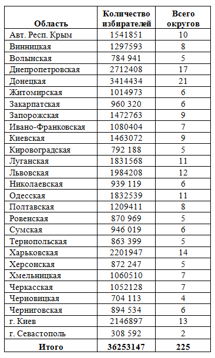
Таблица 1. Округа народных депутатов ВР Украины 2012 г.
— Политические предпочтения избирателей . Кроме различных социальных противоречий, также существуют политические убеждения и идеологические взгляды, влияющие на выбор избирателя.
— История развития выборов на округе . Необходимо проанализировать те схемы и способы проведения политических кампаний, которые осуществлялись ранее на округе. Речь идет не просто об исследовании статистических результатов предыдущих выборов. Применяемые ранее технологии указывают на то, какие виды команд уже существуют на территории и какой тип кампании они будут (и могут) осуществить, а также на отношение и подготовленность со стороны тех, кто голосует к применению к ним той или иной схемы получения голосов. Существует зависимость очередности применяемых избирательных технологий или некий «севооборот». Причем то, что «сработало» на округе при предыдущем политическом соревновании, в этот раз может дать абсолютно противоположный результат.
— Является ли кандидат местным жителем? Закон [118] не требует от претендента в депутаты в ВР Украины обязательного проживания на территории округа избрания. Кроме того, исследователи расходятся в оценке влияния фактора проживания в округе на результат предвыборной гонки. В большей части случаев для избрания это имеет большое значение на выборах меньшего масштаба. Привязка к местности или предыстория участия в исполнительной или представительной власти в регионе того или иного претендента в народные депутаты может быть использована против него или наоборот для повышения его рейтинга во время агитационной кампании.
— Отношение к местной власти со стороны голосующих жителей необходимо исследовать перед выбором округа. Политик, ранее принимавший участие в местных властных структурах и не добившийся высоких результатов, имеет низкую электоральную поддержку.
— Отношение жителей к партии власти . Для определения округа нужно осознавать личную причастность кандидата к центральной и местной власти в округе, а также знать отношение к ней избирателей.
— Отношение избирателей округа к существующей в стране оппозиции . Считается, что причастность к оппозиции – это плюс с точки зрения первоначальных показателей рейтинга претендента в народные депутаты. Но подобное утверждение не всегда справедливо, не каждая оппозиция имеет поддержку среди жителей того или иного округа. Например, оппозиция с Запада Украины имеет отрицательный рейтинг на Востоке и наоборот. Кроме того, возможно, причастность к оппозиции может добавить определенную нагрузку и дополнительное внимание со стороны местной власти к избирательной кампании оппозиционера.
— Существующие команды и кандидаты . Это важный вопрос, который санкционирует определение возможного участия в предвыборной гонке на выбранном округе. Исследование этой проблемы позволит избрать оптимальную стратегию или вообще отказаться от политического соревнования на территории.
— Смоделировать, кто и как будет действовать на округе , то есть нарисовать основные возможные модели поведения конкурентов.
— Определить вариант победы . Для этого нужно понять, как будет достигнута победа или где и в результате чего будет получено необходимое количество голосов.
Если не решено большинство из указанных выше вопросов, не стоит тратить время — шансов для победы на округе нет.
На выбор округа могут влиять различные дополнительные факторы:
— Личные предпочтения самого кандидата, а также предыстория работы на конкретной территории.
— Соответствие образа кандидата и округа.
— Партия может назначить либо заставить принимать участие на той или иной территории.
Заметим,существуют случаи, когда округ по тем или иным причинам может изначально не подходить кандидату. Кроме того, бытует мнение, что чем беднее округ и его избиратели, тем легче на нем стать депутатом. Не всегда подобное утверждение является истиной, могут возникнуть дополнительные условия, которые повлияют на результат голосования.
По территориальному признаку условно округа можно распределить на следующие виды.
«Сельский» округ. Условно это территория, на которой преобладает сельское население. В чистом виде в Украине не существует «сельских» округов. Обязательно наличие на такой территории районного(ых) центра(ов) и поселков городского и сельского типа. Округа могут быть с преобладанием сельского населения или наоборот жителей небольших городов и поселков. Прежде всего, это округ, в котором избиратели разбросаны по территории и не скучены в одном месте. Считается, что те, кто проживает в сельской местности, в современной Украине имеют невысокое материальное положение и определенные мировоззренческие потребности, которые необходимо учитывать при планировании избирательной кампании.
«Городской» округ областного центра. Характеризуется более высоким материальным положением голосующих по сравнению с избирателями «сельских» территорий; концентрацией голосующих на небольшой территории; определенным масштабом и типом СМИ; специфическими потребностями жителей, которые живут в урбанизированном поселении; сосредоточением культурных, инфраструктурных и административных учреждений.
«Городской» округ столицы. Достаточно схожий с областным, но здесь присутствуют и специфические отличия. Столица всегда остается местом, которое привлекает к себе пристальное внимание центральной власти. В столице «сходятся противоречия» противоположных политических сил. Экономическая неоднородность и более высокий уровень жизни жителей; более противоречивая социальная и политическая среда; развитая инфраструктура; всеукраинские СМИ; пристальное внимание со стороны прессы и международных наблюдателей к претендентам в народные избранники и предвыборной гонке; сосредоточение различных специалистов; иная ресурсная база кандидатов по сравнению с той, которая существует в регионах.
Оценка влияния на ситуацию в округе всеукраинской «игры». Нужно проанализировать цели партии власти и оппозиции. Партия власти желает получить большинство (абсолютное большинство — 300 депутатов либо математическое — 250) в Верховной Раде Украины. Задача оппозиции — не дать своему противнику добиться поставленной цели и самой завоевать преимущество на парламентских выборах. Каждый из «игроков», используя различные варианты, будет стремиться к успеху, это окажет влияние на избирательную кампанию на отдельном округе.
Джерримендеринг . Избирательные округа неоднородны, в них существуют различные слои с неодинаковыми потребностями и взглядами. Те, кто формирует границы округа, понимая значение отдельных групп и их влияние на победу, могут с помощью возможных административных манипуляций изменить соотношение в свою сторону. Подобная проблема на Западе известна уже довольно давно. Если рассматривать украинские реалии, можно обратиться к исследованию Т. Б. Мадриги [64]. В своей статье о выборах в ВР Украины в 2002 году он указывает, что «в Западной Украине наблюдалось использование технологий, которые были связаны со сменой границ избирательных округов для получения необходимого результата. В основном подобное осуществлялось для кандидата или партии, которая находилась в тот момент у власти или к которым власть была лояльной. Применение такой технологии обеспечивало возможность создания избирательного округа в такой пропорции и конфигурации, которая была благоприятной для конкретного кандидата или политической партии» [64]. Скорее всего подобное утверждение достаточно условно. Так сложилось исторически, что в Украине не сформировались социальные и политические признаки, которые позволяют, как это происходит в других странах, жестко разграничить и локализировать определенные группы избирателей по месту проживания. Если и существует некая специальная нарезка, то на нее больше будет влиять территория, на которой ранее работал свой кандидат и его команда (или наоборот).
Причем изменить ситуацию преобладания определенной группы избирателей в округе невозможно. Можно только надеяться на понижение явки, а также на то, что электорат кандидата придет в день голосования, а контргруппа по тем или иным причинам откажется принимать участие в голосовании. Отсюда возникает проблема повышения явки среди тех, кто голосует за кандидата, и понижения политической активности в группе оппонента.
Выводы. Выбор округа — это первый практический шаг, который будет влиять на все остальные действия во время избирательной кампании. Оттягивать решение по определению места и способа участия в предвыборной гонке можно до даты начала регистрации кандидатов, выбрав два-три наиболее подходящих. Но только в том случае, когда это позволяют «технические» возможности, каковыми являются различные факторы, такие как негласное административное разрешение; наличие финансов; мобильной команды, готовой проводить тот или иной тип[24] избирательной кампании, и т. д. Чтобы победить на округе, необходимо обращаться к самой многочисленной и активной группе избирателей. Для осознанного выбора округа нужно иметь хотя бы общее представление о регионалистике, то есть о потребностях и настроениях жителей различных регионов и об их ментальности. И только после определения самого удачного варианта приступать к осуществлению всех необходимых процедур.
Существуют различные представления об избирательной социологии и о настроениях и ожиданиях тех, кто голосует на выборах. В данной главе автор не предлагает анализ, который точно отображает ситуацию и настроения в каждом отдельном округе. Для ее уточнения необходимо проводить специальные социологические исследования.
2.1. ОСНОВНЫЕ ДАННЫЕ И ЦЕЛЬ ВЫБОРОВ ⇑
Рассмотрим округ (схема 1) кандидата в народные депутаты в Верховную Раду Украины. В нем находится:
— окружная избирательная комиссия, которая занимается организацией и обеспечением избирательного процесса в пределах мажоритарного и многомандатного избирательного округа;
— в типичном округе находится около 65 избирательных участков, на которые в день голосования придут максимум 160 тыс. избирателей. А на средний избирательный участок приходится 1500–2500 голосующих. Зная территориальный тип округа, обладая определенным опытом, можно в среднем определить, сколько на округе и участке находится частных или многоэтажных домов, подъездов и т. д.;
— около 160 тысяч избирателей. Указанная цифра в дальнейшем позволяет обозначить «необходимые усилия» при проведении избирательной кампании.
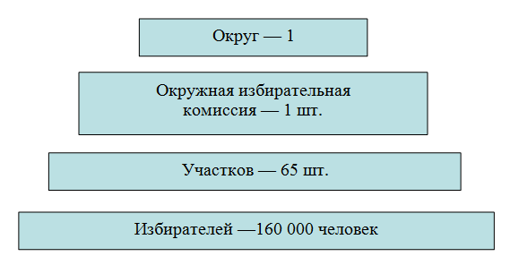
Схема 1. Структура округа
Цель выборов следует четко понимать с момента принятия решения об участии и вплоть до официального опубликования итогов голосования. Точное понимание цели участия в выборах позволит определить тип кампании и избежать ненужных затрат.
1-я цель — ПОБЕДИТЬ. Стать депутатом. Все, что будет после выборов, будет уже после ПОБЕДЫ. Задача победить имеет простое решение — необходимо получить 30 тыс. голосов «за». Или в день голосования на участки должны прийти около 30 тыс. избирателей и проголосовать «за». Или кандидату в процессе избирательной кампании нужно понравиться тем или иным образом 30 тыс. избирателей. В подобное «понравиться» (получить голос) может входить что угодно: личная симпатия, альтернативный кандидат, борьба за справедливость, женские симпатии, материальная заинтересованность и т.д. На протяжении трех месяцев предвыборной гонки надлежит делать все для того, чтобы получить голос. Все планы, действия, предвыборная программа кандидата, каждая листовка, плакат и выступление должны быть подчинены только этой простой и понятной цели. Все, что будет происходить, должно оцениваться только с указанной точки зрения. Перед проведением какой-либо акции или осуществлением предвыборных действий нужно себя спрашивать, а сколько голосов «за»? И если отдача либо цель «акта» размыты, в таком случае стоит отказаться от мнимых акций, которые только потребляют ресурс и никак не влияют на результат. Кроме того, каждое действие должно быть доказуемо с точки зрения приближения к цели. Движение к цели можно разбить на отрезки и в пространстве и во времени, разделив его по месяцам и неделям, частям и участкам округа. Кроме: а) получения обещания голосовать «за», необходимо думать об: б) удержании этого обещания и в) исполнении его в день голосования. В конце избирательной кампании перед голосованием нужно иметь осознанное представление о проведенной работе и ее результатах. Еще до дня голосования можно получить представление о том — достигнута цель или нет.
Количество избирателей, с которыми предстоит взаимодействовать, в целом по кругу 160 тыс. человек. Явка на выборах в последние годы падает и вряд ли превысит 50%. То есть на участки придут максимум 160 тыс. / 2 = 80 тыс. человек. Чтобы гарантированно победить, достаточно набрать 50% голосов, то есть 80 тыс. / 2 = 40 000, и это завышенная цифра. На практике, если анализировать выборы по мажоритарной системе в ВР Украины 1998-го и 2002 года, для победы в среднем достаточно было набрать 30 000 голосов.
2-я цель. Кандидат и его окружение должны точно понимать цель участия в предвыборной гонке, кроме ПОБЕДИТЬ, существуют и другие цели участия. Перечислим их с точки зрения убывающей актуальности.
— Снять свою кандидатуру в обмен на выгодное предложение, например, в структуре исполнительной власти. Если на округе разгорается борьба между двумя основными претендентами в народные депутаты, то высадка на территории «неизвестного» кандидата на электоральную площадку возможного победителя приведет к его проигрышу.
Такой «неизвестный» претендент может не только выдвинуться на ту или иную: а) электоральную площадку. Но также он может повлиять на ситуацию, замещая: б) образ кандидата возможного победителя (альтернатива), либо используя: в) избирательные технологии предполагаемого победителя против него самого и т. д.
Например, если два кандидата претенденты Х и Y рассчитывают каждый получить по 20 тыс. голосов, то встраивание в эту схему третьего кандидата Z и получение на площадке кандидата Х 5 тыс. голосов приведет к заведомому поражению этого кандидата и победе кандидата Y.
— Проиграть в результате давления или незаконных действий других участников, чтобы появиться на перевыборах в качестве основного пострадавшего игрока избирательной гонки. Существуют ситуации, когда с высокой долей вероятности понятно, что после очередных выборов могут быть назначены перевыборы. В таком случае выигрывать в избирательной кампании не имеет смысла. Можно потратить 25% средств (от необходимых для победы) в целях создания известности основного претендента, а также получения амплуа пострадавшего борца, что позволит в следующий раз с небольшими затратами выдвинуться на первую позицию.
— Получить опыт участия в политической борьбе такого уровня, разворачивая небольшую вспомогательную кампанию для участия в последующем на выборах более низкого уровня. Подобное позволяет: испытывать на округе избирательные технологии; обучить команду, повысить личный опыт, знания и расширить навыки; укрепить известность и повысить рейтинг; поддержать спрос на свою личность среди избирателей округа.
3-й тип цели участия — бессмысленный с точки зрения политической борьбы. Политическое противоборство и цель выборов — это победа на выборах и получение власти для реализации программы развития общества (округа, страны) в том или ином направлении. Причем тех, кто голосует, не надо обманывать, не нужно им рассказывать, что участие в выборах — это не борьба за власть и что кандидату вообще власть как таковая не нужна. Если выдвигающийся политик не представляет такую программу и не ставит себе цель победить, иными словами, получить власть, и осуществлять преобразования, то и голосовать за него не будут. Иногда некоторые технологи предлагают претенденту в народные избранники секретный способ, позволяющий перехитрить самого себя, а именно определить для себя и донести до избирателей некую ложную цель, которая в дальнейшем становится сущностью кампании и неосознанной целью кандидата.
2.2. СТРАТЕГИЧЕСКИЕ СХЕМЫ ⇑
Организация современной избирательной кампании возможна только при наличии определенных условий и приближение их к идеальному состоянию. Это:
— анонимность, при которой все избиратели равны по отношению друг к другу и к избирательной системе;
— нейтральность, если относительно избирательной системы все кандидаты равны [55, с. 39] — и это одно из основных условий проведения конкурентных выборов, которое предполагает, что во время предвыборной гонки существует законодательно закрепленная, объективно существующая, свободная политическая среда и публичная политическая деятельность;
— свободная и открытая конкуренция (соревнование) между политическими игроками различного уровня. Причем обязательным является само наличие таких игроков. В некоторых политических системах может существовать понятие «политический выбор», но на практике отсутствуют те, из кого можно выбирать. Подобное приводит к тому, что политические выборы превращаются в фарс и абсурд. Для наличия участников обязательными условиями являются как законодательная база (возможность их свободной легализации), так и другие обстоятельства, которые позволяют политическим субъектам выражать существующие в обществе настроения;
— ограничение тотального применения недемократических методов ведения избирательной кампании. Необходимо открыто признать, что существующая политическая практика не идеальна, встречаются разнообразные формы вмешательства в выборы, но подобное можно воспринимать как некое допустимое зло, если оно в корне не ограничивает решение избирателей и не изменяет ход предвыборной гонки и ее результат.
Определение понятия «стратегия» . В случае когда избирательная система приближена к идеальной, то есть присутствует достаточная свобода организации избирательной кампании и возможность конкурентного политического выбора, может существовать политический рынок, политическая борьба и т. д. Только в рамках такой игры можно обсуждать понятие « стратегия », понимая его как схему (развитие) политической борьбы между различными политическими субъектами (в рамках предвыборного «соревнования») с использованием допустимых законных форм политической борьбы, различных инструментариев и технологий, в пространстве и во времени, для поиска предполагаемых решений и способов поиска оптимального варианта победы. Возможны также иные формулировки, например, стратегия — это «не детальный план или программа инструкций; это объединяющая тема, обеспечивающая согласованность и задающая общее направление действиям и решениям человека или организации» [34, с. 19]. Или стратегия — это взгляд в будущее. Она имеет отношение не только к тому, как фирма конкурирует сегодня, но и к тому, чем фирма станет завтра. Многие организации формулируют эту идею в утверждениях видения [34, с. 42]. На самом общем уровне стратегия — это планирование способов, с помощью которых организация или индивид могут достичь поставленных целей [34, с. 33]. Стратегия — это свод основных идей избирательной кампании [70, с. 28]. Остановимся на том, что стратегия — это оптимальный вариант предполагаемой «игры», которая позволяет с помощью понятного количества ходов или определенной направленности выиграть соревнование.
Теория игр. 1) Позволяет структурировать стратегические решения. 2) Дает возможность прогнозировать результаты конкурентных ситуаций и помогать выбрать оптимальную стратегию [34, с. 118].
Иерархия стратегических игр. В военной науке, например, у А. А. Свечина в его «Стратегии» (http://militera.lib.r-u/science/svechin1/index. html) принято выделять следующую иерархию стратегий.
— Большая стратегия (геополитика, действия глобальных игроков и участие их в процессах на протяжении больших периодов, иногда сотен лет).
— Стратегия войны, которая включает: экономику, политику, дипломатию, боевые действия, тыл и людские ресурсы всей страны — участницы конфликта.
— Стратегия военной кампании — это только моделирование определенного столкновения или отдельного сражения войны.
В рамках политической борьбы, по аналогии можно разделить также:
— Большая стратегия (политические действия и процессы во всем государстве на протяжении последних 20 и более лет и участие в них различных субъектов соответствующего масштаба).
— Стратегия войны — это совокупная стратегия всей избирательной кампании в Верховную Раду Украины, цели и планы основных игроков, таких как партия власти, оппозиция, внешние силы.
— Стратегия военной кампании (это стратегия отдельной партии,
либо при смешанной системе сюда также включается отдельный округ как единица, на которой будет происходить отдельное противоборство между самодостаточными политическими игроками или претендентами в ВРУ[25]).
В данном исследовании не рассматривается первый и второй уровень. Конечно, верхняя игра всегда довлеет над нижним уровнем и очень часто изменяет ход и результаты столкновений. Условно это можно представить себе на таком примере: в стакане развиваются микробы, микробы создают колонии, возникают качественно новые типы организации жизни, эволюция (ограниченная рамками стакана) продолжается. В стакане созрела игра, и идет борьба за выживание между игроками нижнего уровня. Но в любой момент игрок верхнего уровня опускает карандаш в стакан и размешивает воду, после чего игра кардинально меняется. На практике вмешательство игроков верхнего уровня по отношению к существующей игре нижнего уровня тоже имеет определенные правила. Нужно помнить, что правила есть всегда, отсутствие правил — это тоже правило игры.
Для создания практической модели игры необходимо:
— нарисовать общую модель игры;
— определить и сопоставить существующие ресурсы, таким образом идентифицировав игроков;
— оценить возможные технологии;
— уточнить варианты выбора решений;
— выявить выигрыш в каждой комбинации.
2.3. Общая модель игры на округе ⇑
Математическое моделирование игры на округе. В данном случае это состязание между N-м количеством игроков на мажоритарном округе. Для построения практической модели необходимо разобрать или предложить возможные схемы соревнований. При этом выборы по мажоритарному округу проводятся в один тур, потому объединения игроков в союзы и контробъединения невозможны.
Предположим линейную статическую модель игры (МИ) на округе в виде неравенства.
Формула 1. (МИ)
A > Б > В > Г > Д > Хn > 0,
где: (А, Б, В) Хn… — это кандидат или игрок; > — определяет место игрока в игре при голосовании. Место игрока в модели — это его поддержка со стороны избирателей округа, которая возникает в результате наличия у игроков ресурсов; осуществления ими технологий; принятия решений, и осуществление ходов в игре. Положение игрока в линейной модели во время избирательной кампании замеряется с помощью социологических опросов и находит свое конечное выражение в день голосования.
2.4. Ресурсы избирательной кампании и типы кандидатов ⇑
На содержание политических выборов существенное влияние оказывают технологические представления, импортированные с Запада. Оценивая общие постмодернистские взгляды западных технологов о выборах, можно констатировать неприятие ими понятия «идеология» в классическом смысле. Такая мировоззренческая картина отрицает в себе понятие чего-либо возвышенного либо идеального [39]. Избиратель — это не активный участник политического процесса, а электорат, то есть пассивный элемент, или это те, кто после «представления» «отдает свой голос». В таком ракурсе избиратель представляется как зритель в зале, который после проигранного перед ним спектакля кидает жетон в урну за того либо иного актера, который ему понравился в результате политической постановки.
Исходя из вышеизложенного, а также в некотором смысле абстрагируясь, современные политические выборы можно себе представить как некую «форму политического спектакля, в результате которого происходит определенная манипуляция с воображением зрителя (избирателя). Для организации такого спектакля необходимы следующие условия-ресурсы.
Округ. Место проведения спектакля (зал), которое также включает и зрителя . В таком зале будут происходить все последующие действия на протяжении выборов. Округ еще можно понимать как среду, в которой будут протекать события.
Административная поддержка гласная или негласная . То есть это разрешение на проведение такого действа [17]. Присутствие во время избирательной кампании этого типа ресурса всегда остается под вопросом [88].
Финансы. Экономическая возможность организовать такое политическое представление.
Организация (команда). Труппа актеров — полноценный совокупный субъект, который способен провести все необходимые акты и довести представление до конца. Такая структура может включать штаб, полевую команду и т. д., которые, взаимодействуя, осуществляют все необходимые процедуры во время предвыборной гонки.
Лидер-кандидат (главный актер) — личность, которая способна пройти через все перипетии представления . В идеале это лидер для определенного округа, за которого голосуют, несмотря ни на никакие дополнительные ресурсы.
Постановка. Сама предвыборная гонка, которая включает различные части и объекты материального и духовного характера, происходящая в пространстве и во времени. В ней содержатся различные части и акты. Постановка включает сценарий, стратегию, технологии, программы и т. д.
СМИ. На выборах, максимально приближенных к избирателю, СМИ не являются ключевым ресурсом, но их наличие позволяет активно воздействовать на решение зрителей отдать голос. Средства массовой информации могут быть различного масштаба, характера и формы собственности.
Если хотя бы одно из условий не соблюдено или не имеется в наличии (в данном случае кроме СМИ ) даже в примитивной форме, то выборы, в основном, становятся неосуществимым мероприятием для претендента в народные избранники, и в них не стоит ввязываться. Причем если на округе только один кандидат способен организовать все выше изложенные компоненты — такие выборы чаще всего превращаются в политическое соревнование с единственным кандидатом.
Анализируя понятие «ресурс», можно предположить, что это количественная и качественная данность, характеризующая какой-либо объект/субъект/предмет, присущая ему, а также выявляемая при оценке его возможностей и способностей, либо обнаруживаемая в результате анализа существующих условий. В литературе [21] встречаются различные классификации ресурсов, которые присутствуют в рамках политических выборов. Выделяют: нематериальные и материальные; собственные и привлекаемые; внешние и внутренние; организационные и аналитические и т. п. Например, А. М. Бучин [21] предлагает типологию ресурсов избирательной кампании, разбивая их на две группы: базовые (кандидат, команда, финансы и время) и производные (информационные, технологические, организационные, элитарные и административные) [21, с. 5]. Такая трактовка также имеет право на жизнь. Но в данной работе ограничимся следующими: административный ресурс; округ; организационный ресурс; лидерский ресурс; финансовый ресурс.
Согласно такой ресурсной классификации, определим смысловые типы возможных участников-кандидатов:
— админресурс — местный чиновник;
— округ — местный авторитет;
— организация — скрытый кандидат;
— лидер — харизматический лидер;
— финансы — местный бизнесмен.
Причем еще раз заметим, каждый кандидат в каком-либо значении обязан обладать всеми остальными ресурсами. Иначе становится невозможным полноценное участие в выборах.
Все вышеуказанные ресурсы не одинаковы. Каждый округ (зал) имеет собственную специфику, в каждом округе зритель имеет свои особенности. То, что можно сыграть в одном округе, в другом дает противоположный результат или вызывает иную реакцию у зрителя. Административный ресурс также имеет различные характеристики, часто его можно нейтрализовать или ретушировать тем или иным способом. Организация, работающая на округе, тоже может иметь свою специфику и уметь играть только конкретные постановки (полевая или агитационная кампания), что также ограничивает то, что можно организовать во время избирательного процесса. Кроме того, лидер-кандидат в выборах, максимально приближенных к зрителю, становится очень важным элементом. И если на ТВ можно что-то замаскировать либо скрыть, то при прямом контакте все становится явным. Поэтому в таких выборах сущность лидера-кандидата (его образ) приобретают первоочередное значение.
Рассмотрим следующую абстракцию, разделим все вышеизложенные ресурсы по степени (и предадим им условные количественные показатели) на такие типы:
— абсолют = 10
— средние = 3
— слабые = 1
— ноль = 0
Абсолютный ресурс. Существуют ситуации, когда участие в выборах является изначально проигрышным предприятием. Представим себе математическую абстракцию, назовем какой-либо из указанных выше ресурсов абсолютным. Такое отвлечение достаточно легко определимо в математике, когда сопоставляются два несоизмеримых объекта. В случае политической реальности можно сказать, если кто-то один обладает организацией в сто человек, а другой в пять, то второй структуры не существует, а первая по отношению к ней является абсолютным превосходством.
— Абсолютный округ. Специфика зала позволяет играть только один вид постановок и только одному типу кандидатов, зритель не готов воспринимать и не воспринимает что-либо иное. На подобном округе надо либо подгонять все под его специфику, либо даже не пытаться участвовать. Ярким примером такого являются некоторые крайние округа Западной и Восточной Украины, где исходя из особенностей местного избирателя, можно выигрывать только по одной схеме.
— Абсолютный админресурс — это случай, когда кандидат доминирует над другими участниками выборов в обладании этим ресурсом.
— Абсолютная организация — претендент в народные избранники подготовил организацию, которая в разы превалирует над другими избирательными структурами в округе.
— Абсолютный лидер — это когда кандидат, исходя из своих качеств и личностных характеристик, является харизматическим лидером.
— Абсолютные финансы — ситуация экономического преобладания претендента в десятки раз над другими игроками.
Сложно сказать, какой из ресурсов для победы является наиболее важным. Если на округе сталкиваются несколько кандидатов, которые обладают в абсолюте одним из указанных ресурсов и одновременно могут частично нейтрализовать с помощью различных инструментов остальные абсолютные ресурсы противника, ситуация может разворачиваться по-разному. Несмотря на обладание кем-то абсолютным ресурсом, часто находятся желающие попробовать свои силы. Например, это случается, когда на округ заходит сильный кандидат со стороны; происходит внутренняя эволюция претендентов; ситуация лузерства или имитации.
В случае если некий кандидат может соединить несколько ресурсов в значении абсолютных — с округа можно уходить. Чаще всего те, кто уже не первый год участвует в выборах, заранее готовят все указанные компоненты, и они у них достаточно развиты. В большинстве случаев не существует ситуации, когда кто-то обладает всеми ресурсами в абсолюте, потому как сложно сосредоточить в одних руках и постоянно воспроизводить все ресурсы на надлежащем уровне. Подобное также требует крайнего напряжения сил и достаточно дорого обходится, поэтому на практике не встречается.
Средний и слабый ресурс. Абсолютный ресурс — это когда ресурс в десятки раз превосходит возможности других игроков. Соответственно слабый — это будет нижний порог, а средний будет находиться посередине — между сильным и слабым. На примере с организацией можно сопоставить таким образом: если слабая организация на округе — это пять человек, а абсолютная — 100, то средняя будет состоять из 30–50 человек. Значение ресурса будет зависеть от конкретного округа и от претендентов. Допустим, для участия на мажоритарном округе условно-достаточная организация — 1000 человек, то это будет средний ресурс, и соответствующие выводы из этого о его значении в качестве слабого и абсолютного. Нужно заметить, что подобная оценка ничего не говорит о качестве ресурса, о его внутренней структуре и т. д. Каждый ресурс в отдельности необходимо изучать и понимать, основываясь на опыте и знаниях. Иногда количественный показатель ничего не говорит о внутреннем содержании. Полевая организация в 50 человек из-за своей подготовки, организованности, слаженности, правильно подобранных людей и других показателей может превосходить фиктивную организацию в 1000 участников.
Ноль или лузеры — это когда присутствует только декларация наличия ресурса, за которой в действительности ничего нет, или это то, что можно определить разговорным понятием «лузерство». Причем такие лузеры бывают двух типов: имитаторы и действительные лузеры. Имитаторы или псевдоучастники — это введение в предвыборную гонку кандидатов, которые участвуют в кампании не ради победы и даже не ради собственной раскрутки, а для того, чтобы подстраховать основного кандидата в случае выбывания всех других конкурентов (так называемые кандидаты-дублеры), либо для того, чтобы выискивать у основного конкурента недостатки и обжаловать их (так называемые кандидаты-киллеры). Иногда используются «кандидаты-двойники, имеющие одинаковую фамилию с основным конкурентом [17, с. 66]. Это также кандидаты, которые отнимают голоса у основного претендента за счет схожей риторики, полевой работы или контрагитации [17]. А действительными лузерами являются те, кто неправильно оценивает свои ресурсы — из-за неграмотности и непонимания избирательного процесса либо по обычной глупости.
Правильная оценка своих ресурсов. Для нее необходим анализ количественных и качественных характеристик собственных ресурсов. В последующем — сопоставление своих данных и существующих у противников. В конечном итоге — опытная оценка наличествующего.
Ресурсы — это только определенный потенциал, на протяжении выборов значение их может меняться.
Развитие ресурсов. Подходы по улучшению ресурсов в рамках экономической стратегии описаны у Р. М. Гранта [34, с. 318]. Автор предлагает следующие способы, которые нужно расширить под избирательную специфику.
— Выращивание ресурсов. Самостоятельное создание собственных возможностей на протяжении длительного отрезка времени до выборов.
— Слияние и поглощение. Приобретение ресурсов может возникать
в результате поглощения отмирающих игроков на округе либо вливания в команду кандидата отживших или отыгравших ранее политических групп.
— Стратегические альянсы. Концентрация вокруг игрока на округе местной либо всеукраинской элиты позволяет приобрести ресурсы, произведенные ранее другими игроками, которые не желают или не могут участвовать в данной кампании.
— Передача ресурсов — это самое простое средство получить способности. Мгновенное получение ресурсов, необходимых для того, чтобы имитировать стратегию, это покупка готовых [34, с. 161]. Подобное не всегда является истиной, не все способности можно купить.
Сокрытие ресурсов — это стратегический шаг к победе на выборах. Компилируя слова стратегов древности, можно оценить способы стратегического обмана: «когда ты слабый — кажись сильным, когда сильный — кажись слабым». Перед сражением сложно понять силу соперника, до него это можно сделать с помощью разведки, анализа и т. д. Окончательное значение возможностей конкурента можно выявить уже только после столкновения. Рассмотрим следующие простые мысли: почему Александр Великий всегда выигрывал ? — Потому, что он был сильнее своих противников. Эта безумная, тавтологическая очевидность очень мало кому понятна — для того чтобы выиграть, надо быть сильнее ! Нужно понять, что значит быть сильнее в данной игре и сделать это. Но если враги Александра были слабее его, почему они решались на неминуемо проигрышное столкновение? — Потому что они не могли заранее оценить силу противника и еще до начала сражения либо стать сильнее, либо избежать столкновения до достаточного усиления. По аналогии, сокрытие своих ресурсов позволяет усыпить бдительность противников, которые в это время не будут правильно понимать ситуацию и не откажутся в конечном итоге от предложенного варианта игры, то есть проиграют.
Описанные выше основные ресурсы являются базовыми. Возможно введение в игру и других ресурсных показателей. Вообще все может выступать как ресурс, но только в том случае, если это допустимо использовать как фундамент для осуществления каких-либо будущих действий. Так, ресурсом могут быть личные либо коллективные знания, навыки, инновации и даже скрытая способность воздействия на избирателя, но только в том случае, когда это выступает как основной элемент для создания программы действий, которая приведет к победе на выборах.
2.5. Сопоставление ресурсов игроков. Модель игры исходя из анализа ресурсов ⇑
Представим себе, что на округе присутствует достаточное количество участников первого эшелона. Определим, какие могут быть игры в соответствии с опорой на конкретный ресурс. Такие игры можно осмыслить, исходя из оценки основного ресурса претендента в народные избранники, либо в рамках определения значений всех базовых ресурсов кандидатов. Для моделирования игры, исходя из анализа ресурсов, повторим следующие данные.
1) Типы базовых ресурсов (используем сокращения):
— административный ресурс — ад.
— округ — ок.
— организационный ресурс — ор.
— финансовый ресурс — ф.
— лидерский ресурс — л.
2) Шкала оценки значения ресурса:
— абсолют = 10
— средние = 3
— слабые = 1
— ноль = 0.
Предположим, что у нас есть гипотетические данные об основных ресурсах игроков и об их качественном значении.
Статистическая модель игры оценки игроков по их главному ресурсу.
Формула 2.
А (ад) > Б (ф) > В (л) > Г (ор) > Д (ок) > 0
Допустим, известно количественное и качественное значение каждого ресурса:
А (10) > Б (3) > В (1) > Г (1) > Д (0) > 0.
Модель игры в рамках анализа значения всех основных ресурсов. Для простоты возьмем только трех участников.
Формула 3.
А (ад+ок+ор+л+ф) > Б (ад+ок+ор+л+ф) > В (ад+ок+ор+л+ф) > 0
Допустим, установлено количественное и качественное значение каждого ресурса, тогда:
А (10+3+3+1+3) > Б (3+1+3+0+10) > В (3+1+1+0+1) > 0.
Ресурсы — это только потенциал, осуществление его происходит во время избирательной кампании с помощью технологий-способностей (программ). От реализации ресурсного потенциала будет зависеть конечный результат предвыборной гонки. Значение ресурса также может быть либо не реализовано вообще, либо потрачено впустую, либо нейтрализовано .
Замечания.
Если противник понимает все указанные условия-ресурсы, он может переиграть оппонентов (используя различные простые либо многоходовые комбинации) еще до начала избирательного процесса. Часто даже не раскрывая какой-либо способ подавления либо нейтрализации ресурса. Например:
— Каким-либо образом не дать понять сущность округа (зала) противоположной команде.
— С помощью административного ресурса подавить оппонента до или даже после дня голосования — таким образом сведя на нет многомесячную работу.
— С помощью финансового ресурса задавить противника своим присутствием с помощью полевой или агитационной работы.
— Воспользоваться неопытностью избирательной организации оппонента и переиграть по ходу выборов.
— Запутать и не дать возможности осуществить различные необходимые избирательные программы , либо понимая типы постановок, сыграть на округе те, которые превратят игру оппонента в фарс.
Взаимопревращение ресурсов . Рассмотрим ограниченность формул (2) и (3). Существует проблема взаимопревращения ресурсов, в результате чего финансы могут становиться админресурсом либо организационным потенциалом. Поэтому при анализе формул нужно понимать, что они: статичны, то есть не показывают воздействия технологий на избирательную кампанию, а также не позволяют точно определить проблему взаимопревращения ресурсов, и таким образом может возникнуть погрешность в оценке положения кандидата в неравенстве.
Нужно помнить, что ресурсы — это только потенциал, указывающий на избирательные технологии, которые могут осуществлять народные избранники.
2.6. Три статистических варианта состязаний на округе ⇑
Рассмотрим типологию вариантов состязаний по количеству игроков. Анализируя предыдущие предвыборные соревнования в ВР (особенно актуальными для данного исследования являются выборы в Верховную Раду Украины 2002 года, с которыми всегда есть возможность ознакомиться на сайте ЦИК Украины) и исходя из существующего материала, предположим основные возможные статистические схемы выигрыша на мажоритарном округе. Исходя из практики выборов 2002 года в ВР Украины, выявляются три таких варианта: 1) если на округе один сильный игрок А (А > 0); 2) если соревнуются два сильных игрока А и Б (А > Б; Б < А); 3) если на территории округа в предвыборной гонке принимают участие три и более игроков . (А > Б > В > Г…).
Напомним, выборы по мажоритарному округу проводятся в один тур, потому сложения кандидатов в союзы и контрсоюзы не существует. Разберем эти три случая в таблицах.
1) Если соревнуется один сильный претендент А = 30–60% голосов за победителя (таблица 2) . В среднем это 50 тыс. голосов за кандидата в народные избранники.
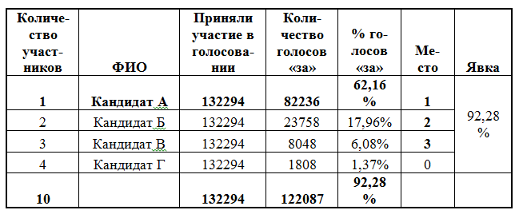
Таблица 2. А > 0
2) Если представить, что участвовать будут два или три и более сильных игрока А и Б , остальных можно не учитывать (таблица 3) . Победитель получает 25–30% голосов. В среднем по результатам 2002 года это 15–25 тыс. голосов за победителя.
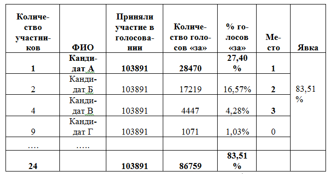
Таблица 3. А>Б, Б>А
3) Если три и более сильных участника (таблица 4). Победитель получает 12–25% голосов. Достаточно распространенная ситуация на выборах 2002 года. Выигравший претендент в округе обычно получал 10–15 тыс. голосов.
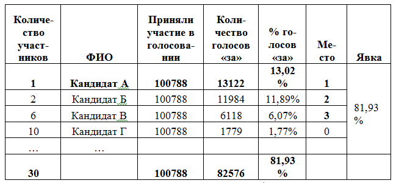
Таблица 4. А > Б > В > Г…
Каждый из описанных случаев имеет свои особенности. Самым дорогим и неустойчивым вариантом является второй, самым простым — первый, а безопасным для потенциального победителя — третий. Причем всегда, если ситуация складывается к первому случаю, для легитимности можно сымитировать третий вариант.
Замечания. Допустим, после захода на округ и согласно первоначальной оценке возникает случай 1. Но через время появляется информация, что на территории конспиративно работает кандидат, осуществляя полевую кампанию[26] — это в корне меняет суть происходящего, и т. д.[27]
— На округе иногда предвыборную гонку можно свести к какому-либо из описанных статистических вариантов с помощью подставных кандидатов. Например, возникла ситуация (А > Б : Б > А), результат которой слабо прогнозируемый. Для выхода из него надо либо усиливаться до бесконечности, либо во время избирательной кампании выдвинуть претендентов (при этом помним о времени регистрации кандидатов) на поле сильного соперника для размытия его электорального поля и перехода к понятной и прогнозируемой ситуации (А > Б > В > Г…).
— Украинское законодательство дает возможность проводить достаточно открытые выборы. Но позволим себе отвлечься от политической действительности. Представим, что при абсолютном административном ресурсе у нас всегда проходит кампания (А > 0), при которой остальные претенденты в народные избранники не учитываются вообще.
— Достаточно сложными являются игры с одним победителем. В этом значении пропорциональная система более свободна в количестве возможных вариантов побед. В мажоритарной игре победитель только один, поэтому соответственным образом нужно осознавать масштаб сложности.
2.7. Избирательные технологии и программы ⇑
Обладать ресурсами не значит уметь их трансформировать в технологии, а затем применить в процессе избирательной кампании. Рассмотрим понятие «технология». Согласно М. Н. Грачеву — это целостная динамическая система, включающая аппаратно-орудийные средства, операции и процедуры деятельности с ними, управление этой деятельностью, необходимые для этого информацию и знания, энергетические, сырьевые, кадровые и иные ресурсы [35]. Категория «технология» в политике и политическая технология — это методы решения политических проблем, выработка политического решения, а также реализация и осуществление практической политической деятельности [35]. Политические технологии — это также то, с помощью чего достигается определенная политическая задача [81]. В нашем случае политическая задача — это победа претендента в народные избранники на мажоритарном округе в результате участия в избирательной кампании, то есть его поддержка большинством избирателей в день голосования.
В контексте раздела проанализируем понятие «избирательные технологии». Согласно существующим определениям — это «система инструментов и действий для победы на выборах» [81]. Кроме предыдущего, в литературе используется понятие «технология избирательной кампании» как совокупность приемов, методов и воздействий, применяемых для достижения целей избирательной кампании, прежде всего такой, как избрание кандидата [47]. Также утвердилось понимание политических и избирательных технологий как «системы целенаправленных, последовательных и заведомо эффективных средств, приемов, способов достижения необходимого электорального результата» [80, с. 51]. Итак, понятие «избирательная технология» — это система действий для достижения необходимого результата, то есть это преобразование существующих ресурсов кандидатов в определенное воздействие на избирателя (схема 2) , на ход избирательной кампании, оппонентов и т. д. для получения необходимого электорального результата или победы.
Технология подразумевает искусство воздействия на что-либо для достижения какой-либо конечной цели. Технология — это включение в процесс достижения планируемого результата различных производных: знаний, способностей, субъекта, объекта, ресурсов, среды и т. д., а на выходе нужно получить прогнозируемый результат — это может быть измененный или новый предмет, новое знание, какое-либо понятное достижение, которое качественно отличается от того, что имелось на входе.
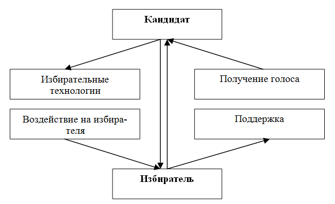
Схема 2. Взаимодействие: кандидат–технологии–избиратель
Определим избирательные технологии, которые могут применяться на округе.
Полевые технологии — способы влияния на электоральное поведение жителей округа с помощью прямого воздействия на них через участников полевой структуры кандидата.
Агитационные технологии — способы информационного воздействия на электоральное поведение избирателя с помощью различных информационных средств.
Обеспечивающие избирательные технологии — это совокупность действий во время предвыборной гонки, которые не имеют прямого отношения к влиянию на электоральное поведение избирателя. Это, например, те операции, которые связаны с организацией работы участковых избирательных комиссий, наблюдением в день голосования и т. д.
«Грязные и серые» избирательные технологии — это различные, чаще всего не совсем законные или даже неправовые, а также не допустимые с моральной точки зрения способы воздействия на электоральное поведение избирателей округа, на избирательную кампанию кандидата-оппонента, его окружение, имущество, организацию и т. д., на сам ход кампании в округе и ее результат. Среди таких выделяются административные технологии, так называемый черный PR, всевозможные фальсификации на выборах и т. д.
Размытость понятия «технология» позволяет формировать любую формальную действительность, включая в нее все, что есть в наличии. В этом и проявляется универсальная гибкость категории «технология». Но в рамках осознанной деятельности нужно ограничивать как содержание применяемого понятия, так и его дальнейшее практическое использование. Например, понятие «технология вообще» находит свою конкретизацию в различных сферах деятельности следующим образом.
— Ядерные технологии — процесс получения энергии в результате деления ядер или ядерного синтеза.
— Информационные технологии — процесс, способ, создание, обработка и управление данными с помощью вычислительной техники.
Рассматривая понятие «избирательные технологии» как «систему целенаправленных, последовательных и заведомо эффективных средств, приемов, способов достижения необходимого электорального результата» [80, с. 51], никоим образом не позволяет конкретизировать его для использования в практике политической кампании. Будем считать, что правомерным остается применение категории «избирательная технология» для определения общего направления достижения результата (схема 2) с включением в это различных производных (полевая организация, админресурс, СМИ), но для количественной и качественной конкретизации необходимо ввести другое понятие.
Программа. Вводим понятие «программа». Оговоримся, что это не компьютерная программа и не избирательная программа кандидата и т. д. Программа в данном контексте — это понятие, конкретизирующее содержание термина «избирательная технология». Точнее, избирательную технологию можно предложить понимать как некую программу действий с включением ресурсного потенциала, способностей и других производных. Кроме того, программа должна содержать: количественные и качественные показатели вовлекаемых элементов; вход и выход; понятный результат воздействия (результативность); модульность или внутреннюю структуру; точное указание на сам способ воздействия во время избирательной кампании и конкретную стоимость. Комплекс программ, применяемых во время предвыборной гонки, нужно рассматривать в виде блоковой структуры, что позволит вводить новые либо удалять из проекта кампании кандидата ненужные программы.
Полевые программы существуют в рамках полевых технологий и ограничивают определение того, что полевая технология — прямое воздействие на избирателя с помощью прямых действий на округе посредством полевой организации кандидата. Рассмотрим основные.
— От двери к двери — это программа, позволяющая создать или расширить собственную полевую организацию. Программа, с помощью которой выявляются: избиратели, которые желают поддержать кандидата в день голосования, а также жители, желающие принимать участие в акциях и действиях в поддержку претендента в народные избранники в период избирательной кампании.
— Благоустройство — это программа по улучшению территории округа, проводимая в рамках средств избирательного фонда кандидата. Программа может включать не только практические действия на местности, но и широкое освещение происходящего в СМИ либо в листовочной агитации.
— Адресная помощь — действия по оказанию помощи малоимущим, многодетным и другим категориям избирателей в рамках средств избирательного фонда.
Возможны и другие полевые программы. Оговоримся, что все они должны соответствовать разрешенным в Законе [118] методам проведения агитации и ограничениям, связанным с вопросом финансирования избирательной кампании кандидата.
Агитационные программы — это реализация агитационных технологий на округе. Сложно совместить разрозненные компоненты в понятный акт действительности. Например, печатаем листовки и раздаем их и в местах скопления, и на выступлениях, и через полевую организацию. При этом как посчитать эффективность и определить качественно и количественно эти разрозненные действия? В большинстве случаев технологи просто печатают массив листовок «на глаз» и пускают их в оборот где только можно. Таким образом, сложно понять необходимое их количество, качество и результативность. Поэтому лучше всю агитационную продукцию и другие средства применять в рамках понятных агитационных программ.
— Выдвижение — программа информационного выдвижения кандидата на округе. Сюда также необходимо включить: пресс-конференции, публичные дискуссии и дебаты на ТВ и радио, к тому же и всю наружную и полевую агитацию. Цель программы — в результате ограниченного промежутка времени донести широкой общественности информацию о кандидате. Программа должна позволить создать узнаваемость претендента в народные избранники среди 160 тыс. избирателей округа.
— Встречи-обещания — встречи с жителями округа, обсуждение проблем округа, презентация избирательной программы кандидата. Цель — в результате прямого и косвенного (через СМИ) общения с избирателями донести до 160 тыс. голосующих на округе суть избирательной программы кандидата, в которой указаны способы решения основных проблем, а также видение им перспектив развития округа.
— Движение — проведение на округе массовых акций (митинги, демонстрации, палаточные пикеты, шествия и т. д.), направленных на привлечение к избирательной программе кандидата внимания широкой общественности, а также это протест со стороны политика-претендента против проблем в округе, которые не решаются в рамках действующей системы власти.
— Кризис — последовательное донесение до избирателей округа «минусов» программ оппонентов, что не противоречит Закону [118, п. 1, ст. 68].
Каждая из программ может включать различные способы и средства агитации. Для их осуществления могут включаться всевозможные СМИ и даже полевая структура. Встречи с избирателями, митинги можно освещать на местном телевидении, в газете, в листовках и т. д. — все будет зависеть от наличия ресурсов, целесообразности и оценки эффективности содержания каждой программы.
Обеспечивающие избирательные программы — это вспомогательные действия по организации кампании. Такие программы не создают электоральный результат, это то же самое, что затраты во время любого производства на бухгалтерию, рекламу и продажу — это все не добавляет произведенному продукту никакого качества и никак не влияет на его физические свойства, к тому же увеличивает конечную себестоимость товара. Но без таких программ нельзя провести выборы на округе.
— Анализ и планирование — комплекс действий по исследованию округа, это также создание сценария избирательной кампании. На выходе кандидат должен получить понятный и прогнозируемый план кампании[28].
— Социология — программа планомерной оценки электоральных настроений в округе на всех этапах предвыборной гонки. На выходе нужно получать доступные для понимания социологические исследования.
— Разработка агитации — разработка производных пропагандистских материалов, что включает в себя фотосессии, цикл дизайнерских работ, макетирование, написание текстов и т. д.
— Регистрация — все действия, связанные с проблемами регистрации кандидата.
— Работа комиссий — полный цикл поиска, обучения, подготовки и организации работы членов комиссий и наблюдателей в округе.
— Законность — действия по обеспечению законности избирательного процесса, включающие юридическое, журналистское и гражданско-общественное сопровождение программ и акций. Кроме того, это также правовая и общественная оценка деятельности оппонентов.
— День выборов — комплексная работа в день голосования с включением в нее кандидата, избирательного штата, членов комиссии, наблюдателей различных уровней, журналистов и т. д.
— Безопасность — соблюдение мер по обеспечению безопасности всего избирательного процесса.
«Грязные» и «серые» программы — условно-законные и внеправовые действия на округе, которые могут применяться претендентами в народные избранники. Все политические технологии можно разделить по принципу соответствия действующему законодательству на легальные и нелегальные [13]. Исходя из выше изложенной классификации, все « грязные» и «серые» программы находятся вне закона и имеют правовые последствия для тех, кто осуществляет такие действия во время выборов. Кроме того, все это подрывает доверие к избранной власти и может в последующем привести к непредсказуемым последствиям.
— Административные программы — разнообразный спектр схем по реализации админресурса, направленные либо на получение завышенного собственного электорального результата, либо против оппонентов.
— Черный пиар — распространение заведомо ложных и порочащих сведений и слухов о личности кандидата-противника и т. д.
Существующая взаимосвязь между ресурсами и программами:
— При отсутствии админресурса — для кандидата закрыто использование на округе «серых» и «грязных» технологий. К тому же частично кандидат не сможет без некоторой админподдержки нейтрализовать применяемые против него грязные технологии.
— Если не существует лидерского ресурса, то нельзя осуществить агитационные программы, такие как «Встречи и обещания» и «Движение». При отсутствии лидерского ресурса можно только с оговорками применять программу «Выдвижение» — без прямых дебатов и дискуссии.
— При отрицательном отношении избирателей округа к баллотирующемуся кандидату, к его личности, избирательной программе, образу агитационные программы дадут незначительный или даже отрицательный результат.
— При отсутствии полевой структуры нельзя осуществить полевые программы. А при отсутствии ядра, способного организовать агитационные программы, пропаганда на округе находится под большим вопросом.
— Отсутствие финансового ресурса ставит под вопрос избирательную кампанию кандидата даже при наличии существенного лидерского ресурса, который позволяет компенсировать многие вопросы.
Инновации — это поиск нового способа работы с избирателями. Инновация позволяет разработать новое решение либо в рамках уже существующего найти более эффективный способ применения чего-либо.
Эволюция отрасли (понятие взято из экономической стратегии) – это важный вопрос при оценке технологий избирательной кампании. Эволюция накладывает отпечаток на специалистов, технологии, кандидатов, законодательство и т. д. Условно все существующее в рамках выборов можно разбить на «поколения», как это делается в других сферах жизнедеятельности человека. Для сравнения, в такой области, как авиация, существует несколько поколений техники, которые существенно отличаются друг от друга. Поколения в авиации накладывают специфику на персонал, способы производства, управления и т. д. Если раскрыть это в рамках абстрактного столкновения, то нужно констатировать, что те, кто «использует луки», будут уничтожены теми, кто «применяет огнестрельное оружие». Подобное касается всей конкурентной борьбы. Если аналогично перенести описанные выше рассуждения на избирательную кампанию, то можно предположить, что если «конкистадоры высадились» на округе, тогда «ацтекам» придется уйти». Всегда нужно рассматривать все вовлекаемые в выборы составляющие с точки зрения существующей эволюции отрасли.
Способность как результат предыдущего опыта. Любая технология — это сложение различных производных. Часто при схематическом сочленении составляющих у нас не получается необходимый объект или результат. Это связано с тем, что не учитывается обязательный опыт, без которого любая теория на первоначальном этапе останется нереализованной. Подобное чаще всего вызывает недоверие к системе знаний, на основании которой строилась практика. Но в дальнейшем при получении опыта все начинает работать. При организации избирательной кампании всегда нужно рассматривать реализацию всего с точки зрения существующего у команды и кандидата опыта.
Заключение. Для сопровождения любого возникшего на выборах процесса необходимо создавать отдельную программу, при этом основываясь на существующих ресурсах и способностях, что позволит организовать системный способ решения проблемы и получить необходимый результат.
— Гибкость программного мышления позволяет формировать заданный процесс и эффективно манипулировать имеющимися ресурсами и способностями; находить новые решения и раскрывать различные инновации в рамках избирательной кампании.
— Мышление через призму программ дает возможность правильно рассчитать необходимые людские ресурсы, финансовые средства и т. д.
— Программы позволяют объединить в одно целое штаб, его различные отделы и полевую структуру, это решает существующую проблему отсутствия взаимодействия на выборах в совокупной организации.
— Кроме того, программа (технология) для достижения поставленной цели решает проблему объединения в одно целое различных материальных, духовных, управленческих, творческих, агитационных и организационных составляющих в рамках избирательной кампании кандидата.
Данный раздел не является полным, многое раскрывается в последующих главах.
2.8. Типы кампаний ⇑
2.8.1. Кампания «Полевая организация» ⇑
При наличии или наоборот отсутствии определенных ресурсов, а также при невозможности осуществления другого типа кампании делаем упор на полевой работе.
Простая схема полевой кампании:
— Создаем достаточную структуру на территории округа.
— Осуществляем полевые программы.
— Распространяем положительную информацию о кандидате среди 160 тыс. избирателей.
— «Приводим за руку» на участки в день голосования 30 000 избирателей.
Дополнительно:
— Обязательная имитация и симуляция агитационных программ.
— Снижение явки до 40% (или приходят только наши). Для этого обычно у избирателя подрывают доверие к происходящим выборам (их необходимости для общества). В основном, нужно сделать все, чтобы на участки не пришло инертное большинство жителей округа.
— Противодействие агитационным и полевым кампаниям оппонентов.
— Обязательная маскировка всех действий и типа проводимой кампании.
Обязательные условия:
— Организационный ресурс.
Заключение. При столкновении на округе кандидатов, которые будут осуществлять кампанию «Полевая организация», победит тот, у кого будет «более» сильная структура. Сила такой полевой организации может оцениваться исходя из различных критериев, таких как: численность, организованность, опыт, финансирование и т. д.
2.8.2. Кампания «Агитация» ⇑
Кампания «Агитация» — это осуществление агитационных программ с применением различных источников и средств передачи информации.
Схема кампании:
— Представляем кандидата как «единственно-возможную альтернативу» на выборах (это обязательное условие, в случае когда кандидат не стал такой «перспективой» — результат выборов будет находиться под большим вопросом). Для получения этого можно использовать различные приемы, такие как: тотальное присутствие в информационном поле; полное подавление агитации конкурентов; правильный выход на сцену в качестве единственного претендента. Если во время предвыборной гонки не удалось добиться подобного преимущества — выигрыш в основном невозможен.
— Мощная агитационная структура в округе, которая способна осуществить программы: «Выдвижение», «Встречи-обещания», «Движение» и «Кризис» по максимуму.
— Максимальное присутствие в округе агитации кандидата.
— Глобальная наружная реклама на территории.
— Тотальное присутствие во всех СМИ.
Дополнительно:
— Необходима минимальная полевая структура, способная организовать раздачу агитационного материла, поддержать осуществление на территории агитационных программ и посчитать результат в комиссиях.
— Противодействие агитационным и полевым кампаниям оппонентов.
— Максимально повышаем явку и политическую активность жителей.
Обязательные условия:
— Наличие лидерского ресурса , без которого данный тип кампании малоэффективен.
— Наличие такого ресурса, как округ — это не обязательный, но достаточно существенный фактор.
Заключение. Агитационная кампания на округе депутата ВР Украины всегда связана с определенным риском. Достаточно сложно найти для округа идеи, способные увлечь широкие массы. Бывают случаи, когда такая кампания подкреплена идеологией всеукраинской партии и идеально подходит под местные политические предпочтения жителей.
— В Украине существуют специфические округа, в которых проведение агитационной кампании всегда будет являться изначально эффективным предприятием. Но все имеет запас прочности. Чем чаще на выборах кандидаты и политические партии используют против избирателя его политические убеждения, тем сильнее у него вырабатывается отрицательное отношение к злоупотреблению его доверием. В результате у избирателей возникает определенный иммунитет по отношению к «идейным» кандидатам. В последующем только полевая кампания может позволить получить какой-либо результат.
— При равных условиях полевая кампания сильнее агитационной. Применение агитационной кампании имеет смысл только в случае выдвижения кандидата как альтернативы для округа, когда все остальные кандидаты «зарвались и достали» местных жителей. И даже в такой ситуации проведение данного типа кампании связано с большим риском.
— Практика показывает, что если кандидат, организовавший кампанию «Полевая организация», смог понизить явку инертного большинства, тогда выборы проиграны для того, кто проводит кампанию «Агитация».
— Иногда сама история выборов в округе предлагает кандидату появиться в качестве «спасителя».
— Когда кто-то на округе уже осуществляет полноценную кампанию «Агитация», другим претендентам с подобной кампанией не остается места на таких выборах.
2.8.3. Кампания «Минимум» ⇑
Кампания «Минимум» может быть двух видов.
1) Когда участие в избирательной кампании осуществляется не ради выигрыша.
— Претендент в народные избранники не ставит перед собой цель победить, и для него выборы являются способом вхождения в публичную политику.
— Кандидат не желает побеждать, так как подобное может повлечь за собой последствия для его экономической и другой деятельности.
Для того чтобы поучаствовать, достаточно просто зарегистрироваться, раздать немного агитационных материалов (развернуть программу «Выдвижение») и «закрыть» на округе все основные сопроводительные действия на избирательных участках в день голосования.
2) Второй случай, когда претендент в народные избранники ставит перед собой цель выиграть выборы. Победа будет возможна только в том случае, если на округе сложилась ситуация (А > 0), когда в связи с различными объективными и субъективными обстоятельствами на территории округа не желают принимать участие серьезные кандидаты. Это пример выборов с одним кандидатом . При таких условиях достаточно произвести какой-то организационный минимум и раздать немного агитационных материалов.
Итак, кампания «Минимум» может иметь две основные цели — просто поучаствовать или победить.
2.8.4. Кампания «Административный минимум» ⇑
Рассмотрим случай, когда кандидат рассчитывает на победу, обладает абсолютной административной поддержкой, но не является единственным претендентом в народные избранники на округе. Дополнительным условием для кампании «Административный минимум» является то, что ее организатор должен быть готов несмотря ни на что осуществлять во время выборов различные административные программы.
Схема кампании:
— Подавление всех конкурентов с использованием «грязных» и «серых» технологий.
— Подавление общественного и журналистского лобби.
— Создание своего минимального «пула» голосующих.
Дополнительно:
— Необходима минимальная полевая организация, способная: организовать раздачу агитматерила, пригласить на участки свой «минимум» избирателей в день голосования и посчитать результат в комиссиях.
— Имитация и симуляция агитационных программ.
— Максимальное понижение политической активности граждан.
Обязательные условия:
— Наличие неограниченного админресурса.
Заключение. Проведение таких выборов имеет далеко идущие негативные стратегические последствия для кандидата, который организовал кампанию «Административный минимум». В случае каких-либо кризисных изменений или в следующем цикле политической борьбы его могут ожидать большие неприятности. Созданный прецедент при изменении «политической фортуны» может быть завтра в полной мере применен противниками такого претендента против него же самого.
2.8.5. Кампания «Максимум» ⇑
Кампания «Максимум» — случай, когда у кандидата не существует возможности точно определить ситуацию на округе, когда оппонент очень силен и последовательно меняет стратегию, когда нужна победа любой ценой. В такой ситуации приходится проводить одновременно и полевую, и агитационную кампанию, увеличивая затраты на выборы в два раза. В таких условиях приходится разворачивать мощные полевые структуры и одновременно предлагать своего кандидата общественности в виде единственной альтернативы.
При проведении кампании «Максимум» во время обостренного столкновения возможны эксцессы и применение «грязных» и «серых» технологий — таких, как черный пиар, фальсификация, административный ресурс.
Когда кем-либо на округе осуществляется кампания «Максимум», из предвыборной гонки выбывают кандидаты, не способные действовать разнонаправлено. Это те, кто не может сформировать полевую структуру, не умеет открыто принимать участие в агитации, не имеет доступа к СМИ, не обладает административной поддержкой, кроме того, у кого отсутствуют достаточные финансовые ресурсы и т. д.
Кампания «Максимум» — это исключительная ситуация на выборах. Нечасто кандидаты могут себе позволить применить все наличествующие ресурсы, не думая о последствиях. Кроме того, не все претенденты обладают техническими возможностями для организации двусторонней кампании.
2.8.6. Кампания «Псевдоучастник» ⇑
Кампания «Псевдоучастник» может быть двух видов.
1) Когда претендент неправильно оценивает свои ресурсы, не понимает, что такое технологии, программы, и не владеет ситуацией на округе. Это случай, когда кандидат не готов к участию в избирательной гонке. В такой ситуации можно наблюдать заведомо проигрышную и абсурдную кампанию, на которую часто также расходуются немалые средства.
2) Второй случай, когда участник — это подставной кандидат, и его используют для нейтрализации кампании основного претендента. Встречаются ситуации, когда два основных кандидата могут набрать по 20 тыс. голосов, и нет никаких других способов переиграть противника. Тогда применяется кампания «Псевдоучастник», которая позволяет отнять у соперника несколько тысяч голосов и таким образом выиграть выборы. Кампания «Псевдоучастник» направляется именно на то же электоральное поле, с теми же лозунгами и осуществляется по тому же типу, что и у основного оппонента.
Соответственно такие кампании могут быть следующих видов:
— Кампания против кампании «Полевая организация».
— Кампания против кампании «Агитация».
Осуществление такой кампании связано с определенными трудностями, если у ее организатора нет в наличии дополнительных ресурсов.
Когда приходится отрывать значительную часть ресурсов от своей основной кампании, от кампании «Псевдоучастник» стоит отказаться, иначе возможен проигрыш.
2.8.7. Общие выводы к разделам «Типы кампаний» ⇑
— Часто встречается, что на выборах ни одна из описанных в предыдущих разделах кампаний не осуществляется в чистом виде. Это связано с различными местными условиями, причем иногда уже в процессе приходится менять тип проводимой кампании.
— Кандидаты иногда делают ошибку — осуществляют определенный тип кампании, не обладая для этого необходимым ресурсом. Печально наблюдать, как кандидат, у которого нет лидерского ресурса, воплощает в жизнь агитационную кампанию. Или когда претендент, у которого нет полевой организации, «исполняет» выборы на местности.
— Исключительная предвыборная ситуация — это когда на округе проводится кампания «Максимум» или «Административный минимум». «Максимум» требует множества предварительных условий и значительных затрат. «Административный минимум» — это достаточно экстремальная кампания с далеко идущими последствиями.
Если сравнивать стоимость, то, конечно, самой дорогой с точки зрения затратности будет кампания «Максимум», следующей — «Полевая организация» и «Агитация», а затем уже кампания «Минимум» и «Административный минимум».
— Самыми честными с точки зрения Закона [118] являются кампании «Минимум» и «Агитация». Исключительно нелегальной в таком случае будет кампания «Административный минимум».
— Для победы на выборах нужно точно определить, какой тип кампаний будут осуществлять оппоненты.
— Существует преимущество полевых кампаний перед агитационными, которые связаны с бедностью избирателя, его политической апатией.
— Иногда очень важно прикинуться, что вами проводится кампания «Минимум» и в последующем обойти всех, спрятав реальную цель.
2.9. Логика и «календарный план» избирательной кампании ⇑
Логика. Д ля успешной организации избирательной кампании нужно иметь общее представление об основных «достаточных» действиях во время выборов. Укажем на основные.
1. Выбор и «заход» на округ.
2. Формирование проектной группы (штаб).
3. Создание полевых и агитационных структур.
4. Осуществление различных программ[29].
5. Подсчет голосов и защита результата.
Во времени достаточно условно избирательную кампанию можно разделить на несколько основных этапов.
— Вхождение в избирательную кампанию — действия до регистрации претендента в народные избранники в ЦИК. Подготовка к избирательной кампании кандидата может начинаться за год и более до выборов.
— Избирательная кампания. Согласно Закону [118], составляет 90 дней.
— Завершение избирательной кампании. Включает две недели до и после дня голосования.
Примерный календарный план основных избирательных событий. Согласно Закону [118], избирательный процесс включает такие этапы:
— 30 июля 2012 г. начало официальной избирательной кампании;
— выдвижение кандидатов в депутаты от партий начинается за 90 и заканчивается за 79 дней до дня голосования;
— регистрация кандидатов в депутаты — представление документов в Центральную избирательную комиссию для регистрации кандидатов в депутаты — заканчивается за 75 дней до дня голосования [118, п. 2, ст. 59].
— Центральная избирательная комиссия, не позднее чем за пять дней со дня получения документов, принимает решение о регистрации кандидата в депутаты в одномандатном округе или об отказе в его регистрации [118, п. 6, ст. 59].
— Организация предвыборной агитации на следующий день после регистрации кандидата и до 24 часов 27 октября 2012 г.; агитация в
день голосования 28 октября 2012 г. запрещена;
— формирование окружной избирательной комиссии начинается не позднее чем за 60 дней до дня голосования;
— формирование участковых избирательных комиссии — не позднее чем за 31 день до дня голосования;
— составление списков избирателей, их проверка и уточнение;
— 28 октября 2012 г. — голосование;
— 28 и 29 октября 2012 г. — подсчет голосов избирателей и установления итогов голосования;
— установление и официальное оглашение результатов выборов — не позднее чем на пятнадцатый день со дня голосования;
— прекращение полномочий окружных и участковых избирательных комиссий.
Замечания.
— Для проведения избирательной кампании необходимо точно соблюдать все избирательные процедуры и правила, определенные в Конституции Украины, Законе Украины [118], который регламентируют выборы в ВР Украины, и знать другие смежные законодательные акты.
— Ошибочным является перепланирование каждого шага во время избирательной кампании — это ненужная трата времени, либо все и так знают, что делать, а если не знают — учиться на выборах поздно.
2.10. Бюджетирование и стоимость избирательной кампании кандидата ⇑
Успешная избирательная кампания требует определенных финансовых ресурсов. Все существующие финансовые средства, используемые во время предвыборной гонки, можно разделить на:
— средства, выделяемые на избирательную кампанию из государственного бюджета [47];
— собственные средства партии, если кандидат выдвигается от определенной политической силы;
— собственные финансовые средства претендента в народные избранники, перечисляемые в избирательный фонд;
— добровольные пожертвования физических лиц.
Формирование избирательного фонда. Участие в избирательной кампании в качестве кандидата или избирательного объединения подразумевает обязательное создание так называемого избирательного фонда [18, с. 156]. Согласно Закону «О выборах», партия, кандидаты в депутаты от которой зарегистрированы в общегосударственном округе, кандидат в депутаты — в одномандатном округе для финансирования своей предвыборной агитации обязаны образовать собственный избирательный фонд [118, п. 2, ст. 45]. Нужно помнить, что финансирование предвыборных агитационных мероприятий или материалов из источников, не предусмотренных частью второй этой статьи, независимо от наличия согласования с партиями — субъектами избирательного процесса или кандидатами в депутаты, запрещается [118, п. 3, ст. 45].
Открывать избирательный счет разрешено только в определенном банке. Подробнее смотрите ЗУ [118, ст. 45]. Ограничения в данном случае носят не только политический, но и технический характер.
Размер избирательного фонда кандидата. Избирательный фонд партии формируется за счет собственных средств партии, а также добровольных взносов физических лиц. Избирательный фонд кандидата в депутаты в одномандатном округе формируется за счет его средств и добровольных взносов физических лиц [118, п. 1, ст. 50].
Добровольный взнос в избирательный фонд одной партии не может превышать 400 размеров минимальных заработных плат , кандидата в депутаты в одномандатном округе — 20 размеров минимальных заработных плат . Собственные средства партии, кандидата в депутаты в одномандатном округе, перечисляемые на соответствующий счет, не ограничены суммой и количеством перечислений [118, п. 2, ст. 50]. Итак, размер избирательного фонда кандидата ограничен рамками пожертвований. Закон Украины [118] не устанавливает ограничение для всей суммы привлекаемых средств в избирательную кампанию, то есть не установлен максимальный порог избирательного фонда.
Бюджет избирательной кампании. При выборе стратегии кампании необходимо просчитать затраты на проведение выборов. Не существует единой формы расчета бюджета избирательной кампании. Средняя стоимость кампании рассчитывается следующим образом: количество необходимых для победы голосов умножаем на предполагаемую сумму затрат на один голос. В случае мажоритарного округа, как это уже указывалось выше, для победы нужно 15–30 тыс. голосов.
Определив необходимый размер бюджета, нужно оценить его внутреннюю структуру. Предложим два типа бюджетов:
1) 90% полевая организация и полевые программы и 10% совокупная агитация;
2) 10% полевая организация и полевые программы и 90% совокупная агитация;
3) все остальные расходы — еще где-то 10% к затратам от общего бюджета на получение голосов.
Первый тип бюджета соответствует кампании «Полевая организация», второй — «Агитация», если проводится кампания «Максимум», тогда расходы умножаются на два. В случае когда организована кампания «Минимум» или «Псевдоучастник» — для определения суммы бюджета рассматривается только пункт 3 — «Все остальные расходы».
Как считать и что считать? Рассмотрим основные статьи расходов.
— Совокупная организация. В этот пункт должна входить заработная плата работников различных структур. Отдельно можно просчитать затраты на материальную часть, офис, связь, транспортные расходы и т. д.
— Программы и их стоимость. Считаем каждую отдельную избирательную программу со всеми совокупными затратами на ее организацию.
— Агитация вне избирательных программ — это у чет агитационной продукции и работы на округе, которая будет проходить вне программ.
— Комиссии, юридическое сопровождение и регистрация — это средства, выделяемые на решение юридических и процедурных вопросов. Члены комиссий получают заработную плату из средств, которые выделяет госбюджет на проведение избирательной кампании на округе. Но в основном негласно, на практике существует дополнительное вознаграждение.
— Дополнительные расходы — это организация различных незапланированных действий или решение каких-либо срочных проблем.
— Средства для лавирования и маневра или так называемый неофициальный резервный фонд. Это финансовые ресурсы, необходимость в которых может возникнуть после дня голосования.
Замечания.
— До открытия официального избирательного фонда кандидата нужно подумать об изготовлении печатной продукции и резервировании рекламных площадей на ТВ, радио, в газетах и т. д. Поэтому имеет смысл заранее, до официальной регистрации, изучить рынок рекламы и действующие на нем типографии, фотостудии, рекламные агентства и т. д.
— Политическая агитация и реклама отличаются от других видов рекламы. Некоторые кандидаты еще до официальной избирательной кампании проводят агитационные акции от имени общественных организаций, создавая в таком контексте некий фон узнаваемости и напрямую не занимаясь предвыборной агитацией.
Экономия затрат. Во время проведения избирательной кампании в бюджете можно предусмотреть способы экономии средств.
— Экономия за счет использования готовых ресурсов . Использование каким-либо образом уже существующих на округе ресурсов, созданных теми, кто развил их ранее, позволяет найти значительный источник экономии.
— Экономия за счет опыта. Чем опытнее совокупная организация, в том числе и кандидат, тем эффективнее и дешевле избирательная кампания.
— Экономия за счет обучения. Экономия затрат возрастает по мере увеличения опыта задействованных структур. Это не прямая экономия, это эффективное использование средств и сил, которые при меньшем напряжении дают больший результат.
— Остаточная эффективность. Каждая программа имеет остаточную эффективность. Например, на округе работает полевая организация; агитатор, занимаясь агитацией на своем участке, косвенно может быть загружен на мероприятиях и принимать участие в программах, которые проводятся в масштабах всего округа, таких как встречи кандидата с избирателями, общие митинги и т. д. Но подобное нужно обязательно оговаривать в начале выборов и с полевыми агитаторами, и с другими участниками избирательного процесса, иначе возможно непонимание, конфликты, то есть в результате претендент в народные избранники получит отрицательный рейтинг. Причем бывают случаи, когда такие конфликты с организацией ее отдельными структурами приводят к проигрышу. Остаточная эффективность касается и других программ, в таком значении можно говорить о синергии, которая возникает в результате сложения неучтенных усилий.
— На чем можно, а на чем нельзя экономить. Экономить можно на толщине бумаги печатной продукции, технологах, дорогой и неэффективной рекламе, различной бесполезной агитационной продукции, офисном помещении, ненужной оргтехнике — на всем том, что непосредственно не касается работы с избирателем, то есть на том, что не приносит голосов.
— Нужно учитывать, что ни в коем случае нельзя явно экономить на тех, кто голосует, и тех участниках, которые отвечают за результат.
— Радикальное сокращение затрат. Применяется во время проведения имитационных кампаний, которые не ставят своей целью победу на выборах.
— Необходимо учитывать потери и ошибки, которые все равно невозможно просчитать на все 100%, не зная о различных переменных факторах, таких как фигуры кандидатов-оппонентов, их ресурсы; виды избирательных структур, которые появятся на округе; типы кампании.
В заключение к разделу нужно сказать, что современная политика требует значительных финансов. При этом эффективная избирательная кампания в условиях идеологического вакуума, низкой активности избирателя, его недоверия к политическим выборам и кандидатам стоит больших денег.
3. ВХОЖДЕНИЕ В ИЗБИРАТЕЛЬНУЮ КАМПАНИЮ ⇑
Для участия в избирательной кампании необходимо провести предварительные работы, которые позволят в дальнейшем выиграть предвыборную гонку. Многие совершают ошибку — ждут до последнего момента, а затем пытаются активно наверстать упущенное время. Если сравнить выборы и войну, можно так само провести аналогию и взять на вооружение такие понятия, как «кадрирование», «мобилизация», «полная мобилизация», «повторная мобилизация» и «демобилизация». Еще до начала выборов, скажем, за год, а еще лучше постоянно, должна действовать минимальная структура, которая в дальнейшем сможет провести «мобилизацию». Не имея такой «связи с местностью» и «суммы наработок» — данных об избирателе, а также прямых контактов с ним, провести выигрышные выборы на округе достаточно сложно.
Минимальная структура уже в своем составе должна включать тех, кто завтра сможет:
— проанализировать существующий округ на основании данных предыдущих выборов и оценить основную электоральную группу, которая в дальнейшем позволит получить достаточное для победы количество голосов;
— разобраться с проведением анализа конкурентов. Подготовить необходимые планы: «мобилизации», юридического сопровождения, календарный план и т. д.
До начала вхождения в основную часть избирательной кампании необходимо ответить на некоторые вопросы, первым из которых является решение о возможности как такового участия в кампании в выбранном округе. Уточнить подобное можно еще в самом начале, проанализировав в общих чертах ситуацию на территории. Это даст возможность избежать ненужных затрат. Кроме того, предварительные исследования округа позволят в дальнейшем избежать стратегических ошибок, в самом начале исправить ситуацию, определить нужные затраты, количество и качество структуры, агитации и др. Подобная работа входит в круг интересов аналитиков и социологов.
Решение об участии. После предварительного анализа и создания общих прогнозов нужно принять окончательное решение об участии в предвыборной гонке на выбранном округе. Причем это первый значительный шаг вначале избирательной кампании. После такого решения пишется и утверждается сценарий и план избирательной кампании, утверждается бюджет, начинается «мобилизация» и все необходимые работы по проведению выборов.
3.1. Сущность и значение политического анализа в избирательной кампании ⇑
В практике организации избирательной кампании встречается пренебрежительное отношение к политическому анализу. Это связано с несколькими проблемами. Назовем основные: низкий уровень специалистов, что связано с временным характером работы на выборах; скоротечностью избирательной кампании; недостаточным уровнем подготовки руководства, который не позволяет ему оценить значение теоретических построений и связать их в последующем с практическими действиями.
Работа политического аналитика и прогнозиста требует определенной научной подготовки и опыта, без которых не возникает связи теории с практикой. Это случай, когда голые теоретические построения не соответствуют действительности (кабинетная наука). Для некоторого представления о такой работе нужно углубиться в теорию политического анализа, отвечая последовательно на следующие вопросы.
1) Что нам придется изучать?
2) Форма работы и методы.
3) Результат работы.
Ответим на них.
1) Основное время работы аналитика — изучать политическую реальность , которая отличается чрезвычайно высокой сложностью, испытывает воздействие со стороны всех других сфер общественной жизни и в свою очередь оказывает на них влияние [5, с. 6]. Действительность вообще и политическая в частности — это не разграниченная односложная среда, понимание которой возникает только в результате аналитического расчленения ее на отвлеченные составляющие. Для оценки реальности необходима теория или абстрактная система, в рамках которой происходит упрощение действительности и сведение ее к определенной модели. Такая система состоит из понятных (выделяемых теоретически) частей, между которыми устанавливаются (раскрываются) эмпирические взаимосвязи и закономерности с их предполагаемым математическим описанием.
В политологии понятие «политическая теория» имеет несколько значений, первое — это, например, политическая теория Платона, в которой автор в рамках своего философского учения предлагает собственную модель политической реальности. Или когда ставится знак равенства между политической теорией, современной идеологией и политическим учением (философией), в которых предлагается оценка существующей политической картины и предлагается схема нового переустройства реальности. Из таких относительно современных учений можно выделить основные: либерализм, фашизм, коммунизм. Кроме указанных глобальных концепций, в политическом анализе XX века предлагаются различные ограниченные прикладные теоретические оценки политической действительности. Предложим основные.
— Субъектная теория — это синтез предположений теории игр и представлений, взятых из глобальных концепций, которые исходя из того или иного признака выделяют в обществе определенные субъекты. Согласно субъектной теории, политика — это деятельность, которую осуществляют политические субъекты различного масштаба с различным уровнем организации и интересами. В идеале, основной интерес субъекта — это борьба за власть для реализации собственного видения развития. Такими субъектами, выявляемыми в рамках субъектной теории, могут являться народы в целом, группы, слои, классы, элита, отдельные граждане и т. д., а также политики, в случае когда они опираются на фундамент или выражают интересы определенного совокупного субъекта, что и делает их политиками. В результате деятельности субъектов в исторически сложившейся политической среде возникает политическая реальность. Исходя из этого, при анализе существующей политической действительности в ней можно выявить субъекты, их решения и в дальнейшем определить закономерности и спрогнозировать (предположить) последующие изменения среды.
— Электорально-социологическая теория (используется в англо-саксонском мире) — это аналитическая оценка статистических социологических исследований общества и на их основании создание исследовательских предположений и прогнозов о будущей поддержке в обществе того или иного проекта; решения проблемы; политического действия; поддержки политика или политической силы со стороны общественности, которые будут предлагать обществу или представлять какое-либо политические решения. Анализ общественных настроений в рамках исследования может проводиться по различным критериям. Социум согласно таким предположениям может быть разграничен в зависимости от необходимого «среза» на определенные группы интересов. В рамках такой концепции среда пассивна, а не субъективна. Общество в целом — это разнородная «рыхлая» среда. Социальные слои не являются жесткими, они ограничены интересами, которые им предлагаются. Электоральные группы могут сосредотачиваться на ограниченный срок, а затем пристраиваться в новых границах. Оценивая интересы и предлагая решения, можно создавать события, вызывать интерес, формировать группы поддержки, манипулировать общественными настроениями, в конечном итоге управлять обществом. Все возникшие в XX веке теории элит с теми или иными нюансами предполагают именно такую модель политической реальности. Ограниченно в таких теориях для «оживления» модели возможна субъективизация каких-либо элитарных группировок, или, например, интеллигенции и т. д.
Обе доктрины находят свое применение в рамках избирательной кампании на округе.
Кроме теорий, на входе политического анализа образуются массивы данных, касающихся различных сфер жизни общества: это и социально-экономическая статистика, и данные опросов общественного мнения, и материалы политико-психологических исследований, и тексты СМИ, и многое другое [5, с. 15]. Условно их данные можно разграничить на:
— источники первичной информации — это самостоятельно проведенные социологические исследования, обработанные документы, результаты собственных наблюдений [47];
— источники вторичной информации, созданные кем-то ранее материалы социологических исследований, статистические данные, отчеты, программы и т. д. [47].
Анализируя источники информационного обеспечения политического анализа с точки зрения эмпирической достоверности и полезности, нужно выделить такой вид, как документальная информация — это статистические данные; нормативно-правовые акты; политико-идеологические документы; материалы средств массовой информации; агитационно-пропагандистские материалы [5, с. 61]. К второстепенным источникам нужно отнести слухи, суждения, взгляды и т. д. — все то, что может быть использовано для исследования ситуации на округе, но достоверность чего находится под большим вопросом. Кроме того, дополнительно нужно знать, что анализируя документальную информацию, в традиционных классификациях выделяются две степени надежности информации: абсолютно достоверная и вероятностно достоверная [5, с. 56]. Обязательно стоит обратить внимание на указанное разграничение источников по критерию достоверности, часто в политических кампаниях штабами решения принимаются на основании различных слухов и бездоказательных суждений либо новостей из сомнительных интернет-изданий, которые иногда специально запускаются оппонентами.
2)Формат работы аналитика — политический анализ. Для осуществления такого анализа необходимо создать «рабочий план исследования», который отвечает на вопрос, каким конкретно образом реализовать программу исследования в рамках имеющихся у исследователя возможностей [5, с. 31]. Причем «рабочий план соотносит поставленные цели и задачи исследования с имеющимися временными, финансовыми, кадровыми и иными ресурсами, оформляет последовательность операций в четкий план-график работы» [5, с. 31]. Как правило, в политических исследованиях, кроме рабочего плана, формулируется несколько гипотез или предположений.
3) В результате исследования создаются рабочие модели и прогнозы. Модель — это самостоятельный объект, состоящий из вещественных компонентов (материальная модель) или знаков (идеальная модель) [5, с. 218]. Прогноз – вероятностное научно обоснованное суждение о состоянии, перспективах развития или об альтернативных путях и сроках их осуществления [113, с. 15]. Нужно помнить, что в политике сам факт создания прогноза может «стать новым фактом в процессе, который данный прогноз рассматривает… Значительная часть политических прогнозов является «активными», то есть способными воздействовать на поведение системы» [5, с. 25].
Замечания.
— При организации избирательных кампаний встречается недооценка и пренебрежение к работе с информацией. Подобное упущение можно решить, создав специальное подразделение в структуре избирательного штаба.
— Даже после налаживания эффективной аналитической работы в штабах не возникают инструменты и рычаги для реакции на созданные анализы и прогнозы. Нужно помнить о вопросе взаимопревращения информации. Созданная аналитика, а в результате работа с ней должна становиться действиями, решениями, агитацией, выступлениями и т. д.
3.2. Информационно-аналитическая деятельность: паспорт района ⇑
Для организации информационно-аналитической деятельности и проведения необходимых социологических исследований необходимо создать полноценную группу аналитиков и социологов. В основном в штате, обеспечивающем роботу политиков всеукраинского масштаба, существуют структуры специалистов (аналитические центры), которые сопровождают деятельность политика между выборами. Такие центры обладают всей необходимой статистической, аналитической и избирательной информацией о различных регионах. В случае когда не существует подготовленных специалистов, для организации такой работы в округе необходимо:
— создать группу аналитиков и социологов или на постоянной основе, или привлекая их со стороны;
— наладить (разведку) постоянный сбор информации об округе и в результате создать «паспорт территории»;
— свести в базу данных информацию об итогах прошедших выборов (за несколько лет) — голосований по партиям, участкам, кандидатам и т. д.;
— организовывать мониторинг всеукраинских и местных СМИ, анализируя все, что связано с выборами в округе;
— собрать в прессе (и не только) информацию о конкурентах-кандидатах и элитарных группах округа;
— провести исследование групп избирателей, проживающих на территории (предварительная электоральная карта);
— организовать предварительные и плановые социологические исследования в округе для оценки общественного мнения, выявления электоральных предпочтений избирателей (объективизация групп в электоральной карте), анализа проблем, которые волнуют жителей, и вскрытия рейтингов кандидатов.
Оценка необходимых данных. Информация имеет значимость только при возможности ее анализа и дальнейшего использования в прогнозах и планах, а также дальнейшей агитации на территории: на встречах кандидата с общественностью; для создания роликов; агитационной печатной продукции и т. д. Все остальное — это ненужный статистический «мусор», который может пригодиться для чего-то другого, но для избирательной кампании не имеющий никакого значения.
Зачем собирать ненужную информацию? Сложно сказать, но такое встречается. В большинстве случаев это проблема всеукраинских партий, где статистам, «сидящим наверху», необходимо оправдать свое существование. В приближенных к избирателю командах иногда бывает, что все полезное время работы организации либо его значительная часть расходуется на сбор информационного «мусора». Возможно, это просчет местного руководства в штабе либо это ошибка кандидата, который копирует плохие образцы работы соседей по выборам.
Статистический «мусор» на практике аккумулируется в понятии «паспорт» Украины, округа, области, района, города. В большинстве случаев это то, что для проведения успешной кампании знать не нужно или даже вредно. Рассмотрим то, что бесполезно в рамках выборов. Это точная площадь округа в квадратных километрах, сведения о почтовых отделениях, магазинах, редакциях, информация о пароходах, длине телефонных кабелей, плотности дорог, количестве родильных домов, школ, больниц, структуре внутреннего рынка, лидерах общественного мнения, лауреатах и остальных знаковых фигурах, точном количестве биллбордов, праздниках и празднованиях администрации, знаковых митингах некоторых кандидатов, сайтах отдельных партий и организаций. Все это и многое другое не более чем информационный шум.
Паспорт района, Или что нам необходимо узнать об округе. Лучше всего не менее чем за год до выборов начать сбор информации о своем округе. При этом о территории необходимо знать только то, что можно применять на практике. И то, что позволит создать простую схему кампании. Такой информацией являются:
— Групповые и социальные характеристики населения.
— Краткая информация об общей экономической ситуации и занятости населения.
— Дополнительная поверхностная информация о проблемах и чаяниях жителей округа для дальнейшей публичной и агитационной деятельности.
— Результаты избирательных кампаний. В том числе агитация, лозунги, предвыборные программы, образцы политической рекламы.
— Количество избирателей и участков.
— Результаты предыдущих социологических опросов.
— Политические партии, структура и особенности.
— Крупные чиновники и администраторы.
— Отношение к действующему руководству и депутатам.
— Информация о предполагаемых оппонентах с точки зрения анализа их ресурсов.
— Данные о жилом фонде и коммунальных услугах.
— Политические и экономические программы развития региона, их реализация и отношение к ним со стороны жителей.
— Вузы, колледжи, воинские части, ветеранские организации, объекты культуры и здравоохранения.
— Внешние рекламные площади.
— СМИ и рекламные агентства: телефоны и расценки.
— Карты территории округа.
Указанных выше пунктов достаточно для паспортизации округа, что-то можно даже сократить или добавить в зависимости от местной специфики.
3.3. Анализ социально-политической ситуации в округе ⇑
Для проведения успешной избирательной кампании нужно исследовать избирателей округа с точки зрения анализа существующих в нем социальных слоев и классов, а затем организовать аналитическое сегментирование целевой аудитории [14] на различные страты.
Для практической реализации стратификации можно использовать два инструмента:
1) анализ и исследование статистических данных об округе (их можно получить, изучая различные открытые источники);
2) социологические опросы, позволяющие оценить значение проблем, которые волнуют жителей, и узнать предварительный рейтинг кандидатов. Опросы не позволяют охватить всю аудиторию округа и установить точный состав населения. Поэтому статистические данные остаются, с некоторой точки зрения, единственным источником достоверной информации.
Выделим общие признаки стратификации жителей округа:
— социально-экономическая сегментация — деление избирателей по уровню доходов, образования, роду занятий;
— географическая сегментация — это деление на географические единицы: микрорайоны, микроокруга, участки;
— демографическая сегментация — деление аудитории на группы в зависимости от таких характеристик, как возраст, пол, семейное положение и т. д.;
— поведенческая сегментация — деление на группы в зависимости от социального класса, жизненного стиля, культурных установок или личностных характеристик избирателей.
Категории и группы избирателей, которые необходимо выявить и локализировать в округе.
Возрастные:
— Пенсионный возраст — от 55 лет и выше. Группа с определенными интересами. В последние годы голос этой части народа становится решающим во время избирательной кампании, что связано с существующим демографическим кризисом и старением населения. Этот слой также характеризуется высокой явкой и низким материальным положением.
— Средний возраст — 35–55 лет. Группа, для которой важен вопрос уверенности в завтрашнем дне и общей стабильности.
— Молодежь (18–35 лет). В основном это слой с завышенными радикальными установками и высокими потребительскими приоритетами. Данный возраст наименее активен в день голосования.
Половые:
— Женщины. Важным для этой группы избирателей является «внешность» кандидата — это видимые и выявляемые (при оценке образа) признаки, такие как энергичность, сила, привлекательность.
— Мужчины. Предпочтения избирателей мужского пола зависят от различных совокупных характеристик кандидата и от положения голосующего в других сегментах.
Крупные профессиональные группы:
— Учителя, преподаватели, работники культуры, науки, врачи. Для анализа настроений этого слоя используется понятие «бюджетники», которое позволяет уяснить социальные настроения и ожидания представителей этих профессиональных групп.
— Мелкие предприниматели (в основном это торговцы на рынках) — достаточно многочисленная страта в любом округе. Чаще всего характеризуется высоким отрицательным отношением к местной власти и мещанским типом мировоззрения.
— Студенты. Основные социальные интересы — это жилье, работа, карьера, успех, поиск себя и т. д.
— Другие отрасли. В некоторых регионах существуют крупные профессиональные сообщества (например, шахтеры), которые могут значительно влиять на результат голосования. Каждая специфическая профессиональная группа имеет свои особые интересы, их нужно изучать и понимать для организации успешной кампании на округе.
По материальному положению:
— Малоимущие. Слой с низким уровнем жизни. Сегодня в него входят студенты, пенсионеры, бюджетники и многие другие прослойки. Численность малоимущих в зависимости от округа может варьировать от 50 до 90% избирателей. Избиратели из этой группы в своем мировоззрении могут относить себя к среднему классу, но, увы, оценка их дохода позволяет точно установить их социальное положение.
— Средний класс. Считается, что большинство американских избирателей (около 65%) находятся в среднем классе, около 15% — в высшем и 20% — в низшем классе, что и определяет особенности американского электората [47, с. 18]. Анализируя наши современные реалии, можно сказать, что в Украине с точки зрении западных оценок как таковой средний класс не сформирован.
— Избиратели с высоким доходом. Малочисленный слой, характеризующийся аполитичностью и низкой явкой на выборы. Голос этой прослойки при голосовании не имеет решающего значения.
Стратификация по социальным, экономическим и другим проблемам. Рассмотрим основные глобальные проблемы, которые волнуют большинство избирателей : жилье, медицина, работа, образование, преступность, экология и т. д. Оценивая эти и другие вопросы, в каждом отдельном округе можно определить 3–7 основных проблем, которые наиболее беспокоят тех, кто будет голосовать.
Избирателей в округе можно разграничить по идеологическим предпочтениям на тех, у кого пограничные взгляды (смешанные), а также неолибералов, националистов, коммунистов, социалистов и т. д.
Инертное большинство — это особая группа избирателей, состоящая из неорганизованных людей, не желающих и не способных оказать заметное влияние на политическую ситуацию. Они составляют большинство в обществе (2/3 населения, а порой и больше) [33, с. 179]. При безальтернативности предвыборной ситуации в округе не приходят на выборы. Некоторые исследователи [47] выделяют и другие слои, не собирающиеся принимать участие в голосовании, это те, кто мало знает об общественных делах и неоднозначно оценивают политику; раздраженные, считающие, что их голос ничего не решает; незнающие — не интересуются новостями и пессимистично смотрят на свои возможности воздействовать на принятие решения [47, с. 28]. При организации на округе «Агитационной» кампании этот слой голосующих имеет решающие значение. Для активизации этой части электората нужно искать различные методы стимулирования явки.
Изучение электорального поведения. На результат голосования оказывают влияние не только групповые характеристики избирателей. Для более подробного понимания проблемы электорального поведения в рамках анализа групповых характеристик необходимо оценить предлагаемые в литературе [5; 25] модели объяснения электорального поведения.
— Самым распространенным является социологический подход к интерпретации электорального поведения избирателей. Он предполагает, что голосование индивида за ту или иную политическую силу является следствием принадлежности к различным критериям: национальность, религиозная принадлежность, возраст, доход, проживание на определенной территории [5, с. 35].
— Социально-психологическая теория — выбор избирателей зависит от сформированной в семье и окружении партийной идентификации.
— Социально-структурная модель — политическое предпочтение зависит от классовой, профессиональной и другой принадлежности.
— Рациональная модель, согласно которой, голосование зависит от рациональных установок и решений, которые формируются на основе убеждений, возникших после изучения предложенных программ и альтернатив [25].
— Идеологические установки чаще всего в том или ином виде присутствуют в умах большинства избирателей. В обществе находятся группы, которые не проводят точное разграничение между различными идеологическими критериями, но существуют и те, кто голосует только исходя из подобных убеждений.
Нужно знать о предполагаемом существовании краткосрочной и долгосрочной ориентации избирателей. Избирателей можно разграничить по секторам ориентаций на тех, кто имеет долгосрочную, среднесрочную и краткосрочную ориентацию. В выборах, где основным фактором влияния на решение голосующего являются агитационный популизм или полевые программы, большинство избирателей (до 90%), проживающих на округе, имеют краткосрочную политическую ориентацию на период от одного до трех месяцев, после чего жители забывают о своих предпочтениях.
Замечания.
— Предположим, что на округе проживают определенные группы избирателей. Остальные придуманные социальные группы — средний класс округа или «свой избиратель», не существуют.
— Каждый регион имеет свою специфику. Кроме указанных в разделе слоев, существуют и другие профессиональные и целевые сообщества, для их выявления надо изучать каждый округ отдельно.
— Наиболее влиятельны и одновременно малочисленны местные элитарные прослойки: бизнес, власть, интеллигенция, журналисты, общественники. Указанные сообщества не имеют решающего значения при голосовании. Их действия могут оказать значительное влияние на результат кампании до дня голосования.
— В некоторых регионах Украины существуют этнические и религиозные группы, которые значительно влияют на результат выборов.
— При ориентировке на выборах, исходя из каких-либо критериев на особую группу, которая составляет 1% жителей, заведомо предполагает проигрыш соревнования на округе.
Выводы.
— В результате социологического исследования жителей округа нужно создать электоральную карту (групповую таблицу по возрастам, интересам, волнующей проблематике, социальному, материальному положению и т. д.), которая должна содержать основные данные об избирателях.
— Выбрав основную группу, которая даст необходимые голоса для победы на округе, на ней нужно сосредоточить 90% внимания — уточнить (с помощью опросов) ее настроения, приоритеты, стремления и в последующем найти способ получить ее поддержку для победы в день голосования.
3.4. Социологические исследования в округе ⇑
Для уточнения общих и групповых проблем округа, настроений электората, рейтингов кандидатов и выявления типов кампаний оппонентов необходимо организовать социологические исследования. Предметом изучения станут избиратели региона — лица старше 18 лет, проживающие (и прописанные) [5, с. 34] в округе. Кроме того, результаты опросов при их честном проведении позволяют понять ситуацию и политическую активность жителей.
Оценивая виды социологических исследований для округа, например, Н. Юханов [147] предлагает пять типов, наиболее часто используемых в политическом консалтинге:
— исходное (зондаж общественного мнения);
— дополнительное (специализированный опрос по трендам, выявленным в ходе исходных исследований);
— панельный опрос (регулярный мониторинг, позволяющий отслеживать изменения и сдвиги в настроениях электората в динамике на одной и той же генеральной совокупности);
— фокус-группы (качественный метод, позволяющий вникнуть в мотивы электорального поведения избирателей с целью выработки эффективной коммуникативной стратегии с теми, кто голосует);
— экспертный опрос (методика, используемая для решения достаточно сложных проблем, требующих опроса эксперта) [147, с. 44–45].
Для организации отдельного социологического исследования нужно создать рабочую программу , которая должна решить проблему того, как перейти от теоретических предположений об объекте к эмпирическому изысканию, и как затем перевести полученные опытные данные в правильные теоретические выводы и последующую аналитическую и управленческую практику. Кроме программы , рассмотрим следующие основные структурные компоненты исследования.
Цель исследования. Каждое социологическое изыскание должно иметь четкую цель того, что необходимо выяснить, причем некоторые вопросы можно выяснить косвенно и таким образом свести несколько исследований в одно. В случае когда цель изыскания, его данные не имеют дальнейшего практического применения, опрос теряет смысл и является статьей лишних затрат в бюджете кампании.
Гипотеза исследования — это абстрактное предположение: о структуре изучаемого объекта социальной действительности, характере составляющих его элементов, механизме функционирования, развития и т. д.
Масштаб необходимого изыскания. От необходимого охвата будет зависеть глубина выборки, привлекаемые финансы и организационные усилия. Масштаб, цель и последующая практика — это взаимосвязанные вопросы.
Рабочий план исследования отражает основные процедурные и организационные мероприятия, связанные с качественным проведением социологического изыскания.
Этапы исследования. Структурными компонентами плана социологического опроса выступают его этапы: подготовка, организация анкетирования, анализ результатов, практика применения.
Группа , которая проводит социологическое исследование, включает и теоретиков, и полевую составляющую.
Анкета. Примерная анкета опроса должна содержать 5–25 вопросов, которые позволят создать эмпирическую базу исследования. В среде профессиональных социологов существуют два противоположных мнения относительно структуры и размерности опросника: одни считают, что серьезная анкета должна включать как минимум 70 вопросов, другие — что перегрузка ни в коем случае не имеет отношения к ее аналитической ценности. Вслед за второй точкой зрения, исходя из собственных размышлений и практики, хочется отметить, что перегруженная анкета и особенно некоторые частные вопросы о личности опрашиваемого вызывает у респондентов отрицательную реакцию. Действительно, множество вопросов позволяют в дальнейшем проводить всевозможные аналитические срезы аудитории, но ценность таких срезов находится под большим вопросом. И первый, и второй методы имеют свои плюсы и минусы, все зависит от подхода и практической цели исследования.
Анализ результатов полевого исследования. Результат полевой работы и собранный эмпирический материал должны облечься в понятную аналитику: в графики, таблицы и данные, которые позволят сделать выводы о поведении социального объекта и на основании этого создать прогнозируемые управленческие решения во время выборов.
Примерный график и виды социологических исследований, которые нужно осуществить на округе — и до, и во время избирательной кампании. Помним о том, что официальная кампания будет длиться три месяца, а законное право финансирования различных структур и действий возникает только после регистрации кандидата и открытия счета. В ходе исследований необходимо установить и решить следующие задачи.
1) До выборов или в самом начале:
— точно оценить рейтинг актуальных проблем для всего округа и, по возможности, рейтинг проблем, значимых для различных слоев (в особенности для электоральной группы кандидата).
2) В течение выборов:
— оценка электоральной активности (отношение к выборам и возможная явка) в целом и в группах;
— анализ работы конкурентов и рейтинг кандидатов-оппонентов;
— оценка рейтинга и узнаваемости своего кандидата, его кампании, предвыборной программы и т. д. (можно включить в общий опрос изучения рейтингов кандидатов).
3) Завершающие:
— проведение окончательных замеров [70, с. 14] рейтингов кандидатов в последние две недели;
— завершающий экзит-пол в день голосования.
Дополнительные опросы.
— Фокус-группы — это когда участникам (независимой, специально подобранной по тем или иным критериям анонимной группе) предлагается оценить печатную продукцию, ролики, личность кандидата, его видение в целом. Непременное условие — анонимность участников фокус-групп [70, с. 16]. Организация фокус-групп (об основных вопросах и темах самой избирательной кампании) в масштабах кампании на ограниченном округе не всегда является целесообразным предприятием.
Все указанные выше опросы (их данные) позволят организовать в последующем эффективную агитационную или полевую кампанию, но нужно понимать и помнить, что если существует способ получить достоверную информацию, минуя социологическое исследование, или присутствует сомнение в достоверности полученных данных, в таком случае изыскание лучше не проводить.
Нужно знать о социологических рейтингах как об эффективном механизме влияния на общественное сознание, и о том, что такое влияние возрастает именно во время проведения избирательной кампании [13]. Социологические рейтинги часто могут использовать как инструмент давления на общественное мнение. С помощью определенного социологического опроса, его правильной подачи в СМИ можно предложить общественности «необходимых» кандидатов и передвинуть вне рейтинговой площадки оппонентов, таким образом увеличить результат тех или иных субъектов в день голосования. Законодательство [118], связанное с вопросами социологических опросов, и использование результатов социсследований в СМИ определенно говорит о следующем:
— Предприятия, заведения, учреждения и организации, которые проводят опрос общественного мнения, имеют право обнародовать результаты такого опроса, связанного с выборами, с обязательным указанием времени его проведения, территории, которую охватывал опрос, размера и способа формирования социологической выборки опрошенных, методов опроса, точной формулировки вопросов, возможной статистической погрешности [118, п. 1, ст. 67].
— Информационные агентства, средства массовой информации в случае распространения результатов опроса общественного мнения, связанного с выборами, обязаны отмечать полное название организации, проводившей опрос, заказчиков опроса, а также другие сведения, отмеченные в части первой этой статьи [118, п. 2, ст. 67].
— Запрещается предание огласке или распространение другим способом результатов опроса общественного мнения, связанного с выборами, в том числе относительно партий — субъектов избирательного процесса и кандидатов в депутаты, в течение последних десяти дней перед днем голосования [118 п. 3, ст. 67].
— В случае предания огласке телерадиоорганизацией результатов интерактивного опроса аудитории, который проводится во время передачи, связанной с выборами, или при участии кандидатов в депутаты участникам передачи запрещается комментировать результаты таких опросов или иным образом ссылаться на них. На протяжении всего времени предание огласке результатов интерактивного опроса аудитории должно сопровождать текстовое сообщение: «Этот опрос отображает мысль лишь этой аудитории» [118 п. 5, ст. 67].
Замечания.
— При анализе рейтингов кандидатов и их кампаний возможна умозрительная оценка «на глаз», но о ее точности судить сложно. Также возможен более-менее точный анализ, основанный на конкретных фактах и сведениях, а также социологических исследованиях. Хотя и подобное не всегда дает определенное знание, но в любом случае снижает погрешность и уменьшает количество заведомо ложных выводов, то есть решений и действий в кампании.
— Существуют косвенные и прямые социологические исследования. Во время избирательной кампании в большинстве случаев интересуют только вторые. Причем чаще всего нет особого смысла усложнять процесс изысканий.
— Приведем утверждение: опытные консультанты советуют тратить на социологические исследования от 5 до 10 процентов бюджета… Тратящие меньше пяти процентов рискуют не понять избирателя [80, с. 57]. Боюсь, что данное утверждение достаточно условно. Социологические опросы не имеют того значения, как это хотят представить некоторые узкоспециализированные эксперты. Каждый участник, подразделение, направление считают свой вклад в победу значительным, а иногда и основным, на самом деле все важно, но наиболее важно то, что приносит конкретный голос. Поэтому соцопросы — это, возможно, 5%, а лучше 1% и менее процента от стоимости кампании.
— Во время выборов возрастает значение информации о пассивных гражданах. Ведь в большинстве случаев именно умение привлечь на сторону пассивных избирателей склоняет чашу весов в пользу одного из претендентов на победу [47, с. 27].
— Здравый смысл и затраты. Чаще всего не нужно проводить масштабные и глубокие социсследования с охватом обширной аудитории и выборкой, связанной с анализом всевозможных предпочтений голосующих, и не стоит усложнять анкеты. Все опросы должны быть рациональны и с точки зрения содержания, и с точки зрения затратности. Можно собрать значительный массив информации, но так и не найти для нее практического применения.
— Существует связь между типом планируемой кампании и социологическими опросами. Социологические исследования являются необходимой частью агитационной кампании — и как механизм воздействия на избирателя, и как способ оценки общественного мнения. В полевой и других типах кампаний роль социологических изысканий резко снижается и неумолимо стремится к нулю.
— В практике встречаются ситуации, когда социологические исследования рейтингов кандидатов в действительности ничего не говорят о будущем победителе, который ведет скрытую полевую кампанию.
3.5. Разработка проекта предвыборной кампании кандидата ⇑
Планирование является ключевым, а точнее фундаментальным действием при любом начинании. Без простого и понятного плана, который предусматривает не только победу, но и возможные варианты проигрыша, а также различные риски, начинать кампанию бессмысленно. В компетенцию аналитиков и социологов входит работа по созданию проекта избирательной кампании кандидата. Причем «чистых» политических технологов не существует, в основном это одновременно и аналитики, и косвенно социологи, потому что для предложения чего-то нового разработчику необходимо опираться на данные анализов, статистику и социологию, при этом нужно разбираться в полевых технологиях, в основах работы с масс-медиа, юридических аспектах и т. д.
Проект избирательной кампании чаще всего — это простая и понятная презентация, максимум на 15–25 страниц, с предложением того как будет достигнута победа на выборах. Определенная некомпетентность «командного состава» приводит к тому, что пишутся значительные, на сотни страниц, документы, в которых описываются все детали кампании. Иногда этого требуют кандидаты, которые не имеют достаточного опыта участия в избирательных кампаниях.
Опишем структуру проекта, который включает:
1) Вводную часть:
— электоральная ситуация на округе: основные группы избирателей (количество и состав); их социально-материальное положение, политические предпочтения, настроения и проблемы, которые волнуют жителей;
— общая оценка претендентов в народные избранники;
— схема поведения конкурентов в зависимости от типа выбранных ими кампаний, анализа их ресурсов и электорального прицела.
2) В зависимости от принятого типа [30] кампании:
— схему победы , которая зависит от предыдущих данных (схема поведения конкурентов), а также от их цели, основного ресурса и выбранного типа кампании. Обязательно должно быть включено доказательство того, как будет достигнута победа, как будут получены 30 тыс. голосов и почему электоральная группа проголосует за кандидата;
— в зависимости от выбранного типа кампании в план включаются программы, в которых раскрывается, как будут развернуты и сработают полевая организация; структура по реализации агитационных программ и сами агитационные программы (включается медиаплан). В случае когда выбран особый тип кампании, также определяются основные способы победы и разъяснения по реализации программ осуществления той или иной избирательной технологии;
— календарный план юридического сопровождения избирательной кампании;
— схема работы в день голосования;
— бюджет кампании;
— оценка рисков и ошибок.
3) При необходимости в план избирательной кампании также включаются:
— план безопасности;
— план противодействия админресурсу;
— план противодействия агитации соперников;
— план противодействия черному пиару и фальсификациям;
— дополнительный бюджет.
4) Схемы, карты и графики:
— график работы в день голосования;
— схема (схема 3) расположения избирательных участков с данными о численности избирателей на каждом из них;
— карта (схема 4) округа с участками и зонами ответственности;
— карта (схема 5) электоральной поддержки кандидата (создается в результате социсследования).
Замечания.
— В проекте нужно ответить на основные вопросы, без которых план не является практическим и остается теоретической химерой. Такими считаются следующие: кто отвечает за результат вообще и конкретно за каждый «акт» кампании (ФИО людей и взятые ими на себя обязанности); что принесет победу; какая технология позволит получить нужный результат (30 тыс. голосов). В документе должна присутствовать обязательная доказательная база всех утверждений (возможно, устная).
— План кампании, его положения являются мощным средством, с помощью которого создается «организационная идентичность» всех участников кампании.
— План кампании (его стратегия) должен предполагать подвижность и динамичность, что позволит эффективно лавировать и подтягивать тактику во время выборов в зависимости от изменяющихся условий и возникающих новых неизвестных и производных.
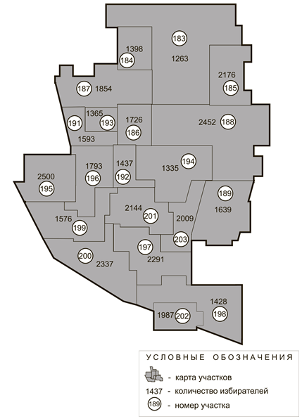
Схема 3. Расположение избирательных участков
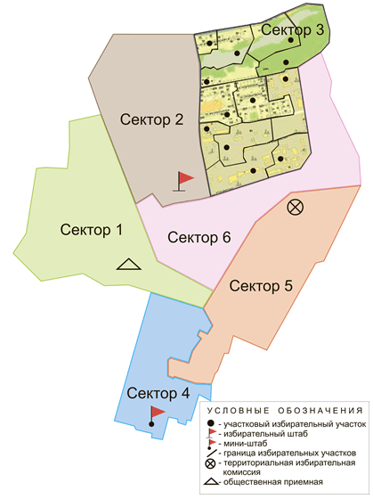
Схема 4. Карта округа
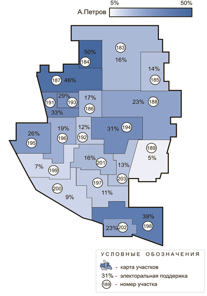
Схема 5. Карта электоральной поддержки
4. ИЗБИРАТЕЛЬНАЯ КАМПАНИЯ ⇑
Второй этап сложный и трудоемкий, связанный с включением значительного количества людей, ресурсов, оборотов и объемов. Некоторые действия могут быть начаты задолго до объявления официальной даты выборов и регистрации кандидата. На этом этапе кампании необходимо создать результат, то есть получить достаточную для победы поддержку избирателей округа.
На данном этапе нужно сделать следующее.
— Сформировать совокупную организацию, которая будет способна провести выборы на округе.
— Развернуть на всем округе полевые структуры.
— Подготовить весь цикл агитации, определиться с образом кандидата и предвыборной программой для округа.
— Осуществить избирательные программы и реализовать тип кампании.
— В ходе завершающего социологического исследования оценить предварительный результат работы на округе.
— Кроме указанных основных действий, необходимо подготовить членов комиссии, провести регистрационные действия.
— Организовать противодействие возможному черному пиару и административному ресурсу.
В случае когда предварительно не существует минимальная структура, «заход» на округ возможен только либо с нуля (а для проведения мажоритарных выборов, где побеждает лучший, это заведомо проигрыш), либо с привлечением уже подготовленных специалистов, но в таком случае вопрос привязки к избирателям округа остается открытым.
4.1. Понятие «избирательный штаб»: общие замечания ⇑
Рассмотрим существующие понятийные коллизии. В литературе [31, 112] присутствует неоднозначность понимания понятия «избирательный штаб». Термин «штаб» взят из военной науки, где он означает «совокупный орган управления войсками». Оценивая взаимозависимости понятий «штаб» и «управление», можно согласиться с тем, что одна из функций избирательного штаба — это управление избирательными процессами в рамках существующих политических выборов.
Если оценивать различные представления и взгляды на категорию «избирательный штаб», то можно предположить, что, например, обыватель, произнося понятие «избирательный штаб», представляет себе некий офис, в котором проходят определенные действия, сидят люди и чем-то занимаются в рамках такого процесса, как избирательная кампания — иногда это недалеко от истины. Специалисты разных направлений, исходя из своего опыта, также представляют себе под понятием «избирательный штаб» различные вещи. Те, кто сопровождал действия всеукраинских партийных структур на территориях различного масштаба, считают, что избирательный штаб — это структура по организации работы комиссий и контролю результатов кампании в день голосования. Те, кто видел выборы через призму полевых кампаний, считают штабом совокупную полевую структуру с узлами управления в неких офисах. Те, кто принимал участие в агитационных кампаниях всеукраинского или местного масштаба, считают, что штаб — это сумма специалистов по политической рекламе и PR со всеми вытекающими «последствиями»: решениями, действиями, акциями. Существуют специалисты, которые видят штаб через призму победы. Некоторые политтехнологи верхнего звена видят избирательный штаб через призму понятия «политический проект». Любой из указанных типов оценки понятия «избирательный штаб» имеет право на жизнь и является действительным в зависимости от уровня участия, опыта, вида необходимой кампании, желаемого результата, а также меры вовлеченности.
Попытаемся уйти от узкоспециализированного понятия «избирательный штаб». Будем использовать такое словосочетание, как «совокупная избирательная организация», представляя себе, что это и штаб в узком значении, и различные специалисты, подразделения, органы, вещественные и информационные составляющие и т. д. Итак, совокупная избирательная организация — это инструмент воздействия на избирателя, перемычка между кандидатом и избирателем. Оценивая такое воздействие, такую организацию (схема 6) , необходимо разделить на следующие части: 1) проектную группу (агитационная кампания), 2) полевую организацию, 3) дополнительные структуры. Причем, оценивая «типы»[31] кампаний, нужно помнить о том, что иногда победа на выборах не связана ни с полевой, ни с агитационной работой, и дополнительные структуры при некоторых обстоятельствах могут стать основными.
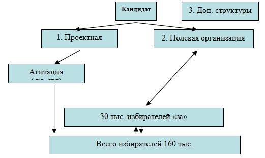
Схема 6. Общая структура «организации взаимодействия с избирателем округа»
Достаточно условно оценим формы труда, которые возникают в такой организации во время кампании:
— Творческая и аналитическая. Особенности — ненормированный рабочий день, на первоначальном этапе невозможность определить стоимость, результат и скорость создания «продукта».
— Организационно-управленческая — управленцы и руководители всех звеньев. Особенности — это нормированный рабочий день, труд оценивают исходя из эффективности работы всей организации по произведенному ею «продукту».
— Производственная — создание конечного «продукта» (в здоровой организации подобной деятельностью занимаются 90% и более процентов персонала). Особенностями являются: плановость, нормированность, количественная и качественная оценка произведенного «продукта» и проделанной работы.
— Работа по учету — все виды учета и сбора статистической информации, что не является производящим трудом во всех отношениях и не включается в производственные затраты (бухгалтерия) — при определении затрат включается в убытки (пассив). Определить необходимое количество статистов невозможно. Существует распространенная ошибка — когда между статистами и управленцами ставится знак равенства. Причем неконтролируемое увеличение штата статистов приводит к гибели любой организации.
Избирательный штаб или отдел статистики? Результат работы (продукт) избирательного штаба — это конечный результат выборов или количество голосов «за». Во многих случаях избирательный штаб является отделом учета. В таком штабе его структура на 99% не имеет отношения к «производственной» деятельности. При этом в таких штабах даже статистический учет не налажен в полной мере.
Что нужно сделать для того, чтобы штаб занялся творческой, аналитической, организационно-управленческой и производственной работой? Посвящая статистическим изысканиям не более 1% усилий, общими соображениями можно назвать следующее.
— Необходимо пересмотреть концепцию взаимоотношений «штаб – избиратель», то есть определить тип кампании и начать работать с избирателем, а не с бумагами.
— Наладить документооборот и провести окончательную инвентаризацию, кодификации и классификацию существующего документального материала.
— Максимально сократить количество ненужной информации и отчетов.
— Отменить практику распределения ответственных за территории (статистов — сборщиков ненужной информации).
— Пересмотреть структуру штаба и создать условия для затрат на статистику не более 1% труда.
Рассмотрим первоначальные технические действия по формированию избирательного штаба.
— Назначение ответственного(ых) по направлениям.
— Определение места и аренда помещения(й).
— Подбор основного персонала.
— Обеспечение техникой, транспортом, связью.
Определим основные материальные средства, без которых невозможно начать работу избирательного штаба.
— Помещение: общий офис или несколько независимых помещений.
— Оргтехника и оборудование: телефоны, компьютеры, принтеры, сканер, ксерокс, ризограф, видеокамера, фотоаппараты, диктофоны, калькуляторы, канцтовары, сейф, мебель, посуда и т. д.
— Транспорт: легковые и грузовые автомашины — в зависимости от масштаба и типа кампании.
4.2. Структура совокупной организации ⇑
Структура избирательной организации уникальна и «рисуется» под каждую конкретную избирательную кампанию, исходя из ее специфики. Оценивая обученность персонала и жесткость сцепки внутри структуры, можно предложить два видения избирательной организации.
— Простая структура. При неопытности, а также при необходимости, например, для того чтобы не усложнять процесс, создается простая вертикальная структура в одном помещении.
— Модульная организация. Создается структура, в которой существуют независимые блоки или модули, работающие каждый в своем направлении. Отдельные подразделения (модули) могут быть территориально разбросаны в пределах округа либо даже выведены за его границы. Подобное можно реализовать только в случае, когда наличествует профессиональная команда и в предвыборной гонке принимает участие достаточно опытный менеджер избирательной кампании. Рассмотрим структуру модульной избирательной организации (схема 7) .
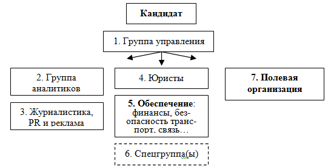
Схема 7. Модульная избирательная организация
1. Группа управления. Это коллегиальный, совещательный орган, в компетенцию которого входит стратегическое и тактическое планирование, оценка ситуации, принятие основных решений в ходе избирательной кампании. Это гибкая структура, которая зависит от типа кампании, в зависимости от обстоятельств и условий может включать различных участников. Работает в совещательной форме и позволяет оперативно руководить всем избирательным процессом. Прототипом для такой структуры служат «машины» — полутеневые бюрократические организации, сложившиеся в последней трети XIX века в США, Англии, Германии, включающие профессиональных политиков и влиятельных претендентов на политические должности, от которых стала зависеть вся внутренняя жизнь партий, реальная власть которых носит неофициальный характер [37]. В масштабах округа «группа управления» или «машина», будет иметь не такие глобальные масштабы и может включать четыре вида участников:
а) «лобби» кандидата или «группу поддержки», включая его самого;
б) профессионалов — управленцев высшего звена для данной кампании;
в) узкоспециализированных профессионалов высшего звена для данной кампании;
г) минимальный персонал.
Отличие между участниками (б) и (а), (в), (г) заключается в простых фактах, (б) являются и специалистами и лично отвечают за результат избирательной кампании. Специалисты (в) являются профессионалами в своей отрасли, но в большей степени выполняют функции консультантов, проектантов и аналитиков, которые предлагают, но не несут ответственности за свои предложения и разработки. Бывают случаи, когда по вине кандидата или его окружения ход кампании зависит от (в), а ответственность лежит на (б) — это стратегическая ошибка. Те, кто предлагает, но не отвечает, должны иметь меньший вес и в оплате, и в полномочиях, поэтому в «таких кампаниях» результат, чаще всего, отрицательный. Ответственность без мотивации, «веса» и возможности влиять на ход кампании вызывает полное пренебрежение к конечному результату со стороны тех, кто за него отвечает. Участники (а), (г) похожи на представителей категории (в) в том значении, что они тоже не несут ответственности за результат кампании: одни могут советовать, другие могут исполнять, но последнее слово за теми, кто отвечает. Встречается «молчание» и «согласие» с подобной ситуацией в группе управления среди ответственных, но такое «молчание» заканчивается очень плачевно для результатов кампании. Причем создание условий определенной «коллективной ответственности» — это тоже заведомо проигрыш.
Ошибки в работе «машины». Совещания без конца и края и никаких решений. Присутствие на совещаниях кого угодно, но только не тех, кто нужен и должен на них быть. На совещаниях не рассматриваются предложения и планы и не утверждаются решения по ним в виде распорядительных документов . Совещание только по форме напоминает таковое, а по сути является чем-то другим.
Замечания. Только вышеуказанный орган в избирательной кампании является совещательным — остальные исполняют его решения. Описанная структура в пределах «гибкости» может собираться в любом составе для решения возникшей задачи. В зависимости от типа кампании она также может иметь различный состав. Без правильно подобранной и результативно работающей группы управления можно только надеяться на положительный исход избирательной кампании.
Рассмотрим вовлекаемых в управляющее звено (б) специалистов, которые будут зависеть от типа кампании.
— Менеджер избирательной кампании. Существуют случаи, когда у кандидата нет подготовленной команды. Сформировать ее в краткие сроки и уберечь себя от всех предполагаемых неприятностей, связанных с нестыковкой разных людей, невозможно. Для этого необходим подготовленный и опытный менеджер избирательной кампании, который видит выборы в целом, может организовать работу несвязанных частей и узлов избирательного механизма, обладает «навыками решения проблем в процессе», умеет планировать и разбирается в стратегии проведения предвыборной гонки. В такой ситуации приходится импровизировать на ходу и уметь использовать различные коммерческие структуры, которые в сжатые сроки могут компенсировать различные аспекты работы штаба и его подразделений. При неопытности команды возможна различная непреднамеренная и пустая трата средств либо конфликты между центральным штабом и внешними специалистами и структурами. Менеджер спокойно решает все подобные вопросы. Основным условием для успешной работы является доверие к такому работнику со стороны кандидата и его «лобби». Руководитель кампании (менеджер) «отвечает за все. Он должен иметь постоянную связь с кандидатом, … иметь право отстранить от участия в ней любого специалиста» [70, с. 107]. Правда, интриг никогда не удастся избежать, часто окружение кандидата пытается перетянуть на себя часть властных полномочий и при этом абсолютно отрицает свою ответственность за конечный результат.
Партнерский статус политического консультанта отражает его личную заинтересованность в достижении конечной цели — победе на выборах. В то же время это высококлассный специалист, разбирающийся в политике, социально-психологических технологиях ведения политической борьбы, творчески одаренный, надежный и увлеченный своим делом; это человек, умеющий в избирательной кампании делать все [10, с. 9].
— Начальник избирательного штаба необходим, когда общее руководство процессами осуществляет непосредственно сам кандидат и к тому же уже существует сложившаяся команда. Тогда вместо независимого менеджера избирательной кампании основными процессами руководит начальник штаба, который обладает функциями менеджера, но с меньшей долей ответственности и полномочиями.
— Руководитель полевой организации участвует в выборах, когда на округе осуществляется полевая кампания. При этом иногда это одновременно и «начальник штаба», и «менеджер избирательной кампании».
— Руководитель группы «журналистики, PR и рекламы». Основными задачами такого руководителя являются: разработка и осуществление агитационной кампании на округе — это позиционирование кандидата; выбор целевой аудитории; создание всей политической рекламы; подготовка предвыборных статей, выступлений, роликов; подготовка и организация публичных выступлений кандидата; «пиар-сопровождение деятельности политического игрока — составление пресс-релизов, проведение пресс-конференций и организация медиатуров» [147, с. 48]; покупка рекламного времени и размещение рекламы в определенные часы для более эффективного влияния на приоритетные целевые аудитории на ТВ и радио; приобретение внешних рекламных площадей и т. д. В конечном итоге — это выведение кандидата на первое место в рейтинговой таблице электоральных предпочтений. И только в случае когда кандидат на округе приобретет статус единственного кандидата, деятельность данного специалиста можно считать удовлетворительной. В случае когда выбран агитационный тип кампании, данный специалист может также быть и начальником штаба или менеджером кампании.
в) Узкоспециализированные профессионалы высшего звена для данной кампании. Среди таких участников кампании, которые должны входить в группу управления, нужно отдельно выделить несколько категорий специалистов. Они могут привлекаться со стороны или быть исполнителями в различных структурах.
— Политический консультант, технолог, аналитик, социолог — это узкоспециализированные специалисты, которые глубоко разбираются в конкретном вопросе избирательной кампании.
— Консультант по связям с общественностью и медиаконсультант . Консультант по связям с общественностью предлагает методику внедрения в общественное сознание идей, используя для этого современные средства связи и групповую структуру общества [12, с. 33–34]. Нужно помнить, что консультант по связям с общественностью — это не пропагандист [12, с. 39]. Медиаконсультант глубоко разбирается в существующих СМИ и способах работы с ними. Он может полностью обеспечить все неформальные и формальные связи с существующим журналистским лобби в округе и за его пределами, а также разработать и предложить программу успешной политической рекламы во время выборов.
Кроме указанных выше, при особом типе[32] кампании могут привлекаться и другие узкоотраслевые специалисты.
г) Оценим минимальный персонал «машины»:
— Референт кандидата — фактически секретарь, но с более широкими обязанностями. Такой участник отвечает за график рабочего дня кандидата и техническую составляющую работы органа управления. Для обеспечения работы референта может быть выделен помощник. Нужно пресекать всевозможные попытки со стороны секретаря влиять на содержательную работу группы управления. Референт — это только технический работник, он не определят вектор избирательной кампании.
— Приглашаемые на совещания внутренние и внешние специалисты. Это могут быть юристы, аналитики, социологи, журналисты и т. д.
2. Группа аналитиков и социологов должна позволить: получить полную информацию об округе и о настроениях избирателей; о существующих кандидатах; оценивать реальную работу организации; знать оперативные рейтинги участников, что позволит построить успешную кампанию. Определим минимальный состав: руководитель, аналитик, социолог. Может включать и дополнительных участников, например, персонал для обзванивания и проведения опросов.
3. Группа журналистики, PR и рекламы , для которой основной задачей является проведение эффективной агитационной кампании на округе. Предложим схему 8 , основываясь на предложении М. А. Блюма [14], а также оценивая некоторые положения четырех ступеней стратегии: планирование, разработка, внедрение, оценка, а затем новый виток.
Для заполнения ячеек может быть использован максимум или минимум персонала — в зависимости от типа кампании. Связь и взаимоотношения в схеме 8 не всегда сверху вниз, на этом поле могут быть какие угодно движения, например, встреча в округе – видеоролик – размещение на ТВ — подобное и позволяет строить гибкую схему работы агитационной структуры. Нужно помнить, что схема 8 ничего не говорит о внутренней логике самой агитационной кампании и об ее результативности. Можно собрать различных профессионалов, потратить значительные средства для освещения фигуры кандидата в СМИ и получить на выходе отрицательный результат.
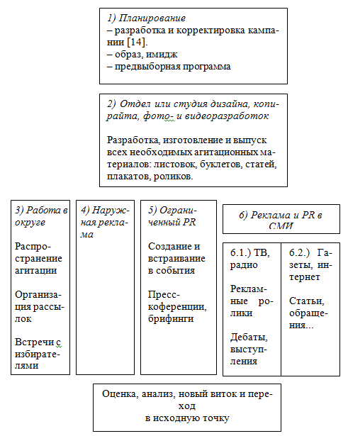
Схема 8. Агитация в округе
4. Юристы или правовое сопровождение кампании — это подготовка официальной документации, отношения с территориальной и нижестоящими избирательными комиссиями, регистрация кандидата и т. д.
5. Обеспечение — это финансы, безопасность, транспорт, связь. Для решения таких задач могут быть выделены отдельные группы либо создана общая структура, или же подобные вопросы могут решаться в рамках уже существующих подразделений — без придания им отдельного статуса. Например, в рамках кампании может существовать финансовый директор, или подобные функции может осуществлять сам кандидат или менеджер кампании и т. д. То же самое касается транспорта, безопасности и т. д. — все зависит от возможностей кандидата и «жесткости» происходящих выборов.
6. Спецгруппа(ы) создается для решения особых задач во время избирательной кампании. Основная черта таких подразделений — это мобильность и нестандартность. Они могут включать различных специалистов с разным уровнем подготовки и разнообразной формой причастности к процессу выборов на округе. Подобные структуры могут создаваться на ограниченный срок для решения какой-либо задачи и включать участников из других подразделений. Рассмотрим следующие.
— Группы обеспечения особых видов безопасности.
— Группы противодействия админресурсу.
— Группы для реакции на черный пиар.
— Группы противодействия фальсификации свободного и честного волеизъявления граждан.
Такие структуры при особом типе[33] кампании могут быть ключевыми и осуществлять свою работу на постоянной основе.
7. Полевая организация обеспечивает работу с избирателями на территории округа, что включает различные избирательные программы и действия, такие как распространение агитационной продукции от двери к двери и т. д.
Связь избирательной организации и типа кампании. Каждую из выше указанных структур при необходимости, в зависимости от типа кампании нужно делать основной. Избирательная кампания не может быть разносторонней, надо обязательно выделить вектор и ведущее звено, которое даст результат на выборах. При выборе такого звена ему выделяется главенствующая роль во всех процессах. В виде замечания нужно указать на то, что при необходимости на второстепенных направлениях, в рамках конкретной кампании может существовать не полноценная группа, а только отдельный специалист. Кроме того, иногда отдельный профессионал может осуществлять или курировать несколько направлений.
Замечания, проблемы и вопросы.
Общественная приемная. В литературе [31, 70, 80, 112] существует иллюзия относительно эффективности такой структуры, как общественная приемная. На самом деле в выборах общественная приемная не играет никакой роли. Основная функция общественной приемной — это осуществление взаимосвязи между кандидатом и избирателями. Дополнительные функции приемной — это оценка просьб и жалоб, бесплатная юридическая консультация, прием заявлений и предложений и т. д. На практике возникает другая картина, всегда на округе существует 0,5% граждан, назовем их ходоки, которые посещают все действующие общественные приемные и создают ажиотаж. При этом чаще всего эти граждане голосуют за какого-либо радикального кандидата и политическую силу. Причем в основном «действительно нуждающиеся», или «молчаливое большинство» никуда не ходят, но их голоса имеют основное значение. Кроме ходоков, общественные приемные служат объектом наблюдения со стороны «независимых» журналистов и различных проходимцев. Когда у претендента не существует полевой организации, возникает желание создать ее на базе сети общественных приемных. Очень просто можно посчитать результат работы такой полевой структуры. Например, 10 общественных приемных получили связь с 0,5% ходоков, а через них с 0% живых избирателей, к тому же эти ходоки также устраиваются помогать и всем остальным кандидатам. Так что эффективность общественных приемных в основном равна нулю. Существует несколько вариантов эффективного использования общественных приемных. Это может быть имитация избирательного процесса, запасное (промежуточное) помещение либо при достаточной опытности начальника штаба источник отсеивания ходоков и выискивания среди них очень небольшого процента тех, кто позволит «прорваться» к большинству избирателей округа.
Взаимодействие. В процессе кампании возникает проблема взаимодействия между отдельными работниками штаба и различными подразделениями. Ситуация, когда каждый автономно делает то, что не связано с общей стратегией. Подобную проблему можно решить двумя способами.
— Проводить каждодневные собрания и встречи со всем коллективом либо отделами. Ставить в известность всю организацию и каждого участника о планах и действиях, что и делается в большинстве случаев. Подобное вызывает следующие проблемы: утечку информации, бессмысленную трату времени (по два часа в день) на «лекции», что надо делать и т. д. Часто это превращается в цикл нравоучений, диспутов, споров, нытья и т. д. К тому же оно также коренится в самом характере некоторых кандидатов или их кураторов, которые осуществляют функцию надзора.
— Должна быть структура из двух-трех координаторов (группа управления), которые прекрасно понимают друг друга и могут спокойно, без лишних прений подталкивать процесс и всю организацию к нужной цели, выдавая каждому только его часть задания и требуя его выполнения. При такой системе, а она встречается очень редко, необходим высокий профессионализм координаторов, их личная мотивация, а также высокое доверие к ним со стороны кандидата. Таких специалистов часто в литературе называют менеджером избирательной кампании, начальником штаба, куратором направления. Название не меняет сути.
Четкая вертикаль подчинения, то есть запрет и пресечение различных способов «прыгания через голову» в организации. Иногда кажется, что легче восстановить контроль или улучшить работу через прямое вмешательство в деятельность отдельного звена. Но подобное в перспективе приводит к следующему: участник, получивший задание не от своего непосредственного руководителя, а от вышестоящего, в следующий раз не будет выполнять свои обязанности. В его глазах падает авторитет его шефа. Если такой характер взаимоотношений внутри штаба является не исключением, а правилом, то это приводит к хаосу и неэффективной работе всей организации.
Иерархия как контроль . Лучший способ контроля между подразделениями — это иерархия. Определив понятную вертикаль подчинения, можно, подавая сигналы в точке входа (управления), руководить структурами в целом и каждым отдельным участником. Когда отсутствует иерархия, возникает непонимание между верхними и нижними звеньями, таким образом эффективность работы падает. Для восстановления управляемости приходится использовать различные методы воздействия: вмешиваться в обстановку через голову руководства подразделений — это снова же вызывает путаницу и нестабильность.
Доверие — одна из основных ключевых проблем, которая возникает в работе коллектива, сформированного на небольшой срок. Сложно завоевать доверие друг у друга и начальствующим, и подчиненным. В каждом конкретном случае необходимо найти решение этого вопроса.
Гибкость. Нужно искать и находить способы повышения взаимодействия между подразделениями. Гибкость позволяет экономить ресурсы и находить альтернативные решения.
Эволюция организации — это процесс стимуляции внутреннего развития каждого участника, подразделения и организации в целом. Достаточно сложно «организовать эволюцию» в столь краткие сроки, но те, кто умеет осуществить данный принцип на практике, могут на незначительной дистанции обойти всех конкурентов. Для «эволюции» нужно использовать и внутренние ресурсы участников, их знания и опыт, и привлекаемых извне людей.
Точное определение организационных единиц позволяет решить проблему конфликта интересов.
Специализация и разделение обязанностей, или процесс ограничения функций и обязанностей участников, что решает проблемы споров вокруг компетенции работников.
Много начальников штаба — ситуация, при которой на одном и том же участке работы возникает борьба между руководителями. Чаще всего это мудрая политика некоторых кандидатов — разделяй и властвуй, на самом деле это неправильно понятый принцип, который должен осуществляться в организациях конкурентов, точнее, не просто «разделяй», а постоянный конфликт внутри коллективов оппонентов. В своей структуре не должно быть никакой внутренней конкуренции, особенно в рамках отдельного подразделения.
Интриганство парализует работу любой организации. Интриганство — это когда вместо осуществления задач участники организации занимаются выяснением отношений между собой. Все подобные ситуации нужно решать в корне — либо удаляя интриганов, либо в самом начале пресекая подобное.
Кумовство — это с итуация внутри коллектива или организации, при которой каким-либо участникам или звеньям делегируются особые преимущества, что вызывает зависть, то есть возникает низкая результативность работы. Поэтому все участники процесса должны быть равны. Особое положение имеют только те, кто эффективно и качественно выполняет свою работу.
Незаинтересованность результатами деятельности — это ситуация, когда работающие на выборах лично не заинтересованы ни в качестве свое работы (в произведенном «продукте»), ни в конечном результате. Все это вызывает вялотекущую деградацию организации в целом. Нужно найти способ заинтересовать работников. Для этого можно использовать: материальную стимуляцию или такой стимул, как перспектива, но следует помнить — обещания нужно выполнять, либо честно говорить, когда обещание выполнить невозможно. Случается, что кандидаты или руководители звеньев пользуются методами стимуляции, взятыми из сетевого маркетинга. По разным причинам на выборах это вызывает обратный эффект, например — тотальную растрату средств во всех структурах.
«Почти» начальник штаба — это недоверие со стороны кандидата или его окружения к исполнителю. Это приводит к тому, что менеджер избирательной кампании или любой другой руководитель (его действия и решения) встречает в «верхах» внутреннее сопротивление. Подобная ситуация постепенно начинает ощущаться всеми участниками совокупной организации и вызывает общее неподчинение, разбалансировку, незаинтересованность и нежелание выполнять работу эффективно во всех структурах.
Создание штаба на основании местной партийной организации. Иногда для удешевления процесса в округе для создания избирательной организации находит применение «контур» существовавшей ранее партийной структуры всеукраинской партии. Все это может быть осуществлено, но только с некоторой корреляцией внутренней цели существовавшей структуры. В основном подразделения всеукраинской партии не предназначены для организации мажоритарной избирательной кампании. В их задачи входит контроль и защита уже созданного кем-то ранее результата , но концепция мажоритарной кампании имеет совершенно иную цель — это безоговорочная и полная победа.
«Совещания каждое утро». Когда не присутствует доверие к руководителям подразделений, начальник штаба, кандидат или другое руководящее лицо, для того чтобы установить контроль, каждое утро или вечером в конце рабочего дня проводит общее совещание, на котором рассматриваются все частные (нужные и ненужные) вопросы, при этом обучаются руководители подразделений. В результате внутри всей организации падает доверие ко всему происходящему. В последующем можно забыть об иерархии, доверии, эффективности и т. д.
4.3. Формирование и обучение полевой структуры ⇑
Работа полевой организации — это вовлечение в избирательный процесс массы избирателей (жителей округа) и профессионального ядра управления, на которых возлагаются вопросы по организации эффективной полевой кампании на округе.
В большинстве случаев политические технологи и политические консультанты предоставляют модель проведения выборов, в которой исключается взаимосвязь кандидат – штаб – полевая организация – избиратель округа. Подобное имеет смысл, когда речь идет о волеизъявлениях верхних уровней, то есть это выборы Президента Украины или избрание в ВР Украины по пропорциональным спискам всеукраинских партий. Когда осуществляется избирательное соревнование нижнего уровня, в котором избиратель вступает в прямой контакт с кандидатом, это является упущением, потому что на таких выборах:
— фактически исключается либо ретушируется тотальное применение СМИ;
— группа, входящая в «феод» кандидата, условно 100 человек, что технически не позволяет организовать взаимосвязь с 30 тыс. избирателей округа.
Оценивая преимущества полевой кампании перед другими видами, можно назвать следующие:
— охват всей территории и каждого избирателя, живущего на округе;
— при таком способе работы возникает «доступность целевой аудитории, то есть технологическая возможность достучаться до нужного избирателя; имеется в виду как инструментарий, который позволит эффективно доставить нужное сообщение до адресата» [147, с. 61];
— прямая работа с теми, кто голосует на округе, позволяет нивелировать или свести на нет все затраты оппонентов на агитацию в СМИ и создать альтернативный, достаточно дешевый информационный канал связи с избирателями.
Отрицательностью является определенная затратность и трудоемкость полевой кампании, но все это в случае существования подготовленной структуры окупается. Причем себестоимость работы полевой структуры по сравнению со стоимостью агитации в СМИ достаточно низкая.
Для успешности полевой кампании нужно организовать массовую структуру; обучить участников и создать внутреннюю иерархию; для получения результата нужно найти способ заинтересовать всех агитаторов; преодолеть имитацию, недочеты и простои в работе структуры.
Пример вертикали полевой структуры (схема 9) , без подсчетов количества и качества отдельных подразделений.
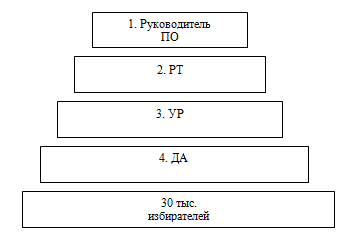
Схема 9. Структура полевой организации
Количество звеньев может быть увеличено или уменьшено в зависимости от поставленной задачи или условий работы.
Функции звеньев.
1. Руководитель полевой организации отвечает за результат и работу всей структуры на округе.
2. Руководители территорий отвечают за деятельность и результат на территории, в которую входят несколько участков (3—8 участков).
3. Участковые руководители несут ответственность за полевую работу и результат в пределах избирательного участка (1,5—3 тыс. избирателей).
4. Домовые агитаторы (агитатор сектора) отвечают за осуществление полевых программ в доме.
Может существовать дополнительное звено «агитатор сектора», которое создается тогда, когда нет необходимости закрепления агитатора за каждым отдельным домом, то есть на округе или в местности, где присутствует низкая плотность населения (частный сектор), не осуществляется полноценная полевая кампания.
Этапы формирования полевой структуры.
— До выборов — создание ядра управления: назначение руководителя полевой организации и территориальных руководителей; разработка всех планов и схем работы на округе; поиск кандидатур участковых руководителей.
— В первый месяц избирательной кампании — утверждение участковых руководителей, поиск домовых агитаторов.
— Последние два месяца — утверждение домовых агитаторов; обучение всей организации; осуществление полевых программ на округе и получение и защита результата в день голосования.
Рассмотрим полевые работы и программы, возможные для осуществления на округе:
— «от двери к двери» — обходы квартир избирателей (раздача агитационных материалов, устная агитация, поиск симпатизирующих и др.);
— распространение агитационных материалов на округе;
— расклейка листовок и плакатов на территории округа, участка и дома;
— организационно-агитационная поддержка кандидата во время встреч на округе с избирателями;
— организационно-агитационная поддержка во время митингов и массовых акций;
— телефонный контроль работы полевой организации;
— обеспечение интересов кандидата в день выборов (наблюдение за голосованием, обеспечение явки избирателей и др.) [112].
Расчет численности полевой организации. Для определения численности агитаторов нужно ответить на несколько вопросов: тип кампании кандидата, тип кампании конкурентов, необходимый (ожидаемый) результат от работы полевой организации; планируемый объем полевой работы. Ответы на эти вопросы позволят понять место в структуре избирательной кампании полевой работы, что даст возможность определить достаточную плотность полевых структур. На численность также влияет продолжительность предвыборной гонки. Если до выборов не проведены подготовительные работы, то можно только надеяться на создание в округе масштабной организации, скорее всего, схемы и планы останутся только на бумаге и не будут реализованы на практике.
Основные направления поиска агитаторов:
— Осуществление полевой программы «от двери к двери», в результате выявление нужного контингента, а затем отдельное собеседование с каждым и вербовка в случае соответствия кандидата.
— «Знакомые знакомых» участников избирательной кампании.
— Студенты, но только в том случае, когда округ включает голосующие на данных выборах крупные вузовские общежития. Заметим, что это самый ненадежный вид агитаторов [112].
По возможности, необходимо отказаться от следующих сомнительных, бесполезных или даже отрицательных источников формирования полевой структуры, которые предлагает В. В. Полуэктов [112]. Это местная околополитическая тусовка (активисты партийных организаций разной ориентации); структуры социальной защиты населения (вербовка агитаторов из числа их штатных и внештатных сотрудников, а также выход через этих лиц на пенсионеров); отделения связи (вербовка из числа почтальонов); биржи труда; вербовка агитаторов через СМИ (объявления в газетах, бегущая строка на телевидении и пр.). Специалисты обычно называют еще такие источники пополнения агитаторских кадров, как инвалидские, ветеранские и женские организации, сообщества чернобыльцев, афганцев и т. п. [112]. Кроме указанных бесполезных агитаторов, надо также постараться не иметь дело с работниками ЖКХ.
В категорию особо бесполезных агитаторов необходимо отнести студенческих и полевых бригадиров псевдоорговиков с богатым опытом взаимодействия со всеми действующими и существовавшими ранее на округе политическими и общественными силами. Такие подготовленные структуры позволяют в сжатые сроки закрыть все бреши на округе, но подобного рода бригадиров не интересует конечный результат кампании. Их агитаторы, чаще всего стандартные «мертвые и полумертвые души», которые годятся только для того, чтобы стоять на митингах. На территории, где будут работать структуры «псевдополевиков», будет осуществляться полноценная имитация полевой деятельности со всеми вытекающими последствиями. Подобные структуры можно использовать только для экстренной организации массовок, митингов и т. д.
В большинстве округов существует определенный пласт бабушек-агитаторов, которые одновременно, «под всеми знаменами» принимают участие во всех полевых кампаниях. Так как они работают у всех, и всем жильцам на территории известна их разносторонняя политическая «благонадежность» и «ориентация», результат их деятельности будет соответствующий.
Большой опыт в кампании «от двери к двери» имеют различные секты [70, с. 150]. Поэтому часто на выборах местного значения они выступают в качестве групп, способных провести выигрышную полевую кампанию. Эффективность подобных структур также невысокая. Такие агитаторы не имеют никаких политических предпочтений, для них участие — это только заработок, при этом агитация с позиций определенной секты, чаще всего, будет вызывать у избирателя отрицательную реакцию. Кроме того, возможны непредсказуемые конфликты и неурядицы как во взаимоотношениях с избирателями, так и в отношениях с подобной структурой. К тому же такие коллективы в виду своей организационной силы также ощущают и свою полную моральную и другую безнаказанность в отношении к результату своей работы.
Все вышеуказанные структуры агитаторов могут чувствовать себя обиженными из-за того, что на территории ведется работа без их участия и, соответственно, могут в каком-то смысле работать против проводимой полевой кампании. Всегда нужно продумывать подобные ситуации и искать их решение. Поэтому никогда заранее не нужно связываться с таким группами и что-либо им обещать. Лучше всего имитировать ограниченность и минимализм своей кампании и не показывать ни соперникам, ни подобным структурам истинный масштаб работы.
Кроме различных псевдополевых структур, на практике иногда встречаются действующие полевые организации, которые позволяют оперативно и эффективно провести выигрышную полевую кампанию. Возможны ситуации, когда кандидат или начальник полевого направления доверяет и знает содержательный состав такой привлекаемой организации. В любом случае для ее привлечения должна возникнуть форма ответственности и заинтересованность в результате кампании. С такой структурой лучше работать как с цельным звеном через того, кто ее контролирует, ставя задачи и требуя результат. Если присутствуют определенные явные и неявные формы недоверия к привлекаемой полевой организации либо со стороны нанимателя возникают неправомерные попытки особого контроля или выдергивания людей, возможен отрицательный исход полевой кампании на всем округе.
Для успешной полевой кампании нужен костяк опытных полевых работников. Но «низы» полевой структуры лучше формировать «на местности» из определенной категории жильцов участков и домов округа. Для такой работы лучше всего подходят женщины зрелого возраста. Для завершения приема на работу полевого агитатора необходима многоступенчатая вербовка через вертикаль. Причем в малоформатных кампаниях (до 50–60 тыс. избирателей) с этой задачей справится сам начальник штаба [112]. На округе, который включает 160 тыс. избирателей, зачисление на работу и собеседование должны проводить опытные территориальные руководители, которым лично доверяет руководитель полевой организации, с обязательным анкетированием. В случае возникновения вопросов к кандидатам в «полевики» возможно повторное собеседование.
Подготовка кадров полевой структуры. Проблема большинства действующих в Украине политических организаций — неподготовленность персонала. Решить это позволяют тренинги, на которых решаются следующие вопросы:
— обучение и подготовка;
— ротация и отсеивание кадров;
— идеологическая накачка, настрой и мотивация всех участников.
Необходимо снабдить оперативные полевые группы документальным материалом:
— Подробными картами микрорайонов.
— Инструкциями: как обходить квартиры; знакомство с территорией; выявление нужных категорий избирателей; распространение агитации; работа с симпатизирующими жителями; противодействие чужой агитации; наблюдение за законностью; работа в день голосования; осуществление полевых программ.
— Отдельно необходимо выделить инструкцию, которая освещает проблему провокаций и насилия со стороны агрессивно настроенных избирателей или полевых структур конкурентов. Важно ни в коем случае не отвечать на провокации и быть максимально вежливым. Об инциденте агитатор должен немедленно сообщить по вертикали в штаб, где будут приняты меры. Итак, «необходимо полностью устранить проблемы возможного неэтического или незаконного взаимоотношения» [70, с. 154].
Замечания.
Мечта о бесплатных агитаторах и полевой организации. Советчики или технологи, которые рассказывают о бесплатных группах поддержки, работают бесплатно? В любом случае окружение кандидата если и не сегодня, то завтра ожидает получить выгоду от избрания своего кандидата, поэтому о его материальной беспристрастности говорить не приходится. Действительно, существуют движения и политические проекты, в которых участники материально не заинтересованы, но для этого нужен либо какой-то: общий интерес, великая идея, проект, ради которых люди будут готовы работать, не ожидая какой-то выгоды. «По понятным причинам только у коммунистов есть актив добровольцев-энтузиастов. Да и тот обслуживает преимущественно партийный список. Даже на своих мажоритарщиков коммунистический актив на безвозмездной основе работать не любит» [112]. Оценивая реалии Украины, кроме коммунистов, в предыдущее суждение можно добавить и националистов.
В 99,9% случаев кандидат и его группа поддержки работают не за идею, а ради конкретной личной цели, например, победить на выборах в данном округе и т. д. Соответственно и обществу в целом, и его отдельным гражданам абсолютно не интересно то, чего хочет отдельный претендент для себя. Всех интересует всеобщее благо. В большинстве случаев кандидат не может предложить и не предлагает такого блага либо доверие к предложению в обществе отсутствует, поэтому о бесплатных агитаторах следует забыть.
Зачем же тогда агитаторов называют добровольцами, активистами, волонтерами? «Тем самым кандидаты как бы демонстрируют общественности наличие у них некоей социальной базы, а заодно пытаются убедить избирком в своей непорочности в плане расходования избирательного фонда» [112].
Иллюзия о существовании лидеров общественного мнения. В современной политической действительности нет никаких лидеров общественного мнения, в основном это фикция. Нет тех, кто может поручиться за кандидата, тех, кто может от лица претендента в народные избранники обратиться к голосующим и повлиять на их мнение в пользу поддержки того или иного кандидата. Речь идет о «знаменитых», «выдающихся» и «значимых» для жителей данного округа людях. Нужно обо всем этом забыть. Такое влияние имеет косвенное значение, а затраты на него всегда превышают эффективность.
Представители профессиональных групп. Политтехнологи часто для удешевления избирательной кампании предлагают определенный план создания полевой организации, а именно — пытаются опереться на присутствующие в округе профессиональные или общественные коллективы, а также их представителей. Подобное также является иллюзией. Через время, точнее, после проигрыша, станет понятна сущность подобного. Нет у наших общественников никакого влияния на избирательные предпочтения участников своей организации. Директор (руководитель) завода, магазина, госучреждения, управления, администрации, школы, детского садика, больницы и так далее также не может повлиять на настроения голосующих. Во многих случаях это приносит, наоборот, отрицательный эффект. Такое виляние возможно, но только косвенным образом, через предоставление различной помощи на проведение самой избирательной кампании. Часто «представители» требуют и получают больше, чем они на самом деле могут дать. При этом более эффективным является прямое обращение к избирателю, минуя «общественников».
«Военнопленные». Особая категория полевых работников, куда входят почти все — бесплатные или условнобесплатные помощники. Это студенты, госслужащие, работники ЖКХ, частных структур, то есть все те, кто участвует исходя из какой-либо зависимости от кандидата (прямой или косвенной через поддерживающих его лиц), или это те, кто пришел на пару часов «отбыть наказание». Интересно наблюдать на практике, как работники ЖКХ при раздаче «макулатуры» по квартирам за своего кандидата шепотом говорят, что надо голосовать за другого. К такой категории также относятся работники избирательного штаба, которых наняли для чего-то одного, а затем для удешевления процесса начальство направляет их на другое. «Военнопленных» легко определить по выражению лица и общему впечатлению от их физической позы. Эффективность такой категории равна нулю, а в большинстве случаев эта полевая структура приносит вред или даже минус. Мнимая экономия приводит к отрицательному результату или даже к полному провалу кампании. Подобная «эффективность» может выражаться по-разному. Самый безобидный пример — сваленная где-нибудь на территории агитационная макулатура. Но худший результат приносит другое. Избиратель достаточно прозорлив, наблюдая печать безысходности на лицах «военнопленных» — он никогда не будет голосовать за предлагаемого ему кандидата, наоборот, будет делать обратное. Любой человек, используя самые первоначальные познания в арифметике, может прикинуть, сколько жителей пройдет в день возле пикета или палатки, в которой стоят «военнопленные», и при этом в среднем сложить, сколько в день сагитировано тех, кто ни в коем случае не будет голосовать за предлагаемого кандидата. Это касается и обхода квартир, и всех остальных полевых мероприятий.
Почему заезжие технологи не любят заниматься полевой кампанией? В основном это связано с трудоемкостью такой работы и невозможностью получить неучтенную прибыль. Как указывает В. В. Полуэктов, «политтехнолог лукавит. Он не любит и не берется за кампанию «от двери к двери» не потому, что агитаторы себя изжили, а потому, что дело это довольно трудоемкое и технологически хлопотное. И доступное для аудита клиента [112].
Нельзя путать штаб и полевую структуру. Кандидат может раздуть штаб, но он может не иметь никакой связи с избирателем. Эффективность такого штаба приближается к «минус бесконечности». Изучив предварительно штаб, полевую организацию и их составляющие, можно предложить определенные аналитические выводы или варианты соотношений:
— Слабый штаб и слабая полевая организация.
— Сильная полевая структура и слабый штаб.
— Сильный штаб и слабая организация.
— Сильный штаб и сильная полевая структура.
Предпочтительнее иметь слабый штаб, нежели слабую полевую организацию. Штаб можно усилить в течение месяца, если в «ядре» есть несколько специалистов, а для усиления полевой организации нужны месяцы и годы.
Противоречие между штабом и полевой структурой. Обязательно нужно убрать или перевести в другой формат присутствующую неприязнь между офисными работниками и полевой структурой. Большинство тех, кто работает в «полях», с неприязнью относятся к «штабникам». Полевая структура подозревает, что штабисты получают высокие оклады и «сильно не напрягаются», ничем не рискуют, а после выборов им достанется львиная доля плодов возможной победы, и наоборот — поражение будет списано на низы. В подобных рассуждениях присутствует определенная доля правды.
Существует несколько решений проблемы противостояния, каждое имеет «плюсы» и «минусы». Одно из них — обязательно скрыть от «полевиков» те структуры, с которыми им не нужно иметь дело. К ним относятся все те, кто не имеет прямого отношения к ведению полевых работ, то есть планируют, общаются со СМИ и так далее. Нужно создать следующую мировоззренческую установку в мышлении агитаторов: кандидат – начальник полевой структуры – агитаторы всех уровней. Всех остальных штабистов в такой схеме быть не должно. Подобное формируется на прямых собраниях и встречах с полевой организацией. Не должно быть противоречия: кандидат – полевая структура. Агитационная макулатура и остальное должно поступать напрямую к тем, кто руководит полевой организацией. Обязательно в мышлении полевой команды должно созреть представление о том, что выборы — это только их задача и заслуга, а необходимость пиарщиков, аналитиков, юристов находится под большим вопросом. Подобное не должно быть спектаклем — работу нужно построить именно таким образом, если агитаторы разоблачат игру — будет только хуже.
Просачивание мелкими группами на территорию. Разворачивание полевой структуры должно проходить в виде «просачивания на территорию мелкими группами». Те, кто впервые участвует в полевой кампании, совершают ошибку, на территории округа открывается офис и несколько общественных приемных, затем объявляется общий набор «полевиков», после чего начинается процесс наплыва ходоков — формируется беспорядочная структура. В результате все конкуренты получают полную информацию о происходящей полевой кампании, о ее масштабах и глубине. При этом сформированная структура не выдерживает никакой критики.
Выводы.
— Любая теория не может превзойти практические навыки. Все советы и рассуждения не позволяют оценить масштабы и содержание полевой работы. Поэтому для практического осуществления полевой кампании нужно иметь опытное ядро полевых работников, способных в сжатые сроки организовать выборы на территории. Причем при неопытности организации даже различные формы стимулирования и заинтересованности в результатах работы не позволят выиграть выборы.
— Нужно помнить о преимуществах полевой кампании, любая агитация в СМИ не может нейтрализовать прямое воздействие на избирателя. Кроме того, при равных условиях на местном уровне полевая кампания сильнее, чем любая агитационная кампания.
— При просачивании на территорию округа мелкими группами работу полевой организации конкуренты не могут замерить и проверить.
4.4. Агитационная кампания на мажоритарном округе ⇑
Рассмотрим основные обстоятельства и условия, позволяющие в дальнейшем определить содержание агитационной кампании.
1. Для организации успешной агитации в округе необходимо помнить о нескольких основных схемах:
А > 0; А > Б; А > Б > В > Г…
Предложенные конструкции нужно видеть не в том формате, который предлагался ранее в разделе «Три статистических варианта состязаний на округе». Можно по-разному оценивать кандидата исходя из анализа его тех или иных ресурсов, но в информационном пространстве его положение выглядит всегда иначе. Кроме того, голосующий видит эту же схему, но только по-другому. Например, претендент (В) может обладать различными потенциальными ресурсами, но избиратель по тем или иным причинам видит на округе политический выбор в виде схемы (А > 0), в которой нет никакого кандидата (В). В любом случае цель агитационной кампании — это создание информационных условий перемещения кандидата в точку (А), что и обеспечит победу на выборах. Для «доставки» претендента в народные избранники в точку (А) все средства хороши. Любая методика, позволяющая получить подобный результат, является истинной для данной кампании.
2. Тип кандидата. Для организации выигрышной агитационной кампании нужно осознавать тип кандидата. Если претендент не обладает лидерским ресурсом и не способен осуществлять публичную деятельность, то об организации агитационной кампании с определенным уровнем сложности говорить не приходится. Кроме того, нужно также помнить, что потенциал, внутреннее состояние объекта и его существование в информационном поле, то есть его оценка избирателем, – это разные вещи.
3. Совокупный инструмент взаимодействия (схема 10) состоит из команды, которая осуществляет агитационную кампанию кандидата, его образа; различных средств доставки информации; методов работы с избирателем и т. д., то есть всего того, что опосредствованно или непосредственно воздействует на политический выбор и поведение избирателя.
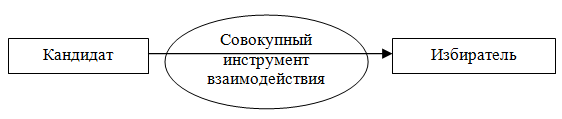
Схема 10. Совокупный инструмент взаимодействия
Оценивая различные способы воздействия, сложность и инструменты, для теоретической простоты предложим следующие три абстрактных вида агитационной кампании (схема 11) .
II) III)
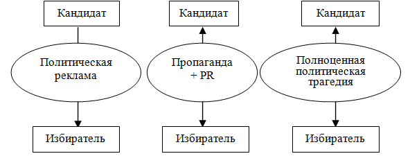
Схема 11. Три абстрактных типа агитационной кампании
Каждый вид кампании (теоретическая установка) будет зависеть от предыдущих условий, наличия профессиональной команды, типа кандидата, ситуации на округе, от рациональности самой агитационной кампании и доступа к СМИ. Каждый следующий вид — это не синтез предыдущих, а качественно-различный способ работы с избирателем, хотя схожие элементы и инструментарий присутствуют в каждом из предложенных.
I. Агитационная кампания в виде линейной политической рекламы (схема 12) — это простой и односторонний вид агитационной кампании. Реклама — это процесс информирования населения о товаре, ознакомления с ним, убеждения в необходимости его покупки [14].
В нашем случае товар — это образ кандидата и его предвыборная программа. Предлагая их, взамен нужно получить голос. Средством воздействия (убеждения) на избирателя являются различные совокупные средства: СМИ, встречи, массовые акц
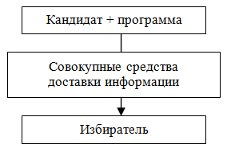
ии и т. д.
Схема 12. Линейная политическая реклама
Политическая реклама воспринимается как простая модель, с суммой линейных методов, без обратной связи. В ней работа идет только с техническими деталями. Ухищрения и маневры возможны только вокруг технических элементов — фото кандидата, текст, звучный слоган, простой и воспринимаемый дизайн, яркий логотип, правильно подобранные цвета и формы и т. д. Содержание в такой модели не требует корректировки — работаем только с внешними деталями. Кандидат в таком случае нас не интересует с точки зрения его образности или оживления. Претендент в народные избранники — это статистическая картинка (фото), текст или видеообъект. Избиратель тоже воспринимается как целостный простой объект, без анализа его сознания, установок, мотивов и т. д. Важным для рекламистов является только анализ следующего — принимает или нет избиратель предлагаемый ему «продукт». Если товар не нравится покупателю, то все усилия будут затрачены впустую [93].
Для улучшения способов рекламы продукта классик рекламы Д. Огилви предлагает следующее.
— Изучите продукт, который предполагается рекламировать. Чем больше о нем станет известно, тем больше вероятность того, что в голову придет великолепная идея, как его лучше продать.
— Выясните, какую именно рекламу конкуренты производят для аналогичных товаров или услуг и насколько она успешна. Это определит дальнейшие шаги.
— Исследуйте потребительскую среду [93].
Рассматривая плюсы такой агитационной кампании, нужно указать на существующую простоту планирования, реализацию и оценки воздействия политической рекламы на избирателя. Тем более понимая то, что избирательная кампания на округе народного депутата ВР Украины и ее агитационная составляющая будут длиться в среднем всего 75 дней. Среди минусов нужно указать на то, что часто такой вид кампании приводит к высокой узнаваемости претендента и нулевой его поддержке среди избирателей. В данном виде агитационной кампании отсутствуют инструменты для перевода формата узнаваемости в другие формы отношения к кандидату. Хотя возможны и исключения или даже уникальные ситуации, когда с помощью только средств политической рекламы удается добиться победы.
II. Агитационная кампания как динамический способ воздействия на общественное сознание (схема 13). Для понимания сущности пропаганды и PR необходимо рассмотреть следующий абзац, в котором дается точное определение того, что такое пропаганда и PR — «в ХIХ веке жители штата Северная Калифорния (США), осваивая новые жизненные пространства, выбрали себе понятный девиз: «Быть, а не казаться». В 1970 году французские манекенщицы объединились уже под лозунгом «Казаться, чтобы быть!» [27, с. 9].
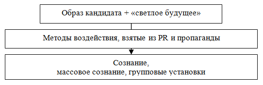
Схема 13. Динамический способ воздействия на общественное сознание
В отличие от политической рекламы в пропаганде и PR инструментом воздействия выступают не сами СМИ, а методы воздействия через них на сознание тех, кто голосует. Воздействие возникает через образ — целостный информационный объект, событие, действие, которые влияют на воображение (сознание) избирателя и вызывают у него определенное отношение. В результате должна возникнуть заинтересованность, узнаваемость, поддержка, одобрение, приятие или наоборот. Объект и его копия-образ между собой несхожи. То есть в действительности может быть причина, но созидатель (пиарщик) не копирует, он творит, создавая новый объект в информационном пространстве.
В данном типе кампании избирателю предлагается не статистическая избирательная программа из 20 пунктов, а определенный динамический «образ светлого будущего» — обозримый в воображении объект, который каждый видит по-своему, согласно собственному внутреннему миру. Кандидат также теряет статичность. В сознании избирателя формирует образ претендента — и это уже не просто фотография на плакате. Для понимания такого вида кампании нужно воспринимать СМИ и другие средства, как технический инструмент, содержание которого не учитывается при воздействии на сознание. СМИ и другие средства и элементы служат, как кисточка и краски, которые позволяют художнику нарисовать в воображении (на мольберте) тех, кто будет голосовать — некие «видения». Данный тип кампании требует привлечения талантливого художника (пиарщика, пропагандиста), который в совершенстве владеет пиар-методами и техническими средствами. В таком понимании пропагандист-художник — это не рекламист, который «выстреливает» в информационную среду знанием о продукте, он не атакует сознание избирателя повторяющимся с определенной амплитудой статистическим сообщением. Такой художник создает в информационном поле образ, который в дальнейшем начинает жить самостоятельной жизнью.
Оставим за рамками обсуждения спор о «бесплатности или платности общения с информационной средой». Данная проблема на самом деле является несущественной. Все зависит от необходимого результата, отведенного времени, доступности информационной среды и коммуникационного канала и т. д.
Из описанных выше предпосылок возникает представление о пропаганде и PR как о средствах манипуляции сознанием. В действительности это не совсем так. Пропагандист рисует красочный, мимолетный, живой образ, и верить в него или нет — это прерогатива того, кто любуется картиной. Но обман это или грубая манипуляция — сознание избирателя и само вправе выбирать. Причем всегда остаются открытыми для дискуссии вопросы об «автономности сознания другого» и «о запрете вторжения в эту реальность», при этом все понимают проблему открытости сознания. Возможное ограничение может существовать в рамках традиций, норм морали, культуры или закона, но еще раз стоит заметить — закрыть можно только доступ к информационной среде, при этом «сознание всегда остается открытым». Поэтому при нахождении открытого информационного канала со стороны неэтичных субъектов возможно вторжение или даже агрессия.
Рассматривая эффективность пропаганды, нужно отметить, что чем талантливее «нарисованное», тем «реалистичнее» образ и тем живее он будет воспринят публикой.
III. Политическая трагедия (схема 14) самый сложный вид агитационной кампании, противоположный предыдущему. Снова рассмотрим суждение И. Л. Викентьева: «в ХIХ веке жители штата Северная Калифорния (США), осваивая новые жизненные пространства, выбрали себе понятный девиз: «Быть, а не казаться». В 1970 году французские манекенщицы объединились уже под лозунгом «Казаться, чтобы быть!» [27, с. 9]. Подобный тип кампании — это именно первое, то есть – это «быть, а не казаться». Или это ситуация, когда в результате реализации политической трагедии возникает действительность, причем информационная реальность — вторична. Все привлекаемые объекты и участники подлинны во всех смыслах — они действуют и творят. То есть нет никаких актеров, играющих Цезарей, тут все настоящее — и декорации, и цели. Схватка в политической трагедии разгорается вокруг истинных устремлений и идеалов. При таком типе кампании нет никакой видимости или создания картинок. Реализация полноценной политической трагедии позволяет смести со сцены все существующие «казаться». Нет надобности что-либо изображать, сценарий сам порождает события, героев и антигероев, сюжеты и сцены.
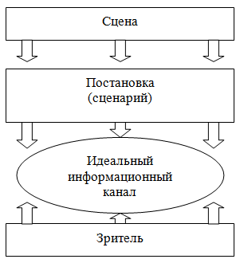
Схема 14. Политическая трагедия
Рассмотрим схему политической трагедии (схема 14) и выделим ее основные составляющие.
Сцена — это совокупная среда, которая включает: сценарий; сюжетную линию; декорации; звуковые и зрительные эффекты; эмоциональные состояния; текст; актеров; цели; мотивы и т. д.
Сценарий — это основной элемент политической трагедии, полноценное художественное произведение трагического содержания, имеющее определенную структуру и правила. Сознательно упустим уточнение данного вопроса в исследовании.
Постановка — это то, что видит зритель в виде цельного представления, не разделяя на части, замечая только сюжетную линию и основные акты, то есть это уже действительная реализация сценария.
Идеальный информационный канал нужно осмысливать как среду между зрителем и постановкой, его нужно понимать как единый объект с нулевым содержанием и сопротивлением. ИИК [34] — это абстракция, позволяющая представить себе зрителя, который в один и тот же отрезок времени находится в зале и воспринимает все происходящее, участвуя при этом эмоционально в происходящем действе.
Зритель — воспринимающий субъект, который наделен этическим сознанием, способный осознавать художественную постановку и сопереживать происходящему. При реализации политической трагедии зритель не может не верить, он может или верить, или ненавидеть.
При реализации политической трагедии нужно отвлечься от различных внешних элементов. Или форма в данном случае, как, например, в политической рекламе, не играет значительной роли, то есть второстепенное значение приобретают: фото, логотип, слоган, брендирование, позиционирование, дизайн и т. д. — важна только постановка и те эмоции, которые она привносит в сознание. Это уровень, когда нам не нужно манипулировать отдельными СМИ. Все средства и инструменты объединяются в теоретической абстракции. На данном уровне понимания нужны другие теоретические конструкции. Работа ведется с сознанием тех, кто сидит в зале, им предлагаются не просто статистические картинки, это также не манипуляция их мнением. «Проигранный» высокохудожественный спектакль должен провести зрителя через необходимые состояния (акты), а в конце он должен ясно осознавать, кто главный герой, кто отрицательный персонаж, и решить для себя, на чьей он стороне.
Нужно помнить о том, что постановка должна соответствовать уровню зрителя. Сложность может запутать как актеров, так и воспринимающего, и на выходе можно получить другой, нежели ожидалось, результат. Разочарование, усталость от представления, неприятие, неверие в происходящее — это все присутствует в любом спектакле. Всего этого нужно избежать с помощью простого метода, который превращает политическую трагедию в реальность — никакой лжи и вживания в роль, никаких мнимых целей — только действительность и только борьба.
В конце раздела нужно сказать, что в масштабах округа и в существующей политической ирреальности третий тип агитационной кампании невозможен, так как реализация его требует действительных участников, цели и т. д.
Замечания.
— Теория позволяет определенным способом работать с действительностью. Совокупная доктрина объединяет вовлекаемые объекты в понятные структуры и схемы, то есть санкционирует действие и практику.
— Любой из предложенных видов агитационных кампаний имеет право на жизнь. Можно использовать любую другую схему понимания работы с избирателями округа.
4.5. Вопросы идеологии или «светлого будущего» ⇑
Анализируя политические выборы, приходится сталкиваться с таким явлением, как идеология. Не углубляясь в проблему, нужно сказать, что данная категория для мажоритарных выборов не имеет такого значения, какое она приобретает на соревнованиях между всеукраинскими партиями. Ограничено, для оценки кандидатов, которые будут выдвигаться на округе от какой-либо всеукраинской партии, возьмем на вооружение только следующие представления: « идеология имеет три источника, заключенные в трех прекрасных лозунгах Великой французской революции: свобода, равенство, братство. Из них, как завязи, образовались три мировые идеологии» [33, с. 200]:
— Либерализм, вдохновлен словом «свобода» [33, с. 202].
— Националистическая идеология вдохновлена другим словом Великой французской революции — «братство» (речь идет о близости людей одной нации) [33, с. 204].
— Социалистическая идеология вдохновлена словом «равенство» и является земной религией угнетенных масс [33, с. 205].
Рассматривая выборы на округе народного депутата ВР Украины, сведем представление об идеологии к понятию «светлое будущее». Предлагая для округа «светлое будущее», кандидат и его команда могут «нарисовать» проект развития региона[35] и на этом ограничить свои изыскания.
Замечания.
На региональном уровне, в масштабах округа создать свою идеологию невозможно. Создание глобального проекта — это уникальный процесс, который должен иметь основание в далеком прошлом и устремляться в будущее. Проект (идеология) меняет действительность и все ее составляющие: человека, культуру, мораль, политический режим и т. д., то есть совокупное бытие. Те, кто пытается придумать идеологию для округа, изобретают нечто другое, а не ее.
4.6. Проект развития региона — предвыборная программа ⇑
Для успешной организации агитационной части кампании необходимо написать проект развития региона. В зависимости от масштаба выборов нужно понимать круг проблем и уровень проекта. С некоторой долей цинизма рассмотрим три варианта возможных предвыборных программ.
1. Идеальный проект развития для округа — на 3, максимум 10 страниц.
— В виде тезисов предлагается решение 3–7 основных проблем, которые позволят получить поддержку выбранной группы избирателей. Писать нужно о социально-экономических проблемах, которые сегодня интересуют большинство граждан.
— Можно немного добавить о научно-технических, культурных, духовных и региональных приоритетах.
— Немного разбавить о справедливости, законности, правопорядке, политических и межрегиональных принципах.
— В конце — о практической реализации и действиях.
— Должна присутствовать образность — простые и понятные фото, схемы, картинки.
2. Имитация проекта . Сошлемся на слова И. Киянки: анализируя «программные документы политических партий 2006-го и 2007 годов, несмотря на их большое количество (65 шт.), становится неинтересно и печально — все они как бы переписаны с одной шпаргалки, которая называется отчетом о социологических потребностях граждан Украины. Все программные документы содержат лозунги о справедливости, благополучии, достойной зарплате. Ни в одном документе не существует (не предлагается) механизм достижения предложенного» [54]. Разница в документах в основном относится к приоритетам международного вектора развития (европейский, российский), что является на самом деле функцией президента; а также языковому вопросу; национализации/ приватизации; борьбе с олигархией и социальным неравенством [54].
Для написания такого второго типа проекта достаточно взять любой уже написанный конкурентами либо оставшийся с прошлых выборов документ и видоизменить его под существующие реалии.
3. Уход в справочность — это создание глобального проекта развития на сотни страниц со всевозможными статистическими данными, а затем печать проекта тиражом в 100 тыс. экземпляров. Справочность — это проблема непонимания сути избирательной кампании. На выборах нет смысла печатать объемный проект развития региона — его стоимость не оправдывает себя и его не будут читать, к тому же избиратель «по достоинству» оценит бессмысленно потраченные средства. В последние годы количество агитационной «макулатуры» растет, что приводит к «низкому уровню чтения материала». Нужно постоянно учитывать ограниченность избирателя в освоении информации и восприятии сообщений — «нельзя ожидать, что избиратели будут разбираться во всех деталях политических платформ партий. Поэтому, формируя соответствующую платформу, надо стремиться к тому, чтобы она выглядела достаточно просто; не нужно перегружать избирателя фактами, графиками и абстрактными теоретическими приложениями» [2, с. 43].
Рассмотрим другие точки зрения, которые противоречат тому, что сказано выше, — «для подготовки предвыборной платформы требуется как можно серьезнее проанализировать общественность и ее потребности» [12, с. 99]. Постарайтесь избегать в программе пунктов, выходящих за пределы компетенции должности, на которую претендует кандидат. Эти пункты сразу вычленяются соперниками и подвергаются весьма болезненной критике [70, с. 103]. В связи с этим возрастает значение умений формулировать программу предельно лаконично и доступно, популярно доводить ее до избирателя [47].
Анализируя подобные рассуждения, нужно заметить, что сегодня, «когда расхождения между программами кандидатов сведены к минимуму, избиратели ориентируются не на реальные знания о кандидате и его избирательную программу, а на созданный избирательными штабами и политконсалтинговыми компаниями образ. И то, что сегодня «выбор связан именно с образом, а не с человеком, так как 99% электората не имеют прямых контактов с кандидатами» [24, с. 94]. Или то, что «все исследования голосований в странах с длительной демократической традицией показали, что избиратели зачастую знают только о партийной принадлежности кандидатов. При этом даже если избиратели знают о политических платформах партий, то только в очень общей форме» [2, с. 96].
Заключение.
— Решайте сами, какой вариант проекта развития региона необходим, но надо помнить о целесообразности и затратах.
— Предвыборная платформа станет основанием для создания в последующем всего агитационного материла и публичных выступлений и т. д.
— Нужно обязательно проверить все написанное на наличие грамматических ошибок, иначе возможны различные казусы.
— Не ждите, что, создав идеальную программу, пообещав избирателям решение всех их насущных проблем или даже предложив механизмы решения, вам поверят. Увы — не поверят. Слова, за которыми нет ничего — пустой звук для избирателя, он устал от постоянных обещаний и никому не верит.
— Кроме указанного проекта развития, вам будет нужна официальная программа для утверждения ее в избирательной комиссии[36]. Обе программы могут совпадать или нет — это не имеет никакого значения.
4.7. Лидерство, образ (имидж) и выдвижение кандидата ⇑
Для оценки лидерских качеств кандидата нужно рассматривать две стороны — форму и содержание. Можно себе представить, что между формой и содержанием существует обратно пропорциональная зависимость, но это не совсем так. В данном случае возникает противоречие, которое нужно выразить словосочетанием «быть или казаться». Перекомпилируем старую истину — «существует ли разница между Цезарем и актером, играющим Цезаря?» Внешне разницы никакой, но в первом случае имеется совокупное «бытие» — форма и содержание, а в другом только пустая оболочка. В любом случае лучше всегда «быть», а не «казаться», но если содержания не существует, приходится работать только с формой, при этом пряча и маскируя всякое содержание такого лидера. Рассматривая настоящее политическое лидерство, можно пренебречь формой, которая в любом случае является выражением содержания.
Сущность (содержание) абсолютного политического лидерства можно сформулировать следующим образом.
1) Представляет великие идеалы, устремленные в будущее — это какая-либо великая идея нового развития всего человечества, общества, государства, нации и т. д.
2) Готов пострадать за свой идеал, то есть в любой момент в прямом смысле прекратить физическое существование (фанатичное бесстрашие).
3) Лидеру лично абсолютно ничего не надо. У него нет никаких эгоистических, родственных, клановых или других скрытых мотивов. Все делается только для достижения поставленной цели (пункт 1).
Это основные фундаментальные условия действительного политического лидерства, без которых все остальное теряет всякий смысл. Такой лидер может повести за собой народные массы к великой мечте, у него есть моральное право требовать от других соответствия своему образу, его моральный авторитет непререкаем. Все общество, следуя за действительным лидером, подтягивает свои внутренние качества и становится лучшим, достигая новых высот в своем развитии.
Другие внешние формальные характеристики абсолютного лидера, такие как рост, цвет глаз, умение говорить, окружение и так далее — безразличны.
Внутренняя конституция абсолютного лидера, или то, что он должен содержать и проецировать в действительность. Речь идет о внутренних моральных качествах (категориях морали), таких как честность, справедливость, правдивость и т. д., которые обуславливают все его поступки и действия. При этом нужно точно решить вопрос об «относительности или абсолютности морали» и ее производных категорий. Абсолютное лидерство должно исходить из предположений, о признании абсолютности морали и безотносительности ее к внешним или внутренним обстоятельствам. Внутренне соответствуя такой установке, лидер приобретает оправданное моральное превосходство и непререкаемый авторитет в обществе.
Образ (имидж) – это видимость, скрывающая истинное содержание объекта, или это решение проблемы отсутствия содержания. Можно долго объяснять в рамках философии постмодерна, что в современном информационном мире невозможно показать сущность, — все скоротечно, все исчезает в вечно меняющихся образах, все фетиш и мнимость, все — иллюзия и видимость и т. д. На основании таких установок и существуют современные представления об образе политического лидера, то есть интерес представляет не содержание, а то, как подается объект. Отсюда возможны различные определения, например, «имидж» — это слово, обозначающее понятие «образ», «ореол». Это сложившийся в массовом сознании и имеющий характер стереотипа эмоционально окрашенный образ кого-либо, чего-либо [47]. Подобное оправдано, когда у кандидата нет внутреннего содержания, и когда стоит задача получить нужный электоральный результат. В таком случае нужен имиджмейкер, который, сосредоточившись на форме, разрисует атрибуты претендента и создаст необходимую в рамках кампании видимость кандидата.
В современной литературе предлагаются различные типы образов, видимостей, которые может использовать кандидат, основываясь на своих производных биографических, жизненных и физических характеристиках, участвуя в избирательной кампании. Приведем одну из типологий: гуманитарий (работник культуры и образования); хозяйственник (директор госпредприятия или местный чиновник); борец (местный или всеукраинский радикал); человек власти (крупный чиновник); силовик (представитель государственных силовых структур); технократ (менеджер западного типа); бизнесмен (в основном приватизатор из 1990-х); экзотик (звезда эстрады, заслуженный артист, космонавт и т. д.) [70,
с. 54]. Все указанное в предыдущем предложении может быть использовано в избирательной кампании, но если избиратель увидит в кандидате чиновника, силовика, технократа или эстрадную звезду — поддержки у него не будет. Избиратель желает увидеть политического лидера, который представляет идею движения вперед, а не радикала или силовика. Все указанные выше образы можно снять и убрать, сосредоточившись на том, что даст результат и не позволит «окрасить» кандидата во внеэлекторальную плоскость. Оценивая политическую практику, предложим иную типологию или о сновные образы, на которые может ориентироваться претендент в народные избранники:
Формула образа должна быть следующая: I) простое качество лидера + II) идея развития = это то, что должен видеть избиратель в III) одном цельном представлении .
I) Рассмотрим основные (простые, но в некотором смысле примитивные) положительные внешние качества лидеров, к которым сводятся все остальные:
1) сильный;
2) умный;
3) красивый.
Необходимо всеми имеющимися в наличии средствами нарисовать одно из качеств, которое больше всего подходит кандидату. Такое качество можно расширять в различные схожие, а точнее, последующие представления. Например, сильный — это волевой, выдержанный, энергичный, уверенный и т. д. Красивый — это привлекательный, добрый, правильный и т. д.
Синтез. Каждое из указанных качеств неполноценно. Только «красивый» кандидат — может на втором слоге получить значение «слабоумный», в результате = красивый + слабоумный. Также «умный» на втором слоге может стать негодяем = умный + негодяй или — умный, но негодяй. «Сильный» также может быть сочетаем с любым простым понятием, например «глупый», в результате — сильный, но глупый и т. д. Исходя из этого, возможно 6 вариантов сочетаний, часть из которых является неудачным синтезом. Делаем всегда ударение на первом слоге:
— Сильный и умный.
— Умный и сильный.
— Умный и красивый.
— Красивый и умный.
Неудачные сочетания качеств, которые не стоит использовать:
— Сильный и красивый.
— Красивый и сильный.
Сочетание из двух качеств позволяет в дальнейшем создать полноценный устойчивый образ, который нельзя будет совместить с негативными эпитетами. Устойчивое сочетание возможно только из двух качеств, третье всегда становится лишним, оно либо теряется, либо само возникает в результате синтеза предыдущих.
II) Идея развития. В нашем случае это социально-идеологическая окраска, то есть сумма взглядов и убеждений, планов и проектов. На практике нужно использовать написанный ранее «проект развития региона». Для уточнения социальных, идеологических и политических взглядов и убеждений кандидата лучше написать шпаргалку, содержащую ответы на основные вопросы (5–25 основных позиций), которую в дальнейшем можно использовать во время выступлений в СМИ и в прямой агитации на округе.
III) В результате (в идеале) необходимо получить полноценный образ политика (лидера), представляющего идею «движения вперед», которую поддержат избиратели округа. В последующем в рамках использования различных инструментов (СМИ, встреч) необходимо оживить и донести этот образ до сознания жителей округа.
Формирование образа. Оценив ситуацию и поняв необходимый образ (исходя из особенностей кандидата, имеющихся средств, а также проанализировав представленных оппонентов), можно приступать к формированию данных для конкретизации образа и его продвижения в информационном пространстве.
1) Сведения о кандидате и материалы для прессы:
— биографические данные и основные этапы деятельности;
— основные положения программы, взгляды и убеждения, оценка кандидатом основных проблем;
— политические силы, на которые опирается; кем из политической силы поддерживается [47].
2) Фотосессия. Для создания нужного количества исходного фотоматериала необходимо провести 1–3 фотосессии, на каждой отснять до 1000 фотографий, из всего массива отобрать 15–30 основных. После чего нужно определить одну основную фотографию, а в агитации использовать не более пяти. Нужно знать, что при использовании несвязанных между собой фотографий избирателю будет сложно запомнить зрительный образ кандидата.
3) Обучение кандидата. Сложно представить, но для успешной избирательной кампании кандидат должен обладать суммой практических навыков. Всегда можно учиться в процессе, но лучше еще до вступления в предвыборную гонку освоить сумму навыков:
— это приемы риторики, основы ораторского искусства;
— обучение профессиональному общению со средствами массовой информации и поведению на публике;
— основы выступления на ТВ и радио, участие в публичных дебатах и диспутах.
В результате кандидат должен четко осознавать свой образ, понимать, как он выглядит на экране, как позировать прессе и публике.
Также рассмотрим минимальный набор обязательных навыков и знаний. К ним относятся грамотная и устойчивая устная речь; способность общаться с различными группами и категориями избирателей; умение лавировать и уходить от провокационных вопросов; способность разрешать возникающие на публике конфликты и инсинуации; минимальный набор знаний об экономике, промышленности, образовании и устройстве округа (его административных единицах) и государстве в целом.
4) Выдвижение (иногда в литературе называют понятием «позиционирование») начинается после объективизации образа и обучения кандидата. Выдвинуться надо именно на выбранное ранее электоральное поле. Выдвигаться можно:
— по нарастающей, оценивая возможное противодействие оппонентов, проверяя их реакцию и корректируя свои действия;
— мощно, в сжатые сроки используя для этого все имеющиеся в наличии средства.
Замечания.
— Нравится/не нравится. В конечном итоге нужно понять, нравится или нет кандидат избирателю. Если сделано все, а претендент не получил необходимую окраску, тогда нужно искать решение, то есть либо вообще уходить из округа, либо в корне менять образ и «заходить» снова (сложно), или провести корректировку и начать лавировать с уже существующих позиций.
— Эмоции, а не рацио. Большинство избирателей принимают решения, основываясь не на рациональных представлениях о действительности, а используя различные мнения: нравится – не нравится; хороший – плохой.
— Важно не то, кем является претендент в народные избранники, а то, как его воспринимает избиратель. Поэтому «необходимо изменять не человека, а впечатление, которое он производит. Такое впечатление зависит не от кандидата, а в большей мере от СМИ» [24, с. 94]. Для этого после вступления в публичную часть кампании необходимо сосредоточить внимание не на работе с кандидатом, а на тех впечатлениях от его образа, которые воспринимает зритель.
— Если анализировать уже не раз предложенную ранее в книге проблему безальтернативности выбора, то, с точки зрения агитационной работы, отсутствие выбора — это когда из всех представленных на округе претендентов продвигаемый кандидат, согласно различным характеристикам, нравится избирателю больше других.
4.8. Работа со СМИ и законодательство о политической рекламе и агитации ⇑
Между избирателями округа и кандидатом находится информационный вакуум, то есть избиратель ничего не знает о претенденте в народные избранники. Для преодоления барьера необходимо организовать коммуникацию, которая воспринимается не как односторонний, а как двунаправленный канал, состоящий из некоторого количества инструментов или трансляторов.
Обязательные условия работы в информационном пространстве округа — это доступ к информационному пространству и подготовленная группа для работы со СМИ.
Коммуникационный канал — способ целенаправленной передачи информации в процессе коммуникационной деятельности [6, с. 17]. Выбор каналов коммуникации обусловливается специфическими чертами СМК[37] — печати, радио и телевидения, а также возможностями групповой и межличностной коммуникации [35]. Инструменты воздействия или коммуникационные каналы — это совокупность телевидения и радио, Интернета, печатных изданий, прямой агитации, встреч с избирателями, массовых акций на округе. Каждый инструмент в отдельности будет описан ниже в отдельных подразделах.
Каждое средство массовой информации[38] — это источник распространения информации: вербальной, невербальной, звуковой, зрительной и т. д., охватывающий определенную (массовую) аудиторию слушателей. Отдельным источником информации может являться печатное издание, интернет-сайт, телеканал, радио и т. д.
Ширина информационного канала — понятие, позволяющее оценить воздействие и значение совокупного или отдельного информационного канала или источника информации на аудиторию.
Практическое понимание ширины информационного канала можно выразить следующей абстракцией. Возьмем общую аудиторию абстрактного Интернета (например, 100 тыс. избирателей). Представим, что наш совокупный канал равен 100%, в нем есть определенное распределение на категории и доли: 1) пять сайтов занимают 90% аудитории; 2) следующие пять сайтов — только 5%; 3) на оставшиеся 1000–10 000 и более сайтов будет приходиться 5% зрителей. Итак, если для агитации будет использоваться сайт, который в информационном канале занимает 0,000001 долю процента, который находится в 3-й категории, то эффективность агитации будет приближаться к нулю. Выход из такой ситуации — либо иметь собственный сайт 1-й категории, либо получить к нему доступ, либо не использовать этот вид коммуникации. Соответственно, эффективность воздействия на аудиторию будет зависеть от того, какая часть (доля) информационного канала предоставлена вам для работы с ней. При этом достаточно просто посчитать аудиторию, на которую будет производиться воздействие, с помощью оценки ширины информационного канала. Подобный анализ необходимо проводить в разных разрезах. Такое понимание эффективности можно применять к любому информационному каналу. Непонимание ширины информационного канала приводит к неэффективным затратам со стороны кандидатов, которые надеются, что о них знают все избиратели округа, а на самом деле — не более 0,000001%.
При этом определение эффективности воздействия размещения информации в отдельном источнике, например, на отдельном телеканале, рассчитывается с помощью рейтингов каналов и передач и выражается в стоимости эфирного времени в то или иное время вещания.
Задачи , которые необходимо решить, используя информационный канал:
— создать узнаваемость на уровне потенциального кандидата (160 тыс. избирателей);
— выдвинуться на необходимое электоральное поле (30–40 тыс. избирателей);
— закрепить и развить результат, собрав электорат со смежных полей (50 тыс. избирателей);
— защитить результат (преодолеть падение или сдвиг в сторону и обязательно не пустить никого в свою нишу).
Совокупный медиаплан. Для работы в информационном пространстве и решения поставленных выше задач необходим совокупный медиаплан, включающий отдельные подпланы: работа с ТВ и радио; работа в Интернете; работа с прессой; план встреч и внешних мероприятий; массовых акций. В каждом нужно определиться с шириной предоставленного канала, эффективностью, охватом аудитории, стоимостью и содержательной частью (наполнением эфира).
Заказ печатных площадей и эфирного времени. Важным является заключение договоров на размещение агитационных материалов в Интернете, газетах, на ТВ, радио и т. д. Когда заключается контракт, редакции либо поставщики услуг еще не знают либо пускают на самотек проблему возможного административного давления на них. Поэтому соглашение нужно составлять тщательнее, чем контракт на коммерческую рекламу, при этом возможны всякие негласные договоренности с владельцами СМИ. Еще до регистрации кандидата нужно подумать о предварительном резервировании мест, площадей и эфирного времени. В договор необходимо внести обязанность указывать о том, что материал оплачен из избирательного фонда кандидата с указанием определенных в ЗУ [118] реквизитов, таких как номер договора, тираж и т. д. Можно также рассмотреть возможность размещения с указанием того, что материал опубликован на бесплатной основе.
Возможны различные формы скрытой агитации до регистрации кандидатов в виде обращений будущего претендента от общественной организации либо со стороны органов власти, которые представляет будущий народный избранник. Эффективность такой агитации находится под большим вопросом, подобная форма воздействия влияет на узнаваемость, а не на выбор голосующих. Иногда подобная агитация дает отрицательный рейтинг, то есть знать кандидата будут все избиратели округа, но голосовать — уже никогда.
Законодательство. Рассмотрим некоторые основные положения, условия и понятия, определенные в законодательстве [118], касающиеся проведения агитации в округе.
— Начало предвыборной агитации. Партия, кандидаты в депутаты от которой зарегистрированы в общегосударственном округе, кандидаты в депутаты имеют право начать свою предвыборную агитацию со дня, следующего за днем принятия избирательной комиссией решения о регистрации кандидатов в депутаты [118 п. 1, ст. 70].
— Предвыборная агитация заканчивается в 24 часа последней пятницы перед днем голосования [118 п. 2, ст. 70].
— Равные условия для всех участников определены в Законе о выборах [118] следующим образом: предвыборная агитация с использованием средств массовой информации всех форм собственности проводится с соблюдением принципа равных условий [118 п. 1, ст. 71].
— Возможность доступа к информации. Нужно помнить, что избирателям обеспечивается возможность доступа к разносторонней, объективной и беспристрастной информации, нужной для осуществления осознанного, проинформированного, свободного выбора [118 п. 1, ст. 63].
— Объективность, достоверность, сбалансированность. Информационные агентства и средства массовой информации распространяют сообщения о ходе избирательного процесса, событиях, связанных с выборами, базируясь на принципах достоверности, полноты и точности, объективности информации и ее беспристрастного представления [118 п. 2, ст. 66]. Средства массовой информации должны сбалансировано освещать комментарии всех партий и кандидатов в депутаты относительно событий, связанных с выборами [118 п. 3, ст. 66].
— Предвыборная агитация — это осуществление любой деятельности с целью побуждения избирателей голосовать «за» или не голосовать за определенного кандидата в депутаты или партию — субъекта избирательного процесса. Предвыборная агитация может осуществляться в любых формах и любыми средствами, которые не противоречат Конституции Украины (254к/96–ВР) и законам Украины [118 п. 1, ст. 68].
— Политическая реклама — это размещение или распространение материалов предвыборной агитации с помощью рекламных средств [118 п. 3, ст. 68].
— Формы агитации: проведение собраний граждан, других встреч с избирателями; митингов, походов, демонстраций, пикетов; публичных дебатов, дискуссий, «круглых столов», пресс-конференций относительно положений предвыборных программ и политической деятельности партий — субъектов избирательного процесса или политической деятельности кандидатов в депутаты; предание огласке в печатных и аудиовизуальных (электронных) средствах массовой информации политической рекламы, выступлений, интервью, очерков, видеофильмов, аудио- и видеоклипов, других публикаций и сообщений; распространение избирательных открыток, плакатов и других печатных агитационных материалов или печатных изданий, в которых размещены материалы предвыборной агитации; размещение печатных агитационных материалов или политической рекламы на носителях внешней рекламы; проведение концертов, представлений, спортивных соревнований, демонстрация фильмов и телепередач или других публичных мероприятий при поддержке партии — субъектов избирательного процесса или кандидата в депутаты, а также предания огласке информации о такой поддержке; публичные призывы голосовать «за» или не голосовать за партию — субъекта избирательного процесса, кандидата в депутаты или публичные оценки деятельности этих партий или кандидатов в депутаты; в других формах, которые не противоречат Конституции Украины (254к/96-ВР) и законам Украины [118 п. 2, 2.1–2.9, ст. 68].
Замечания.
Формула победы проста: либо вы лучше всех и занимаете 50–90% внимания с точки зрения содержания и со стороны охвата аудитории, либо вы посредственность, и то, что вы делаете, является никчемным.
— От любого из инструментов — информационного канала, источника информации, способа агитации — можно отказаться либо использовать его с определенным усилием.
— Доминирование в информационном пространстве — это важный принцип, позволяющий понять, как можно победить на выборах, используя коммуникационные каналы.
— Нужно знать о различных бессмысленных источниках и способах распространения агитации. Причем для коммерческой рекламы они могут иметь действенность, но для политической — всегда имеют отрицательное значение. Среди таких можно указать на смс-рассылку как достаточно неэффективное явление в современной избирательной практике, вызывающее у голосующих отторжение. Воспринимается как вмешательство в частную жизнь, сильно понижает рейтинг кандидата, но смс-рассылку можно иногда использовать для «помощи» оппоненту.
4.8.1. Реклама на телевидении и радио ⇑
Радио и ТВ относятся к наиболее эффективным каналам доставки политической рекламы и агитации, диапазон охвата аудитории зрителей имеет глобальное значение. При этом телевидение — более результативная, чем радио, форма воздействия. Всем известно значение ТВ для формирования узнаваемости и имиджа политика. «Одно удачное выступление по ТВ весомее, нежели десятки выступлений на митингах» [24, с. 95]. Подобная действенность напрямую связана с различными специфическими особенностями ТВ — это визуализация материала; «живой» текст и общение; размер аудитории; возможность дубляжа и инсценировки; удаленность кандидата от аудитории. Не будем рассматривать технические особенности, на округе нас интересует только то, что позволит получить результат (схема 15).
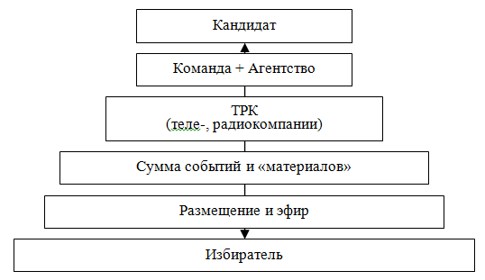
Схема 15. Работа коммуникационного канала
Особенности информационного канала. Как описывает М. А. Блюм, телевидение способно выводить на экран изображение, текст, устную речь и музыку, оно создает самые доступные массовому сознанию рекламные и PR-обращения. Секрет такого воздействия — использование крупных планов, камерность действия (небольшое число действующих лиц), удлиненный по времени кадр (пристальное наблюдение, непрерывный мониторинг, неотрывное «око» ТВ-объектива). Эти приемы превращают телеинтервью в сеанс своеобразной рентгеноскопии — характер человека (гостя студии) просвечивается насквозь, а вместе с этим и своеобразие его личности, привлекательные или, напротив, не очень симпатичные черты его индивидуальности. Телевизионная речь близка к формам межличностного общения, что также повышает эффективность PR-обращения [14].
Центральное ТВ имеет глобальное значение в рамках избирательного округа и обладает такими информационными константами, как достоверность и доступность для всей аудитории. Но подобная «глобальность» имеет и определенную цену — это ограниченность доступа со стороны кандидата, что связано и с дороговизной и различными политическими мотивами доступа к эфиру центрального ТВ.
Местное ТВ. Рассматривая значение регионального ТВ для организации избирательной кампании в отдельном округе народного депутата ВР Украины, нужно указать на то, что аудитория местных телерадиокомпаний очень самобытна. Это позволяет в рамках региональных особенностей при более низкой цене самого эфира и его доступности искать подход к избирателю отдельного округа. Причем местные ТРК описывают региональные события и новости с определенной территориальной спецификой, понимание которой позволяет найти оптимальный подход к организации эффективной агитации среди определенных значительных групп избирателей округа.
Цель использования ТВ и радио в масштабах избирательной кампании на округе достаточно простая — получить узнаваемость среди 160 тыс. избирателей при возможности сформировать общественное мнение (30 тыс. избирателей) в пользу поддержки кандидата. Для этого необходимо создать сумму событий, материалов и разместить их на существующих каналах в оптимальное для предполагаемой аудитории время.
Рассчитать количество рекламы и необходимого эфирного времени непросто. Для этого лучше обратиться к профессиональному (возможно, местному) агентству, обладающему достаточным практическим опытом работы на рынке теле-, радиорекламы. В каждом отдельном случае для работы с ТВ и радио создается медиаплан [43], рассчитывается эфир, аудитория, стоимость, необходимое совокупное количество и эффективность материала. Совокупное медиапланирование включает: медиаплан, бюджет рекламной кампании; медиаобсчет (расчет эффективности рекламной кампании) [43].
Основные виды теле-, радиоматериалов для эфира.
1) Рекламный ролик — наиболее распространенный вид рекламы и, соответственно, агитационной пропаганды. Короткий фильм длительностью от 15 до 60 секунд. Нужно помнить, что, как правило, человек внимательно смотрит рекламу только первые 5–10 секунд [47].
2) Телеобъявления — короткие, в несколько секунд объявления, передающие только главную черту объекта рекламы.
3) Заставка — статичная картинка (логотип, слоган, лозунг и т. д.) без дикторского сопровождения, с музыкальным сопровождением, имеющая короткое, привлекающее внимание начало.
4) Рекламная передача — презентационный ролик в формате мини-фильма о кандидате. В нем нужно рассказать об обстоятельствах и причинах участия в выборах на округе, основных целях и задачах.
5) 1,5–3-минутное интервью, знакомство с кандидатом [70, с. 127].
6) 2–4-минутное программное выступление [70, с. 127].
7) 30-секундное блиц-выступление по основным пунктам и лозунгам программы [70, с. 127].
8) Фильм о семье и биографии кандидата. «Стандартный ход в ролике-биографии — это рассказ кандидата о самом себе. Используются различные семейные фотографии, показан его образ жизни и быт. После показа такого ролика каждый может убедиться в том, что герой такой же, как и все, но немного лучший» [24, с. 95].
Размещение электоральной рекламы. Как указывает М. Н. Грачев [35], существует несколько возможностей размещения электоральной рекламы на телевидении:
а) бесплатный эфир, предоставляемый кандидатам в соответствии с Законом о выборах [118];
б) обычное коммерческое время, закупаемое за собственные деньги;
в) появление кандидатов в «новостных» блоках;
г) «засветка» в самых различных программах — чаще всего развлекательных [35].
Замечания.
— ТВ и радио — это дорогостоящий, но при этом и наиболее эффективный источник передачи информации. Дороговизна ТВ и радио во многих случаях ограничивает возможность обращения к ним. На местном уровне нужно точно рассчитать возможный бюджет расходов на такой вид рекламы в структуре общего бюджета избирательной кампании. При необходимости следует обращаться к менее глобальным, но более дешевым источникам доставки информации. Хотя все зависит от типа кампании и возможностей кандидата.
— На местном уровне не всегда можно получить доступ к ТВ и радио. Лучший вариант — это когда кандидату принадлежит либо он является совладельцем местного канала, или же связи претендента позволяют получить доступ к эфиру. Когда не существует указанных ранее условий, чаще всего о телевидении и радио на выборах можно забыть.
4.8.2. Работа в Интернете ⇑
Пользователи Интернета на бытовом уровне знают, что такое Всемирная паутина. Каждый находит в Интернете для себя что-то свое и видит его по-своему. Сформулировать подобные представления можно по-разному: «сетка», Всемирная паутина, сумма сайтов, глобальное пространство общения, социальные сети, форумы, новости, погода, онлайн-игры, источник различных данных и т. д. Потенциал Интернета в Украине до сих пор остается недооцененным. При этом Интернет сегодня продолжает оставаться самым открытым и достаточно неконтролируемым источником информации.
Возможности использования Сети на местных выборах еще предстоит раскрыть в ближайшие годы. В общих чертах нужно сказать о том, что на сегодняшний день Интернет как источник прямой агитации на выборах имеет очень низкую эффективность. Многие кандидаты не понимают особенности интернет-сети, ее глобальность и широту аудитории, высокую ограниченность внимания к отдельным сайтам и событиям, внутренний интерес участников как основной стимул поиска и внимания к информации и т. д. Несмотря на такие особенности, политики пытаются создать на местном уровне высокозатратные, но низкоэффективные сайты новостей о себе (команде, программе, чаяньях и стремлениях); базы данных проблематики городов и районов; соцсети местного значения и т. д. Все это отвлекает значительные ресурсы и имеет низкую эффективность, не привлекая внимания пользователей. Кроме того, в своем большинстве интернет-аудитория состоит из молодежи, которая не любит ходить на выборы.
Потенциал интернет-технологий для местных выборов в определенном разрезе имеет значительное применение. Сеть позволяет сообщить широкой общественности о каких-либо «серых», «грязных» технологиях и фальсификациях, осуществляемых кем-либо во время предвыборной гонки. Это также значительный и не контролируемый источник распространения слухов и дезинформации. Интернет часто используется для слива компромата. Для участия в акциях в Сети нужна подготовленная и профессиональная команда IT-специалистов.
Ограниченно рассмотрим основные интернет-источники.
— Сайт-визитка кандидата: должна быть как можно проще; не более пяти страниц; достаточно разместить программу и автобиографию; минимальное количество фотографий политика. В любом случае сайт лучше не усложнять и не перегружать. Посещения сайта-визитки будут предельно низкими. Нет смысла раскручивать такой сайт — для аудитории Сети он не будет представлять никакого интереса.
— Сайты новостей бывают нескольких видов, особо необходимо выделить 5–7 основных сайтов для поиска новостей, которые посещают 90% пользователей украинского Интернета. Часто к размещению информации на таком сайте получить доступ проще и дешевле, чем к эфиру на канале ТВ. Новость на всеукраинском новостном сайте позволяет распространить информацию в среде всего Рунета. Но часто внутренняя политика всеукраинских новостных сайтов запрещает размещать информацию, которая в прямом смысле является пропагандой, агитацией или компроматом, а не новостью, фактом и т. д. Заметим, что создать свой сайт такого масштаба под выборы в мажоритарном округе — затея фактически неосуществимая.
— Сайты видеоконтента — это глобальные площадки размещения видеоматерилов. Размещение информации на таких сайтах имеет ограничения, но при этом остается довольно доступным. Раскрутка отдельного сообщения возможна только в случае его актуальности для интернет-аудитории. Существуют различные косвенные способы увеличения просмотра роликов. Но важность и интерес к информации в любом случае довлеет над техническими действиями IT-специалистов.
— Группы в соцсетях — значительные площадки общения посетителей Интернета. Позволяют (косвенно) распространять различную информацию, но предполагают и определенное ограничение к формату и содержанию контекстной рекламы. Неэффективным является создание под выборы местного значения в социальной сети группы поддержки кандидата.
— Рейтинги кандидатов. В Интернете под выборы создаются различные сайты «голосовалки», на которых оцениваются шансы и выставляются рейтинги кандидатов и политических партий. Отметим, что подобное никак напрямую не влияет на голосование в округе в день выборов.
Описанное выше — это довольна малая часть того, что существует в Сети и что может быть использовано для ведения агитационной кампании в Интернете.
Баннерная и контекстная реклама и ее связь с сайтами-«пустышками» , а также с сайтами соцгрупп, видеоконтента, новостными и т. д. — это наиболее эффективный способ ведения интернет-кампании. Создается односложная схема использования баннеров и контекстной рекламы, которые размещаются на сайтах различного уровня с отсылкой на одноразовые сайты, на которых расположена «необходимая» информация. Такой информацией могут быть новости; компромат; прямая агитация; видео-, аудио- и визуальный контент. Подобное позволяет связать воедино логику и информацию, а также получить доступ к интернет-аудитории и снять существующие ограничения.
Замечания.
— Зная интернет-среду и способы работы с ней, можно построить различные форматы интернет-кампаний, цель которых может быть довольно разнообразна. Это может быть: защита от фальсификаций на выборах; распространение компромата и слухов; высмеивание и подрыв доверия к оппоненту; дискредитация административных инструментов; понижение или повышение общей явки избирателей; привлечение внимания к выборам всей интернет-аудитории. В любом случае Интернет не является прямым источником агитации и имеет более эффективное значение для выборов всеукраинского уровня.
— Для местных выборов, если нет необходимости вести агитацию в Интернете, чаще всего нужен простой и дешевый сайт-визитка.
— Основное правило работы с Сетью — это паразитирование на созданных кем-то ресурсах. Ошибка — создавать свои глобальные интернет-ресурсы.
— Значение интернет-сети растет с каждым днем, но не нужно переоценивать данный канал связи в рамках выборов на округе. Если целевая аудитория не использует Интернет, тогда он не является основным источником агитации.
— Интернет-кампанию должен планировать и осуществлять профессиональный пропагандист, разбирающийся в основных принципах работы Сети, а не IT-специалисты, которые являются только техническими исполнителями.
4.8.3. Печатные издания при агитации на округе ⇑
Печатное издание — это периодическое печатное средство массовой информации, обладающей тематическим стилем, содержащее текстовую информацию и визуальный материал, охватывающее определенную аудиторию читателей. Существуют различные виды печатных изданий: газета, журнал, сборник, альманах т. д. В масштабе округа депутата Верховной Рады Украины нас в первую очередь интересуют газеты всеукраинского и местного значения. Нужно помнить, что газета воспринимается аудиторией как достаточно авторитетный источник точной информации, кроме того, напечатанные тексты доступны многократному изучению, аналитическому обозрению. Газета традиционно тяготеет к комментированию и анализу информации, поэтому читатели информацию (текст) воспринимают критически. Чтобы преодолеть скептицизм целевой аудитории, требуется многократное повторение и различная смысловая нагрузка в определенном направлении [14]. Заметим, что значение печатной информации падает с каждым годом.
Цель использования печатных изданий — это как минимум смысловая узнаваемость кандидата и его предвыборной программы в округе, а максимум — победа над оппонентами в смысловом пространстве.
Классификация газет. По территориальному признаку это могут быть общенациональные, региональные, местные. По тематическому признаку: деловые, общественно-политические, отраслевые, рекламно-информационные, развлекательные, смешанные и т. д. На выборах в округе интерес представляют:
— Центральные издания всеукраинского масштаба, охватывающие обширную территорию. Общественно—полити-ческие газеты всеукраинского значения распространяются по всей стране, имеют достаточно большой тираж и аудиторию, выходят с высокой периодичностью. Отрицательными особенностями таких газет является размытость аудитории и смыслов, сложность доступа к публикации и ее дороговизна. Все это ограничивает применение центральных изданий на выборах местного значения в мажоритарном округе.
Местные издания ограничены территорией распространения (рамками региона либо границами отдельного административного образования), особенностями, периодичностью и тиражом издания. Такие газеты больше всего подходят для работы на «ограниченных» выборах. Публикация в них стоит дешевле, чем во всеукраинской прессе. К тому же с ними проще договориться о публикации, они более доступны по цене для местного населения и их язык соответствует аудитории региона.
Своя газета — это газета, издаваемая в рамках деятельности кандидата, политической партии или подшефного общественного движения. Такое издание может существовать задолго до выборов. Цель — это «ненавязчивая» агитация за будущего политика. С одной стороны такая газета должна работать на узнаваемость, а с другой — вести определенную смысловую дискуссию и полемику с общественностью, властью, оппонентами. После регистрации кандидата и под конец выборов такое издание должно проводить прямую пропаганду, предлагая избирателю голосовать за кандидата и не голосовать за оппонентов. Все остальное наполнение — это второстепенная оболочка или определенное смысловое прикрытие, позволяющее расширить аудиторию.
Рассмотрим эффективность выпуска «своей газеты» в округе крупного урбанизированного центра и значение такого же издания для сельской территории.
— В мегаполисе подобное издание из-за перенасыщенности информационного пространства не будет иметь никакого значения. Население урбанизированных центров, скорее всего, использует такую газету для других целей.
— В небольших населенных пунктах чаще всего существует значительный дефицит информации, поэтому газета кандидата должна иметь определенный спрос, и ее надо написать так, чтобы был смысл читать. При этом практически все местные газеты — это достаточно низкая с точки зрения содержания «макулатура». Поэтому возникает уникальная ситуация заполнить существующий пробел. Для этого необходимо яркое и содержательное издание, в котором нужно ругать власть и говорить всю правду о местных проблемах. Нужно проявить фантазию — предлагать радикальное решение местных проблем, рисовать глобальные проекты и планы будущего развития и переустройства округа. Все это притом, что все местные издания «унылые», все равно будет иметь достаточно высокий резонанс. Это позволит с помощью недорогой газеты получить значительную узнаваемость и, возможно, высокий результат в день голосования.
Расчет необходимого количества работы с печатными изданиями определяется и высчитывается по-разному, то есть не существует единой универсальной формулы.
Для организации правильной работы с печатными изданиями надо: назначить ответственного в штабе по работе с прессой; просчитать цены, тираж, рейтинги и аудиторию изданий; определить техническое задание; рассчитать количество статей; создать их план; заключить договора на публикацию; подготовить материал для печати; составить сетевой график размещения публикаций в прессе; опубликовать материалы.
Содержание того, что будет печататься, — это политический текст и послание, политическая агитация и реклама. Политический текст кардинально отличается от прямой политической агитации и рекламы. Такой текст — это не прямое обращение и предложение обществу чего-либо, он обращается к рассудку и предлагает читателю иную реальность. В рамках конструирования иной политической действительности текст может воздействовать на эмоции и чувства, но связывающая рациональная калька довлеет над всеми «нарисованными» картинками.
Для уточнения вслед за А. Г. Алтуняном рассмотрим содержание понятия «политический текст» — это текст, в рамках которого рассматриваются актуальные политические проблемы и который обращается к массовой аудитории [3, с. 11]. Политический текст дает объяснение событиям, явлениям, ставит его в контекст реальности, убеждает, что именно такое видение события является истинным . Любой политический текст потенциально, в стратегическом плане нацелен на изменение или поддержание текущей политической ситуации, на перераспределение или поддержание существующего баланса сил власти [3, с. 14]. Политический текст обращается к потенциальному избирателю с похожей целью — убедить потратить имеющийся у избирателя политический капитал, причем потратить определенным образом [3, с. 119]. Нужно помнить, что только обращение к массам и позволяет говорить о том, что текст является политическим.
Стратегические задачи политического текста — это привлечение внимания; убеждение аудитории в правильности поставленных проблем и предложенных путей их решения; мобилизация аудитории на поддержку предложений автора [3, с. 16].
Тактические задачи — это задачи актуальной политической жизни, то есть это политическая борьба: вброс информации, проведение определенной линии внутри фракции, попытки способствовать принятию или неприятию определенных решений, влияние на конкретных лиц, конкретные структуры и институты [3, с. 14].
Политическая статья. В политической статье возможно рассмотрение нескольких тем (две-три и больше), а в устной речи доминирует только одна [3, с. 29]. Автору статьи нужно предпринять усилия, чтобы привлечь внимание читателя, суметь обрисовать образ самого автора и т. д. В сравнении с устным словом от автора письменного (печатного) текста требуется более детальная проработка введения, поскольку именно по введению в статью (заголовок, подзаголовок, лид — первый абзац) читатель определяет, интересует ли его текст [3, с. 29]. Автор политического текста использует определенные слова, образы, понятия. Создавая контекст события, он описывает мир таким, каким он хочет, чтобы его восприняла потенциальная аудитория [3, с. 76].
Понимая возможности политического текста, обладая глубоким политическим кругозором и мастерски владея основными профессиональными навыками, с помощью даже небольшого печатного издания можно влиять на общественное сознание.
Экстренный, оперативный материал в ответ на провокации. Случаями, на которые необходимо оперативно реагировать, являются: отказ от регистрации, явная фальсификация на округе, административное преследование, компромат на кандидата. Для организации экстренной публикации материала в газетах местного значения нужна предварительная договоренность с издательствами.
Замечания.
— Нужно понимать интеллектуальный и познавательный уровень тех, кому адресовано издание. При этом не нужно считать людей примитивными и не способными отличить явную ложь от правды. Всегда необходимо опираться на достоверные факты и знания.
— Согласно Закону [118], предоставление кандидатам в депутаты в одномандатных округах печатных площадей в печатных средствах массовой информации осуществляется исходя из принципа равных условий [118 п. 8, ст. 68]. На практике, скорее всего, все будет происходить иначе.
— Часто в бюджет печати «своей газеты» не закладывается статья на ее распространение. Подобное связано с различными способами экономии как со стороны кандидата, так и со стороны тех, кто занимается изготовлением издания. В случае когда статья расходов на доставку в ящики не заложена в бюджете, газета чаще всего будет сдана на макулатуру.
— Как правило, работа публикации позволяет создать определенную узнаваемость кандидата среди жителей округа, но не увеличить результат в день голосования.
— Эффективность печатного материала падает с каждым годом. После возникновения радио и особенно ТВ во второй половине ХХ века роль печатных СМИ значительно снизилась. Из этого не стоит делать крайних выводов. Печатный текст продолжает оставаться источником формирования общественного мнения, но нужно правильно осознавать методы применения и ширину воздействия этого информационного канала.
— В случае когда невозможно получить доступ к печатным изданиям, можно попробовать создать «свою газету», но такое издание, в основном, будет изначально заангажировано тем, что его цель — это агитация за конкретного кандидата.
В разделе не рассматриваются жанры и виды статей, а также технические тонкости работы с издательствами — это выходит за рамки исследования.
4.8.4. Наружная реклама на округе ⇑
Наружная реклама — это способ влияния на сознание и выбор избирателя с помощью мощного визуального воздействия в достаточно короткий промежуток времени. «Наружка» предполагает разнообразный выбор носителей рекламы, устанавливаемых в самых оживленных местах. Присутствие в округе наглядной агитации важно для формирования образа активного кандидата — реального претендента на избрание в округе.
Основные цели применения такой рекламы — это:
а) заявить о себе и получить узнаваемость среди 160 тыс. чел.;
б) войти в круг (двух-трех) основных кандидатов, претендующих на победу в округе.
Расчет необходимого количества наружной рекламы :
— Минимум. Если говорить о городском округе, то для узнаваемости среди 160 тыс. чел. нужно разместить 20–40 щитов сроком на 1,5 месяца только в ключевых точках округа, позволяющих охватить большинство жителей территории. Результативность при новизне и недостатке позитивных кандидатов — до 5% рейтинга.
— Максимум, или доминирование — это использование для агитации 50–90% всех рекламных площадей в округе. Нужно помнить, что доминирование должно быть оправдано, необходимо учитывать стоимость и цель, то есть нужно правильно соизмерять предельную для кампании эффективность наружной рекламы.
Основные типы наружных агитационных материалов.
— Биллборд — от английского слова «big board» (большая доска). Биллборд устанавливают на опоре или на стене здания и подсвечивают внешними 2–7 лампами. Его общая площадь 18 кв. м (4 × 3 м или 6 × 3 м).
— Призмаборд — то же, что и биллборд, только имеет поворотный механизм с возможностью разместить на одной плоскости до трех сюжетов. Устанавливаются в точках с большим пассажиропотоком. В среднем сюжет демонстрируется 25–35 секунд, а его смена происходит через каждые 3–5 секунд. Площадь и подсветка такие же, как и у биллборда, только внимания он привлекают больше, благодаря поворотному механизму.
— Роллеры — щиты со сменными сюжетами (в среднем от 5 до 15), попеременно прокручивающимися сверху вниз или наоборот. Размер конструкции 3,5 × 2,5 м.
— Ситилайт — пластиковая конструкция, за прозрачный пластик которой вставлен отпечатанный на полупрозрачной бумаге сюжет. Размер
конструкции 1,2 × 1,8 м, а общая площадь — 2,15 кв. м. Для подсветки рекламы в вечернее время внутри конструкции установлены лампы.
— Бренд-мауэр или баннер-растяжка — значительное полотно, натянутое на укрепленную на здании конструкцию, которое по площади может достигать тысячи квадратных метров.
— Троллы — перетяжки над дорогами размером 5 × 1 м рекламной площади. Этот вид наружной рекламы эффективен для пешеходов, водителей и пассажиров.
Также есть и другие виды носителей наружной рекламы: лайтбины, пилоны, бэклайты, транспорт и т. п. При установке щитов наружной рекламы различают стороны расположения А и В. Сторона А — это сторона (чаще всего правая), которая находится по ходу движения транспорта. Сторона В — это соответственно обратная сторона дороги, которую также видят движущиеся в ее сторону автомобили. У каждой конструкции две стороны, за исключением тройных биллбордов (их стороны А, В и С) и конструкций, стоящих на разделительной полосе (в этом случае обе стороны считаются А-сторонами).
Содержание наружной агитации. Рекламный щит должен содержать основные компоненты:
— Изображение кандидата. В наружной рекламе на округе лучше всего использовать одну или максимум две фотографии.
— ФИО. В большинстве случаев достаточно фамилии и имени претендента. Существует ошибка, когда неправильно расположенную либо нечетко изображенную на рекламном щите надпись с данными о кандидате невозможно прочитать в течение 2–5 секунд, также встречается, что ФИО находится в таком положении на щите, что сознание зрителя не объединяет эти данные и изображение кандидата.
— Лозунг, месседж. Простое и понятное словосочетание, позволяющее увязать изображение, ФИО с политическим контекстом рекламы.
— Фон. Должен позволить сосредоточить внимание зрителя на основных составляющих. Бывают случаи, когда фон смазывает или искажает изображение кандидата и другие данные.
Основные принципы при создании рекламных изображений:
— Простота изображения — ничего лишнего. Рекламный щит должен содержать минимальное количество элементов и цветов.
— Сосредоточение внимания на кандидате. Композицию необходимо построить так, чтобы все внимание было направлено по убывающей: на изображении кандидата, его ФИО, лозунге. Встречаются ситуации, когда на щите необходимо отобразить различные маскирующие принадлежности, такие как логотип партии или общественной организации. Тогда это нужно изображать так, чтобы зритель воспринимал их в последнюю очередь либо не видел вообще.
— Эффективность наружной агитации зависит от таких условий: нужно помещать там, где ее могут увидеть или заметить множество людей; у проезжающего наблюдателя есть только 3–7 секунд времени для оценки сообщения, поэтому основным принципом размещения должно быть непроизвольное привлечение внимания.
Для резервирования площадей нужно заранее (еще до регистрации) определить места размещения и бюджет наружной рекламы и предварительно договориться с поставщиками. Нужно помнить, что «неадминистративный» кандидат, избирательное объединение могут встретиться с трудностями при размещении перетяжек, баннеров, других форм наружной агитации. Многие рекламные фирмы, занимающиеся наружной рекламой, тесно связаны с администрацией. Поэтому они могут отказывать в заключении договоров с «неадминистративными» претендентами, а в некоторых случаях разрывать договоры в одностороннем порядке. С фирмами, занимающимися наружной рекламой, следует заключать договоры как можно раньше и предусматривать неустойку за ненадлежащее выполнение обязанностей по договору [18, с. 198–199]. Соблюдение всех предварительных условий резервирования площадей в случае негласного административного запрета все равно приведет к невозможности такой агитации на округе для нежелательного кандидата.
Замечания.
— В 9 из 10 случаев наружная реклама не приносит голоса, а дает только узнаваемость.
— Ошибка при создании наружной рекламы — это размытость, броскость, оригинальность, креативность, пестрость, несоответствие фона и изображения кандидата.
— Заметим, что политическая реклама должна являться таковой. Иногда на рекламных носителях вместо политической рекламы можно увидеть рекламу коммерческого товара. В таком формате кандидат воспринимается не как политик, а как модная фотомодель.
— Существуют виды наружной рекламы, применение которых в избирательной кампании можно поставить под большое сомнение. К таким нужно отнести переносные стойки и рекламу на транспорте.
— В любом случае, создавая и размещая наружную рекламу, нужно помнить одно правило: она не должна вызывать у избирателя раздражение.
4.8.5. Разработка, изготовление и распространение печатных агитационных, информационных и рекламных материалов на округе ⇑
К печатным агитационным материалам относятся листовки, буклеты и другие материалы, которые произведены методом печати на полиграфических предприятиях. Исключение составляют газеты и журналы, которые зарегистрированы как средства массовой информации [18, с. 195]. Согласно социологическим опросам, более 50% избирателей знакомятся с основными идеями предвыборных платформ кандидатов из листовок [35].
Цель применения печатных агитационных материалов:
— донести до 160 тыс. избирателей образ и программу кандидата — засыпав весь округ «простым» материалом на 100%;
— по возможности, показать (раскрыть, проявить) борьбу кандидата с местной властью, социальными, жилищными, экономическими и другими проблемами;
— предлагать новые пути развития округа, обещать избирателям решение различных (важных) вопросов.
Расчет необходимого количества печатной рекламы. Рассмотрим два варианта: минимум и максимум. Минимум — это немного печатной продукции для обеспечения внешнего фона кампании (5–25 тыс. образцов, в зависимости от вида агитпродукции). Максимум — это, условно, нужно каждому жителю вручить по листовке, чтобы о кандидате узнали 160 тыс. человек, с возможным многоразовым повторением распространения по округу.
Преимущества печатной агитации : во-первых, это достаточно недорогой и оперативный информационный канал связи с избирателями; возможны большие тиражи и переиздание; продукция может включать образную и зрительную информацию — графику, фотографии, рисунки и схемы; избиратель может повторно обращаться ней [47]. Агитация должна быть простой, повторяющейся, краткой, образной, дешевой, эмоциональной и понятной любому малограмотному человеку, а также легко доступной для населения [35].
Содержание печатной рекламы и основные элементы — это образ кандидата, программные положения, лозунги, месседжи, политические тексты, зрительные элементы и т. д. При составлении письменных текстов для печатной агитации необходимо знать особенности аудитории, к которой будет обращен текст, и не упускать из виду: политические настроения и устремления читателей. Необходимо знать, что некоторая агитационная литература повторяется от выборов до выборов и не имеет привязки к конкретному кандидату.
Виды печатной продукции . Перечислим минимальный «джентльменский» набор печатной агитации.
1) Листовка — это информационно-пропагандистское печатное издание, отличающееся небольшим объемом (не более двух страниц), сжатым и доступным текстом, броским оформлением [47]. К формату листовки нет жестких требований, кроме нескольких: простота, понятность. И помним о возможном отрицательном воздействии. Листовки могут быть различных типов: презентационные, приглашения, биографические, программные, контрпропагандистские; копии газетных публикаций; памятки избирателю; листовки «последнего дня» [35] и т. д.
2) Буклет — предвыборная программа, формат А5 или А4.
3) Плакат. Размеры: А4, А3, А2 и т. д. — все зависит от планируемой на округе «экспансии». Можно совместить дизайн плаката и того, что будет изготовлен для наружной рекламы. Расклейка плакатов по форме очень схожа с реализацией в округе проекта наружной рекламы — и по эффективности, и по различным технологическим особенностям.
4) Календарь. Возможны различные форматы: карманный, настольный, настенный. В последнее время от карманных календарей многие кандидаты отказались, это, так сказать, стиль 1990-х. Настенные календари как эффективное средство повышения узнаваемости политика продолжают оставаться актуальными и схожи в некотором смысле с плакатами.
5) Наклейки могут быть различного формата и качества. Допустимо совмещение наклеек — листовок, плакатов и т. д., то есть любая листовка может быть растиражирована в формате наклейки.
Рассматривая виды, формат и содержание печатной продукции, нужно заметить, что в данном вопросе те, кто организовывает листовочную кампанию, ограничены только своим воображением.
Основные действия по реализации печатной кампании на округе достаточно подробно рассмотрены у М. Н. Грачева [35]. Это утверждение технического задания, изготовление и тиражирование политической рекламы. Рассмотрим более подробно.
— Планирование — это определение целевой аудитории избирателей, на которую рассчитана печатная агитация. Составление сметы и бюджета, после чего — утверждение общего формата печатных материалов. Определение сроков печати и распространения агитации. Поиск подходящих типографий, заключение договоров, оценка возможного качества изготовления.
— Разработка и создание текстов, визуального материала и дизайна агитационных материалов. Затем окончательное утверждение, оплата, печать и доставка. Обязателен контроль наличия выходных данных (тиража, заказчика, исполнителя, номера заказа и т. д.) на всей выпускаемой агитационной продукции. Кроме того, нужно предоставить образцы напечатанного материала в окружную избирательную комиссию [118 п. 6,7, ст. 69].
Существуют спорные вопросы, связанные с оплатой агитационных материалов, изготавливаемых до начала избирательной кампании или до начала разрешенного агитационного периода. Все эти проблемы не имеют однозначного решения. В каждом отдельном случае нужно решать проблему, исходя из специфики отдельной кампании.
— Распространение: доставка листовок в полевую структуру; контроль процесса раздачи и оценка реакции избирателей на печатные материалы; отчетность и обсуждение в штабе хода продвижения печатной агитации на округе; при необходимости — перепечатать.
Проблема отрицательной эффективности. Часто рекламисты и пиарщики не отвечают за результат избирательной кампании, поэтому их не интересует эффективность рекламы. Подобное может выражаться в различных значениях: чем дороже рекламная продукция, тем выше интерес тех, кто изготавливает, и тех, кто размещает заказ. Иногда агитационный материал (его содержание) может отрицательно воздействовать на большинство жителей округа или на его отдельные группы. Это могут быть ошибки: формы, содержания, логики. Например, неправильно подобраны цвета; не видно сообщение; цветовые ошибки; эмоциональные опусы и преувеличения; ошибки в тексте; дорогостоящий материал. Нужно помнить, как аксиому, что не вся агитация имеет положительное значение. Условно это можно обозначить так:
— положительная для всего округа;
— положительная для группы кандидата избирателей;
— нейтральная;
— отрицательная для электората, который голосует за оппонентов;
— отрицательная для избирателей кандидата;
— отрицательная для всего округа.
Каждую листовку, ролик, сообщение, плакат необходимо соизмерять с вышесказанным, такая оценка предварительно возможна в рамках фокус-групп либо на совещаниях в штабе, либо при анализе ее отдельными специалистами или обывателями. Неэффективность надо устранять или использовать для агитации за оппонентов.
Замечания.
— Печатная агитация — это мощный инструмент воздействия на избирателей. С помощью одной только листовочной экспансии совершенно неизвестный кандидат, не проводя никаких других мероприятий и акций избирательной кампании, может получить до 5% голосов [35]. Подобное может быть эффективно использовано в пропорциональных выборах, но в мажоритарной кампании выигрывает только один кандидат, поэтому такая агитация может быть недостаточной.
— «Заполненность» среды — это одно из обязательных условий эффективной организации агитации с помощью печатной продукции. Иногда количество распространяемого материла не позволяет даже создать эффект присутствия на округе. Подобная «пустота» может быть связана не только с количеством изготовленной агитации. Причина может заключаться: в неэффективных методах распространения; полевые структуры оппонентов могут вовремя «собирать» весь материал; распространение происходит в тот момент, когда округ перенасыщен материалами.
— Дополнительные элементы, предлагаемые рекламистами (чашки, блокноты, ручки, шарфы, пакеты и т. д.) чаще всего не стоят затрат и вызывают отрицательную реакцию. Избиратель не против получить чашку или еще какой-либо атрибут, но голосовать из-за него за кандидата не будет.
— Выступать против! Нужно помнить о протестной стороне кампании. Политическая деятельность — это в определенной степени борьба против существующих порядков. Если не представлен протест, теряется эффективность агитации.
— При изготовлении и распространении печатной агитации необходимо внимательно изучить Закон о выборах [118]. Нужно знать о том, что партия, кандидаты в депутаты от которой зарегистрированы в общегосударственном округе, и кандидат в депутаты, зарегистрированный в одномандатном округе, обязаны предоставить по одному экземпляру каждого печатного материала предвыборной агитации, изготовленного за счет средств избирательного фонда партии и с применением оборудования, принадлежащего ей, или соответственно изготовленные за счет средств избирательного фонда кандидата, не позднее как через пять дней со дня его изготовления в Центральную избирательную комиссию [118, п. 6, ст. 69].
— Печатные материалы предвыборной агитации должны содержать сведения о заказчике этих материалов, учреждении, об осуществлении печати или указание, что печать осуществлена с использованием оборудования, которое принадлежит партии, а также тираж и информацию о лицах, которые отвечают за выпуск [118, п. 7, ст. 69].
— Расклеивая плакаты и объявления, нужно знать о местах, отведенных под агитацию, точнее, то, что местные органы исполнительной власти, органы местного самоуправления не позднее как за сто дней до дня выборов отводят площадь в публичных местах для размещения материалов предвыборной агитации [118, п. 8, ст. 69].
— Нужно изучить и другие законодательные акты, которые косвенно связаны с политической рекламой и агитацией, например, ЗУ «О рекламе» (http://zakon1.rada.gov.ua/la-ws/show/270/96%D0%B2%D1%80/ed20110419).
— Обязательным является внимательное отношение к авторскому праву, к использованию изображений и высказываниям частных лиц, к изображению различных архитектурных и других объектов ЗУ «Об авторском праве и смежных правах» (http://zakon1.rada.gov.ua/laws/show/ 3792-12).
— Незнание основных законодательных условий может позволить оппонентам найти законные способы выбить кандидата из предвыборной гонки. Поэтому при изготовлении печатной продукции и перед распространением она должна проверяться юристами.
— Нужно находить средства на распространение печатной агитации, надо позаботиться о том, чтобы материалы доходили до людей.
— Зачастую некоторые кандидаты умышленно занижают явку на выборах. У них может быть определенное количество своего электората. Соответственно, интересы таких претендентов заключаются в том, чтобы никто, кроме их избирателей, не пришел на выборы, тогда процент голосующих за них будет выше. Напротив, задача того, кто проводит агитационную кампанию, — увеличить явку и повысить политическую активность с помощью информации: о выборах, о кандидатах и их программах, об условиях, о перипетиях предвыборной гонки и т. д.
— Как правило, каждый день вся агитация, размещенная тем или иным способом, будет срываться и выбрасываться, поэтому необходимо обеспечить ее возобновление и переклейку.
— Расклеивая и распространяя агитацию, нужно быть корректным. Агитация, размещенная против возможных устоев, морали и традиций, будет вызывать у избирателя раздражение и отрицательное отношение.
— На избирателя наибольшее влияние оказывают агитационные материалы, прочитанные вначале и в конце избирательной кампании [70, с. 153]. Подобное не всегда удается осуществить из-за того, что срок регистрации кандидата и неизвестность возможных типов кампаний оппонентов не позволяют напечатать и распространить агитацию первым. Этот минус можно устранить по ходу кампании, вбрасывая агитацию массовыми волнами, с малой периодичностью.
4.9. Публичная деятельность кандидата: взаимодействие с избирателями округа и журналистами ⇑
Публичная деятельность кандидата составляет значительную часть кампании. Только в результате прямого общения с жителями округа и СМИ можно осуществить полноценную агитационную кампанию.
Публичную деятельность кандидата можно разделить на три вида:
— взаимодействие со СМИ;
— встречи с избирателями;
— массовые акции в округе.
Все эти действия должны взаимодополняться с совокупной агитационной кампанией: в печатных изданиях, в Интернете, на ТВ и радио, а также в печатных материалах, распространяемых среди избирателей.
Публичное событие — наступающее, происходящее или произошедшее в определенной точке времени и пространства, значимое для общества либо его части происшествие. Публичные события могут быть планируемыми (инициируемыми) или внешними (воспроизводимыми средой). Публичное событие отличается от обычного тем, что имеет обязательную проекцию и последующий резонанс в информационной среде и в общественном сознании, что и позволяет оценивать событие как публичное. Такое событие может воспроизводить в реальности и в информационной среде цепь новых нелинейных событий.
Основная цель работы с журналистами, то есть со СМИ — это создание и инициирование событий, значимых для общественности, или процесс встраивания в информационную среду с помощью реакции на возникающие внешние события. Для организации такой работы и создания полного цикла взаимодействия лучше обратиться к специализированным агентствам по связям с общественностью.
Оценим взаимодействие со СМИ. Кандидат должен свободно работать со СМИ, точнее, с существующим журналистским лобби местного и всеукраинского значения. Такое общение в любом случае возникнет во время избирательной кампании. Если оно не будет инициировано командой кандидата, его результат может быть отрицателен для рейтинга. Поэтому лучше самому организовать и возглавить процесс. Для этого нужна определенная профессиональная команда и специалисты, у которых налажены формальные и неформальные связи с журналистами.
Выступление кандидата для прессы состоит из формы и содержания, вербальной, контекстной, смысловой, визуальной и других частей. Это «основной объект», который будут оценивать журналисты. Вербальное сообщение (послание) должно быть исчерпывающим, правильным, конкретным, простым и понятным [14]. Оно должно позволить журналистам получить достаточное представление о происходившем событии и его участниках для дальнейшего изложения материала в публикациях. Во время общения нужно избегать неправильного внешнего поведения: агрессивности, резкости, неуверенности, эмоциональных перепадов и преувеличений. Излишняя сухость и монотонность может вызвать скуку у присутствующих и неприятие происходящего. Сообщение должно выражать основные позиции и проявлять образ кандидата. Внешний вид кандидата очень важен для создания положительной коммуникации.
Виды публичного взаимодействия с прессой (мероприятия для СМИ) :
Пресс-конференция — это встреча с журналистами и сообщение через них обществу о каких-либо: событиях, действиях, обстоятельствах, фактах; трактовка случившегося, оценка ситуации со стороны организатора пресс-конференции, предусматривающая сессию вопросов-ответов [14, 47].
— Презентация — независимая акция, организованная специалистами по связям с общественностью совместно с кандидатом в целях представления избирательной программы, планов, проектов обществу.
— Брифинг — короткая, сжатая во времени встреча журналистов с кандидатом, не предусматривающая сессию вопросов-ответов.
— Пресс-тур — приглашение журналистов командой кандидата на определенные мероприятия с целью предоставления разъяснительных данных по «проблеме».
— День открытых дверей позволяет всем желающим ознакомиться с деятельностью кандидата, его планами, задать ему и его команде интересующие вопросы.
— Круглый стол — одна из форм совместного обсуждения идей, проблем, ситуаций, имеющих значение для широких кругов общественности [14].
— Открытая дискуссия — мероприятие, на котором могут присутствовать общественные деятели, ученые, отдельные политики, представители неформальных групп избирателей и сами избиратели. Открытая дискуссия схожа с «круглым столом», но имеет более открытый формат и широкую аудиторию. Это событие инициирует команда кандидата. Иногда позволяет создать широкий общественный резонанс вокруг проблемы дискуссии и личности кандидата.
Рассматривая вопрос организации публичных мероприятий, нужно помнить, что профессиональные журналисты просто не могут себе позволить участвовать в пресс-конференции, посвященной малозначимому событию. Поэтому проведение либо приглашение специалистов для участия в незначительном мероприятии вредит имиджу кандидата. В следующий раз пресса будет полностью игнорировать приглашения [47].
Перед мероприятием для облегчения написания будущих материалов каждый журналист должен получать максимум информации в письменной форме. Такой набор может включать: пресс-релиз, описывающий происходящее; биографию официальных лиц, которые будут выступать; копии произнесенных речей; брошюру об основном «виновнике»; фотографии [47]. Приглашение на встречу должно содержать такие возможные элементы: цель события; где оно состоится; когда; почему нужно прийти, а не просто получить информацию через другой канал связи; структура встречи; контакты лица, которое отвечает за мероприятие [47].
Закон [118] разрешает агитацию в форме проведения публичных дебатов, дискуссий, «круглых столов», пресс-конференций, относительно положений предвыборных программ и политической деятельности партий — субъектов избирательного процесса или политической деятельности кандидатов в депутаты [118 п. 2, 2.1–2.9, ст. 68].
Замечания.
— Нужно создать цепь событий и преодолеть «спираль молчания» вокруг кандидата и его кампании. Для этого нужно инициировать значимые для журналистов и избирателей действия, которые в дальнейшем могут стать публичным событием. Необходимо выявлять связь событий, которые существуют «в ткани» повседневной жизни, и всячески искать повод для встраивания в них, освещая все это с помощью различных инструментов агитационной кампании.
— Случается, что взаимодействие со СМИ не имеет четкой цели, логики и плана, это просто «сумма случайных действий» в контексте выборов. Нужно избегать такого подхода к публичной деятельности, в результате можно потерять контроль над публичной кампанией, что скажется на рейтинге, а в последующем и на результате в день голосования.
— Недооценка публичной кампании, ситуация, когда на округе не возникает «яркое политическое противостояние» между кандидатами-претендентами, приводит к недополучению голосов политически пассивной части избирателей.
4.9.1. Встречи с избирателями и массовые акции на округе ⇑
Оптимальная стратегия успешной избирательной кампании — это личное общение кандидата с аудиторией. Прямое общение — наиболее эффективный канал коммуникации. Встречи и выступления на округе — это непосредственное соприкосновение с избирателями и способ прямой агитации с помощью личного убеждения. Основной принцип прямого общения — встречаться и обещать, убеждая голосовать за вас.
Опыт выступлений перед избирателями на встречах и митингах нельзя заменить теорией или уроками. На встречах могут быть люди с различными взглядами, а также негативно настроенные, поэтому кандидату и его окружению необходимо быть внутренне готовым переносить психологические нагрузки и переламывать ситуацию в свою пользу. Первые встречи могут быть негативными, но при определенных данных самого кандидата в будущем все будет откорректировано.
Для достижения высот мастерства прямой риторики необходимо знать теоретические основы «искусства говорить». Для политического выступления также требуется эрудиция и практические знания о проблемах избирателей и государства в целом — чем шире кругозор и образованность, тем проще создать коммуникацию с разносторонне образованной аудиторией.
Нужно знать, что избиратель видит любую «имитацию», и если кандидат ведет себя неестественно и не представляет действительную политику, могут быть проблемы. Поэтому многие претенденты в народные избранники не готовы встречаться с жителями округа, однако такие встречи являются неотъемлемой частью любой агитационной кампании.
Анализируя количество присутствующих и формат публичных мероприятий, нужно разграничить понятия «встреча с избирателями» и «выступление перед избирателями».
1) Встреча с избирателями имеет более непринужденную и доверительную атмосферу, на таком мероприятии не существует жестких рамок и регламента, в аудитории возникает прямая связь между кандидатом и присутствующими. Избиратель на такой встрече получает возможность лично быть услышанным кандидатом, в результате в сознании голосующего возникает представление о том, что кандидат лично его знает. Подобное является немаловажным фактором при принятии решения избирателем в день голосования в пользу того или иного претендента. Для создания такой атмосферы общение должно быть ограничено 15–60 участниками. Если количество присутствующих возрастает, эффект прямой коммуникации исчезает. Нужно внимательно относиться к определенным категориям избирателей, которые могут обратить результат мероприятия не в пользу кандидата. На встречах не нужно давать заведомо невыполнимые обещания, которые будут пытаться получить некоторые жители, все это может повлечь за собой отрицательные последствия для всей избирательной кампании.
2) Выступление перед избирателями — это публичная речь перед широкой аудиторией, ограниченная жесткими рамками, регламентом, сценарием, требующая инсценировки и внешнего антуража. На таком мероприятии могут присутствовать от 100 до 1000 избирателей. Выступление может проходить как в запланированном помещении, так и на открытом воздухе. Такая форма коммуникации позволяет донести широкой общественности основные положения политической программы, а также убеждения и взгляды кандидата. Подобное выступление жестко ограничено во времени, к нему заранее нужно готовить ограниченное количество «вопросов из аудитории». На таком мероприятии изначально не возникает доверительная обстановка, то есть на нем преобладает рациональное убеждение и только затем присутствует эмоциональная составляющая. Важными инструментами воздействия на аудиторию при таком формате становятся различные театральные и пропагандистские приемы работы с массовым сознанием, потому что в данном случае приходится иметь дело не с личностью, а с массой. Профессиональные политики уже в первые минуты выступления могут получить полное одобрение и поддержку, но для такого результата нужен опыт, знания и обязательная предыстория политической борьбы самого кандидата, благодаря которой к его словам присутствующие будут прислушиваться из-за ореола (авторитета) публичности и известности.
3) Массовые акции (протестные действия) — это масштабные публичные мероприятия в округе, цель которых — организация массового протеста или привлечение общественного внимания к глобальным проблемам округа, которые волнуют большинство избирателей и значимы для него. В массовые акции вовлекаются: жители округа, полевая организация, кандидат и его команда, а также представители прессы и общественники. Основной принцип массовых мероприятий — протест против действующих порядков. Такие акции должны формировать в сознании избирателей образ кандидата-борца.
Техническая цель встреч и массовых акций фактически одна и та же — получить узнаваемость среди 160 тыс. избирателей. По возможности, появится поддержка кандидата со стороны 30 тыс. избирателей округа.
Расчет необходимого количества встреч с избирателями без учета агитационного воздействия и результативности.
— Максимум. Анализируя максимальное количество встреч с избирателями округа во время агитационного периода кампании, нужно исходить из оценки физических параметров, ограничивающих кандидата и его команду. Таковыми являются: время проведения отдельной встречи (от 30 минут до 2 часов); количество дней, когда разрешена агитация (в среднем это 75 дней); количество избирателей, присутствующих на встрече (в среднем от 30 до 60 участников). Оценивая опыт максимально возможного количества встреч в сутки, например, А. Санаев предлагает график, состоящий из пяти встреч в день [122, с. 137]. Рассчитаем среднее значение: пять встреч в день: 75 дней × 5 встреч = = 375 встреч в течение кампании. Если условно на встрече может присутствовать 50 избирателей, то получается, что в случае максимального напряжения сил претендент в народные избранники сможет увидеться с 15–18 тыс. избирателей.
— Среднее количество — это одна-три встречи в день, итого за весь период в среднем 150 встреч × 50 присутствующих = 5–8 тыс. избирателей.
— Минимум — это одна встреча в неделю, если у нас в среднем 10 недель × 50 избирателей = 500 избирателей, пообщавшихся с кандидатом.
Эффективность и результативность встреч можно определить следующим образом. Для начала нужно абстрактно предположить количество (процент) сагитированных на каждой встрече. Зная количество встреч и прошедших через них избирателей, можно понять техническое количество желающих голосовать за кандидата. Конечно, такой расчет не предполагает оценку влияния сагитированных избирателей на аудиторию округа в целом, а также на возможное падение рейтинга в течение кампании.
Расчет необходимого количества выступлений перед избирателями и их результативность осуществляется таким же образом, как показано выше, учитывая при этом физические параметры количества участников такого мероприятия (100–1000 человек), а также временные рамки и возможности кандидата.
Расчет необходимого количества массовых мероприятий можно проанализировать следующим образом: 1–2 массовые акции в неделю; в среднем 10 недель агитации × в среднем на 1000 участников = 10 тыс. принявших участие. При этом невозможно рассчитать количество сагитированных избирателей в результате осуществления массовых мероприятий, можно только определить общий эмоциональный эффект от каждой публичной акции. В случае когда акции имеют определенную «сценарную цель», с помощью социсследований можно оценить достигнутый «фон» политических настроений в округе.
Виды выступлений:
— Встречи (выступления) с жильцами домов, кварталов и округа в целом. Этот вид общения является наиболее эффективным для «неадминистративных» кандидатов.
— Встречи с профессиональными коллективами. Для выступления перед подобными собраниями нужно быть в курсе специфических проблем данных групп избирателей, в остальном они не отличаются от других видов подобных акций.
— Встречи с коллективами общественных и ветеранских организаций позволяют познакомиться с «общественниками» округа, но нужно заметить, что перед такими собраниями выступают все претенденты. При этом чаще всего участники общественных организаций уже имеют определенные (косвенные) политические предпочтения, поэтому не стоит переоценивать результат таких мероприятий.
— Встречи по поводу праздничных дат или событий, значимых для коллектива или групп избирателей, — это специфический вид выступлений, на которых необходимо произносить торжественные речи. На таких собраниях прямая агитация скорее всего «не будет понята», нужно также учитывать, что слишком высокие тона и пафос вызывают у присутствующих отрицательные эмоции.
Виды массовых встреч.
— Митинг (от англ. meeting — встреча) — это массовое собрание граждан для обсуждения проблемных вопросов текущей жизни или в поддержку определенных требований, либо для выражения солидарности или протеста. Обычно митинг заканчивается принятием общей резолюции или решением о дальнейших действиях.
— Демонстрация (от лат. demonstratio — указывание, показывание), поход (шествие) — это формы публичной акции, массовое шествие или прохождение людей в связи с каким-либо событием, это также протестная процессия с каким-либо требованием к властям или публичное выражение общественно-политических настроений, существующих в обществе.
— Пикет (от франц. piquet — кол, колоть, прокалывать) — это собрание небольшой группы людей для выражения какого-либо протеста либо это выражение определенного общественного мнения с использованием плакатов, транспарантов, иных средств наглядной агитации. В рамках агитации на округе чаще всего используются агитационные палаточные пикеты, суть которых заключается в широком информировании общественности о кандидате, его программе, и прямая агитация за него.
Речь (выступление) политика — это коллективный творческий труд всей команды кандидата [70, с. 145]. Канон построения политической речи сохраняется уже более 2000 лет и обусловлен самим устным характером жанра и особенностями восприятия устного слова. Речи обычно затрагивают одну тему, состоят из введения в тему, ее развития и заключения. Эмоциональное напряжение обычно идет по нарастающей,… затем снижается и вновь поднимается к концу [3, с. 28]. Для написания текста и подготовки выступления необходим спичрайтер — тот, кто пишет речи и организовывает публичные выступления.
При написании речи выделяют несколько этапов: «исследование аудитории (демографические и социальные характеристики); разработка основной идеи (главная тема послания); создание системы аргументации и доказательства (подбор фактов, цифр, экспертных оценок, креативность и юмор); рациональное структурирование текста (смысловое, стилистическое и лингвистическое); исполнение речи, многократное озвучивание и запоминание» [147, с. 54]. Дополнительные материалы, сопутствующие выступлению, это статистические данные в цифровом выражении и наглядные пособия — чертежи, карты, плакаты, модели, образцы [47].
Для проведения публичной кампании в округе кандидату необходимо подготовить одну основную программную речь, помнить ее наизусть и уметь воспроизводить в различных вариациях. Для того чтобы лавировать в различных ситуациях и, главное, не повторяться, нужно написать и запомнить несколько дополняющих текстов на общие темы: об образовании, об экономике, о коррупции, о ЖКХ и т. д.
Темы выступлений кандидата и вопросы жителей, на которые нужно быть готовым отвечать. Население, по убывающей, ожидает ответов (соответственно и выступлений) на следующие вопросы.
1) Повышение зарплат различным категориям; решение проблем медицины, социального жилья, коммунальных услуг; решение вопросов благоустройства, преступности, транспорта; стабилизации цен на лекарства, продукты, товары [47].
2) Вопросы, связанные с перспективами развития региона (социальном, экономическом, инфраструктурном, культурном и т. д.); коррупции и «местничестве».
3) Вопросы всеукраинского уровня — это проблемы языка, внешней политики и т. д.
Нужно знать, что с избирателями можно встречаться, избегая острых проблем, но это не эффективно. При этом в любом случае кандидат должен быть готов отвечать на всевозможные вопросы личного и геополитического характера. Заметим, что для массовых акций подходят те же темы, что и для встреч, однако каждое массовое мероприятие посвящено только отдельному вопросу или проблеме, поэтому требует отдельно написанной речи. При этом выступление перед массами требует большего «огня» и агрессивности при вербализации.
Тренировка выступления кандидата — это многократное изложение программных тезисов; ответы на все мыслимые и немыслимые вопросы; ответы на провокационные вопросы, выкрики, помехи во время выступления, угрозы [70, с. 127]. Для тренировки лучше усадить работников штаба и полевую организацию и позволить все, то есть «прогнать» будущего политика через те трудности, которые возникнут завтра при публичном выступлении.
Организация встреч кандидата в округе требует:
— назначения ответственного; выявление желательной аудитории; создания графика встреч; согласования графика с местными организациями, властями и т. д.;
— в последующем — оповещения избирателей и приглашения их на встречу; сама организация встречи и оформление зала; агитационное обеспечение, безопасность [47];
— затем кульминация — выступление кандидата, раздача агитматериала, видеосъемка, вопросы зала, завершение встречи; ответы на вопросы; неформальная беседа с избирателями после выступления.
Для организации массовой акции требуются более масштабные действия и привлечение дополнительных средств, например таких, как: трибуна, транспаранты, народные массы, СМИ, а также разрешение властей, безопасность, учет значительных провокаций и т. д.
Обязательно освещение встреч кандидата в СМИ, то есть выступления и массовые акции «должны четко координироваться с кампанией в газетах, на радио и ТВ, действиями оперативных групп» [70, с. 149]. Современные публичные выступления максимально адаптированы к формату работы журналиста, а каждое предложение должно тянуть на цитату в СМИ. Считается, что масс-медиа лучше цитируют политиков, если каждая смысловая единица (озвученная идея) длится не больше 12 секунд [147, с. 55].
Негативный исход встречи. Как указывает А. Санаев [122], провалить или испортить встречу кандидата с избирателями могут лишь три типовые проблемы:
1) изначально негативно настроенная аудитория;
2) присутствие агентов противника;
3) полная физическая неспособность кандидата [122, с. 136–137].
Нужно знать, что часть избирателей изначально агрессивно и враждебно настроена по отношению ко всем политикам, поэтому необходимо быть психологически и организационно готовым к возможным эксцессам.
Провокации на встречах и массовых мероприятиях.
— Провокационные вопросы — распространенный и при этом самый незначительный способ срыва встречи. Такие вопросы могут быть достаточно разнообразными и совершенно не совпадать с реальностью, например: «А правда ли, что на прошлой неделе вашу дочь задержала милиция в ночном клубе за употребление наркотиков?» или: «Где же вы, взяли деньги на покупку такого шикарного дома» [122, с. 140].
— Прямое обвинение во лжи кандидата участником встречи. Для выхода из такой ситуации кандидату нужно найти внутренние силы, спокойно, «не теряя лица», «переломать» заявление, используя для этого простейшие приемы риторики. Такое поведение кандидата оправдано против заведомой лжи и провокации.
— Выкрики из зала, шум, хлопанье и скандирование. Случается, что на встречу является организованная агрессивно настроенная группа, у которой есть подготовленный план провокации против кандидата[39].
— Журналистская атака — это совокупная акция «независимых» журналистов, «честных» провокаторов и «миролюбивой» группы «поддержки». При такой форме провокации предполагаются различные запланированные оппонентами эксцессы, которые «независимые» журналисты будут документировать со всей тщательностью для дальнейшего применения в рамках «агитации» «за» кандидата-противника. В любом случае обязательно нужно вести собственную фиксацию выступления политика. Лучший вариант, это когда есть возможность заранее определить ситуацию, и при оценке того, что готовится масштабная провокация, отменять встречу, даже после ее начала.
— Угрозы и демонстрация насилия — это крайняя форма провокации на встрече. Встречается достаточно редко, но ее нельзя исключать. Для пресечения нужно, во-первых, все фиксировать, а затем обращаться в органы правопорядка.
При любых обстоятельствах нужно стараться не отвечать на провокации. Отвечая, тем самым кандидат позволяет провокатору достичь поставленной им цели, каковой может быть понижение рейтинга претендента, его психологический надлом и отказ от участия в выборах, поиск причин для отмены регистрации претендента в народные избранники. Всегда нужно быть максимально вежливым и действовать в рамках законодательства. При любых обстоятельствах политик должен быть вне всех подобных скандалов. Перед любой встречей необходимо рассмотреть всевозможные сценарии и находить для каждой возникшей ситуации свой метод решения.
Не участвовать во встречах. Существуют различные внешние и внутренние обстоятельства, не позволяющие кандидату вести публичную работу в округе. В таком случае нужно свести к минимуму живое общение с избирателями, заменив его печатной агитацией, телевизионными роликами с большим количеством синхрона и инсценировки. При этом можно организовать несколько выступлений «в заведомо доброжелательных коллективах. Но уж их следует организовать блестяще: кандидат острит, зал улыбается, все аплодируют, женщина дарит ему цветы, ветеран дает добрые напутствия — и все это снимают телекамеры. После проката соответствующих роликов по телевидению будет создано впечатление, что политик располагает к себе любого» [122, с. 137–138].
Закон [118] разрешает агитацию в форме: проведения собраний граждан, других встреч с избирателями; проведение митингов, походов, демонстраций, пикетов; публичных дебатов, дискуссий относительно положений предвыборных программ и политической деятельности партий — субъектов избирательного процесса или политической деятельности кандидатов в депутаты [118 п. 2, 2.1–2.9, ст. 68]. При организации и проведении массовых акций необходимо опираться на ст. 39 Конституции Украины (http://zakon3.ra-da.gov.ua/laws/show/254%D0%BA/96%D0%B2%D1%80) и решение Конституционного Суда Украины от 19.04.2001 № 4-рп/2001 (http://zakon3.rada.gov.ua/laws/show/ v004p710-01). Нужно не забывать о сроках подачи заявок и правилах проведения массовых мероприятий. Кроме того, «пикеты с демонстрацией и выдачей агитационных материалов или пикеты для сбора подписей обычно используются «неадминистративными» кандидатами, избирательными объединениями. Поэтому за ними строго следит милиция» [18, с. 202]. Все это надо учитывать при организации прямой агитации на округе.
Замечания.
— С каждым годом значение прямой работы с избирателями округа падает. Это связано и с «уровнем» претендентов, и с настроениями граждан.
— В конечном итоге какой-либо кандидат-идеолог воспользуется оплошностью и с помощью одних только встреч и митингов победит.
— Что не является массовыми акциями? Случается, когда команды кандидатов вместо политических и социальных обещаний жителям округа организовывают на нем для демонстрации своей дееспособности различные массовые действа в виде субботников, уборок снега и т. д., таким образом как бы занимаясь конкретными делами, которые оценит избиратель. Увы, современный избиратель не оценит. А все такие мероприятия, которыми должны заниматься ЖЕКи[40], дворники или другие службы, будут вызывать раздражение — это не абсолютное правило, но в большинстве случаев все происходит именно так. Нужно понимать, что кандидат баллотируется не в начальники ЖЕКа, его задача — не выполнять работу коммунальных служб, а выиграв выборы, заставить работать их как следует.
— Имитация на округе массовых акций — достаточно распространенный способ сокрытия от оппонентов истинного смысла кампании. Хотя случается, что организаторы имитации запутывают не только конкурентов, но и самих себя и избирателей.
— Публичная работа на округе не должна отнимать все время кандидата и его штаба. Случается, что нерезультативные массовые акции (подметание дворов, дискотеки для студентов, установка заборов и скамеек), которые не дают никакого эффекта, и являются только определенным способом освоить избирательный бюджет кампании.
— Когда политик в совершенстве владеет методикой прямого воздействия на избирателей, аудитория округа воспринимается им как единый субъект (объект), с которым и на который он воздействует, дискутирует, убеждает, манипулирует. При таком уровне кандидата можно говорить о возможности применения им определенного художественного сценария работы с совокупной аудиторией. Подобное позволяет с минимальными затратами победить на округе.
— Существует достаточно распространенный способ профессиональной антиагитации — это когда кандидат назначает встречу, а затем на нее не приходит без достаточных на то причин.
— Не стоит напоминать, что ни в коем случае нельзя говорить публично о том, что является глупостью, не соответствует истине либо влечет за собой возможное выбывание из предвыборной гонки.
4.10. Выдвижение и регистрация кандидата, организация работы избирательных комиссий ⇑
Для организации работы избирательных комиссий, регистрации кандидата и др. необходима дееспособная юридическая служба, состоящая из нескольких юристов, основательно разбирающихся в избирательном праве. В рамках данного раздела рассмотрим только основные вопросы, связанные с избирательным правом.[41].
Согласно Закону [118], право выдвижения кандидатов в депутаты в одномандатных округах реализуется избирателями через партии или путем самовыдвижения в порядке, предусмотренном данным Законом [118, п. 3, ст. 52]. Центральная избирательная комиссия регистрирует кандидата в депутаты [118 п. 5, ст. 55].
1) Выдвижение кандидатов в депутаты партиями начинается за 90 и заканчивается за 79 дней до дня голосования [118, п. 1, ст. 52].
2) Для регистрации юристам необходимо собрать сумму регистрационных документов и предоставить их в Центральную избирательную комиссию. Нужно помнить, что подача таких документов заканчивается за 75 дней до дня голосования [118 п. 2, ст. 59], после чего Центральная избирательная комиссия регистрирует кандидата в депутаты [118, п. 1, ст. 55].
В избирательном бюллетене для голосования в одномандатном округе: отмечаются в алфавитном порядке фамилии, собственные имена (все собственные имена) и отчество (при наличии) зарегистрированных в этом округе кандидатов в депутаты со сведениями о дате рождения, образовании, должности (занятие), месте работы, местожительстве, партийности, а также субъекте выдвижения каждого кандидата. Слева от фамилии каждого кандидата располагается пустой квадрат [118 п. 4, ст. 80]. Форма и содержание (текст) бюллетеня могут повлиять на распределение голосов, любое выделение в тексте бюллетеня более крупным шрифтом, смещением — обращает на себя внимание избирателя и может принести дополнительные голоса [18, с. 173]. Поэтому нужно внимательно относиться к форме и содержанию бюллетеня, чтобы все соответствовало Закону [118]. Считается, что первые и последние номера в бюллетене дают небольшие преимущества [18, с. 173], но это не всегда является истиной, и такие преимущества, как показывает практика, — это 0,01% голосующих по «ошибке».
Виды и вертикаль избирательных комиссий (схема 16). Полномочия избирательных комиссий относительно подготовки и проведения выборов депутатов осуществляются Центральной избирательной комиссией на всей территории Украины и заграничных избирательных участках; окружной избирательной комиссии — в пределах одномандатного округа; участковой избирательной комиссии — в пределах избирательного участка [118, п. 2, 2.1, 2.2, 2.3, ст. 24].
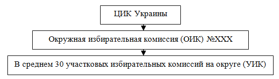
Схема 16. Вертикаль комиссий
Окружная избирательная комиссия образуется Центральной избирательной комиссией не позднее чем за 62 дня до дня голосования [118, п. 1, ст. 27].
Субъектами представления кандидатур в состав окружных избирательных комиссий являются: политическая партия, депутатская фракция текущего созыва, зарегистрированная в аппарате Верховной Рады Украины; политические партии — субъекты избирательного процесса [118, п. 2, 2.1, 2.2, ст. 27]. У кандидата-самовыдвиженца нет возможности предоставить кандидатуры в члены ОИК, но для обхода этого можно использовать различные маневры, устно договорившись с существующими политическими силами.
Рассмотрим некоторые полномочия окружной избирательной комиссии (ОИК). Она обеспечивает подготовку и проведение выборов депутатов в одномандатном округе и в общегосударственном округе в пределах одномандатного округа; регистрирует доверенные лица кандидатов в депутаты; образует участковые избирательные комиссии; обеспечивает изготовление информационных плакатов, а также плакатов, которые разъясняют порядок голосования и ответственность за нарушение законодательства; регистрирует официальных наблюдателей; устанавливает итоги голосования в общегосударственном округе в пределах одномандатного округа и в одномандатном округе; признает голосование на избирательном участке недействительным [118, п. 2.1, 2.4, 2.5, 2.11, 2.14, 2.16, 2.17, ст. 31].
Участковая избирательная комиссия образуется соответствующей окружной избирательной комиссией не позднее чем за 31 день до дня голосования [118, п. 1, ст. 28]. Право представления кандидатур в состав участковых избирательных комиссий имеют субъекты представления, отмеченные в ч. 2 ст. 27 данного Закона, и кандидаты в депутаты в соответствующем одномандатном округе [118, п. 4, ст. 28].
Рассмотрим некоторые полномочия УИК: проводит подсчет голосов избирателей на избирательном участке, составляет протоколы о подсчете голосов на избирательном участке и передает их в окружную избирательную комиссию; признает недействительным голосование на избирательном участке при наличии обстоятельств, предусмотренных ст. 92 Закона [118, п. 2, 2.9, 2.10, ст. 32].
Избирательный участок. Подготовка организации и проведение голосования, а также подсчет голосов избирателей осуществляется на избирательных участках, которые образуются Центральной избирательной комиссией или окружной избирательной комиссией [118, п. 1, ст. 19]. Избирательный участок является общим для выборов в общегосударственном и одномандатных округах [118, п. 5, ст. 19]. Избирательный участок может быть обычным, специальным или заграничным [118, п. 2, ст. 19].
Члены комиссий. В состав окружной избирательной комиссии или участковой избирательной комиссии обычного или специального избирательного участка могут входить избиратели, которые проживают в пределах территории Украины [118, п. 1, ст. 26]. Нужно помнить, что избиратель может входить в состав лишь одной избирательной комиссии [118, п. 2, ст. 26]. Выполнение полномочий члена избирательной комиссии происходит на платной основе, оплачивается в размере и в порядке, установленном Кабинетом министров Украины по предоставлению Центральной избирательной комиссии за счет средств Государственного бюджета Украины, выделенных на подготовку и проведение выборов депутатов [118, п. 1, ст. 47].
Для формирования участковых избирательных комиссий на округе (30 УИК[42]) от кандидата в среднем, с точки зрения автора данной книги, нужно подать 90 претендентов (по три человека в комиссию) для участия в работе участковых избирательных комиссий на должности председателя, заместителя, секретаря и члена комиссии. В результате жеребьевки каждый из них получит определенную роль и должность.
Официальные наблюдатели. В избирательном процессе могут принимать участие официальные наблюдатели от партий, от кандидатов в депутаты и от общественных организаций… [118 п. 1, ст. 77]. То есть если в вопросе формирования комиссий кандидат-самовыдвиженец несколько ограничен, то в вопросах создания инструмента контроля в день голосования он способен создать мощный механизм противодействия фальсификациям. С рациональной точки зрения, в среднем на участке достаточно двух наблюдателей от кандидата, то есть на округе это где-то 60 человек. Хотя существуют и другие точки зрения.
В полномочия официальных наблюдателей входит следующее:
1) находиться на избирательных участках во время голосования, наблюдать из любого расстояния за действиями членов избирательной комиссии;
2) делать фото- и киносъемки, аудио- и видеозаписи, не в нарушение при этом тайны голосования;
4) присутствовать с соблюдением требований Закона на заседаниях участковых и окружных избирательных комиссий;
5) обращаться к соответствующей избирательной комиссии или в суд относительно устранения нарушений Закона в случае их выявления;
8) получать копии протоколов о передаче избирательных бюллетеней, о подсчете голосов и установлении итогов голосования [118 п. 9, 9.1, 9.2, 9.4, 9.5, 9.8, ст. 78].
Нужно знать, что официальный наблюдатель от партии, кандидата в депутаты, общественной организации не имеет права: безосновательно вмешиваться в работу избирательной комиссии, производить действия, которые нарушают законный ход избирательного процесса или мешают членам избирательной комиссии осуществлять свои полномочия [118 п. 10.1, ст. 78]. В случае нарушения официальным наблюдателем от партии, кандидата в депутаты, общественной организации требований ч. 10 этой статьи избирательная комиссия делает ему предупреждение. В случае повторного или грубого нарушения требований ч. 10 этой статьи избирательная комиссия может лишить его права присутствовать на своем заседании [118 п. 11, ст. 78].
Обучение. Члены участковых комиссий и наблюдатели инструктируются в штабе кандидата как в индивидуальном, так и в коллективном порядке, что позволяет в дальнейшем грамотно организовать их работу в день голосования.
Иностранные наблюдатели. Официальные наблюдатели от иностранных государств и международных организаций могут вести наблюдение за ходом избирательного процесса [118 п. 2, ст. 77]. Официальный наблюдатель от иностранного государства, международной организации имеет право:
3) находиться на избирательных участках во время голосования, наблюдать за действиями членов комиссии;
4) делать фото- и киносъемки, аудио- и видеозаписи не в нарушение при этом тайны голосования;
5) после проведения выборов публично высказывать свои предложения относительно организации проведения выборов депутатов и совершенствования законодательства Украины с учетом международного опыта, проводить пресс-конференции с соблюдением требований законодательства Украины [118 п. 6, 6.3, 6.4, 6.5, ст. 79]. При этом официальные наблюдатели от иностранных государств и международных организаций не имеют права вмешиваться в работу избирательной комиссии, производить действия, которые нарушают законный ход избирательного процесса [118 п. 10, ст. 79].
Доверенные лица кандидата регистрируются ЦИК Украины [118 п. 2.4, ст. 31]. Кандидат в депутаты в одномандатном округе имеет право определить из числа избирателей своих доверенных лиц (не больше трех) [118 п. 3, ст. 76]. Полномочия доверенных лиц достаточно обширны — они представляют кандидата; для более глубокого изучения данного вопроса необходимо смотреть Закон Украины [118]. Чаще всего в доверенные лица от кандидата предлагаются юристы и те, кто отвечает за ход избирательной кампании.
Замечания.
— Существует представление, что работа членов участковых комиссий имеет основное или даже первостепенное значение на выборах. Проблема в том, что если за кандидата не голосуют, то кто и как будет сидеть в участках — не имеет никакого значения.
— Подлинное противодействие фальсификациям в участковых комиссиях осуществляют не члены комиссий, а наблюдатели. Когда наблюдатели — случайные люди, которые не отвечают за результат кампании на своем участке. Возможно, что такие лица будут с безразличием смотреть на процесс голосования. В последующем, при подсчете голосов, также будут невнимательно относиться к происходящему. Все это приведет к тому, что над процессом голосования и его исходом будет потерян всякий контроль со стороны кандидата и его штаба. Поэтому обязательными условиями являются: 1) личная заинтересованность наблюдателя в результатах голосования на участке; 2) подготовка и профессионализм; 3) личные качества. Формы заинтересованности бывают разные, но при их обязательном существовании никаких фальсификаций не будет, а если и будут, то предупреждение председателя комиссии или членов со стороны наблюдателя о «годах лишения свободы» сразу охлаждает любой пыл и желание осуществлять беззаконие.
— Встречается, что различные «специалисты по выборам» после получения слабого или отрицательного результата рассказывают о том, что у них «украли голоса». Таким образом, на этот факт списывается недостаточная работа в округе до дня голосования. Когда за кандидата голосуют, а наблюдатели четко контролируют процесс, то результат будет.
— Не стоит преувеличивать значение иностранных наблюдателей. Действительно, такие наблюдатели не заангажированы и беспристрастны, но и их участие в выборах, чаще всего, это «трудовая повинность». Кроме того, иностранные наблюдатели не знают культурной специфики, языка и до конца не понимают происходящего. При любых эксцессах они дистанцируются от происходящего.
— Необходимо помнить о специальных участках — знать их специфику и понимать, как с ними работать.
— Работа с комиссиями и в них — это важный вопрос, но случается, что штаб кандидата понимает выборы только в таком формате. Нужно знать, что работа с комиссиями — это не «работа в реальном секторе производства голосов».
Данный раздел в большей степени — это общая компиляция законодательства о выборах, поэтому материала недостаточно для знания обо всех юридических тонкостях избирательного законодательства, для точного понимания и качественного сопровождения кампании, нужно обращаться к узкоспециализированным профессионалам — юристам, которые работают в сфере избирательного права.
5. ЗАВЕРШЕНИЕ ИЗБИРАТЕЛЬНОЙ КАМПАНИИ ⇑
Третий и последний этап кампании длится где-то две недели до дня голосования и завершается через две недели после голосования. На этой фазе выборов необходимо:
— провести окончательный социологический замер рейтингов кандидатов, что позволит подытожить работу, которая была осуществлена на округе в предыдущие три месяца;
— организовать заключительные акции для данной избирательной кампании;
— обеспечить контроль голосования на участках и защитить полученный результат;
— в последующем расформировать организацию и подвести окончательные итоги выборов.
5.1. Завершающее социологическое исследование ⇑
На завершающем этапе необходимо провести социологическое исследование в округе для оценки эффективности проведенной кампании — это позволит проверить работу полевой структуры и рейтинг кандидата. Такую работу можно организовать силами подразделений штаба либо нанятой группой внешних специалистов. Опрос может существовать в двух форматах: телефонное или полевое социологическое исследование.
1) Телефонный опрос — это чаще всего проверка работы полевой организации, позволяющая выявить результативность деятельности полевых структур.
2) Социологический опрос в виде полевого анкетирования осуществляется для выявления рейтингов баллотирующихся кандидатов. Для его проведения нужно определить достаточное количество респондентов (в среднем это примерно от 500 до 2000 тыс. опрашиваемых), также нужно понимать, какой слой или группы избирателей необходимо проверить среди 160 тыс. голосующих на округе. В случае когда невозможно определить победителя, сложно правильно организовать работу в последние две недели, поэтому для выяснения нужно в корне менять стратегию социологического исследования.
Основные пункты (вопросы) социологической анкеты:
1. Пол респондента (м/ж).
2. Возраст респондента. Указывается либо число полных лет, либо принадлежность к определенной возрастной группе (например, от 18 до 35, от 36 до 55, старше 55).
3. Уровень образования. Как правило, вопрос является закрытым и содержит следующие варианты ответов: ниже среднего; среднее; среднее специальное; незаконченное высшее; высшее; отказ от ответа.
4. Род занятий респондента. (5 ответов).
5. Доход респондента (5 ответов).
6. Пойдете на выборы: да/нет.
7. Почему? (5 ответов).
7. Кандидат, за которого будете голосовать (А… G).
8. Почему будете голосовать за А…G: нравится программа, личность; нет альтернативы, другой ответ.
В результате исследователи должны предоставить аналитические таблицы 5, 6 :
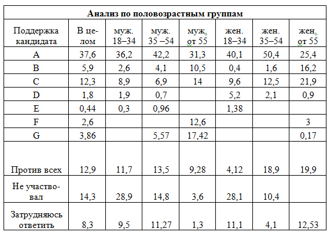
Таблица 5. Анализ по половозрастным группам
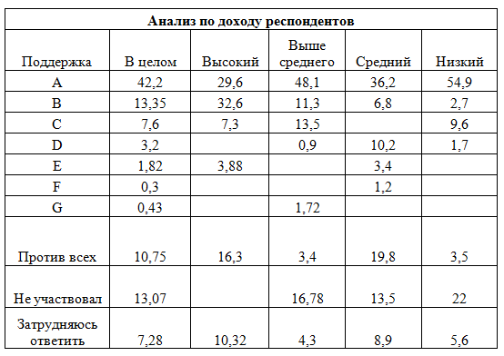
Таблица 6. Анализ по доходу респондентов
Содержание опросов и аналитические выводы могут иметь любое оформление и зависят от таланта, знаний и воображения социологов.
5.2. Лавирование ⇑
После исследования общественного мнения, оценки рейтингов кандидатов можно определить эффективность кампании и правильность выбранной стратегии. В результате всегда есть возможность в последние две недели подкорректировать результат либо принять экстренные меры для изменения ситуации. Назовем их.
— Усилиться за счет своей группы избирателей — активизировать своего избирателя, выявить скрытые резервы и голоса, точно определив, за счет чего это можно сделать.
— Добрать из смежных группу, выявив пограничные группы электората, которые не вовлекались в кампанию, после чего надо искать подходы для вовлечения их в процесс голосования. Также нужно обратить внимание на тех, кто поддерживает кандидатов, которые претендуют на четвертое и ниже места в таблице рейтингов, голосование этих избирателей за непроходных претендентов могут изменить результаты выборов.
— Отобрать у оппонента голоса из его группы — э то можно осуществить с помощью обещаний для электората, который голосует за оппонента. Но нужно помнить: то, за что голосует группа оппонента (технологии, обещания и т. д.), может противоречить взглядам избирателей кандидата. Преступая подобную черту, можно проиграть выборы.
— Атаковать электорат оппонента или понизить количество желающих прийти на выборы из группы оппонента — для этого нужно изменить отношение тех, кто поддерживает его, к нему и происходящему.
— Попытаться организовать другой тип кампании, то есть поменять в корне стратегию предвыборной гонки, что является фактически неосуществимой затеей.
— Блефовать по полной. Договариваться с третьим или вторым против первого и наоборот, то есть нужно создавать союзы и контрсоюзы, но для этого необходимо быть первым, вторым или третьим претендентом, а также иметь доказательное исследование, которое вскрывает победителя данных выборов. Такая ситуация предполагает различные комбинации соглашений, но нужно всегда точно оценивать их суть. То есть не всегда то, о чем договорились, будет осуществлено на практике. Кроме того, возможно, что тот, с кем идут переговоры, одновременно сговорился с оппонентом. Причем не всегда данные социологических исследований позволяют точно определить ситуацию, поэтому возможна неправильная оценка исходных данных и последующий союз, который приведет к поражению.
— Уходить с выборов — срочно завершать избирательную кампанию, полностью сворачивая работу для дальнейшей минимизации расходов и ненужных последствий. Иногда, рассматривая послевыборную перспективу, нужно оставить определенный организационный минимум, который позволит не уходить с выборов, опозорившись в глазах общественности и местной политической элиты. При этом нужно осознавать последствия ухода кандидата с выборов до их завершения, каковыми могут быть: полное дальнейшее выбывание из политики всеукраинского уровня; потеря морального авторитета среди тех, кто поддерживал кандидата; уход к другим политикам команды, что также может иметь последствия, которые изначально невозможно определить в момент экстренного расформирования штаба.
Примерно в это же время возникает необходимость реакции на контрагитацию, черный пиар и предполагаемые фальсификации в день голосования со стороны оппонентов.
5.3. Организация работы в день голосования ⇑
Для организации работы в день голосования нужна слаженная работа всего коллектива и схождение в одну точку усилий всех участников. В день голосования весь штаб становится единым субъектом. В течение дня кандидату желательно лично объехать все участки, посмотреть на ход голосования, поговорить с председателями участковых комиссий. Необходимо оценить моральное состояние наблюдателей и предоставленную им в комиссиях возможность для наблюдения за ходом голосования.
Структуры, участвующие в работе в день голосования, и их функции.
— Штаб собирает информацию о предварительных итогах. Для концентрации информации надлежит создать единый документ (сводную БЗД[43] сохранения результатов). Кроме того, нужно построить вертикальную структуру контроля за голосованием в штабе, то есть: назначить ответственного и дежурных; распределить работу среди работников штаба (на каждого дежурного по 5–10 участков); выдать каждому список телефонов его наблюдателей; в течение дня общение по телефону с наблюдателями и оценка ситуаций на участках; оперативная реакция на происходящее; подведение итогов; оформление протоколов с результатами голосования.
— Представители в ОИК обеспечивают ход голосования на всем округе и защищают результат.
— Члены комиссий обеспечивают процесс голосования на участках и проводят итоги на них.
— Наблюдатели от кандидата и союзников контролируют честность выборов на обычных и спецучастках, а также обеспечивают контроль голосования на дому.
— Юристы занимаются обжалованием правонарушений.
— Доверенные лица представляют совокупные интересы кандидата в ЦИК, ОИК и УИК.
— Группа для проведения экзит-пола или независимого социологического исследования предварительных итогов голосования. Состав структуры: 30 участков; по два человека на участок; 2–3 часа работы, итого 60 человек. Результаты такого опроса позволят в некотором смысле предостеречь от вброса и фальсификаций. Информация экзит-пола может быть широко обнародована. Чаще всего для организации значимого экзит-пола необходимо договориться с серьезным социологическим агентством, которое может обнародовать результат исследования во влиятельных СМИ.
— Выездная мобильная группа с правом съемки процесса голосования и правом входа на участки: юрист, журналист, общественник, представитель кандидата. На избирательных участках в день голосования могут присутствовать представители средств массовой информации. Приглашение представителей СМИ в наиболее «горячие» точки позволяет предотвратить или, по крайней мере, зафиксировать серьезные нарушения [18, с. 204]. Основная цель существования такой мобильной группы — требование соблюдения честности выборов.
— Кандидат активно объезжает округ и участвует в различных процедурных действиях, которые обеспечивают честность выборов.
— Дежурные автомобили для экстренных выездов и оперативного перемещения по округу.
Документы и базы данных – это: сводный документ итогов голосования; сводная папка(и) протоколов с мокрой печатью; база нарушений; бланки заявлений о нарушениях избирательного законодательства (должны получить все наблюдатели); возможно, бланки протоколов участковой избирательной комиссии об итогах голосования — для заполнения в случае отсутствия множительной техники в участковой комиссии; карты комиссий; список телефонов членов комиссий и наблюдателей; список телефонов ответственных в штабе.
Обучение до дня голосования членов комиссий наблюдателей и работников штаба, как себя вести в день голосования, для организации в последующем слаженности и полного взаимодействия.
Организация работы в день голосования.
1) Открытие участков и начало голосования. Голосование проводится в день выборов с 8 часов до 20 часов без перерыва [118 п. 1, ст. 85]. Наблюдатели сообщают в штаб информацию об открытии участков, о количестве протоколов и количестве избирателей, внесенных в списки для голосования.
2) Экзит-пол на участках.
3) В 10–11 часов наблюдатели сообщают в штаб о предварительных результатах, а также о нарушениях. В штабе ведется предварительная оценка происходящего.
4) Голосование на дому. Для его обеспечения, по возможности, один из наблюдателей должен ходить вместе с членами комиссии по домам. Избирателю, который внесен в список избирателей на избирательном участке, но по возрасту, в связи с инвалидностью или по состоянию здоровья не способен передвигаться самостоятельно, участковая избирательная комиссия предоставляет возможность голосовать по месту его пребывания [118 п. 1, ст. 86].
5) 8–20 часов. Реакция на нарушения. Работа мобильных групп. Юристы при необходимости подают жалобы в окружную избирательную комиссию, идет подготовка к возбуждению возможных судебных исков и обжалованию будущих результатов.
6) 14–17 часов — наблюдатели сообщают в штаб о предварительных результатах, а также о нарушениях. Штаб фиксирует ситуации на округе.
7) Закрытие участков — за 5 минут до 20 часов глава участковой избирательной комиссии объявляет об окончании голосования и закрытии избирательного участка в 20 часов [118 п. 12, ст. 85].
8) Наблюдатели сообщают в штаб о своевременном закрытии участков и о погашении открепительных талонов, а также о количестве неиспользованных бюллетеней.
9) Подведение итогов голосования на участках: подсчет голосов. В этот момент возможна фальсификация или эксцессы, которые приведут к непризнанию результатов выборов.
10) Сообщение по телефону наблюдателями результатов голосования в штаб. Получение членами комиссий и наблюдателями протоколов с мокрой печатью.
11) Сдача протоколов председателями УИК в окружную комиссию. «Встреча» данных из УИК представителем кандидата в ОИК.
После подведения итогов голосования на участках наблюдатель должен сообщить в штаб следующую информацию: число избирателей, внесенных в список голосования; число избирателей, принявших участие в голосовании, в том числе на дому; число действительных избирательных бюллетеней; число недействительных избирательных бюллетеней; число проголосовавших за каждого кандидата; число испорченных бюллетеней; число оставшихся неиспользованных бюллетеней [70].
Замечание. Помним, что в день голосования решается результат всей кампании, поэтому необходимо сделать все, чтобы волеизъявление прошло честно. В день голосования с помощью законных методов: широкой огласки, резонанса, жалоб, действий журналистов, юристов, общественников, наблюдателей, членов комиссии и т. д. — надлежит пресечь все приготовленные заготовки по фальсификации выборов.
5.4. Завершение избирательной кампании: демобилизация ⇑
Для завершения избирательной кампании обычно необходима одна-две недели для совершения следующих действий.
Демобилизация и расчет с полевой структурой и работниками штаба имеют первостепенное значение. «Нерасчет» с теми, кто работал на выборах, является обычной практикой как для победителей, так и для проигравших. Последствия «нерасчета» для кандидата могут быть какие угодно, важным является то, что на следующих выборах, скорее всего, ему лучше не появляться в округе. Также надлежит помнить о возможном непризнании голосования в округе и о назначении перевыборов.
Группа и команда, участвовавшая в выборах:
— Расформировывается частично либо полностью. При полном расформировании необходимо устранить все последствия возможных обид. Обязательно нужно создать архив документов и произведенных действий.
— При частичном расформировании начинается подготовка к будущим выборам, то есть оставшаяся команда приступает к осуществлению следующего краткосрочного или долгосрочного проекта.
— Команда вместе с кандидатом-победителем участвует в исполнении им обязанностей депутата ВР Украины в качестве помощников и т. д.
Расчет с членами комиссий и наблюдателями. После окончания голосования наблюдатели и члены комиссий должны принести в штаб протоколы с мокрыми печатями и получить расчет. Предположим теоретически, что в вышестоящей комиссии протоколы переписываются и вводятся цифры, не имеющие никакого отношения к итогам голосования. В этом случае копии протоколов с подписями членов комиссии и мокрыми печатями позволят сложить свой результат голосования и понадобятся для судебных разбирательств.
Завершающие избирательные процедуры.
— Окончательная защита результата — возбуждение исков против правонарушений, суды, сверка того, что в протоколах, и того, что было получено предварительно. В этот момент можно выявить, где была произведена фальсификация. Например, если по мобильному телефону наблюдатель сообщил один результат, а в окончательном протоколе существует значительное расхождение, то это автоматически предполагает фальсификацию — уже после подсчета в участковой комиссии.
— Непризнание результатов на некоторых участках. Группа юристов должна быть готова к тому, что на некоторых участках может быть не признан результат. Согласно Закону Украины [118], участковая избирательная комиссия в случае, когда невозможно достоверно установить результаты волеизъявления избирателей, может признать голосование на избирательном участке недействительным [118 п. 1, ст. 92], но только исходя из определенных обстоятельств, обозначенных в пунктах 1.1.,1.2, 1.3, ст. 92 Закона [118].
— Оглашение результатов выборов на мажоритарном округе и вступление выигравшего кандидата в права депутата. Согласно процедуре, Центральная избирательная комиссия на своем заседании на основании протоколов окружных избирательных комиссий об итогах голосования в одномандатных округах, в том числе с пометкой «Уточненный», не позднее как на пятнадцатый день со дня голосования устанавливает результаты выборов депутатов в соответствующих одномандатных округах, о чем составляет протоколы [118 п. 1, ст. 99].
— Непризнание результатов выборов во всем округе и назначение повторных выборов в одномандатном округе не позднее чем через тридцать дней [118, п. 5, ст. 16] после дня непризнания выборов.
— Несостоявшиеся выборы. В случае когда в одномандатном округе по окончании срока регистрации кандидатов не зарегистрировано ни одного кандидата в депутаты или если в выборах принимал участие один кандидат и за него отдали голоса менее половины голосовавших избирателей, выборы в этом округе считаются несостоявшимися [118 п. 1, ст. 62].
— Повторное голосование. Если в одномандатном округе наибольшее и в то же время одинаковое количество голосов набрали два или более кандидатов в депутаты, Центральная избирательная комиссия принимает решение о проведении в округе повторного голосования по этим кандидатурам [118 п. 1, ст. 103]. Повторное голосование проводится не позднее чем в двухнедельный срок со дня принятия Центральной избирательной комиссией решения о проведении повторного голосования с соблюдением требований данного Закона [118 п. 3, ст. 103]. Повторные выборы проводятся в одномандатном округе в случае, когда выборы в соответствующем одномандатном округе признаны не состоявшимися, или если лицо после его избрания не приобрело депутатский мандат в порядке, установленном данным Законом [118 п. 1, ст. 104]. В случаях, предусмотренных Законом [118], избирательный процесс включает также такие этапы: повторное голосование; подсчет голосов избирателей и установления итогов повторного голосования [118, п. 6, 6.1, 6.2, ст. 11].
Замечание. Завершение избирательной кампании — это подведение окончательных итогов, защита результатов и демобилизация. Кроме того, в некоторых случаях — повторные выборы или повторное голосование. К каждому из этих действий нужно отнестись со всей серьезностью. Часто случается, что команда настолько «выдыхается» до голосования, что после него все пускается на самотек. Нужно таким образом распределить время и силы, чтобы и в завершающий период быть в состоянии защитить свой результат.
6. СПЕЦПРОЕКТЫ ⇑
Часто не хватает времени и должной подготовки для организации дополнительных действий по противодействию незаконным или «серым» технологиям, которые осуществляются на выборах. Подобное под силу только сильным командам. К тому же это требует дополнительных финансовых затрат и организационных усилий. Если на округе оппоненты изначально слабые и можно просчитать, что победа будет несложной, то можно и отказаться от контрпроектов по защите.
— «Серые» проекты могут быть направлены на понижение рейтинга, а в некоторых случаях — на полную дискредитацию кандидата.
— Законность подобных проектов находится под большим вопросом, соответственно, возможна их оценка и дискредитация с помощью общественных и журналистских инструментов.
— Некоторые действия по противодействию необходимо совершать в обязательном порядке — для страховки и упреждения действий оппонентов.
— Нужно помнить, что иногда только угроза возможности применения некоторых технологий позволяет успокоить ярых оппонентов и заставить их воздержаться от применения запрещенных методов ведения кампании.
— Часто, еще до выборов, можно в неформальной обстановке договориться с оппонентами о запрете применения того, что выходит за рамки дозволенного.
— Юристы, обеспечивающие кампанию, должны вести подготовку материалов и заниматься разбирательствами с незаконными методами ведения политической борьбы.
6.1. Черный пиар, грязные технологии и слухи ⇑
Черный пиар — методы и способы продвижения своего кандидата какой-либо партией или группой лиц за счет дискредитации других претендентов противоправными или (и) нарушающими нормы общественной морали приемами [47]. Кроме понятия «черный PR» в современной литературе используется понятие «грязные технологии» — это способ понижения и дискредитации соперника и оппонентов, сбор на них компромата, невзирая ни на какие моральные и даже правовые нормы [47]. Сущность их — «облить грязью», выставить в нелицеприятном свете, внедрить в сознание ненависть и отвращение [47]. Черный пиар часто можно классифицировать, как: клевету и оскорбление, распространение заведомо ложной информации — все это может повлечь за собой правовую оценку.
Цель и методы — это навешивание ярлыков и прямые оскорбления [111]. Манипуляция общественным мнением и провокация с целью вывести из себя соперников. Конспирология, инсинуации, намеки, разоблачения. Манипуляция с результатами социологических опросов с помощью СМИ [47].
То, с чем на практике сталкиваются участники избирательной кампании «нижнего» уровня, это расклейка и раздача компромата на кандидата; роспись на заборах и фасадах «чернухи» (малоэффективная); расклейка неотклеивающихся самоклеек на машинах от лица оппонента; приглашение избирателей от лица оппонента на несуществующее мероприятие; ложный подкуп избирателей от лица оппонента с передачей фактов и материалов в избирательные комиссии; обзванивание избирателей с провокационным требованием или просьбой от оппонента; агитация от лица оппонента за заведомо отрицательные идеи; ложное нападение или преследование самого себя; участие провокаторов в пресс-конференциях и на встречах оппонентов [122]. Все перечисленное — это только малая доля того, с чем можно столкнуться на практике.
Слухи — это сообщения, добавляющие «свежую» информацию относительно некоего лица, события, вызывающие интерес у окружающих. Виды слухов, предлагаемые К. С. Жуковым [47]: слухи-желания — разочарование по поводу несбывшегося желания; слухи-пугала — возбуждение у объекта тревоги и неуверенности; разобщающие агрессивные слухи — цель: вызвать разлад, ненависть и разрушить социальные связи.
Теоретически возможные слухи. Кандидат К строит свою кампанию на ворованные или украденные его спонсорами деньги у честного труженика». Успехи кандидата Х стали возможны только благодаря зомбирующему влиянию СМИ. Победа Х обеспечена, поскольку он может сам, а также через своих подручных оказывать влияние на избирателя через зарплату, распределение финансовой помощи. Кандидат Х — известный коррупционер, все, чего он достиг, вызрело на порочных связях бюрократии — взятках и кумовстве. Кандидат Х подкупил всех во время выборов [47].
Компромат в Интернете. Интернет в последнее время часто используется как площадка для распространения компромата и ложных слухов. Если на телеканал, печатное издание и даже зарегистрированное интернет-издание, а также любой другой официальный (не анонимный) источник информации можно подать в суд либо воздействовать какими-либо превентивными методами, призвав к ответственности за распространение клеветы, то Интернет, являясь анонимным средством коммуникации, обладает значительными возможностями для распространения различной, в том числе и ложной, информации. Конечно, положительные стороны Интернета не стоит недооценивать. Интернет сегодня — это единственно существующая (неконтролируемая на 100%) свободная информационная среда, в которой очень часто распространяется действительно независимая информация. К тому же Интернет позволяет понять те настроения народа, которые не вскрывают официальные СМИ.
Оценка грязных технологий и законодательство.
— Организаторы кампании должны предусмотреть меры информационного противодействия, чтобы в дальнейшем, учитывая фактический уровень конкурирующей коммуникации, минимизировать ее негативные последствия [35].
— Нужно знать, что лица, виновные в нарушении законодательства о выборах депутатов, привлекаются к криминальной, административной или другой ответственности в порядке, установленном законом [118, п. 1, ст. 114].
— Закон [118] запрещает распространение заведомо недостоверных или клеветнических сведений о партии — субъекте избирательного процесса или о кандидате в депутаты, недостоверный или клеветнический характер которых установлен в судебном порядке [118 п. 9, ст. 74].
Замечания.
— Из-за краткосрочности кампании на практике не находят себе
применения различные приемы психологической войны, поэтому манипуляция и слухи не всегда работают, хотя их все же не стоит недооценивать.
— Не всегда правовая оценка является крайним способом противодействия, иногда моральное и общественное порицание бывает более результативным способом противодействия черному пиару.
— Лучше побеждать честно, потратить отведенное время на прямую агитацию и не осуществлять то, чего не нужно делать, а чаще всего и нерезультативно.
— Агитация против конкурентов разрешена [118] и не является запрещенным способом работы с избирателями, но нужно помнить, что многое в политической борьбе находится на грани.
6.2. Административный ресурс ⇑
Административный ресурс — это деструктивная политическая технология, с помощью которой органы государственной власти воздействуют на избирательный процесс. В законодательстве Украины не существует четкой дефиниции понятия «административный ресурс», определяются только некоторые его механизмы (превышение полномочий и т. д.) [90]. По экспертным оценкам, админресурс присутствует на выборах во всех странах СНГ, разница только в степени применения [78].
Использование административного ресурса приводит к лишению граждан возможности свободно выбирать [88]. По убывающей считается, что со стороны бюрократической корпорации в управлении выборами задействованы в разной степени все органы власти. На самом видном месте находятся избирательные комиссии; за ними стоят суды и прокуратура. Ну и, конечно, немалая роль отводится законодателю, устанавливающему правила игры [17, с. 21].
По оценкам А. Ю. Бузина [18], основную роль в искажении итогов голосования на выборах играет неравный доступ претендентов к СМИ, причем не только и не столько в период избирательной кампании, как до ее начала. В отличие от такого на выборах, максимально приближенных к избирателю, значительную роль играют более примитивные методы — отказы в регистрации, подкуп, прямые фальсификации как досрочного, так и обычного голосования [18, с. 81].
Рассмотрим законодательство [118]. Нужно знать, что равенство прав и возможностей кандидатов в депутаты, партий — субъектов избирательного процесса принимать участие в избирательном процессе обеспечивается [118, п. 5, ст. 3]:
— запрещением вмешательства органов государственной власти, органов власти Автономной Республики Крым и органов местного самоуправления в избирательный процесс, за исключением случаев, предусмотренных данным Законом [118, п. 5.2, ст. 3];
— равным и беспристрастным отношением органов государственной власти, органов власти Автономной Республики Крым и органов местного самоуправления, их служебных и должностных лиц к кандидатам в депутаты, партий — субъектов избирательного процесса [118, п. 5.3, ст. 3].
Кроме того, избирательный процесс осуществляется на принципах: непредубежденности органов государственной власти, органов власти Автономной Республики Крым, органов местного самоуправления, судов, предприятий, заведений, учреждений и организаций, их руководителей, других должностных и служебных лиц к партиям — субъектам избирательного процесса, кандидатам в депутаты [118, п. 2.6, ст. 11].
Проанализируем предлагаемые Д. Парамоновым [100] три стиля применения административного ресурса:
— Стиль «нокаутер» — выявление оппонента, доказательство принадлежности его к альтернативному центру власти и неотразимый удар по наиболее уязвимым точкам избирательной кампании.
— Стиль «силовик» — силовой прессинг кандидатов, внушение им мощности и безнаказанности государственной машины.
— Стиль «игровик» является самым тонким и искусным стилем применения АР[44]. Цель — техническое превосходство, победа по очкам на всех этапах кампании [100].
Административная подготовка к выборам — это назначение выборов в удобное для администрации время [87] и сокращение сроков избирательной кампании. После чего другие кандидаты не имеют времени и сил для реализации своих кампаний [90]. Это также использование скрытых и дополнительных источников финансирования еще до избирательной кампании на различные формы подкупа [89]. При этом, согласно Закону [118], запрещено использование кандидатами в депутаты, партиями — субъектами избирательного процесса во время финансирования предвыборной агитации других средств, кроме средств избирательных фондов [118, п. 5.4, ст. 3]. Но действие Закона [118] не относятся к тому, что происходит до выборов.
Избирательная кампания администрации базируется на структурах исполнительной власти, что очень удобно и достаточно эффективно. Финансовые, информационные, материальные, кадровые ресурсы косвенно используются для обеспечения предвыборной гонки [17, с. 21]. Исполнительной власти для проведения выборов не хватает специальных знаний по организации агитационной кампании, она также в силу своей природы не обладает достаточной креативностью для проведения эффективной агитационной кампании. Поэтому администрация нанимает на выборы коммерческих политтехнологов, иногда даже предоставляя им на время государственные или муниципальные должности [17, с. 32]. На поверхности административной избирательной кампании находятся обычные избирательные штабы. В них могут работать практикующие частным образом политтехнологи, юристы и «полевики», разрабатывающие стратегию и тактику избирательных кампаний. Работа этих штабов проходит в тесном контакте с администрацией, которая и обеспечивает основные успехи кампании [17, с. 21].
Преимущества должностного и служебного положения — это использование на выборах административными кандидатами помещений; телефонной и других видов связи; транспортных средств; преимущественного доступа к СМИ; агитационных выступлений на мероприятиях, устраиваемых администрацией; публикация поздравлений за счет органов власти, но от своего имени [18, с. 181–182].
Работа с избирателями с помощью административного ресурса:
— Прямой подкуп избирателей [87] — чаще всего это подкуп пенсионеров и малоимущих [90].
— Косвенный подкуп избирателей — это бюджетная помощь, социальные льготы перед выборами, повышение заработных плат, пенсий и различные выплаты [87; 90].
— Прямое давление на избирателей — это контроль за голосованием студентов, военнослужащих, заключенных, админработников, милиционеров; телефонный опрос с требованием голосовать за нужного кандидата [88]. При этом избирателям надлежит широко разъяснять, что, согласно Закону [118], участие граждан Украины в выборах депутатов является добровольным. Никто не может быть принужден к участию или неучастию в выборах [118, п. 1, ст. 5]. Кроме того, выборы депутатов являются свободными. Гражданам Украины обеспечиваются условия для свободного формирования своей воли и ее свободного выявления при голосовании [118, п. 1, ст. 6].
Рассмотрим основные способы преимущественного использования СМИ и специфические формы агитации.
— Оценивая опыт Российской Федерации, А. Ю. Бузин [18] указывает, что на практике агитационная кампания в СМИ начинается приблизительно за несколько месяцев до начала избирательной кампании: на федеральных выборах — за полгода и более, на региональных — за 3–4 месяца, на муниципальных — за 1–2 месяца. Наиболее интенсивный период этой кампании приходится как раз на период, когда агитация в СМИ запрещена [18, с. 187]. При этом региональные и местные СМИ еще до начала кампании начинают информирование граждан об успехах местной администрации; происходит резервирование площадей под внешнюю агитацию [87].
— Обычная картина такова: административные СМИ пестрят информацией о поддерживаемом администрацией кандидате и полным отсутствием каких-либо упоминаний о конкурентах [18, с. 100].
— Несбалансированное использование времени на ТВ в пользу различных политических сил и кандидатов [86] также является распространенным способом использования административного ресурса на выборах.
— «Традиционными способами агитации являются расклейка листовок, развешивание плакатов, установка агитационных щитов. По этой части у администрации имеются серьезные рычаги для оказания преференций поддерживаемым партиям и кандидатам. В результате может оказаться так, что наглядная агитация одной из политических сил окажется не просто преобладающей, а подавляющей» [18, с. 141]. Подобное позволит просто устранить всех, кто не готов ответить на такие методы проведения избирательной кампании.
— Важнейшим приемом, который позволяет государственным СМИ нарушать равноправие кандидатов, является подача агитационного материала как информации или аналитики. Объективно трудно, если невозможно, отделить агитацию от информации. Запрет на информирование граждан, выражение журналистом своей точки зрения противоречил бы действующей Конституции [18, с. 95].
Рассмотрим некоторые положения Закона [118], декларирующие равноправие проведения агитации для всех кандидатов.
— Подобное обеспечивается равным и беспристрастным отношением средств массовой информации к кандидатам в депутаты, партий — субъектов избирательного процесса [118, п. 5.5, ст. 3].
— Официальные сообщения в период избирательного процесса о действиях кандидатов в депутаты, которые являются должностными лицами органов государственной власти, связанные с выполнением ими должностных (служебных) полномочий, не принадлежат к предвыборной агитации. Такие официальные сообщения не должны содержать комментарии агитационного характера, а также видео-, аудиозаписей, киносъемок, фотоиллюстраций о действиях отмеченных лиц как кандидатов в депутаты [118 п. 4, ст. 68].
— Нужно знать, что участие в предвыборной агитации запрещается: органам исполнительной власти, органам власти Автономной Республики Крым и органам местного самоуправления, правоохранительным органам и судам [118 п. 1, 1.1, ст. 74].
Административная работа с избирательными комиссиями . Как свидетельствует А. Ю. Бузин, это подтасовка результатов в самой избирательной комиссии во время избирательной кампании [17; 88]. А также предварительное создание «положительного» состава избирательных комиссий различного уровня [87]. Избирательная комиссия — это коллегиальный орган, поэтому совсем не обязательно «наполнять» его на 100% своими сторонниками, то есть достаточно иметь процентное большинство, либо чтобы область интересов большинства коллегиального органа была достаточно ограниченной и известной манипуляторам [17, с. 23]. При этом часто участковые избирательные комиссии на таких выборах не играют значительной роли [17, с. 28].
Применение административного ресурса против оппонентов. Административный ресурс включает широкий набор легальных, почти легальных и незаконных методов давления на оппонентов [86; 90]. До выборов самых опасных оппонентов просят не принимать участие в выборах тем или иным способом [90] — это может быть, например, давление на бизнес [88].
Во время выборов и до них возможны: незапланированные проверки органами экономических и других субъектов оппонентов и их союзников; давление на окружение; аресты и необоснованные обвинения кандидатов и их родственников либо ответственных лиц из команды; давление на союзников кандидата; проблемы с регистрацией и отказ в регистрации; снятие с выборов тем или иным способом вплоть до возбуждения уголовного дела против кандидата [90; 100]. Во время выборов это также может быть: прямое вмешательство в работу избирательного штаба — проверки со стороны различных инстанций; создание трудностей при работе штабов, например, отключение света и отопления, обыски и опечатывания [90; 100].
Проигрыш кампании администрацией чаще всего автоматически влечет за собой непризнание результатов выборов и их отмену под тем или иным предлогом, что является практически законным мероприятием [100]. После этого возможны перевыборы на округе.
Противодействие административному ресурсу.
— Преодоление страха — обязательное условие, без которого невозможно противодействие административному ресурсу. Речь не идет «о преодолении» как «о бессмысленном прыжке в бездну». «Самоубийство» и «борьба» — разные формы проявления человеческой натуры. Преодоление страха подразумевает некий ряд осознанных действий и мер, которые позволяют прогнозировать возможные угрозы и переводить их в легальную площадь. Если нельзя справиться с «угрозой» на эмоциональном, а затем на рациональном уровне, то подавленность станет настолько глубокой, что кампания изначально будет проиграна. Человек — не животное, он может преодолеть страх, обратив его в другие формы, и самое главное — в «осознанное».
— Что кандидат может потерять? Важнейшим условием успешного противодействия административному ресурсу является понимание того, что можно потерять в результате участия в избирательной кампании, в которой оппонент обладает неограниченным административным ресурсом. Тем, что можно потерять, может быть что угодно. Рассмотрев все это, надлежит принять решение об участии или выбытии из такой предвыборной гонки. Нужно изначально предполагать, что публичная политика требует ограничений и лишений, с ними необходимо либо соглашаться и быть политиком, либо не заниматься политикой вовсе, так как половинчатость приносит только поражение в политической борьбе.
— Коллективная безопасность — это одно из обязательных условий организации избирательной кампании, на которой оппонент-претендент обладает неограниченным АР. Проще всего преодолеть страх и создать легальность противостояния, что означает создать широкую площадку коллективной поддержки. Для этого нужно обратить внимание на различные альтернативные местные элитарные силы, которые исторически в регионе противостоят существующей власти. Это группы и политики, которые ранее были во власти; но не получили ее и были отвергнуты ею, те, кто хочет, но не может что-то сделать. Это представители различных политических, идеологических, общественных, бизнесовых, религиозных и т. д. групп [100]. Общаясь с ними, попытайтесь создать мощное, противостоящее АР лобби. В последующем со стороны оппозиции возможно: «нападение» на кандидата власти, при координации ими общих действий; «клонирование» кандидатов; соглашения кандидатов и т. д. [100].
— Публичность и известность являются важными условиями успешного противостояния административным формам давления. Для этого необходимо создать независимые СМИ или искать возможности выхода на уже существующие [89]. После чего возможно создание мощных информационных поводов для освещения работы кандидата в СМИ. В последующем – это контрходы и постоянная критика оппозиционным кандидатом АР с требованиями соблюдать законность, честность и т. д. В крайнем случае, это перевод избирательной кампании в личный конфликт, что позволяет и увеличить рейтинг, и избежать различных форм давления [89]. Но нужно помнить о последствиях в случае проигрыша кампании.
— Широкая общественная поддержка — это включение в избирательную кампанию общественных институтов: общественных организаций, правозащитников, прессы. В последующем — воздействие через них на общественность: жителей округа, членов комиссий, наблюдателей, различных государственных и гражданских институтов и т. д. Такое влияние — это этическое, моральное, правовое осуждение происходящего с целью предотвращения фальсификации выборов. Такое порицание может привести к тому, что избиратели, члены комиссий и т. д. не будут идти против совести, и возникнет противодействие на нижнем уровне, это когда нижнее звено будет слушать приказы сверху, но делать по-своему или даже вопреки сказанному.
— Правовое противостояние. Необходимо использовать существующее законодательство и требовать, чтобы власть его соблюдала. Для этого нужны: значительная юридическая служба; соблюдение неадминистративным кандидатом требований законодательства; последовательное освещение нюансов избирательной кампании в СМИ.
— Чего боятся «носители» АР? Те, кто использует АР, боятся: публичности, своего прошлого, народного возмущения, пристального внимания прессы к их деятельности. Подобный страх также является лучшей защитой от АР. Угроза возможного разоблачения и освещения АР кампании в международных, всеукраинских и местных СМИ может снизить значение проводимых выборов для действующей власти.
— Использование против административного оппонента АР ресурс более высокого уровня либо апелляция к другим ветвям власти. Правда, «понятно, что обращение к каким-либо ветвям власти, отличным от исполнительной ветви, будет успешным ровно настолько, насколько последние являются самостоятельными и независимыми» [17, с. 21].
Замечания.
— Нужно знать, что в Законе [118] убран нижний порог явки; отменено голосование против всех; запрещены блоки [87]. Все это может позволить засчитать любой результат выборов.
— У многих кандидатов вообще сложилось мнение о том, что вся избирательная кампания, то есть выдвижение, регистрация и собственно предвыборная агитация, — это умение договориться. В таком представлении борьба идет не за голоса избирателей, а за поддержку кандидата элитой и администрацией [100]. Подобное не всегда является истиной.
— Несмотря на все попытки СМИ и законодательства о выборах придать административному ресурсу статус нарушений избирательного права, тема административного ресурса, как бы это ни выглядело парадоксальным, на сегодняшний день является самой закрытой [100]. Оценивая такие высказывания, нужно все же быть честным и говорить о том, что даже те оппозиционеры, которые часто противостоят административному ресурсу, вчера были у власти и использовали против своих конкурентов те же методы.
— Законодательное определение АР, гласность не могут полностью решить проблему существования административного ресурса. Для этого необходимо изменение политического и социального климата, речь идет о развитии гражданского общества и его институтов, то есть гражданского самосознания избирателей.
6.3. Фальсификация выборов ⇑
Фальсификация выборов — это изменение результата прямого волеизъявления с помощью различных прямых или непрямых действий в рамках законодательства или в его обход. Возможна фальсификация до выборов, в ходе избирательной кампании и после выборов. Д. Парамонов [101] предлагает классифицировать все прошедшие политические выборы с точки зрения применения на них различных методов фальсификации по трем видам: честные, то есть такие, где нет никаких фальсификаций, выборы с угрозой или вероятностью фальсификации и сфальсифицированные выборы [101]. Нужно также учитывать и существующую связь между возможными фальсификациями и админресурсом[45], потому что для осуществления фальсификации необходима уверенность в безнаказанности.
Фальсификация до дня голосования.
1) Прямая фальсификация — это банальный подкуп избирателей. Может осуществляться и до выборов, и после выборов [72, с. 130].
2) Непрямая фальсификация — это косвенный подкуп избирателей, который может принимать различные формы. Например, в Польше не считается подкупом избирателей открытие так называемых политические кафе, как правило, в крупных городах (Варшава, Краков). Избиратели в период выборов могут есть сосиски и пить пиво за счет партии [78]. Подкуп избирателей может принимать форму найма агитаторов. Избиратель получает оплату за свою работу и до заключения договора, и после выборов [72, с. 133]. Ряд кандидатов осуществляют это, работая с пенсионерами, предлагают (бесплатно, со скидкой) продукты, услуги, юридическую помощь и т. д. [72, с. 130]. К различным формам непрямой фальсификации можно отнести: снижение явки; регистрацию липовых кандидатов-однофамильцев (клонирование двойников); выдвижение на электоральное поле противника множества сильных кандидатов и т. д.
3) Провокация — это достаточно распространенный вид фальсификации. Основные формы — подкуп избирателей от имени кандидата-противника; неоплаченные агитационные материалы (часто используются для снятия с выборов кандидатов-оппонентов); запрещенные пожертвования в избирательный фонд кандидата; использование иных денежных средств, помимо средств избирательного фонда; «призыв к
свержению конституционного строя» или «разжигание национальной или социальной розни» от имени конкурентов [100]. Все это позволяет снять ненужного кандидата с выборов или дискредитировать его в глазах общественности.
Фальсификации во время голосования.
— «Карусель» — в день голосования из участка выносится бюллетень, который заполняется за его пределами, а затем выносится новый [72, с. 133–134]. Для предотвращения такого нужно в первую очередь широко разъяснять избирателям, что каждый из них голосует на выборах лично, передача избирателем права голоса любому другому лицу запрещается [118, п. 1, ст. 8]. Избиратель не имеет права передавать свои избирательные бюллетени другим лицам. Получение избирательных бюллетеней от других лиц (кроме уполномоченного члена избирательной комиссии, который выдает избирательные бюллетени), поощрения или вынуждение избирателей к передаче избирательного бюллетеня другим лицам путем подкупа, угроз или иным способом запрещается [118 п. 7, ст. 85]. Кроме указанного, для предотвращения «каруселей» нужна профессиональная работа наблюдателей на участках в день голосования.
— Подвоз избирателей на участки — это организация «экскурсий» для пенсионеров на избирательные участки [72, с. 133], подобное является достаточно распространенным способом косвенного влияния на свободное волеизъявление.
Фальсификация после голосования — это фальсификация результатов голосования в окружной и Центральной избирательной комиссиях.
Противодействие фальсификациям.
— Берите «гречку» и т. д. но не голосуйте — обещайте что угодно, но в день голосования проявите сознательность и осуществите свободный политический выбор. Практика показывает, что большинство избирателей не знают о невозможности проверки их волеизъявления кем-либо (особенно старшего возраста), поэтому на них возможно различное информационное давление, причем они не предполагают, что такая «тайность» определяется даже не Законом [118], а самими условиями голосования в день выборов. Избиратель должен точно знать и понимать, что у тех, кто как бы контролирует, нет никакой действительной возможности проверить его выбор.
— Методы противодействия фальсификациям непосредственно в участковых избирательных комиссиях сводятся к грамотному наблюдению за процессом голосования и при подсчете голосов [18, с. 203], а также это широкая разъяснительная работа среди членов комиссий и наблюдателей «об уголовной ответственности за любые выявленные незаконные действия на выборах». Согласно Закону [118], применение насилия, угроз, обмана, подкупа или любых других действий, которые препятствуют свободному формированию и свободному выявлению воли избирателя, запрещается [118, п. 2, ст. 6].
— Для противодействия фальсификации надлежит широко вовлекать в избирательный процесс общественные и государственные институты: правоохранительные органы, журналистов, общественников и правозащитников, а также фиксировать подобные факты.
6.4. Юридическое сопровождение, журналистское и общественное лобби ⇑
Юридическая служба должна обеспечить юридическое сопровождение выборов. Юристы оценивают с точки зрения соблюдения избирательного права весь процесс организации избирательной кампании. Это, например, подача документов на регистрацию кандидата; правовое обеспечение деятельности штаба; правовая характеристика текста и содержания листовки; отслеживание нарушений в ходе кампании; подача жалоб и исков о фактах фальсификации в день и после дня голосования и т. д.
Рассмотрим схематически юридическую службу (схема 17) .
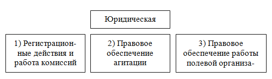
Схема 17. Юридическое обеспечение
1) Регистрационные действия и работа комиссий. То есть это регистрация кандидата с учетом сроков выдвижения; организация регистрации и обучения членов комиссий; контроль во время голосования; защита результатов кампании в судах и т. д.
2) Правовое сопровождение агитации в округе и юридическое обеспечение работы со СМИ. Оценка агитационной продукции и ее составление согласно существующим правовым нормам, и т. д.
3) Юридическое обеспечение работы полевой организации, то есть правовое решение конфликтов на местности, а также предотвращение действий, из-за которых могут снять с выборов.
Группы, которые сопровождают публичные действия и противодействуют фальсификации до выборов, во время них и после:
— Журналистская группа. В нее могут входить: корреспондент(ы), фотограф(ы). оператор(ы) и т. д.
— Объединенная группа от штаба; ее можно сформировать частично из работников штаба, а также из местных привлекаемых журналистов и правозащитников. Обязательно необходимо выделить человека, который сможет создать журналистское и общественное лобби и распространение информации в СМИ.
— Независимая объединенная группа общественников может иметь разнообразную структуру и состоять из различных представителей. Например, в нее могут входить: представители общественных организаций; лицо, способное организовать физическую поддержку при применении прямого насилия против группы; представители кандидата; доверенные лица; юристы и пресса. В группу также могут войти депутаты разного уровня.
Необходимо подготовить канал мгновенного или своевременного распространения информации среди общественности на сайтах, а также в Интернете, на ТВ и в других СМИ разного уровня и тематического содержания.
Материалы и заготовки — это статьи, репортажи с места событий, бланки заявлений и жалоб.
Результаты действий групп — это публичные заявления, просьбы и жалобы; оперативные пресс-конференции и «круглые столы»; судебные иски.
Замечание.
Профессиональные объединенные группы позволяют оперативно распространять информацию в обществе о возможных правонарушениях, что может вызвать общественный резонанс, ставя под сомнение (при фальсификации результата) легитимность выигрыша того или иного кандидата. Иногда действия групп могут вызвать отказ от предполагаемой фальсификации. В отдельных случаях возможно непризнание выборов на отдельном участке либо в целом округе.
7. СМЕЖНЫЕ ВОПРОСЫ, СВЯЗАННЫЕ С ИЗБИРАТЕЛЬНОЙ КАМПАНИЕЙ НА ОКРУГЕ ⇑
7.1. Безопасность в избирательной кампании ⇑
Для обеспечения безопасности избирательного процесса необходима: должная оценка угроз и атак; поиск способов их предотвращения; профилактика и минимизация рисков.
Ключевые объекты, которые могут подвергнуться нападению:
— личность кандидата (честь, достоинство, здоровье, имущество и т. д.);
— родственники кандидата и члены организации;
— аналитические и информационные центры;
— узлы и центры управления;
— экономические и финансовые объекты (собственность в широком смысле).
Для защиты необходим совокупный объект, способный обеспечить защиту от угроз, состоящий из разных специалистов, способный реагировать на вызовы. Рассмотрим структуру службы безопасности (схема 18) .
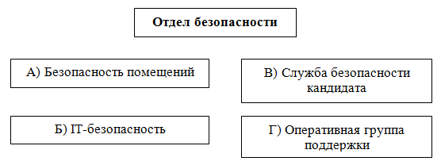
Схема 18. Безопасность на округе
Основные угрозы.
— Общая слежка и наблюдение за кандидатами, штабами, командами.
— Сбор компромата на кандидата (оружием становятся даже записи обычных телефонных переговоров [70, с. 199]).
— Сбор информации о действиях в ходе кампании (соперниками будут использованы графики поездок и выступлений [70, с. 202]).
— «Братки» и криминал (наследство 1990-х) [70, с. 201].
— Институты власти и органы правопорядка.
— Информаторы в окружении и штабе.
— «Независимые» журналисты (рэкет со стороны «добросовестных» журналистов) [70, с. 204].
— Различные «группы поддержки» оппонентов.
Замечания.
— Затраты на безопасность зависят от сложности выборов. Надо проанализировать, не преувеличивая и недооценивая возможные риски. Переоценка — это лишние затраты, а недооценка может иметь последствия для избирательной кампании.
— Нужно использовать существующие органы правопорядка и безопасности, а иногда и уже сформированные частные структуры.
— Необходимо помнить об информационной безопасности. Достаточно важным объектом атаки является служебная информация, которая находится на различных носителях.
— В самом начале кампании нужно определить минимальные действия, которые изначально позволят избежать многих неприятных ситуаций.
7.2. Имитация и дезинформация ⇑
Во время избирательного процесса необходимо скрыть от оппонентов действительность происходящего и в штабе. Для этого нужно организовать определенные действия по имитации и дезинформации конкурентов.
При этом достаточно сложно скрыть подготовку к проведению избирательной кампании, но для этого в мировой практике выработан достаточно простой метод: нужно создать несколько параллельных групп и процессов, а противник пусть думает и решает, какой из них является основным, что — имитацией, а что из поступающей к нему информации — дезинформацией. Все процессы и группы будут «фонить», поэтому определить, что же происходит на самом деле, станет невозможно. Это также заставит оппонентов тратить дополнительные средства и время впустую.
Дезинформация — это введение противоположной стороны в заблуждение с помощью проецирования в среду противоречивых, схожих или противоположных данных и действий. Оценим практическую сторону или то, что применяется на выборах:
— Ложные: планы, схемы, бюджеты и документы. Аналитический отдел, его «подготовленная» и «профессиональная» часть создают массу того, что не имеет никакого отношения к действительной избирательной кампании, и что-то из этого становится доступно конкурентам через различные каналы.
— Ложные и параллельные штабы, структуры и подразделения.
— «Стратегические» совещания — это открытые собрания с привлечением различных лиц для анализа «планов» и действий.
— Ложные договоренности с «союзниками», а также слив информации через всевозможные каналы — неправды и полуправды.
Имитация — это создание параллельных процессов, а также маскировка и сокрытие высоких результатов, темпов и эффективности деятельности. Например, имитация агитации служит для сокрытия реальной полевой кампании. Возможна имитация любого типа кампаний и применяемых технологий, что позволяет замаскировать содержание действительной избирательной кампании.
Замечания.
— При наличии свободных людей в оперативных паузах между основными актами избирательного процесса менеджер избирательной кампании или начальник штаба при желании, используя даже существующие ресурсы, ставя в известность только кандидата и доверенных лиц, могут организовать массу дезинформации и имитации, давая достаточно «разумные поручения» работникам штаба и организации в целом, что позволит увеличить в разы шансы на победу. Созданные муляжи начинают жить своей жизнью, об их копировании оппонентами, о потраченных ими суммах средств на них все узнают уже после избирательной кампании.
— Всегда необходимо помнить о разумном пределе, который заключается в том, что вся имитация должна отнимать минимум внимания, средств и времени.
7.3. Нецелевое использование средств ⇑
Избирательный процесс связан с проблемой нецелевого использования средств – это погрешность и проблема в любой кампании, которые можно оценить еще до начала выборов, внимательно проанализировав бюджет и сценарий избирательной кампании.
Бывают два типа нецелевых затрат.
1) Просто неэффективно потраченные средства — в ненужные акции, отделы, опросы, макулатуру, митинги, дискотеки и т. д., которые в конечном итоге не принесли результат. Это может быть связано с неправильной оценкой эффективности или изначальным непониманием «проблемы результативности» какого-либо действия в процессе избирательной кампании.
2) Специально напрасно потраченные средства:
— Это все то, что уже описано в пункте 1 , но эти ресурсы изначально планировалось потратить впустую.
— Откаты на «макулатуре» и медиа. В случае когда нельзя полностью устранить подобную проблему, нужно хотя бы минимизировать неэффективность агитационных программ. Например, вообразим, что избиратель очень плохо будет реагировать на настенные часы с именем кандидата и т. п. Но отвечающий за агитацию, даже понимая отрицательность этого, предлагает изготавливать агитационный материал из-за «определенной» материальной заинтересованности.
— «Потраченное» на зарплаты. Когда кандидат лично не понимает, что происходит в штабе и в полевой организации, или оставляет на самотек эту проблему, возникают злоупотребления, связанные с выдачей ЗП[46]. В таких случаях она либо задерживается, либо не выдается в полном объеме. Конечно, на такое упущение можно закрыть глаза, но в результате такая организация сработает на 50% эффективности либо вообще может спровоцировать проигрыш кандидата.
— Полевая организация в виде муляжа, или случай существования полевой структуры только на бумаге. Когда такая организация составляет 1–5%, это не влияет на общий ход полевой кампании, но когда такой муляж занимает уже 50% структуры, о победе на выборах можно забыть. Простейшим способом устранения этого являются живые встречи с участниками организации. Конечно, лучший способ «лечения» — поручить полевую организацию человеку, который лично по тем или иным причинам заинтересован в победе.
— Средства на аренду штаба, оргтехнику и т. д. — один из способов нецелевого использования средств.
— «Сопутствующие» затраты — различные несуществующие расходы во время избирательной кампании.
Фиктивные затраты при многоуровневой феодальной структуре организации на округе. Когда кандидата «бесплатно» поддерживают различные обязанные ему «помощники». Возникают ситуации нецелевого использования средств. Чаще всего это имитация затрат, возникающая при многоуровневой системе штабов. Представим ситуацию, когда кандидат разбил территорию на пять микро-штабов и распределил обязанность финансировать их работу между своими людьми. Это могут быть местные депутаты, бизнесмены, администраторы и т. д. В таком случае происходят следующее ситуации:
— Когда это собственные средства, ответственный «рисует» масштабную смету о выполненной работе и затратах и предъявляет ее кандидату для оправдания своего пребывания на территории. В результате растет сумма лжи, о якобы проделанной работе.
— Все средства, которые поступают сверху, распределяются помощниками кандидата по той же схеме, как это описано в пункте 2 данного раздела.
Кандидаты часто закрывают глаза на такое, как «феодальный суверенитет сюзеренов», а также различные условия и обстоятельства, которые не позволяют вообще поднимать вопрос о произошедшей имитации. В результате сумма лжи растет, а после голосования сложно понять, кто дал результат.
Замечания.
— Нецелевое использование средств в некоторых случаях — это основной фактор, из-за которого кандидаты проигрывают избирательные кампании. Нужно проанализировать все источники нецелевого расходования ресурсов и попытаться устранить то, что влияет на конечный результат.
7.4. Риски и ошибки при проведении избирательной кампании ⇑
Риски в избирательной кампании — это прежде всего сумма событий, обстоятельств или неблагоприятных действий, которые могут привести к поражению на выборах. Оценим только некоторые.
— Виртуальность организации. Крайний случай — это когда вместо действительной полевой структуры в наличии присутствуют только отчеты и списки[47].
— Ложные технологии и воровство в штабе и структурах[48].
— Ложные или недостаточные социологические исследования, в результате — неправильная оценка рейтингов кандидатов и настроений избирателей округа. Это может быть связано с тем, что либо опрос проводился «на бумаге», либо глубина выборки не соответствовала задачам, или сектор исследования не показал настроения тех, кто ходит на выборы. Бывает, что социсследования не могут выявить действительное положение вещей в случае скрытой полевой работы какого-либо кандидата.
— Сдача агитации на макулатуру. Достаточно распространенный случай, представленный в двух вариантах, непреднамеренно — когда на раздачу агитации не выделяются средства, преднамеренно — это ответственное лицо либо его подчиненные просто выбрасывают агитацию.
— Могут снять с выборов.
— Могут не признать результаты выборов.
Управление рисками — это анализ и последующая минимизация рисков с устранением возможных причин. Если не существует способ для точного прогнозирования, то ключом к управлению становятся бдительность и реагирование на возникающие тенденции. Для преодоления рисков нужна стратегическая и тактическая гибкость, а также уникальность при решении каждой, отдельно взятой ситуации.
Сумма лжи. Ложь явная и неявная, а также неправильная оценка присутствует в любом деле. Особенно это опасно на войне. Большие последствия ложь имеет также и на выборах. Когда ложь суммируется, то возникает ощущение «сверхрезультативности», а в реальности у кандидата рейтинг равен нулю. Ложь может поступать снизу от полевых структур, от работающих в штабе: социологов; аналитиков, рекламистов (переоценка воздействия на аудиторию агитационных сообщений) и т. д.
Ошибки выбора вектора кампании могут возникнуть на этапе планирования. Это, например, изначально неправильное понимание ситуации на округе, в последующем, по ходу кампании в результате движения в ложном направлении ошибки будут нарастать, что в конечном итоге приведет к поражению.
Сумма ошибок. В процессе осуществления избирательной кампании постоянно возникают ошибки. Их нужно либо исправлять сразу, либо исправлять последующими действиями (перекрывать). Сумма ошибок может привести к неминуемому поражению. Типовыми ошибками являются:
— переоценка своих сил и недооценка противника;
— стереотипность мышления, то есть существующие выборы воспринимаются с точки зрения предыдущих кампаний (ложный опыт);
— ошибочным также является мышление через призму затрат, то есть «кто потратил больше средств — у того и результат». На самом деле надо мыслить через призму победы или поиска решений и действий, которые позволяют выиграть.
ПОСЛЕСЛОВИЕ ⇑
Политические выборы, как и военная операция — вещь достаточно непредсказуемая. Сегодня у полководца есть войска, ресурсы, техника, территория, а после сражения, если он разбит, — ничего. И наоборот, если выиграл, в некотором смысле приобретаешь все «ресурсы» противника. С подобной трудностью или непониманием сущности избирательной кампании сталкиваются участники из всех других сфер жизни. Например, в экономике такой фатальный проигрыш либо скачок вперед бывает «не такой резкий». Нужно предполагать подобную нагрузку еще до вступления в выборы, это позволяет не получить в конце непоправимый удар либо психологическую травму. Заранее «пропущенные через себя» последствия выигрыша/проигрыша позволяют на практическом уровне сделать все для того, чтобы выиграть выборы.
Рассмотрим возможные шаги после завершения.
— Выйти из психологического состояния, связанного с участием в выборах.
— Оценить избирательную кампанию: ход, окружение, команду, оппонентов и понять причину выигрыша/проигрыша.
— Решить, что делать с обязательствами и обещаниями, которые были даны тем, кто поддерживал кандидата во время избирательной кампании.
— В случае выигрыша нужно подумать о выполнении обещаний, заложенных в избирательной программе. Часто об этом вопросе вспоминают только в конце срока избрания, но правильным считается решение его еще в самом начале.
— Приступить к стратегическому выбору следующих шагов, то есть понять необходимость и форму дальнейшего участия в политической деятельности.
— Также в случае выигрыша приступить к выполнению полномочий депутата.
В конце нужно сказать о возможных перспективах отмирания той формы политической игры, которая существует сегодня. Для этого уже сейчас надо думать о проблеме выбора долгосрочных политических перспектив.
Напоследок нужно отметить, что знания и опыт каждого человека ограничены, поэтому всем присуща некоторая переоценка и одновременно недооценка существующего опыта и исследований. Соответственно книга не является полной и всеохватывающей, она раскрывает только некоторые аспекты и проблемы политических выборов и создана под определенным углом, то есть освещает авторскую точку зрения. Для уточнения и основательного изучения некоторых проблем нужно обращаться к специализированным исследованиям, выясняя каждый вопрос в отдельности.
СПИСОК ЛИТЕРАТУРЫ ⇑
1. Аксенова К. А. Реклама и рекламная деятельность: Конспект лекций / К. А. Аксенова. – М: Приор–издат, 2005. – 96 с.
2. Алескеров Ф. Т. Выборы. Голосование. Партии / Ф. Т. Алес-керов, П. Ортешук. – М.: Академия, 1995. – 208 с.
3. Алтунян А. Г. Анализ политических текстов: учеб. пособ. / А. Г. Алтунян. – М.: Логос, 2006. – 384 с.
4. Аронсон Э. Эпоха пропаганды: Механизмы убеждения, повседневное использование и злоупотребление / Э. Аронсон, Э. Р. Пратканис; Пер. с англ. – СПб.: Прайм–ЕВРОЗНАК, 2003. – 384 с.
5. Ахременко А. С. Политический анализ и прогнозирование: учеб. пособ. / А. С. Ахременко. – М.: Гардарики, 2006. – 333 с.
6. Бебик В. М. Інформаційно-комунікаційний менеджмент у глобальному суспільстві: психологія, технології, техніка паблік рилейшнз: [Моногр.] / В. М. Бебик. – К.: МАУП, 2005. – 440 с.
7. Бебик В. М. Політологія для політика і громадянина: [Моногр.] / В. М.Бебик – К.: МАУП, 2003. – 424 с.
8. Бендас Т. В. Психология лидерства: учеб. пособ. / Т. В. Бендас. – СПб.: Питер, 2009. – 448 с.
9. Березкина О. П. Политический консалтинг: учебник для студ. высш. учеб. заведений / О. П. Березкина. – М.: Академия, 2008. – 336 с.
10. Березин В. М. Массовая коммуникация: сущность, каналы, действия / В. М. Березин – М.: РИП–холдинг, 2003. – 174 с.
11. Берн Э. Лидер и группа: о структуре и динамике организации и групп / Эрик Берн; [пер. с англ. А. Грузберга]. – М.: Эксмо, 2009. – 512 с.
12. Бернейс Э. Пропаганда / Эдвард Бернейс; Пер. с англ. – М.: Hippo Publishing, 2010. – 176 с.
13. Блінов Є. Протидія використання нелегітимних політичних технологій: український і міжнародний досвід [Електронний ресурс] / Є. Блінов // Державне управління та місцеве самоврядування. – 2010. – № 4. – Режим доступу до журн.: http://www.nbuv.gov.ua/por-tal/soc_gum/Du-ms/2010_4/ 10bemumd.pdf
14. Блюм М. А. PR-технологии в коммерческой деятельности: учеб. пособ. / М. А. Блюм, Н. В. Молоткова. – Тамбов: Изд-во Тамб. Гос. техн. ун-та, 2004. – 104 с.
15. Большая актуальная политическая энциклопедия / Под общ. Ред. А. Белякова и О. Матвейчева. – М.: Эксмо, 2009. – 412 с.
16. Брегеда А. Ю. Основи політології: навч. посіб. / А. Ю. Брегеда; [вид. 2–ге, перероб. і доп.]. К.: КНЕУ, 2000. − 312 с.
17. Бузин А. Ю. Административные избирательные технологии: московская практика / А. Ю. Бузин. – М.: Панорама, 2006. – 192 с.
18. Бузин А. Ю. Административные избирательные технологии и борьба с ними / А. Ю. Бузин. – М.: Панорама, 2007. – 271 с.
19. Бузин А. Ю. Справочник краткосрочного наблюдателя российских выборов / А. Ю. Бузин; [3–е изд., пер. и доп.]. – М.: ГОЛОС, 2011. – 208 с.
20. Бухаркова О. В. Имидж лидера: технология создания и продвижения. Тренинговая программа. / О. В. Бухаркова, Е. Г. Горшкова. – СПб.: Речь, 2007. – 222 с.
21. Бучин М. А. Ресурси виборчої кампанії та особливості їх використання в Україні: автореф. дис. на здобуття наук. ступеня канд. політ. наук: спец. 23.00.02 «Політичні інститути та процеси» / М. А. Бучин. − Львів, 2007. − 20 с.
22. Васильцов С. И. Думские партии в системе социально политических институтов / С. И. Васильцов, С. П. Обухов. – 2006. – М.: Русский летописец, 2007. – 136 с.
23. Ващенко К. Сутність та особливості політичного аналізу / К. Ващенко // Вісн. Львівського ун-ту. – 2008. – № 11. – С. 169–177.
24. Величко О. В. Формування іміджу політика за допомогою телебачення / О. В. Величко // Наук. запис. Ін–ту Журналістики. – 2009. – № 34. – С. 93–97.
25. Верстюк С. Президентські вибори–99 в Україні: економетричний аналіз деяких факторів успіху / С. Верстюк // МАҐІСТЕРІУМ. – 2002. – № 10. – С. 21–29.
26. Виборча школа. Порадник для тренера. – Львів: ЛМГО, 2003. – 128 с.
27. Викентьев И. Л. Приемы рекламы и PUBLIC RELATIONS / И. Л. Викентьев. – Ч. 1. – СПб.: ТРИЗ–ШАНС, 1995. – 228 с.
28. Гелей С. Д. Політологія: навч. посіб. / С. Д. Гелей, С. М. Рутар; [4–те вид., перероб. і доп.]. – Львів: Світ, 2001. – 384 с.
29. Герзон М. Лидерство через конфликт: Как лидеры-посредники превращают разногласия в возможности / Марк Герзон; [пер. с англ. П. Миронов]. – М.: Манн, Иванов и Фербер, 2008. – 344 с.
30. Головатий М. Ф. Політична психологія: навч. посіб. / М. Ф. Головатий. – К.: МАУП, 2001. – 136 с.
31. Гончаров В. Э. Современное политическое консультирование: монография / В. Э. Гончаров – СПб.: ИВЭСЭП, 2007. – 219 с.
32. Гончарук В. П. Особливості трансформації виборчої системи сучасної України: автореф. дис. на здобуття наук. ступеня канд. політ. наук: спец. 23.00.02 «Політичні інститути та процеси» / В. П. Гончарук . − К., 2001. – 16 с.
33. Горелов А. А. Политология в вопросах и ответах: учеб. пособ. / А. А. Горелов. – М.: Эксмо, 2009. – 256 с.
34. Грант Р. М. Современный стратегический анализ. 5–е изд / Р. М. Грант; [пер. с англ. Под ред. В. Н. Фунтова]. – СПб.: Питер, 2008. – 560 с.
35. Грачев М. Н. Политическая коммуникация: теоретические концепции, модели, векторы развития / М. Н. Грачев. – М.: Прометей, 2004. – 328 с.
36. Гундарин М. В. Книга руководителя отдела PR / М. В. Гундарин. – СПб.: Питер, 2006. – 368 с.
37. Гэд Т. Создай свой бренд / Т. Гэд, А. Резенкрейц; [пер. с англ. под ред. И. В. Андреевой]. – СПб.: Нева, 2004. – 192 с.
38. Дафт Р. Л. Уроки лидерства / Р. Л. Дафт; при участии П. Лейн; [пер. с англ. А.В. Козлова; под ред. проф. И.В. Андреевой]. – М.: Эксмо, 2006. – 480 с.
39. Дебор Г. Общество спектакля / Ги Эрнест Дебор; [пер. с франц. Б. Неман]. – М.: Логос, 2000. – 220 с.
40. Докторов Б. З. Реклама и опросы общественного мнения в США: История зарождения. Судьбы творцов / Б. З. Докторов. – М.: ЦСП, 2008. – 628 с.
41. Дюверже М. Политические партии / Морис, Дюверже; [пер. с франц.]. – М.:Академический проект, 2002. – 560 с.
42. Европейский выбор или снова «особый путь»? / под общ. ред. И.М. Клямкина. – М.: Фонд «Либеральная миссия», 2010. – 448 с.
43. Евстафьев В. А. Введение в медиапланирование: учеб. пособ. для начинающих медиапланеров / В. А. Евстафьев, В. Н. Яссонов. – М.: Би, 1998. – 70 с.
44. Евтихов О. В. Стратегии и приемы лидерства: теория и практика / О. В. Евтихов. – СПб.: Речь, 2007. – 238 с.
45. Емельянов С. М. Теория и практика связей с общественностью. Вводный курс / С. М. Емельянов. – СПб.: Питер, 2005. – 240 с.
46. Ехнич А. П. Электоральное пространство сквозь призму политического рынка / А. П. Ехнич // Вісник СевДТУ. – 2008. – № 91. – С. 223–226
47. Жуков К. С. Азбука избирательной кампании / К. С. Жуков, А. Д. Карнышев. – М.: ИМА–пресс, 2001. – 328 с.
48. Заяць Н. В. Виборча система України: сучасний стан і перспективи розвитку / Н. В. Заяць // Проблеми правознавства та правоохоронної діяльності – 2011. – № 2. – С. 15–20.
49. Зиновьев А. А. Идеология партии будущего / А. А. Зиновьев. – М: Эксмо, 2003. – 240 с.
50. Иванченко А. В. Российские выборы от перестройки до суверенной демократии / А. В. Иванченко, А. Е. Любарев. – М.: Аспект Пресс, 2006. – 222 c.
51. Кабин Дз. В. Формування іміджу політичного лідера в засобах масової комунікації в процесі виборчої кампанії / Дз. В. Кабин // Наук. запис. Ін-ту Журналістики. – 2010. – № 39. – С. 205–211.
52. Кете де Врис М. Мистика лидерства. Развитие эмоционального интеллекта / Кете де Врис, Манфред; [пер. с англ]. – М.: Альпина Бизнес Букс, 2004. – 311 с.
53. Кете де Вриес, M. Ф. Р. Лидеры, шуты и мошенники. Эссе на тему психологии лидерства / М. Ф. Р. Кете де Вриес; [пер. с англ.]. — М.: Аквамариновая Книга, 2008. – 184 с.
54. Кіянка І. Сучасні політичні технології розробки програмних документів партій України та їх застосування у виборчих кампаніях на прикладі 2006–2007 років / І. Кіянка // Наук. Вісн. Ужгородського ун-ту. – 2009. – № 12. – С. 97–98.
55. Клима Р. Э. Математика выборов / Р. Э. Клима, Дж. К. Ходж; [пер. с англ.]. – М.: МЦНМО, 2007. – 224 с.
56. Кнорре К. Наружная реклама / К. Кнорре. – М.: Беретор–Пресс, 2002. – 192 с.
57. Кравченко В. И. Основы политологии: учеб. пособ. / В. И. Кравченко. – СПб.: СПбГУАП, 2001. – 128 с.
58. Кричевский Р. Л. Психология лидерства: учеб. пособ. / Р. Л. Кричевский. – М.: Статут, 2007. – 541 с.
59. Кузин Ф. А. Современный имидж делового человека, бизнесмена, политика / Ф. А. Кузин. – М.: Ось–89, 2002. – 512 с.
60. Кузнєцова С. В. Політичне лідерство: сутність та механізм формування в Україні: автореф. дис. на здобуття наук. ступеня канд. політ. наук: спец. 23.00.02 «Політичні інститути та процеси» / С. В. Кузнєцова. − К., 2002. − 19 с.
61. Кынев А. Выборы парламентов российских регионов 2003–2009: Первый цикл внедрения пропорциональной избирательной системы / Кынев, Александр. – М.: Панорама, 2009. – 516 с.
62. Лидер и его команда. Практика работы тренеров и консультантов в организациях / [под ред. Н. В. Клюевой]. – СПб.: Речь, 2008. – 208 с.
63. Льовочкіна А. М. Етнопсихологія: навч. посіб. / А. М. Льовочкіна − К.: МАУП, 2002. − 144 с.
64. Мадрига Т. Б. Особливості використання виборчих технологій у виборах до Верховної Ради України 2002 року / Т. Б. Мадрига // Гілея. – 2010. – № 30. – Режим доступу до журн.: http://www.nbuv.g-ov.ua/portal/Soc_Gum/Gileya/2010_30/Gileya30/P11_doc.pdf
65. Мадрига Т. Б. Особливості застосування виборчих технологій у парламентських виборчих кампаніях 2006–2007 рр. / Т. Б. Мадрига // Вісник ДАККіМ. – 2010. – № 1. – Режим доступу до журн.: http://www.nbuv.gov.ua/portal/soc_gum/ Vdakk/2010_1/40.pdf
66. Мадрига Т. Б. Регіональні виборчі кампанії початку ХХІ століття (на прикладі західних областей України): автореф. дис. на здобуття наук. ступеня канд. політ. наук: спец. 23.00.02 «Політичні інститути та процеси» / Т. Б. Мадрига. − Львів, 2011. – 20 с.
67. Мадрига Т. Специфіка теоретико-методологічних підходів до дослідження виборчої кампанії в українській науці / Т. Мадрига // Вісник Прикарпатського ун-ту. – 2011. – № 4–5. – С. 47–53.
68. Максакова Р. М. Вибори до органів місцевого самоврядування: проблеми теорії і практики: автореф. дис. на здобуття наук. ступеня канд. політ. наук: спец. 12.00.02 «Конституційне право» / Р. М. Максакова. − К., 2003. − 17 с.
69. Максвелл Д. Воспитай в себе лидера / Д. Максвелл; [пер. с англ. Г. И. Левитан]. – Мн.: Попурри, 2005. – 400 с.
70. Максимов А. А. «Чистые» и «грязные» технологии выборов. Российский опыт / А. А. Максимов. – М.: Дело, 1999. – 448 с.
71. Малкин Е. Политические технологии / Е. Малкин, Е. Сучков. – М.: Русская панорама, 2006. – 680 с.
72. Мальцева Н. М. Грязные избирательные технологии. Мифы и реальность / Н. М. Мальцева. – М.: Новости, 2003. – 207 с.
73. Марченко Г. Политическое консультирование в контексте интернационализации / Г. Марченко // КОСМОПОЛИС – 2005. – № 2(12). – С. 146–170.
74. Матвейчев О. А. Предвыборная кампания: практика против теории / О. А. Матвейчев, В. Ю. Новиков. – Екатеринбург: Изд–во Урал. ун-та, 2003. – 186 с.
75. Мейтус В. Политическая партия: стратегия и управление / Мейтус Виктор, Мейтус Владимир. – К.: Эльга, 2004. – 404 с.
76. Минников В. К. Политическая активность представителей различных социальных групп: дис. … канд. психол. наук: 19.00.05 / Минников Вадим Константинович. – Иваново, 2006. – 243 с.
77. Минченко Е. Н. Доклад. Технологии работы политического консультанта за рубежом / Минченко Е. Н. – М.: МИПЭ, 2004. – 26 с. – Режим доступа: http://www.minchenko.ru
78. Минченко Е. Н. Универсальные избирательные технологии и страновая специфика: опыт российских политических консультантов / Минченко Е. Н. – М.: МИПЭ, 2005. – 80 с. – Режим доступа: http://www.minchenko.ru/netcat_files/pdf/universalqnye_stranovye_tehnologii.pdf
79. Мокан В. І. Чинники ефективності виборчих технологій в Україні / В. І. Мокан // Гілея. – 2010. – № 34. – Режим доступу до журн.:http://www.nbuv.gov.ua/portal/Soc_Gum/Gileya/2010_34/Gileya34/P2_doc.pdf
80. Морозова Е. Г. Политическое консультирование и избирательный процесс / Е. Г. Морозова. – М., РЦОИТ, 2001. – 118 с.
81. Моторнюк Т. М. Виборчі технології: концептуальні інтерпретації / Т. М. Моторнюк // Гілея. – 2010. – № 32. – Режим доступу до журн.:http://www.nbuv.gov.ua/portal/Soc_Gum/Gileya/2010_32/Gileya32/P7_doc.pdf
82. Моторнюк Т. М. Виборчі технології США: специфіка та універсальність / Т. М. Моторнюк // Вісник СевНТУ. – 2010. – № 112. – С. 162–166.
83. Музыкант В. Л. Реклама в действии: история, аудитория, приемы: учеб. пособ. / В. Л. Музыкант. – М.: Эксмо, 2006. – 240 с.
84. Муштук О. З. Политология / О. З. Муштук. – М.: ММИЄИФП, 2003. – 80 с.
85. Ніколаєнко Н. О. Адміністративні ресурси: підходи до розуміння, основні парадигми / Н. О. Ніколаєнко // Гілея. – 2011. – № 44. – Режим доступу до журн.: http://www.nbuv.gov.ua/portal/So-c_Gum/Gileya/2011_44/Gileya44/P16_doc.pdf
86. Ніколаєнко Н. О. Застосування адміністративного ресурсу в контексті парламентських виборчих кампаній у сучасній Україні / Н. О. Ніколаєнко // Наукові праці. – 2011. – № 150. – С. 34–39.
87. Ніколаєнко Н. О. Застосування адміністративного ресурсу в Російській Федерації в контексті виборчих кампанії / Н. О. Ніколаєнко // Гілея. – 2011. – № 50. – Режим доступу до журн.: http://www.nbu-v.gov.ua/portal/ Soc_Gum/Gileya/ 2011_50/Gileya50/P20_doc.pdf
88. Ніколаєнко Н. О. Застосування адміністративного ресурсу у президентській виборчий кампанії 1999 року / Н. О. Ніколаєнко // Гілея. – 2011. – № 48. – Режим доступу до журн.: http://www.nbuv.go-v.ua/portal/Soc_Gum/Gileya/ 2011_48/ Gileya48/P19_do-c.pdf
89. Ніколаєнко Н. О. Методи нейтралізації використання адміністративного ресурсу / Н. О. Ніколаєнко // Гілея. – 2011. – № 45. – Режим доступу до журн.: http://www.nbuv.gov.ua/portal/Soc_Gu-m/Gileya/2011_45/Gileya45/P5_doc.pdf
90. Ніколаєнко Н. О. Форми застосування адміністративного ресурсу в контексті виборчої кампанії / Н. О. Ніколаєнко // Гілея. – 2010. – № 41. – Режим доступу до журн.: http://www.nbuv.gov.ua/po-rtal/Soc_Gum/Gile-ya/2010_41/ Gileya41/ P6_doc.pdf
91. Обозов Н. Н. Психология работы с людьми: Советы руководителю: Учеб. Пособие / Н. Н. Обозов, Г. В. Щекин; [6–е изд. Стереотип]. – К.: МАУП, 2004. – 228 с.
92. Общая и прикладная политология: учеб. пособ. / [под общей редакцией В. И. Жукова, Б. И. Краснова]. – М.: Союз, 1997. – 992 с.
93. Огилви Д. Огилви о рекламе / Д. Огилви. – М.: Эксмо, 2006. – 232 с.
94. Ожиганов Э. Н. Моделирование и анализ политических процессов: Учеб. Пособие / Э. Н. Ожиганов. – М.: РУДН, 2009. – 189 с.
95. Ожиганов Э. Н. Стратегический анализ политики: Теоретические основания и методы: учеб. пособ. для студентов вузов / Э. Н. Ожиганов. – М.: Аспект Пресс, 2006. – 272 с.
96. Олещук П. М. Співвідношення понять політична теорія та політичні технологгії: сучасні технології / П. М. Олещук // Гілея. – 2010. – № 33. – Режим доступу до журн.: http://www.nbuv.go-v.ua/portal/Soc_Gum/Gileya/2010_33/Gileya33/P3_doc.pdf
97. Ольшанский Д. В. Основы политической психологии / Д. В. Ольшанский. − Екатеринбург: Деловая книга, 2001. − 496 с.
98. Ольшанский А. С. Политический консалтинг / А. С. Ольшевский, Пеньков В. Ф. – СПб.: Питер, 2005 – 448 с.
99. Ольшевский А. С. Антикризисный PR И консалтинг / А. С. Ольшевский – СПб.: Питер, 2003. – 132 с.
100. Парамонов Д. Административный ресурс в избирательных кампаниях / Д. Парамонов, В. Кириченко. – Ростов-н/Д, 2003. – 80 с.
101. Парамонов Д. Методы фальсификации выборов / Д. Парамонов, В Кириченко. – Ростов-н/Д, 2003. – 76 с.
102. Перелыгина Е. Б. Психология имиджа: Учебное пособ. / Е. Б. Перелыгина. – М.: Аспект Пресс, 2002. – 223 с.
103. Пилипенко Г. А. Класифікація деструктивних виборчих технологій / Г. А. Пилипенко // Вісник СевНТУ. – 2009. – № 100. – С. 131–136.
104. Политический процесс: основные аспекты и способы анализа: Сборник учеб. Материалов / Под. Ред. Мелишкиной Е. Ю. – М.: ИНФРА–М, 2001. – 304 с.
105. Политологический словарь-справочник / [авторы составители: Погорелый Д. Е., Фесенко В. Ю., Филиппов К. В.] . – Ростов н/Д: Наука–Спектр, 2008. – 320 с.
106. Политология: учеб. пособ. / [под ред. А. С. Тургаева, А. Е. Хренова]. − СПб.: Питер, 2005. − 560 с
107. Политология: учеб. / А. Ю. Мельвиль [и др.]. – М. Проспект, 2004. – 624 с.
108. Политология: Хрестоматия / [сост. Проф. М. А. Василик, доц. М. С. Вершинин]. − М.: Гардарики, 2000. − 843 с.
109. Політологія: навч. посіб. / [за заг. Ред. Проф. А. М. Чернія]. – К.: Міленіум, 2010. – 374 с.
110. Поліщук І. О. Виборчі технології лідерів президентської кампанії–2010 в Україні / І. О. Поліщук // Політологічні записки. – 2010. – № 2. – Режим доступу до журн.: http://www.nbuv.gov.ua/por-tal/Soc_G-um/Polzap/2010_2/ 10piokvu.pdf
111. Поліщук І. О. Маніпуляційні технології у президентській виборчій кам-панії – 2009–2010 в Україні / І. О. Поліщук // Гілея. – 2010. – № 31. – Режим доступу до журн.: http://www.nbuv.gov.ua/por-tal/Soc_Gum/Gileya/2010_31/Gileya31/P10_doc.pdf
112. Полуэктов В. В. От двери к двери. Полевые технологии в избирательных кампаниях / В. В. Полуэктов. – М.: Русская панорама, 2002. – 240 с.
113. Попова О. В. Политический анализ и прогнозирование: Учебник / О. В. Попова. – М.: Аспект Пресс, 2011. – 464 с.
114. Почепцов Г. Г. Профессия: имиджмейкер / Г. Г. Почепцов; 2–е изд., испр. И доп. – СПб.: Алетейя, 2001. – 256 с.
115. Почепцов Г. Г. Паблік рилейшинз: Навч. Посіб. / Г. Г. Почепцов. – К.: Знання, 2000. – 506 с.
116. Прасюк О. В. Вибіркові соціологічні опитування громадян під час виборів як політична технологія впливу на процес формування електоральної громадської думки / О. В. Прасюк // Наук. вісн. ВНУ ім. Лесі Українки. – 2009. – № 23. – С. 57–60.
117. Психология лидерства: Хрестоматия / Сост. К. В. Сельчак. – Мн.: Харвест, 2004. – 368 с.
118. Про вибори народних депутатів України / Верховна Рада України; Закон від 17.11.2011, № 4061-VI – Режим доступу: http://zakon2.rada.gov.ua/ laws/show/4061-17
119. Пугачев В. П. Введение в политологию: учебн. для студнтов вузов, [4-е изд., переаб. И доп.] / В. П. Пугачев, А. И. Соловьев. – М.: Аспект Пресс, 2005. – 477 с.
120. Рудакевич О. Етнополітичні орієнтації сучасних українських партій / О. Рудакевич // Українська національна ідея: реалії та перспективи розвитку. – 2010. – № 22. – С. 149–154.
121. Сакрієр О. Л. Використання деструктивних технологій зниження іміджу конкурентів у виборчих кампаніях України / О. Л. Сакрієр // Гілея. – 2011. – № 53. – Режим доступу до журн.: http://www.nbuv.gov.ua/portal/ Soc_Gum/Gileya/ 2011_53/Gileya53/P1-3_doc.pdf
122. Санаев А. Выборы в России. Как это делается. / А. Санаев. – М.: Ось–89, 2005. – 240 с.
123. Симонов К. В. Политический анализ: учеб. пособ. / К. В. Симонов. – М.: Логос, 2002. – 152 с.
124. Соловьев В. Ю. Введение в основы политического консалтинга: учеб. пособ. / В. Ю. Соловьев, А. М. Пронин. – Пенза: Изд-во Пенз. Гос. ун-та – 2004. – 85 с.
125. Сомова К. О. Теоретико-методологічні засади проведення виборчих кампаній / К. О. Сомова // Гілея. – 2010. – № 36. – Режим доступу до журн.: http://www.nbuv.gov.ua/portal/Soc_Gum/Gile-ya/2010_36/Gileya36/P16_doc.pdf
126. Социальная философия. Учебник / Под ред. И. А. Гобозова. – М.: Издатель Савин С.А., 2003. – 528 с.
127. Справочник по политическому консультированию / Под ред. проф. Дэвида Д.; Пер. с англ. – М.: ИНФРА–М, 2002. – 330 с.
128. Сурмин Ю. П. Теория систем и системный анализ: учеб. пособие / Ю. П. Сурмин. − К.: МАУП, 2003. − 368 с.
129. Тавадов Г. Т. Политология: учеб. пособ. / Г. Т. Тавадов. – М.: ФАИР–ПРЕСС, 2000. – 416 с.
130. Татарин А. Теоретико – методологічні підходи до вивчення стратегії і тактики виборчої кампанії / А. Татарин // Наук. Вісн. Ужгородського ун-ту. – 2009. – № 12. – С. 126–129.
131. Теремко В. В. Сутнісні характеристики прикладного політичного аналізу / В. В. Теремко // Вісник ДАКККіМ. – 2010. – № 1. – Режим доступа: http://www.nbuv.gov.ua/portal/soc_gum/Vdak-k/2010_1/3-9.pdf
132. Технология избирательных кампаний / [Игнатов В. Г., Кутырев Н. П., Кислицын и др.]. – М.: МарТ, 2004. – 272 с.
133. Травкина Н. М. США: партии, бюджеты, политика / Н. М. Травкина. – М.: Наука, 2008. – 275 с.
134. Уши машут ослом. Современное социальное программирование / Д. Г. Гусев, О. А. Матвейчев, Р. Р. Хазеев, С. Ю. Чернаков. – Пермь: Alex J. Bakster group, 2002. – 192 с.
135. Уэллс У. Реклама: принципы и практика / У. Уэллс, Дж. Бернет, С. Мориарти; пер. с англ. – СПб.: Питер, 1999. – 736 с.
136. Федонюк С. В. Мережні комунікативні технології у виборчих проектах / С. В. Федонюк, І. З. Цюпа // Актуальні проблеми міжнар. відносин. – 2009. – № 11. – С. 114–117.
137. Фесенко А. М. Деякі аспекти історії становлення виборчих технологій XX століття / А. М. Фесенко // Політичні науки. – 2005. – № 27. – С. 41–48.
138. Филипс Д. PR в Интернете / Дэвид Филипс; [пер. с англ. И. Гаврилова]. – М.: ФАИР–ПРЕСС, 2004. – 320 с.
139. Хейвуд, Эндрю. Политология: Учебник для студентов вузов / Э. Хейвуд, [пер. с англ. Под ред. Г. Г. Водолазова, В. Ю. Вельского]. − М.: ЮНИТИ–ДАНА, 2005. − 544 с.
140. Хессельбайн Ф. О лидерстве / Хессельбайн, Френсис; [пер. с англ. В. И. Супрун]. – Н.: Тренды, 2004. – 184 с.
141. Цвик В. Л. Реклама как вид журналистики: учеб. пособ. / В. Л. Цвик. – М.: Институт современного искусства, 2001. – 135 с.
142. Шевель І. П. Соціологічне забезпечення виборчих кампаній: історія, методика, практика: автореф. дис. на здобуття наук. ступеня канд. політ. наук: спец. 22.00.04 Спеціальні та галузеві соціології» / І. П. Шевель. − К., 2003. – 20 с.
143. Шейн Э. Х. Организационная культура и лидерство / [пер. с англ. Под ред. В. А. Спивака]. – СПб.: Питер, 2002. – 336 с.
144. Шкурат І. В. Становлення та розвиток політичних виборів в Україні (управлінський аспект): автореф. дис. на здобуття наук. ступеня канд. політ. наук: спец. 25.00.01 «Теорія та історія державного управління» / І. В. Шкурат. − К., 2002. − 20 с.
145. Экономическая цена выборов: Аналитический доклад / И. А. Николаев, С. А. Артемьева, А. М. Калинин. – М.: ФБК, 2003. – 36 с.
146. Эраст Г. Основы PR / Галумов, Эраст. – М.: Летопись XXI, 2004. – 360 с.
147. Юханов Н. С. PR-технологии и политическое консультирование в российской политике. Учеб. пособ. / Н. С. Юханов. – М.: РУДН, 2008. – 175 с.
Руснак Алексей Анатольевич
Избирательная кампания
на мажоритарном округе:
поиск решений
Монография
Подписано в печать 21.08.2012г.
Формат 60х84/16. тираж 1000 экз. Заказ № 21/08/12
Условно-печатных листов – 16
Издательство ООО «НПП «Интерсервис»
г.Киев, ул. Бориспольская, 9, 02099
Свидетельство ДК № 3534 от 24.07.2009 г.
Отпечатано СПД «Андриевская Л.В.»
Г.Киев, ул. Бориспольская, 9, 02099
Свидетельство серия В03 № 919546 от 19.09.2004 г.
Тел.: (044) 586-48-65
[1] Средства массовой информации
[2] Верховная Рада Украины
[3] Кандидат в Верховную Раду Украины — далее кандидат, претендент, политик
[4] Избирательная кампания кандидата в Верховную Раду Украины — далее по смыслу «кампания», «выборы», «предвыборная гонка», «соревнование». В смысловом значении по тексту нужно различать: «отдельную кампанию кандидата» и «общие мажоритарные и пропорциональные выборы в округе»
[5] Центральная избирательная комиссия Украины
[6] Содружество Независимых Государств
[7] Закон Украины
[8] Российская Федерация
[9] Союз Советских Социалистических Республик
[10] Public Relations
[11] Российская Федерация
[12] Телевидение
[13] См. также раздел «Типы кампаний»
[14] См. также раздел «Кампания «Агитация»
[15] См. также раздел «Логика и «календарный план» избирательной кампании»; «Выдвижение и регистрация кандидата, организация работы избирательных комиссий»
[16] См. также раздел «Типы кампаний»
[17] См. также раздел «Нецелевое использование средств»; «Риски и ошибки при проведении избирательной кампании»
[18] См. также раздел «Имитация и дезинформация»
[19] См. также раздел «Типы кампаний»
[20] Коммунистическая партия Советского Союза
[21] Коммунистическая партия Украины
[22] Блок Юлии Тимошенко
[23] Всеукраинское объединение
[24] См. также раздел «Типы кампаний»
[25] Верховная Рада Украины
[26] См. также раздел «Кампания «Полевая организация»
[27] См. также раздел «Типы кампаний»
[28] См. также раздел «Разработка проекта предвыборной кампании кандидата»
[29] См. также раздел «Избирательные технологии и программы»
[30] См. также раздел «Типы кампаний»
[31] См. также раздел «Типы кампаний»
[32] См. также раздел «Типы кампаний»
[33] См. также раздел «Типы кампаний»
[34] Идеальный информационный канал
[35] См. следующий раздел
[36] Подробнее см. Закон [118]
[37] Средства массовой коммуникации
[38] Источник информации
[39] Противодействие такому см. в след. пункте
[40] Жилищно-коммунальное хозяйство
[41] См. также разделы: «Законодательство и основные понятия»; «Логика и «календарный план» избирательной кампании»
[42] Участковая избирательная комиссия
[43] База данных
[44] Административный ресурс
[45] см. также «Административный ресурс»
[46] Заработная плата
[47] См. также раздел «Нецелевое использование средств»
[48] Также см. пред. разд.
———————————————————